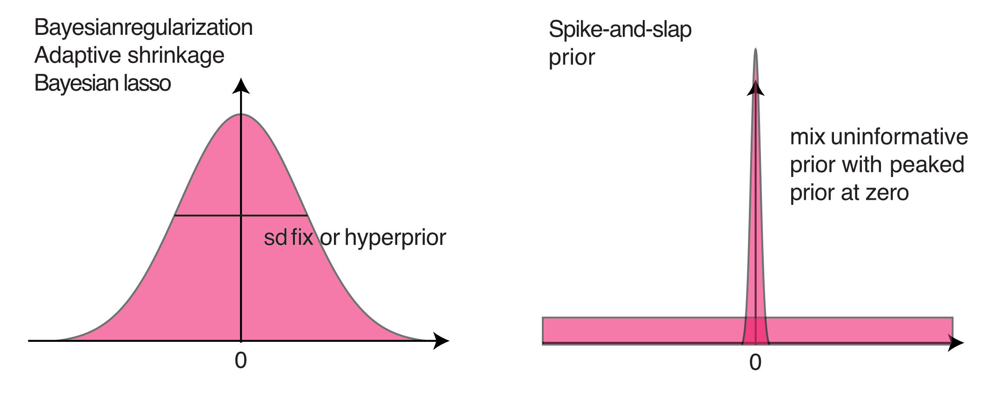

set.seed(1)
dat = data.frame(matrix(runif(20000), ncol = 100))
dat$y = rnorm(200)
dat$y = dat$y + rowSums(dat[,1:10]) 4 Bayesian model selection
4.1 Regularization

As an example, I will create a dataset with 100 predictors, of which the first 10 have an effect.
We can look at the results of a standard frequentist regression with all predictors
fullModel = lm(y ~ . , data = dat)
#summary(fullModel)
barplot(coef(fullModel), las = 2)4.1.1 Mildly regularizing priors
library(rjags)Loading required package: codaLinked to JAGS 4.3.0Loaded modules: basemod,bugsdat2 = data.frame(scale(dat)) # also response has to be scaled for adaptive shrinkage!
Data = list(y = dat2$y, x = as.matrix(dat2)[,1:100], i.max = nrow(dat2))
# fitting the full model - no problem for Jags
modelCode = "model{
# Likelihood
for(i in 1:i.max){
mu[i] <- inprod(a , x[i,]) + b
y[i] ~ dnorm(mu[i],tau)
}
# Prior distributions
for(i in 1:100){
a[i] ~ dnorm(0,0.01)
}
b ~ dnorm(0,0.01)
tau ~ dgamma(0.001, 0.001)
sigma <- 1/sqrt(tau)
}
"
jagsModel <- jags.model(file= textConnection(modelCode), data=Data, n.chains = 3)Compiling model graph
Resolving undeclared variables
Allocating nodes
Graph information:
Observed stochastic nodes: 200
Unobserved stochastic nodes: 102
Total graph size: 20910
Initializing modelpara.names <- c("a","b","sigma")
Samples <- coda.samples(jagsModel, variable.names = para.names, n.iter = 5000)
#gelman.diag(Samples)
#summary(Samples)
x1<- summary(Samples)4.1.2 Classical L1 / L2 shrinkage
Regularization via prior - Lasso and Ridge equivalents. Idea is that we put a kind of “random effect” directly on the parameter values
http://stats.stackexchange.com/questions/28609/regularized-bayesian-logistic-regression-in-jags
http://doingbayesiandataanalysis.blogspot.de/2014/01/bayesian-variable-selection-in-multiple.html
Here a version with adaptive shrinkage, i.e. we estimate the strength of the shrinkage via a hyperprior
modelCode = "model{
# Likelihood
for(i in 1:i.max){
mu[i] <- inprod(a , x[i,]) + b
y[i] ~ dnorm(mu[i],tau)
}
# Prior distributions
for(i in 1:100){
a[i] ~ dnorm(0,tauShrinkage)
}
b ~ dnorm(0,0.001)
tauShrinkage ~ dgamma(0.001, 0.001)
sdShrinkage <- 1/sqrt(tauShrinkage)
tau ~ dgamma(0.001, 0.001)
sigma <- 1/sqrt(tau)
}
"
# s = function(x) dgamma(x, shape = 0.0001, rate = 0.001)
# curve(s, 0, 5)
jagsModel <- jags.model(file= textConnection(modelCode), data=Data, n.chains = 3)Compiling model graph
Resolving undeclared variables
Allocating nodes
Graph information:
Observed stochastic nodes: 200
Unobserved stochastic nodes: 103
Total graph size: 20912
Initializing modelpara.names <- c("a","b","sigma", "sdShrinkage")
Samples <- coda.samples(jagsModel, variable.names = para.names, n.iter = 5000)
#gelman.diag(Samples)
#summary(Samples)
x2<- summary(Samples)4.1.3 Spike and slap
Mixtures of both - Spike and Slab Variable Selection
https://darrenjw.wordpress.com/2012/11/20/getting-started-with-bayesian-variable-selection-using-jags-and-rjags/
Ishwaran, H. & Rao, J. S. (2005) Spike and Slab Variable Selection: Frequentist and Bayesian Strategies. The Annals of Statistics, Institute of Mathematical Statistics, 33, pp. 730-773.
modelCode = "model{
# Likelihood
for(i in 1:i.max){
mu[i] <- inprod(a , x[i,]) + b
y[i] ~ dnorm(mu[i],tau)
}
# Prior distributions
pind ~ dbeta(5,5)
for(j in 1:100){
a_raw[j] ~ dnorm(0,0.01)
ind[j] ~ dbern(pind)
a[j] = ind[j] * a_raw[j]
}
b ~ dnorm(0,0.01)
tau ~ dgamma(0.001, 0.001)
sigma <- 1/sqrt(tau)
}
"
jagsModel <- jags.model(file= textConnection(modelCode), data=Data, n.chains = 3)Compiling model graph
Resolving undeclared variables
Allocating nodes
Graph information:
Observed stochastic nodes: 200
Unobserved stochastic nodes: 203
Total graph size: 21112
Initializing modelpara.names <- c("a_raw", "ind","sigma")
Samples <- coda.samples(jagsModel, variable.names = para.names, n.iter = 5000)
#summary(Samples)
#gelman.diag(Samples)
x3<- summary(Samples)
# looking at the selection
res3 <- x3$statistics[101:200,1]
barplot(res3, names.arg = 1:100, las = 2)
par(mfrow = c(1,3))
res1 <- x1$quantiles[1:100,3]
barplot(res1, names.arg = 1:100, las = 2)
abline(h = 1)
abline(v = 12)
res2 <- x2$quantiles[1:100,3]
barplot(res2, names.arg = 1:100, las = 2)
abline(h = 1)
abline(v = 12)
res3 <- x3$quantiles[101:200,3] * x3$quantiles[1:100,3]
barplot(res3, names.arg = 1:100, las = 2)
abline(h = 1)
abline(v = 12)
Comparison side by side for the first 20 values
barplot(rbind(res1, res2, res3)[,1:20], beside = T)
4.2 Bayes Factors
Bayes’ formula makes no fundamental difference between models and parameters. Hence, to perform inference with multiple models, we can simply write down the joint posterior \(P(M_i, \Theta_i| D)\) of different models \(M_i\) with parameter vectors \(\Theta_i\) as
\[ P(M_i, \Theta_i| D) = L(D|M_i , \Theta_i) \cdot p(\Theta_i) \cdot p(M_i) \]
where \(L(D|M_i , \Theta_i)\) is the likelihood of model \(M_i\), \(p(\Theta_i)\) is the prior distribution of model \(M_i\), and \(p(M_i)\) is the prior weight on model \(M_i\). The figure below provides a graphical illustration of this situation, assuming three models with an increasing number of parameters.

In principle, the joint distribution depicted in the figure provides the full information that can be obtained from the inference, but in most practical cases we want to get some simplified statistics across this distribution such as “the most likely model”, or “the combined uncertainty of a parameter of prediction”. To obtain such information, there are two routes that we can take - marginalize (average) across parameters space, and marginalize across model space.
If we marginalize across parameter space, we obtain model weights. The first step to do so is calculating the marginal likelihood, defined as the average of eq.\(\ref{eq: joint posterior}\) across all parameters for any given model:
\[ P(D|M_i) = \int L(D|M_i , \Theta_i) \cdot p(\Theta_i) d \Theta_i \]
From the marginal likelihood, we can compare models via the “Bayes factor”, defined as the ratio of their marginal likelihoods, multiplied by the ratio of their model priors \(p(M_i)\)
\[ BF_{i,j} = \frac{P(D|M_i)}{P(D|M_j)} \cdot \frac{p(M_i)}{p(M_j)} \]
For more than two models, however, it is more useful to standardize this quantity across all models in question, calculating a Bayesian posterior model weight as
\[ BMW_i = \frac{P(D|M_i)}{\sum_j P(D|M_j)} \cdot \frac{p(M_i)}{\sum_j p(M_j)} \]
The second route we can take is to marginalize across models to obtain averaged parameters. Note that this makes only sense if the models have some parameters in common (nested models). To obtain the averaged parameters, we simply marginalize across model space
\[ P(\Theta | D) = \sum_i L(D|M_i , \Theta_i) \cdot p(\Theta_i) \cdot p(M_i) \]
resulting in averaged distributions for the parameters.
For simple models, BF can be calculated using the BayesFactor package
library(BayesFactor)Loading required package: Matrix************
Welcome to BayesFactor 0.9.12-4.7. If you have questions, please contact Richard Morey (richarddmorey@gmail.com).
Type BFManual() to open the manual.
************data(sleep)
## Compute difference scores
diffScores = sleep$extra[1:10] - sleep$extra[11:20]
## Traditional two-tailed t test
t.test(diffScores)
One Sample t-test
data: diffScores
t = -4.0621, df = 9, p-value = 0.002833
alternative hypothesis: true mean is not equal to 0
95 percent confidence interval:
-2.4598858 -0.7001142
sample estimates:
mean of x
-1.58 bf = ttestBF(x = diffScores, rscale = 10)
bfBayes factor analysis
--------------
[1] Alt., r=10 : 4.521117 ±0%
Against denominator:
Null, mu = 0
---
Bayes factor type: BFoneSample, JZSchains = posterior(bf, iterations = 1000)
summary(chains)
Iterations = 1:1000
Thinning interval = 1
Number of chains = 1
Sample size per chain = 1000
1. Empirical mean and standard deviation for each variable,
plus standard error of the mean:
Mean SD Naive SE Time-series SE
mu -1.584 0.4174 0.01320 0.01435
sig2 1.763 1.0318 0.03263 0.03463
delta -1.303 0.4221 0.01335 0.01335
g 302.698 1682.2298 53.19678 53.19678
2. Quantiles for each variable:
2.5% 25% 50% 75% 97.5%
mu -2.3493 -1.853 -1.587 -1.340 -0.7136
sig2 0.6711 1.117 1.507 2.120 4.2918
delta -2.1236 -1.601 -1.306 -1.003 -0.4651
g 13.2340 35.203 70.968 179.638 1826.9768chains2 = recompute(chains, iterations = 10000)
plot(chains2[,1:2])
4.2.1 Estimation of the marginal likelihood
While the definition of the Bayesian model weights and averaged parameters is straightforward, the estimation of these quantities is often not. In practice, there are two options to estimate the quantities defined above numerically, both with a number of caveats.
The first option is to sample directly from the joint posterior of the models and the parameters. Basic algorithms such as rejection sampling can do that without any modification (Toni-ApproximateBayesiancomputation-2009), but they are inefficient for higher-dimensional parameter spaces. More sophisticated algorithms such as MCMC and SMC require modifications to deal with the issue of a changing number of parameters when changing between models, as well as with the issue of a changed meaning of the parameters. Such modifications (the most common class are the reversible-jump MCMCs (RJ-MCMC)) are often difficult to program, tune and generalize, which is the reason why they are typically only applied in specialized, well defined settings with a large number of models to be compared.
The second option is to approximate the marginal likelihood each model independently, and then average parameters or predictions based on the resulting weights. To approximate the marginal likelihood, one has to cover the parameter space with of each single model, e.g. with random sampling or MCMC, store the likelihood, and then compute the marginal likelihood from that. The challenge here is to get a stable approximation of the marginal likelihood, which can be connected with considerable problems -ComputingBayesfactor-2012. Nevertheless, because of the comparably easier implementation, this approach the more common choice in situations where the number of models to be compared is low.
http://stats.stackexchange.com/questions/229852/why-is-the-bayes-factor-sometimes-considered-more-important-than-the-posterior-o
http://stats.stackexchange.com/questions/27345/likelihood-ratio-vs-bayes-factor
4.2.2 Prior influence on the marginal likelihood
A problem that is often not sufficiently appreciated when performing Bayesian inference across multiple models is the influence of the choice of uninformative parameter priors on the model weight.
The issue arises because the prior density enters the marginal likelihood multiplicative. Although this follows directly from the joint posterior definition and is logically completely consistent, it has the somewhat intuitive consequence that increasing the width width of an uninformative prior will linearly decrease the marginal likelihood (Sinharay-SensitivityBayesFactors-2002). In particular, for an infinitely wide (inproper) uninformative prior, the model weight goes to zero, regardless of the fit. This behavior is surprising to many practitioners of Bayesian analysis, because they are used to the fact that the influence of increasing prior width on uninformative priors is minimal for fitting parameters.
The fact that Bayesian model weights are strongly dependent on the width of the prior choice has sparked discussion of the appropriateness of this approach in situations with uninformative priors. For example, in situations where multiple nested models are compared, the width of the uniformative prior may completely determine the complexity of models that are being selected. One suggestion that has been made is not to perform multi-model inference with uninformative priors at all, or that at least additional analysis is necessary to find parameter priors that are sensible for the multi-model setup at hand. Another solution is to calibrate the model on a part of the data first, use the result as new priors and then perform the analysis described above (intrinsic Bayes factor (Berger-IntrinsicBayesFactor-1996), fractional Bayes factor (OHagan-FractionalBayesFactors-1995)). If sufficient data is available so that the likelihood falls off sufficiently strong during the calibration step, this approach should nearly eliminate any ambiguity resulting from the prior choice.
4.3 Information Criteria
DIC can be calculated in Jags using
dic = dic.samples(jagsModel, n.iter = 5000)
dicMean deviance: 440.9
penalty 17.64
Penalized deviance: 458.6 This was for the previous model, which was the spike and slap. In the result, the penalty is the effective number of parameters of this model.
Note that this value is pretty low which makes sense because although the spike and slap has formally 200 parameters, most of them are, as we have seen, ineffective.
4.3.1 Example
## ---- echo=F, warning=F, message=F---------------------------------------
set.seed(123)
rm(list=ls(all=TRUE))
library(rjags)
library(runjags)
library(lme4)
library(effects)Loading required package: carDatalattice theme set by effectsTheme()
See ?effectsTheme for details.library(R2jags)
Attaching package: 'R2jags'The following object is masked from 'package:coda':
traceplot## ---- fig.width=5, fig.height=5------------------------------------------
a <- 5
b <- 10
sigma <- 10
rsigma = 30
group = rep(1:11, each = 5)
randomEffect = rnorm(11, sd = rsigma)
x <- -27:27
y <- a * x + b + rnorm(55,0,sd = sigma) + randomEffect[group]
plot(x,y, col = group, pch = 3)
## ---- fig.width=5, fig.height=5------------------------------------------
fit <- lm(y ~ x)
summary(fit)
Call:
lm(formula = y ~ x)
Residuals:
Min 1Q Median 3Q Max
-63.787 -11.266 1.651 14.690 44.541
Coefficients:
Estimate Std. Error t value Pr(>|t|)
(Intercept) 6.8187 2.9753 2.292 0.0259 *
x 5.4630 0.1874 29.147 <2e-16 ***
---
Signif. codes: 0 '***' 0.001 '**' 0.01 '*' 0.05 '.' 0.1 ' ' 1
Residual standard error: 22.07 on 53 degrees of freedom
Multiple R-squared: 0.9413, Adjusted R-squared: 0.9402
F-statistic: 849.6 on 1 and 53 DF, p-value: < 2.2e-16plot(allEffects(fit, partial.residuals = T))
## ---- fig.width=5, fig.height=5------------------------------------------
fit <- lmer(y ~ x + (1|group))
summary(fit)Linear mixed model fit by REML ['lmerMod']
Formula: y ~ x + (1 | group)
REML criterion at convergence: 414.4
Scaled residuals:
Min 1Q Median 3Q Max
-2.7722 -0.5287 0.1176 0.4543 1.9274
Random effects:
Groups Name Variance Std.Dev.
group (Intercept) 490.35 22.144
Residual 59.46 7.711
Number of obs: 55, groups: group, 11
Fixed effects:
Estimate Std. Error t value
(Intercept) 6.8187 6.7571 1.009
x 5.4161 0.3695 14.659
Correlation of Fixed Effects:
(Intr)
x 0.000 plot(x,y, col = group, pch = 3)
for(i in 1:11){
abline(coef(fit)$group[i,1], coef(fit)$group[i,2], col = i)
}
## ------------------------------------------------------------------------
# 1) Model definition exactly how we created our data
modelCode = "
model{
# Likelihood
for(i in 1:i.max){
y[i] ~ dnorm(mu[i],tau)
mu[i] <- a*x[i] + b
}
# Prior distributions
a ~ dnorm(0,0.001)
b ~ dnorm(0,0.001)
tau <- 1/(sigma*sigma)
sigma ~ dunif(0,100)
}
"
# 2) Set up a list that contains all the necessary data (here, including parameters of the prior distribution)
Data = list(y = y, x = x, i.max = length(y))
# 3) Specify a function to generate inital values for the parameters
inits.fn <- function() list(a = rnorm(1), b = rnorm(1), sigma = runif(1,1,100))
## ---- fig.width=7, fig.height=7------------------------------------------
# Compile the model and run the MCMC for an adaptation (burn-in) phase
jagsModel <- jags.model(file= textConnection(modelCode), data=Data, init = inits.fn, n.chains = 3, n.adapt= 1000)Compiling model graph
Resolving undeclared variables
Allocating nodes
Graph information:
Observed stochastic nodes: 55
Unobserved stochastic nodes: 3
Total graph size: 230
Initializing model # Specify parameters for which posterior samples are saved
para.names <- c("a","b","sigma")
# Continue the MCMC runs with sampling
Samples <- coda.samples(jagsModel, variable.names = para.names, n.iter = 5000)
# Plot the mcmc chain and the posterior sample for p
plot(Samples)
dic = dic.samples(jagsModel, n.iter = 5000)
dicMean deviance: 497.6
penalty 3.137
Penalized deviance: 500.7 ## ------------------------------------------------------------------------
gelman.diag(Samples)Potential scale reduction factors:
Point est. Upper C.I.
a 1 1
b 1 1
sigma 1 1
Multivariate psrf
1## ------------------------------------------------------------------------
summary(Samples)
Iterations = 1001:6000
Thinning interval = 1
Number of chains = 3
Sample size per chain = 5000
1. Empirical mean and standard deviation for each variable,
plus standard error of the mean:
Mean SD Naive SE Time-series SE
a 5.461 0.1936 0.001581 0.001592
b 6.749 3.1017 0.025326 0.025634
sigma 22.663 2.2908 0.018705 0.025833
2. Quantiles for each variable:
2.5% 25% 50% 75% 97.5%
a 5.075 5.331 5.461 5.590 5.842
b 0.650 4.657 6.751 8.835 12.821
sigma 18.690 21.038 22.474 24.115 27.701## ---- fig.width=5, fig.height=5------------------------------------------
plot(x,y)
sampleMatrix <- as.matrix(Samples)
selection <- sample(dim(sampleMatrix)[1], 1000)
for (i in selection) abline(sampleMatrix[i,1], sampleMatrix[i,1], col = "#11111105")
Alternative: mixed model
## ------------------------------------------------------------------------
# 1) Model definition exactly how we created our data
modelCode = "
model{
# Likelihood
for(i in 1:i.max){
y[i] ~ dnorm(mu[i],tau)
mu[i] <- a*x[i] + b + r[group[i]]
}
# random effect
for(i in 1:nGroups){
r[i] ~ dnorm(0,rTau)
}
# Prior distributions
a ~ dnorm(0,0.001)
b ~ dnorm(0,0.001)
tau <- 1/(sigma*sigma)
sigma ~ dunif(0,100)
rTau <- 1/(rSigma*rSigma)
rSigma ~ dunif(0,100)
}
"
# 2) Set up a list that contains all the necessary data (here, including parameters of the prior distribution)
Data = list(y = y, x = x, i.max = length(y), group = group, nGroups = 11)
# 3) Specify a function to generate inital values for the parameters
inits.fn <- function() list(a = rnorm(1), b = rnorm(1), sigma = runif(1,1,100), rSigma = runif(1,1,100))
## ---- fig.width=7, fig.height=7------------------------------------------
# Compile the model and run the MCMC for an adaptation (burn-in) phase
jagsModel <- jags.model(file= textConnection(modelCode), data=Data, init = inits.fn, n.chains = 3, n.adapt= 1000)Compiling model graph
Resolving undeclared variables
Allocating nodes
Graph information:
Observed stochastic nodes: 55
Unobserved stochastic nodes: 15
Total graph size: 300
Initializing model # Specify parameters for which posterior samples are saved
para.names <- c("a","b","sigma", "rSigma")
# Continue the MCMC runs with sampling
Samples <- coda.samples(jagsModel, variable.names = para.names, n.iter = 5000)
# Plot the mcmc chain and the posterior sample for p
plot(Samples)
## ---- fig.width=18, fig.height=18---------------------------------------
R2JagsResults <- jags(data=Data, inits=inits.fn, parameters.to.save=c("a","b","sigma", "rSigma", "r"), n.chains=3, n.iter=5000, model.file=textConnection(modelCode))module glm loadedCompiling model graph
Resolving undeclared variables
Allocating nodes
Graph information:
Observed stochastic nodes: 55
Unobserved stochastic nodes: 15
Total graph size: 300
Initializing modelplot(R2JagsResults)
print(R2JagsResults)Inference for Bugs model at "4", fit using jags,
3 chains, each with 5000 iterations (first 2500 discarded), n.thin = 2
n.sims = 3750 iterations saved
mu.vect sd.vect 2.5% 25% 50% 75% 97.5% Rhat n.eff
a 5.422 0.407 4.590 5.163 5.424 5.697 6.198 1.001 3800
b 6.268 7.879 -9.247 1.260 6.341 11.444 21.681 1.001 3200
r[1] -5.344 13.058 -30.779 -13.836 -5.221 3.546 19.549 1.001 3800
r[2] -0.948 11.573 -23.527 -8.509 -0.851 6.830 21.461 1.001 3800
r[3] 35.322 10.383 14.773 28.451 35.255 42.295 55.047 1.001 3800
r[4] 10.168 9.350 -8.037 4.008 10.312 16.365 28.697 1.001 3800
r[5] -22.028 8.609 -39.212 -27.688 -21.986 -16.411 -5.257 1.002 2100
r[6] -1.805 8.468 -17.713 -7.517 -1.948 3.671 15.350 1.001 3000
r[7] -41.639 8.824 -59.366 -47.367 -41.592 -35.857 -24.251 1.001 2300
r[8] -9.389 9.518 -28.120 -15.598 -9.445 -3.328 10.050 1.001 3800
r[9] 13.938 10.525 -6.624 7.134 13.685 20.537 35.400 1.002 2000
r[10] 23.045 11.771 0.450 15.204 22.809 30.678 46.630 1.001 2200
r[11] 4.663 13.290 -21.262 -3.895 4.378 13.119 31.277 1.002 2000
rSigma 25.632 6.967 15.934 20.614 24.498 29.203 42.813 1.001 3800
sigma 7.936 0.887 6.441 7.303 7.889 8.475 9.886 1.001 3800
deviance 382.415 5.762 373.750 378.110 381.700 385.860 395.962 1.002 2100
For each parameter, n.eff is a crude measure of effective sample size,
and Rhat is the potential scale reduction factor (at convergence, Rhat=1).
DIC info (using the rule, pD = var(deviance)/2)
pD = 16.6 and DIC = 399.0
DIC is an estimate of expected predictive error (lower deviance is better).dic = dic.samples(jagsModel, n.iter = 5000)
dicMean deviance: 382.5
penalty 12.81
Penalized deviance: 395.4 ## ---- fig.width=14, fig.height=14, eval= F-------------------------------
## R2JagsCoda <- as.mcmc(R2JagsResults)
## plot(R2JagsCoda)
## summary(R2JagsCoda)Note that selection based on information criteria shares many of the same problems that appear in frequentist IC selection. Those are in particular
- Affects uncertainties, in particular p-values
- Destroys causal relationships
This example shows how AIC selection, followed by a conventional regression analysis of the selected model, massively inflates false positives.
set.seed(1)
library(MASS)
dat = data.frame(matrix(runif(20000), ncol = 100))
dat$y = rnorm(200)
fullModel = lm(y ~ . , data = dat)
summary(fullModel)
Call:
lm(formula = y ~ ., data = dat)
Residuals:
Min 1Q Median 3Q Max
-1.95280 -0.39983 -0.01572 0.46104 1.61967
Coefficients:
Estimate Std. Error t value Pr(>|t|)
(Intercept) 2.19356 1.44518 1.518 0.1322
X1 0.58079 0.32689 1.777 0.0787 .
X2 -0.52687 0.32701 -1.611 0.1103
X3 0.27721 0.33117 0.837 0.4046
X4 -0.18342 0.30443 -0.602 0.5482
X5 -0.18544 0.29011 -0.639 0.5242
X6 -0.18382 0.31406 -0.585 0.5597
X7 -0.46290 0.28349 -1.633 0.1057
X8 -0.21527 0.29856 -0.721 0.4726
X9 0.12216 0.30359 0.402 0.6883
X10 -0.02594 0.33828 -0.077 0.9390
X11 0.25669 0.29482 0.871 0.3860
X12 -0.10183 0.30164 -0.338 0.7364
X13 0.49507 0.33438 1.481 0.1419
X14 0.16642 0.33659 0.494 0.6221
X15 0.11402 0.32964 0.346 0.7302
X16 -0.17640 0.31619 -0.558 0.5782
X17 -0.03129 0.31830 -0.098 0.9219
X18 -0.28201 0.29681 -0.950 0.3444
X19 0.02209 0.29664 0.074 0.9408
X20 0.25063 0.29855 0.839 0.4032
X21 -0.02479 0.30556 -0.081 0.9355
X22 -0.01187 0.31265 -0.038 0.9698
X23 -0.58731 0.31491 -1.865 0.0651 .
X24 -0.27343 0.32894 -0.831 0.4078
X25 -0.22745 0.29223 -0.778 0.4382
X26 0.18606 0.35755 0.520 0.6040
X27 -0.26998 0.33302 -0.811 0.4195
X28 0.09683 0.32235 0.300 0.7645
X29 0.36746 0.32915 1.116 0.2670
X30 -0.26027 0.31335 -0.831 0.4082
X31 -0.07890 0.28822 -0.274 0.7849
X32 -0.07879 0.32662 -0.241 0.8099
X33 -0.27736 0.34542 -0.803 0.4239
X34 -0.21118 0.34514 -0.612 0.5420
X35 0.17595 0.30706 0.573 0.5679
X36 0.17084 0.30423 0.562 0.5757
X37 0.28246 0.29520 0.957 0.3410
X38 0.01765 0.32873 0.054 0.9573
X39 0.07598 0.27484 0.276 0.7828
X40 0.09714 0.34733 0.280 0.7803
X41 -0.16985 0.31608 -0.537 0.5922
X42 -0.25184 0.33203 -0.758 0.4500
X43 -0.08306 0.29306 -0.283 0.7774
X44 -0.17389 0.31090 -0.559 0.5772
X45 -0.30756 0.30995 -0.992 0.3235
X46 0.61520 0.30961 1.987 0.0497 *
X47 -0.61994 0.32461 -1.910 0.0591 .
X48 0.62326 0.33822 1.843 0.0684 .
X49 0.35504 0.30382 1.169 0.2454
X50 0.09683 0.31925 0.303 0.7623
X51 0.17292 0.30770 0.562 0.5754
X52 -0.06560 0.30549 -0.215 0.8304
X53 -0.29953 0.32318 -0.927 0.3563
X54 0.06888 0.32289 0.213 0.8315
X55 0.05695 0.32103 0.177 0.8596
X56 0.26284 0.32914 0.799 0.4265
X57 0.10457 0.29788 0.351 0.7263
X58 -0.19239 0.30729 -0.626 0.5327
X59 0.02371 0.29171 0.081 0.9354
X60 -0.12842 0.32321 -0.397 0.6920
X61 0.06931 0.30015 0.231 0.8179
X62 -0.27227 0.31918 -0.853 0.3957
X63 -0.17359 0.32287 -0.538 0.5920
X64 -0.41846 0.33808 -1.238 0.2187
X65 -0.37243 0.31872 -1.169 0.2454
X66 0.36263 0.33034 1.098 0.2750
X67 -0.10120 0.30663 -0.330 0.7421
X68 -0.33790 0.33633 -1.005 0.3175
X69 -0.05326 0.30171 -0.177 0.8602
X70 -0.01047 0.33111 -0.032 0.9748
X71 -0.46896 0.32387 -1.448 0.1508
X72 -0.29867 0.33543 -0.890 0.3754
X73 -0.32556 0.33183 -0.981 0.3289
X74 0.21187 0.31690 0.669 0.5053
X75 0.63659 0.31144 2.044 0.0436 *
X76 0.13838 0.31642 0.437 0.6628
X77 -0.18846 0.29382 -0.641 0.5227
X78 0.06325 0.29180 0.217 0.8289
X79 0.07256 0.30145 0.241 0.8103
X80 0.33483 0.34426 0.973 0.3331
X81 -0.33944 0.35373 -0.960 0.3396
X82 -0.01291 0.32483 -0.040 0.9684
X83 -0.06540 0.27637 -0.237 0.8134
X84 0.11543 0.32813 0.352 0.7257
X85 -0.20415 0.31476 -0.649 0.5181
X86 0.04202 0.33588 0.125 0.9007
X87 -0.33265 0.29159 -1.141 0.2567
X88 -0.49522 0.31251 -1.585 0.1162
X89 -0.39293 0.33358 -1.178 0.2417
X90 -0.34512 0.31892 -1.082 0.2818
X91 0.10540 0.28191 0.374 0.7093
X92 -0.08630 0.30297 -0.285 0.7764
X93 0.02402 0.32907 0.073 0.9420
X94 0.51255 0.32139 1.595 0.1139
X95 -0.19971 0.30634 -0.652 0.5160
X96 -0.09592 0.34585 -0.277 0.7821
X97 -0.18862 0.29266 -0.644 0.5207
X98 0.14997 0.34858 0.430 0.6680
X99 -0.08061 0.30400 -0.265 0.7914
X100 -0.34988 0.31664 -1.105 0.2718
---
Signif. codes: 0 '***' 0.001 '**' 0.01 '*' 0.05 '.' 0.1 ' ' 1
Residual standard error: 0.9059 on 99 degrees of freedom
Multiple R-squared: 0.4387, Adjusted R-squared: -0.1282
F-statistic: 0.7739 on 100 and 99 DF, p-value: 0.8987# 2 predictors out of 100 significant (on average, we expect 5 of 100 to be significant)
selection = stepAIC(fullModel)Start: AIC=21.85
y ~ X1 + X2 + X3 + X4 + X5 + X6 + X7 + X8 + X9 + X10 + X11 +
X12 + X13 + X14 + X15 + X16 + X17 + X18 + X19 + X20 + X21 +
X22 + X23 + X24 + X25 + X26 + X27 + X28 + X29 + X30 + X31 +
X32 + X33 + X34 + X35 + X36 + X37 + X38 + X39 + X40 + X41 +
X42 + X43 + X44 + X45 + X46 + X47 + X48 + X49 + X50 + X51 +
X52 + X53 + X54 + X55 + X56 + X57 + X58 + X59 + X60 + X61 +
X62 + X63 + X64 + X65 + X66 + X67 + X68 + X69 + X70 + X71 +
X72 + X73 + X74 + X75 + X76 + X77 + X78 + X79 + X80 + X81 +
X82 + X83 + X84 + X85 + X86 + X87 + X88 + X89 + X90 + X91 +
X92 + X93 + X94 + X95 + X96 + X97 + X98 + X99 + X100
Df Sum of Sq RSS AIC
- X70 1 0.0008 81.253 19.850
- X22 1 0.0012 81.253 19.851
- X82 1 0.0013 81.253 19.851
- X38 1 0.0024 81.254 19.854
- X93 1 0.0044 81.256 19.858
- X19 1 0.0045 81.257 19.859
- X10 1 0.0048 81.257 19.860
- X21 1 0.0054 81.257 19.861
- X59 1 0.0054 81.257 19.861
- X17 1 0.0079 81.260 19.867
- X86 1 0.0128 81.265 19.879
- X69 1 0.0256 81.278 19.911
- X55 1 0.0258 81.278 19.911
- X54 1 0.0374 81.289 19.940
- X52 1 0.0378 81.290 19.941
- X78 1 0.0386 81.291 19.943
- X61 1 0.0438 81.296 19.955
- X83 1 0.0460 81.298 19.961
- X79 1 0.0475 81.300 19.965
- X32 1 0.0478 81.300 19.965
- X99 1 0.0577 81.310 19.990
- X31 1 0.0615 81.314 19.999
- X39 1 0.0627 81.315 20.002
- X96 1 0.0631 81.315 20.003
- X40 1 0.0642 81.316 20.006
- X43 1 0.0659 81.318 20.010
- X92 1 0.0666 81.319 20.012
- X28 1 0.0741 81.326 20.030
- X50 1 0.0755 81.328 20.034
- X67 1 0.0894 81.341 20.068
- X12 1 0.0935 81.346 20.078
- X15 1 0.0982 81.350 20.089
- X57 1 0.1012 81.353 20.096
- X84 1 0.1016 81.354 20.098
- X91 1 0.1147 81.367 20.130
- X60 1 0.1296 81.382 20.166
- X9 1 0.1329 81.385 20.174
- X98 1 0.1519 81.404 20.221
- X76 1 0.1570 81.409 20.234
- X14 1 0.2006 81.453 20.341
- X26 1 0.2222 81.474 20.394
- X41 1 0.2370 81.489 20.430
- X63 1 0.2372 81.489 20.431
- X16 1 0.2554 81.507 20.476
- X44 1 0.2567 81.509 20.479
- X36 1 0.2588 81.511 20.484
- X51 1 0.2592 81.511 20.485
- X35 1 0.2695 81.522 20.510
- X6 1 0.2811 81.533 20.538
- X4 1 0.2979 81.550 20.580
- X34 1 0.3073 81.559 20.603
- X58 1 0.3217 81.574 20.638
- X5 1 0.3353 81.587 20.671
- X77 1 0.3377 81.590 20.677
- X97 1 0.3409 81.593 20.685
- X85 1 0.3452 81.597 20.696
- X95 1 0.3488 81.601 20.704
- X74 1 0.3669 81.619 20.749
- X8 1 0.4267 81.679 20.895
- X42 1 0.4722 81.724 21.006
- X25 1 0.4972 81.749 21.068
- X56 1 0.5234 81.775 21.132
- X33 1 0.5292 81.781 21.146
- X27 1 0.5394 81.791 21.171
- X30 1 0.5662 81.818 21.237
- X24 1 0.5671 81.819 21.239
- X3 1 0.5750 81.827 21.258
- X20 1 0.5784 81.830 21.266
- X62 1 0.5972 81.849 21.312
- X11 1 0.6222 81.874 21.373
- X72 1 0.6507 81.903 21.443
- X53 1 0.7050 81.957 21.576
- X18 1 0.7409 81.993 21.663
- X37 1 0.7514 82.003 21.689
- X81 1 0.7558 82.008 21.699
- X80 1 0.7764 82.028 21.750
- X73 1 0.7900 82.042 21.783
- X45 1 0.8081 82.060 21.827
<none> 81.252 21.848
- X68 1 0.8284 82.080 21.877
- X90 1 0.9611 82.213 22.200
- X66 1 0.9890 82.241 22.267
- X100 1 1.0021 82.254 22.299
- X29 1 1.0229 82.275 22.350
- X87 1 1.0682 82.320 22.460
- X65 1 1.1207 82.373 22.587
- X49 1 1.1208 82.373 22.588
- X89 1 1.1387 82.391 22.631
- X64 1 1.2574 82.509 22.919
- X71 1 1.7208 82.973 24.039
- X13 1 1.7991 83.051 24.228
- X88 1 2.0610 83.313 24.858
- X94 1 2.0874 83.339 24.921
- X2 1 2.1305 83.383 25.024
- X7 1 2.1883 83.440 25.163
- X1 1 2.5907 83.843 26.125
- X48 1 2.7871 84.039 26.593
- X23 1 2.8547 84.107 26.754
- X47 1 2.9934 84.245 27.084
- X46 1 3.2404 84.492 27.669
- X75 1 3.4289 84.681 28.115
Step: AIC=19.85
y ~ X1 + X2 + X3 + X4 + X5 + X6 + X7 + X8 + X9 + X10 + X11 +
X12 + X13 + X14 + X15 + X16 + X17 + X18 + X19 + X20 + X21 +
X22 + X23 + X24 + X25 + X26 + X27 + X28 + X29 + X30 + X31 +
X32 + X33 + X34 + X35 + X36 + X37 + X38 + X39 + X40 + X41 +
X42 + X43 + X44 + X45 + X46 + X47 + X48 + X49 + X50 + X51 +
X52 + X53 + X54 + X55 + X56 + X57 + X58 + X59 + X60 + X61 +
X62 + X63 + X64 + X65 + X66 + X67 + X68 + X69 + X71 + X72 +
X73 + X74 + X75 + X76 + X77 + X78 + X79 + X80 + X81 + X82 +
X83 + X84 + X85 + X86 + X87 + X88 + X89 + X90 + X91 + X92 +
X93 + X94 + X95 + X96 + X97 + X98 + X99 + X100
Df Sum of Sq RSS AIC
- X82 1 0.0014 81.254 17.853
- X22 1 0.0017 81.255 17.854
- X38 1 0.0021 81.255 17.855
- X19 1 0.0042 81.257 17.860
- X10 1 0.0043 81.257 17.860
- X93 1 0.0043 81.257 17.860
- X21 1 0.0050 81.258 17.862
- X59 1 0.0050 81.258 17.862
- X17 1 0.0084 81.261 17.870
- X86 1 0.0121 81.265 17.880
- X69 1 0.0248 81.278 17.911
- X55 1 0.0271 81.280 17.916
- X78 1 0.0378 81.291 17.943
- X54 1 0.0379 81.291 17.943
- X52 1 0.0383 81.291 17.944
- X61 1 0.0456 81.298 17.962
- X79 1 0.0474 81.300 17.966
- X32 1 0.0483 81.301 17.969
- X83 1 0.0492 81.302 17.971
- X99 1 0.0575 81.310 17.991
- X31 1 0.0623 81.315 18.003
- X96 1 0.0631 81.316 18.005
- X40 1 0.0641 81.317 18.007
- X39 1 0.0643 81.317 18.008
- X43 1 0.0678 81.321 18.017
- X92 1 0.0689 81.322 18.019
- X28 1 0.0733 81.326 18.030
- X50 1 0.0747 81.328 18.034
- X67 1 0.0901 81.343 18.071
- X12 1 0.0927 81.346 18.078
- X57 1 0.1008 81.354 18.098
- X15 1 0.1020 81.355 18.101
- X84 1 0.1022 81.355 18.101
- X91 1 0.1142 81.367 18.131
- X60 1 0.1290 81.382 18.167
- X9 1 0.1340 81.387 18.179
- X98 1 0.1526 81.405 18.225
- X76 1 0.1585 81.411 18.239
- X14 1 0.2020 81.455 18.346
- X26 1 0.2226 81.475 18.397
- X63 1 0.2365 81.489 18.431
- X41 1 0.2486 81.501 18.461
- X16 1 0.2547 81.508 18.476
- X44 1 0.2561 81.509 18.479
- X51 1 0.2591 81.512 18.486
- X36 1 0.2632 81.516 18.497
- X35 1 0.2696 81.522 18.512
- X6 1 0.2813 81.534 18.541
- X4 1 0.2972 81.550 18.580
- X34 1 0.3078 81.561 18.606
- X58 1 0.3290 81.582 18.658
- X5 1 0.3347 81.588 18.672
- X97 1 0.3404 81.593 18.686
- X77 1 0.3458 81.599 18.699
- X95 1 0.3502 81.603 18.710
- X85 1 0.3506 81.603 18.711
- X74 1 0.3660 81.619 18.749
- X8 1 0.4284 81.681 18.901
- X42 1 0.4797 81.733 19.027
- X25 1 0.4978 81.751 19.071
- X56 1 0.5242 81.777 19.136
- X33 1 0.5290 81.782 19.148
- X27 1 0.5434 81.796 19.183
- X24 1 0.5681 81.821 19.243
- X20 1 0.5776 81.830 19.267
- X30 1 0.5796 81.832 19.271
- X3 1 0.5889 81.842 19.294
- X62 1 0.5999 81.853 19.321
- X11 1 0.6218 81.875 19.375
- X72 1 0.6507 81.904 19.445
- X53 1 0.7108 81.964 19.592
- X18 1 0.7401 81.993 19.663
- X37 1 0.7539 82.007 19.697
- X81 1 0.7709 82.024 19.738
- X80 1 0.7809 82.034 19.763
- X73 1 0.7906 82.043 19.786
- X45 1 0.8080 82.061 19.829
<none> 81.253 19.850
- X68 1 0.8503 82.103 19.932
- X90 1 0.9610 82.214 20.201
- X66 1 0.9915 82.244 20.276
- X100 1 1.0038 82.257 20.305
- X29 1 1.0266 82.279 20.361
- X87 1 1.0964 82.349 20.530
- X49 1 1.1244 82.377 20.598
- X89 1 1.1389 82.392 20.634
- X65 1 1.1761 82.429 20.724
- X64 1 1.2568 82.510 20.920
- X71 1 1.7537 83.007 22.120
- X13 1 1.8213 83.074 22.283
- X88 1 2.0650 83.318 22.869
- X2 1 2.1433 83.396 23.057
- X94 1 2.1762 83.429 23.136
- X7 1 2.1875 83.440 23.163
- X1 1 2.6066 83.859 24.165
- X48 1 2.8147 84.068 24.661
- X23 1 2.8801 84.133 24.816
- X47 1 2.9986 84.251 25.098
- X46 1 3.2401 84.493 25.670
- X75 1 3.4341 84.687 26.129
Step: AIC=17.85
y ~ X1 + X2 + X3 + X4 + X5 + X6 + X7 + X8 + X9 + X10 + X11 +
X12 + X13 + X14 + X15 + X16 + X17 + X18 + X19 + X20 + X21 +
X22 + X23 + X24 + X25 + X26 + X27 + X28 + X29 + X30 + X31 +
X32 + X33 + X34 + X35 + X36 + X37 + X38 + X39 + X40 + X41 +
X42 + X43 + X44 + X45 + X46 + X47 + X48 + X49 + X50 + X51 +
X52 + X53 + X54 + X55 + X56 + X57 + X58 + X59 + X60 + X61 +
X62 + X63 + X64 + X65 + X66 + X67 + X68 + X69 + X71 + X72 +
X73 + X74 + X75 + X76 + X77 + X78 + X79 + X80 + X81 + X83 +
X84 + X85 + X86 + X87 + X88 + X89 + X90 + X91 + X92 + X93 +
X94 + X95 + X96 + X97 + X98 + X99 + X100
Df Sum of Sq RSS AIC
- X22 1 0.0014 81.256 15.857
- X38 1 0.0022 81.256 15.859
- X10 1 0.0034 81.258 15.861
- X93 1 0.0040 81.258 15.863
- X19 1 0.0041 81.258 15.863
- X59 1 0.0045 81.259 15.864
- X21 1 0.0050 81.259 15.866
- X17 1 0.0092 81.263 15.876
- X86 1 0.0133 81.268 15.886
- X69 1 0.0260 81.280 15.917
- X55 1 0.0274 81.282 15.921
- X54 1 0.0372 81.291 15.945
- X52 1 0.0379 81.292 15.947
- X78 1 0.0386 81.293 15.948
- X61 1 0.0452 81.299 15.964
- X32 1 0.0480 81.302 15.971
- X83 1 0.0488 81.303 15.973
- X79 1 0.0495 81.304 15.975
- X99 1 0.0580 81.312 15.996
- X31 1 0.0619 81.316 16.005
- X40 1 0.0630 81.317 16.008
- X96 1 0.0644 81.319 16.012
- X39 1 0.0651 81.319 16.013
- X43 1 0.0672 81.321 16.018
- X92 1 0.0676 81.322 16.020
- X28 1 0.0769 81.331 16.042
- X50 1 0.0807 81.335 16.052
- X67 1 0.0890 81.343 16.072
- X12 1 0.0919 81.346 16.079
- X57 1 0.1013 81.356 16.102
- X15 1 0.1029 81.357 16.106
- X84 1 0.1041 81.358 16.109
- X91 1 0.1151 81.369 16.136
- X60 1 0.1278 81.382 16.167
- X9 1 0.1388 81.393 16.195
- X76 1 0.1597 81.414 16.246
- X98 1 0.1718 81.426 16.276
- X14 1 0.2053 81.460 16.358
- X26 1 0.2217 81.476 16.398
- X63 1 0.2377 81.492 16.438
- X41 1 0.2488 81.503 16.465
- X44 1 0.2563 81.511 16.483
- X16 1 0.2680 81.522 16.512
- X51 1 0.2693 81.524 16.515
- X36 1 0.2700 81.524 16.517
- X35 1 0.2763 81.531 16.532
- X6 1 0.2821 81.536 16.546
- X4 1 0.2958 81.550 16.580
- X58 1 0.3301 81.584 16.664
- X34 1 0.3317 81.586 16.668
- X5 1 0.3333 81.588 16.672
- X97 1 0.3403 81.595 16.689
- X85 1 0.3505 81.605 16.714
- X95 1 0.3507 81.605 16.715
- X77 1 0.3559 81.610 16.727
- X74 1 0.3665 81.621 16.753
- X8 1 0.4275 81.682 16.903
- X42 1 0.4828 81.737 17.038
- X25 1 0.5189 81.773 17.126
- X56 1 0.5259 81.780 17.143
- X33 1 0.5280 81.782 17.148
- X27 1 0.5457 81.800 17.192
- X24 1 0.5698 81.824 17.251
- X30 1 0.5782 81.832 17.271
- X20 1 0.5827 81.837 17.282
- X3 1 0.5876 81.842 17.294
- X62 1 0.6008 81.855 17.326
- X11 1 0.6473 81.902 17.440
- X72 1 0.6557 81.910 17.461
- X53 1 0.7219 81.976 17.622
- X37 1 0.7625 82.017 17.721
- X81 1 0.7796 82.034 17.763
- X18 1 0.7920 82.046 17.793
- X73 1 0.8012 82.055 17.816
- X80 1 0.8053 82.060 17.826
<none> 81.254 17.853
- X45 1 0.8283 82.083 17.882
- X68 1 0.8582 82.112 17.954
- X100 1 1.0024 82.257 18.305
- X66 1 1.0231 82.277 18.356
- X29 1 1.0297 82.284 18.372
- X90 1 1.0426 82.297 18.403
- X87 1 1.0956 82.350 18.532
- X49 1 1.1235 82.378 18.599
- X89 1 1.1396 82.394 18.639
- X65 1 1.1817 82.436 18.741
- X64 1 1.2812 82.535 18.982
- X71 1 1.7572 83.011 20.132
- X13 1 1.8201 83.074 20.284
- X88 1 2.0887 83.343 20.929
- X2 1 2.1454 83.400 21.065
- X7 1 2.1960 83.450 21.187
- X94 1 2.2800 83.534 21.388
- X1 1 2.6227 83.877 22.207
- X48 1 2.8156 84.070 22.666
- X23 1 2.8933 84.148 22.851
- X47 1 3.0028 84.257 23.111
- X46 1 3.2413 84.496 23.676
- X75 1 3.4606 84.715 24.195
Step: AIC=15.86
y ~ X1 + X2 + X3 + X4 + X5 + X6 + X7 + X8 + X9 + X10 + X11 +
X12 + X13 + X14 + X15 + X16 + X17 + X18 + X19 + X20 + X21 +
X23 + X24 + X25 + X26 + X27 + X28 + X29 + X30 + X31 + X32 +
X33 + X34 + X35 + X36 + X37 + X38 + X39 + X40 + X41 + X42 +
X43 + X44 + X45 + X46 + X47 + X48 + X49 + X50 + X51 + X52 +
X53 + X54 + X55 + X56 + X57 + X58 + X59 + X60 + X61 + X62 +
X63 + X64 + X65 + X66 + X67 + X68 + X69 + X71 + X72 + X73 +
X74 + X75 + X76 + X77 + X78 + X79 + X80 + X81 + X83 + X84 +
X85 + X86 + X87 + X88 + X89 + X90 + X91 + X92 + X93 + X94 +
X95 + X96 + X97 + X98 + X99 + X100
Df Sum of Sq RSS AIC
- X38 1 0.0021 81.258 13.862
- X10 1 0.0035 81.259 13.865
- X19 1 0.0044 81.260 13.867
- X93 1 0.0044 81.260 13.867
- X59 1 0.0046 81.260 13.868
- X21 1 0.0050 81.261 13.869
- X17 1 0.0088 81.264 13.878
- X86 1 0.0131 81.269 13.889
- X69 1 0.0284 81.284 13.927
- X55 1 0.0286 81.284 13.927
- X54 1 0.0361 81.292 13.945
- X52 1 0.0368 81.292 13.947
- X78 1 0.0380 81.294 13.950
- X61 1 0.0461 81.302 13.970
- X32 1 0.0466 81.302 13.971
- X79 1 0.0484 81.304 13.976
- X83 1 0.0488 81.304 13.977
- X99 1 0.0578 81.313 13.999
- X40 1 0.0628 81.318 14.011
- X31 1 0.0647 81.320 14.016
- X39 1 0.0659 81.322 14.019
- X96 1 0.0659 81.322 14.019
- X43 1 0.0660 81.322 14.019
- X92 1 0.0677 81.323 14.023
- X28 1 0.0768 81.332 14.046
- X50 1 0.0843 81.340 14.064
- X12 1 0.0916 81.347 14.082
- X67 1 0.0920 81.348 14.083
- X57 1 0.1001 81.356 14.103
- X84 1 0.1028 81.358 14.110
- X15 1 0.1111 81.367 14.130
- X91 1 0.1170 81.373 14.144
- X60 1 0.1267 81.382 14.168
- X9 1 0.1374 81.393 14.195
- X76 1 0.1612 81.417 14.253
- X98 1 0.1819 81.438 14.304
- X14 1 0.2039 81.460 14.358
- X26 1 0.2295 81.485 14.421
- X63 1 0.2406 81.496 14.448
- X41 1 0.2474 81.503 14.465
- X44 1 0.2616 81.517 14.499
- X51 1 0.2708 81.526 14.522
- X16 1 0.2708 81.526 14.522
- X36 1 0.2719 81.528 14.525
- X35 1 0.2791 81.535 14.542
- X6 1 0.2810 81.537 14.547
- X4 1 0.2969 81.553 14.586
- X34 1 0.3304 81.586 14.668
- X58 1 0.3312 81.587 14.670
- X5 1 0.3328 81.588 14.674
- X97 1 0.3407 81.596 14.693
- X85 1 0.3496 81.605 14.715
- X95 1 0.3503 81.606 14.717
- X77 1 0.3569 81.613 14.733
- X74 1 0.3658 81.621 14.755
- X8 1 0.4264 81.682 14.903
- X42 1 0.4841 81.740 15.045
- X25 1 0.5187 81.774 15.129
- X56 1 0.5301 81.786 15.157
- X33 1 0.5326 81.788 15.163
- X27 1 0.5443 81.800 15.192
- X30 1 0.5788 81.834 15.276
- X3 1 0.5862 81.842 15.294
- X24 1 0.5989 81.855 15.325
- X20 1 0.6026 81.858 15.334
- X11 1 0.6460 81.902 15.440
- X62 1 0.6612 81.917 15.477
- X72 1 0.6706 81.926 15.500
- X53 1 0.7408 81.996 15.672
- X81 1 0.7786 82.034 15.764
- X18 1 0.7929 82.049 15.799
- X37 1 0.8042 82.060 15.826
- X80 1 0.8137 82.069 15.849
<none> 81.256 15.857
- X73 1 0.8212 82.077 15.868
- X45 1 0.8272 82.083 15.882
- X68 1 0.8587 82.114 15.959
- X100 1 1.0082 82.264 16.323
- X66 1 1.0344 82.290 16.387
- X90 1 1.0490 82.305 16.422
- X29 1 1.0624 82.318 16.455
- X87 1 1.0973 82.353 16.539
- X49 1 1.1265 82.382 16.610
- X65 1 1.1807 82.436 16.742
- X89 1 1.1835 82.439 16.749
- X64 1 1.2809 82.537 16.985
- X71 1 1.7560 83.012 18.133
- X13 1 1.9480 83.204 18.595
- X88 1 2.1348 83.390 19.043
- X2 1 2.1468 83.402 19.072
- X7 1 2.2436 83.499 19.304
- X94 1 2.2857 83.541 19.405
- X1 1 2.7430 83.999 20.497
- X48 1 2.8641 84.120 20.785
- X23 1 2.8942 84.150 20.856
- X47 1 3.0014 84.257 21.111
- X46 1 3.2668 84.522 21.740
- X75 1 3.4593 84.715 22.195
Step: AIC=13.86
y ~ X1 + X2 + X3 + X4 + X5 + X6 + X7 + X8 + X9 + X10 + X11 +
X12 + X13 + X14 + X15 + X16 + X17 + X18 + X19 + X20 + X21 +
X23 + X24 + X25 + X26 + X27 + X28 + X29 + X30 + X31 + X32 +
X33 + X34 + X35 + X36 + X37 + X39 + X40 + X41 + X42 + X43 +
X44 + X45 + X46 + X47 + X48 + X49 + X50 + X51 + X52 + X53 +
X54 + X55 + X56 + X57 + X58 + X59 + X60 + X61 + X62 + X63 +
X64 + X65 + X66 + X67 + X68 + X69 + X71 + X72 + X73 + X74 +
X75 + X76 + X77 + X78 + X79 + X80 + X81 + X83 + X84 + X85 +
X86 + X87 + X88 + X89 + X90 + X91 + X92 + X93 + X94 + X95 +
X96 + X97 + X98 + X99 + X100
Df Sum of Sq RSS AIC
- X93 1 0.0040 81.262 11.871
- X19 1 0.0041 81.262 11.872
- X10 1 0.0041 81.262 11.872
- X21 1 0.0044 81.262 11.873
- X59 1 0.0046 81.262 11.873
- X17 1 0.0091 81.267 11.884
- X86 1 0.0127 81.270 11.893
- X69 1 0.0276 81.285 11.930
- X55 1 0.0281 81.286 11.931
- X54 1 0.0395 81.297 11.959
- X52 1 0.0400 81.298 11.960
- X78 1 0.0437 81.301 11.969
- X32 1 0.0459 81.304 11.975
- X79 1 0.0464 81.304 11.976
- X61 1 0.0472 81.305 11.978
- X83 1 0.0476 81.305 11.979
- X99 1 0.0601 81.318 12.010
- X40 1 0.0609 81.319 12.011
- X39 1 0.0638 81.322 12.019
- X31 1 0.0650 81.323 12.022
- X92 1 0.0657 81.323 12.023
- X43 1 0.0678 81.325 12.028
- X96 1 0.0681 81.326 12.029
- X28 1 0.0822 81.340 12.064
- X50 1 0.0878 81.346 12.078
- X12 1 0.0899 81.348 12.083
- X67 1 0.0930 81.351 12.091
- X57 1 0.0994 81.357 12.106
- X84 1 0.1060 81.364 12.122
- X15 1 0.1090 81.367 12.130
- X91 1 0.1193 81.377 12.155
- X60 1 0.1253 81.383 12.170
- X9 1 0.1398 81.398 12.206
- X76 1 0.1627 81.420 12.262
- X98 1 0.1818 81.439 12.309
- X14 1 0.2139 81.472 12.387
- X26 1 0.2275 81.485 12.421
- X63 1 0.2466 81.504 12.468
- X41 1 0.2528 81.511 12.483
- X44 1 0.2617 81.519 12.505
- X51 1 0.2701 81.528 12.525
- X16 1 0.2732 81.531 12.533
- X35 1 0.2770 81.535 12.542
- X6 1 0.2829 81.541 12.557
- X36 1 0.2883 81.546 12.570
- X4 1 0.2961 81.554 12.589
- X58 1 0.3297 81.587 12.671
- X34 1 0.3346 81.592 12.684
- X97 1 0.3441 81.602 12.707
- X85 1 0.3477 81.605 12.716
- X5 1 0.3498 81.608 12.721
- X77 1 0.3552 81.613 12.734
- X95 1 0.3565 81.614 12.737
- X74 1 0.3654 81.623 12.759
- X8 1 0.4417 81.699 12.946
- X42 1 0.4893 81.747 13.062
- X25 1 0.5186 81.776 13.134
- X56 1 0.5360 81.794 13.177
- X33 1 0.5466 81.804 13.203
- X27 1 0.5532 81.811 13.219
- X30 1 0.5771 81.835 13.277
- X3 1 0.5864 81.844 13.300
- X24 1 0.6016 81.859 13.337
- X20 1 0.6047 81.862 13.345
- X11 1 0.6440 81.902 13.440
- X62 1 0.6591 81.917 13.477
- X72 1 0.6769 81.935 13.521
- X53 1 0.7423 82.000 13.681
- X18 1 0.7908 82.049 13.799
- X81 1 0.7958 82.054 13.811
- X37 1 0.8157 82.073 13.859
<none> 81.258 13.862
- X73 1 0.8209 82.079 13.872
- X80 1 0.8241 82.082 13.880
- X45 1 0.8359 82.094 13.909
- X68 1 0.8723 82.130 13.997
- X100 1 1.0177 82.275 14.351
- X66 1 1.0507 82.308 14.431
- X29 1 1.0654 82.323 14.467
- X90 1 1.1064 82.364 14.566
- X49 1 1.1510 82.409 14.675
- X87 1 1.1553 82.413 14.685
- X89 1 1.1816 82.439 14.749
- X65 1 1.1880 82.446 14.764
- X64 1 1.3150 82.573 15.072
- X71 1 1.9338 83.192 16.566
- X13 1 2.0537 83.311 16.854
- X88 1 2.1329 83.391 17.044
- X2 1 2.1631 83.421 17.116
- X7 1 2.2431 83.501 17.308
- X94 1 2.3156 83.573 17.481
- X1 1 2.7772 84.035 18.583
- X23 1 2.9172 84.175 18.916
- X48 1 2.9649 84.223 19.029
- X47 1 3.0061 84.264 19.127
- X46 1 3.3369 84.595 19.911
- X75 1 3.5086 84.766 20.316
Step: AIC=11.87
y ~ X1 + X2 + X3 + X4 + X5 + X6 + X7 + X8 + X9 + X10 + X11 +
X12 + X13 + X14 + X15 + X16 + X17 + X18 + X19 + X20 + X21 +
X23 + X24 + X25 + X26 + X27 + X28 + X29 + X30 + X31 + X32 +
X33 + X34 + X35 + X36 + X37 + X39 + X40 + X41 + X42 + X43 +
X44 + X45 + X46 + X47 + X48 + X49 + X50 + X51 + X52 + X53 +
X54 + X55 + X56 + X57 + X58 + X59 + X60 + X61 + X62 + X63 +
X64 + X65 + X66 + X67 + X68 + X69 + X71 + X72 + X73 + X74 +
X75 + X76 + X77 + X78 + X79 + X80 + X81 + X83 + X84 + X85 +
X86 + X87 + X88 + X89 + X90 + X91 + X92 + X94 + X95 + X96 +
X97 + X98 + X99 + X100
Df Sum of Sq RSS AIC
- X19 1 0.0033 81.265 9.8795
- X10 1 0.0044 81.266 9.8823
- X59 1 0.0047 81.266 9.8829
- X21 1 0.0048 81.267 9.8834
- X17 1 0.0093 81.271 9.8944
- X86 1 0.0131 81.275 9.9037
- X69 1 0.0270 81.289 9.9379
- X55 1 0.0276 81.289 9.9394
- X52 1 0.0410 81.303 9.9723
- X54 1 0.0416 81.303 9.9738
- X78 1 0.0432 81.305 9.9778
- X79 1 0.0476 81.309 9.9885
- X83 1 0.0479 81.310 9.9892
- X61 1 0.0496 81.311 9.9934
- X32 1 0.0516 81.313 9.9984
- X99 1 0.0569 81.319 10.0114
- X40 1 0.0606 81.322 10.0207
- X39 1 0.0613 81.323 10.0224
- X92 1 0.0658 81.327 10.0333
- X43 1 0.0684 81.330 10.0398
- X31 1 0.0687 81.330 10.0405
- X96 1 0.0719 81.334 10.0484
- X28 1 0.0853 81.347 10.0814
- X12 1 0.0861 81.348 10.0832
- X57 1 0.0959 81.358 10.1075
- X50 1 0.0961 81.358 10.1078
- X67 1 0.1001 81.362 10.1177
- X15 1 0.1068 81.368 10.1341
- X91 1 0.1170 81.379 10.1592
- X84 1 0.1182 81.380 10.1623
- X60 1 0.1296 81.391 10.1902
- X9 1 0.1418 81.403 10.2201
- X76 1 0.1606 81.422 10.2663
- X98 1 0.1915 81.453 10.3422
- X14 1 0.2186 81.480 10.4087
- X26 1 0.2239 81.486 10.4218
- X41 1 0.2503 81.512 10.4866
- X44 1 0.2661 81.528 10.5254
- X63 1 0.2700 81.532 10.5349
- X51 1 0.2794 81.541 10.5581
- X6 1 0.2842 81.546 10.5697
- X36 1 0.2849 81.547 10.5714
- X35 1 0.2921 81.554 10.5891
- X16 1 0.2952 81.557 10.5966
- X4 1 0.3020 81.564 10.6134
- X58 1 0.3269 81.589 10.6743
- X34 1 0.3351 81.597 10.6945
- X77 1 0.3529 81.615 10.7380
- X85 1 0.3545 81.616 10.7420
- X5 1 0.3580 81.620 10.7506
- X95 1 0.3584 81.620 10.7516
- X97 1 0.3604 81.622 10.7566
- X74 1 0.3614 81.623 10.7590
- X8 1 0.4396 81.701 10.9506
- X42 1 0.4857 81.747 11.0633
- X25 1 0.5166 81.778 11.1388
- X27 1 0.5494 81.811 11.2190
- X33 1 0.5553 81.817 11.2336
- X3 1 0.5826 81.844 11.3003
- X30 1 0.5837 81.845 11.3029
- X56 1 0.5951 81.857 11.3309
- X24 1 0.5982 81.860 11.3385
- X20 1 0.6209 81.883 11.3939
- X11 1 0.6417 81.903 11.4447
- X62 1 0.6603 81.922 11.4900
- X72 1 0.6854 81.947 11.5513
- X53 1 0.7698 82.032 11.7572
- X18 1 0.7869 82.049 11.7990
- X81 1 0.8052 82.067 11.8435
- X37 1 0.8120 82.074 11.8600
<none> 81.262 11.8715
- X73 1 0.8169 82.079 11.8720
- X80 1 0.8415 82.103 11.9318
- X68 1 0.8728 82.134 12.0081
- X45 1 0.8959 82.158 12.0644
- X100 1 1.0297 82.291 12.3899
- X66 1 1.0491 82.311 12.4369
- X29 1 1.0872 82.349 12.5295
- X90 1 1.1045 82.366 12.5716
- X87 1 1.1547 82.416 12.6934
- X49 1 1.1811 82.443 12.7574
- X65 1 1.1840 82.446 12.7645
- X89 1 1.1859 82.448 12.7691
- X64 1 1.4134 82.675 13.3202
- X71 1 1.9321 83.194 14.5710
- X13 1 2.0575 83.319 14.8724
- X88 1 2.1315 83.393 15.0498
- X7 1 2.2412 83.503 15.3129
- X94 1 2.3117 83.573 15.4817
- X2 1 2.3311 83.593 15.5280
- X1 1 2.7763 84.038 16.5903
- X23 1 2.9222 84.184 16.9373
- X47 1 3.0117 84.273 17.1497
- X48 1 3.0360 84.298 17.2076
- X46 1 3.3784 84.640 18.0181
- X75 1 3.6053 84.867 18.5535
Step: AIC=9.88
y ~ X1 + X2 + X3 + X4 + X5 + X6 + X7 + X8 + X9 + X10 + X11 +
X12 + X13 + X14 + X15 + X16 + X17 + X18 + X20 + X21 + X23 +
X24 + X25 + X26 + X27 + X28 + X29 + X30 + X31 + X32 + X33 +
X34 + X35 + X36 + X37 + X39 + X40 + X41 + X42 + X43 + X44 +
X45 + X46 + X47 + X48 + X49 + X50 + X51 + X52 + X53 + X54 +
X55 + X56 + X57 + X58 + X59 + X60 + X61 + X62 + X63 + X64 +
X65 + X66 + X67 + X68 + X69 + X71 + X72 + X73 + X74 + X75 +
X76 + X77 + X78 + X79 + X80 + X81 + X83 + X84 + X85 + X86 +
X87 + X88 + X89 + X90 + X91 + X92 + X94 + X95 + X96 + X97 +
X98 + X99 + X100
Df Sum of Sq RSS AIC
- X10 1 0.0052 81.270 7.8923
- X21 1 0.0054 81.270 7.8927
- X59 1 0.0055 81.270 7.8930
- X17 1 0.0089 81.274 7.9014
- X86 1 0.0111 81.276 7.9069
- X69 1 0.0259 81.291 7.9433
- X55 1 0.0277 81.293 7.9478
- X52 1 0.0393 81.304 7.9763
- X54 1 0.0414 81.306 7.9814
- X78 1 0.0417 81.307 7.9822
- X79 1 0.0466 81.312 7.9943
- X83 1 0.0476 81.313 7.9966
- X61 1 0.0496 81.315 8.0015
- X32 1 0.0508 81.316 8.0045
- X99 1 0.0545 81.319 8.0136
- X39 1 0.0648 81.330 8.0390
- X43 1 0.0657 81.331 8.0412
- X40 1 0.0668 81.332 8.0438
- X92 1 0.0687 81.334 8.0484
- X31 1 0.0693 81.334 8.0499
- X96 1 0.0753 81.340 8.0649
- X28 1 0.0824 81.347 8.0821
- X12 1 0.0837 81.349 8.0854
- X50 1 0.0945 81.359 8.1119
- X57 1 0.0963 81.361 8.1165
- X67 1 0.1017 81.367 8.1296
- X84 1 0.1150 81.380 8.1623
- X15 1 0.1260 81.391 8.1893
- X91 1 0.1267 81.392 8.1912
- X60 1 0.1308 81.396 8.2012
- X9 1 0.1531 81.418 8.2561
- X76 1 0.1610 81.426 8.2754
- X98 1 0.1899 81.455 8.3464
- X14 1 0.2199 81.485 8.4200
- X26 1 0.2242 81.489 8.4306
- X41 1 0.2471 81.512 8.4868
- X44 1 0.2631 81.528 8.5260
- X63 1 0.2681 81.533 8.5382
- X51 1 0.2762 81.541 8.5581
- X36 1 0.2816 81.547 8.5714
- X6 1 0.2928 81.558 8.5988
- X4 1 0.3015 81.566 8.6202
- X35 1 0.3031 81.568 8.6240
- X16 1 0.3129 81.578 8.6481
- X58 1 0.3255 81.590 8.6789
- X34 1 0.3319 81.597 8.6946
- X77 1 0.3500 81.615 8.7391
- X85 1 0.3546 81.620 8.7504
- X5 1 0.3559 81.621 8.7536
- X97 1 0.3577 81.623 8.7578
- X95 1 0.3587 81.624 8.7603
- X74 1 0.3659 81.631 8.7779
- X8 1 0.4588 81.724 9.0056
- X42 1 0.4968 81.762 9.0986
- X25 1 0.5142 81.779 9.1412
- X33 1 0.5534 81.818 9.2368
- X27 1 0.5594 81.824 9.2516
- X3 1 0.5794 81.844 9.3003
- X30 1 0.5811 81.846 9.3046
- X24 1 0.5952 81.860 9.3391
- X56 1 0.6086 81.874 9.3717
- X20 1 0.6179 81.883 9.3945
- X11 1 0.6389 81.904 9.4457
- X62 1 0.6595 81.924 9.4960
- X72 1 0.7036 81.969 9.6037
- X53 1 0.7669 82.032 9.7582
- X18 1 0.7863 82.051 9.8053
- X81 1 0.8039 82.069 9.8483
- X37 1 0.8092 82.074 9.8612
<none> 81.265 9.8795
- X73 1 0.8169 82.082 9.8800
- X80 1 0.8382 82.103 9.9318
- X68 1 0.8814 82.146 10.0372
- X45 1 0.9152 82.180 10.1192
- X100 1 1.0265 82.291 10.3899
- X66 1 1.0543 82.319 10.4575
- X29 1 1.0884 82.353 10.5405
- X90 1 1.1016 82.367 10.5726
- X87 1 1.1696 82.435 10.7375
- X89 1 1.1829 82.448 10.7698
- X49 1 1.1864 82.451 10.7783
- X65 1 1.2412 82.506 10.9111
- X64 1 1.4102 82.675 11.3204
- X71 1 1.9986 83.264 12.7387
- X13 1 2.1045 83.369 12.9930
- X88 1 2.1447 83.410 13.0895
- X7 1 2.2638 83.529 13.3748
- X94 1 2.3101 83.575 13.4855
- X2 1 2.3316 83.597 13.5371
- X1 1 2.7788 84.044 14.6040
- X23 1 2.9199 84.185 14.9395
- X47 1 3.0084 84.273 15.1497
- X48 1 3.0329 84.298 15.2079
- X46 1 3.3755 84.640 16.0190
- X75 1 3.6121 84.877 16.5773
Step: AIC=7.89
y ~ X1 + X2 + X3 + X4 + X5 + X6 + X7 + X8 + X9 + X11 + X12 +
X13 + X14 + X15 + X16 + X17 + X18 + X20 + X21 + X23 + X24 +
X25 + X26 + X27 + X28 + X29 + X30 + X31 + X32 + X33 + X34 +
X35 + X36 + X37 + X39 + X40 + X41 + X42 + X43 + X44 + X45 +
X46 + X47 + X48 + X49 + X50 + X51 + X52 + X53 + X54 + X55 +
X56 + X57 + X58 + X59 + X60 + X61 + X62 + X63 + X64 + X65 +
X66 + X67 + X68 + X69 + X71 + X72 + X73 + X74 + X75 + X76 +
X77 + X78 + X79 + X80 + X81 + X83 + X84 + X85 + X86 + X87 +
X88 + X89 + X90 + X91 + X92 + X94 + X95 + X96 + X97 + X98 +
X99 + X100
Df Sum of Sq RSS AIC
- X21 1 0.0036 81.274 5.9012
- X59 1 0.0040 81.274 5.9022
- X17 1 0.0097 81.280 5.9162
- X86 1 0.0122 81.282 5.9223
- X69 1 0.0236 81.294 5.9504
- X55 1 0.0287 81.299 5.9630
- X52 1 0.0358 81.306 5.9803
- X54 1 0.0378 81.308 5.9852
- X78 1 0.0416 81.312 5.9947
- X61 1 0.0473 81.317 6.0087
- X83 1 0.0477 81.318 6.0096
- X32 1 0.0488 81.319 6.0123
- X79 1 0.0524 81.323 6.0212
- X99 1 0.0558 81.326 6.0295
- X31 1 0.0658 81.336 6.0542
- X39 1 0.0661 81.336 6.0548
- X43 1 0.0675 81.338 6.0583
- X96 1 0.0721 81.342 6.0696
- X92 1 0.0738 81.344 6.0738
- X28 1 0.0794 81.350 6.0875
- X12 1 0.0820 81.352 6.0939
- X40 1 0.0838 81.354 6.0983
- X50 1 0.0940 81.364 6.1236
- X57 1 0.0966 81.367 6.1300
- X67 1 0.0969 81.367 6.1306
- X84 1 0.1116 81.382 6.1668
- X91 1 0.1262 81.396 6.2027
- X60 1 0.1295 81.400 6.2108
- X15 1 0.1372 81.407 6.2297
- X9 1 0.1510 81.421 6.2634
- X76 1 0.1565 81.427 6.2771
- X98 1 0.2052 81.475 6.3966
- X14 1 0.2243 81.494 6.4436
- X26 1 0.2360 81.506 6.4721
- X41 1 0.2462 81.516 6.4972
- X44 1 0.2618 81.532 6.5354
- X63 1 0.2634 81.534 6.5395
- X51 1 0.2804 81.551 6.5812
- X36 1 0.2843 81.554 6.5906
- X6 1 0.2877 81.558 6.5990
- X35 1 0.3017 81.572 6.6335
- X4 1 0.3045 81.575 6.6402
- X58 1 0.3203 81.590 6.6790
- X34 1 0.3294 81.600 6.7012
- X16 1 0.3342 81.604 6.7132
- X97 1 0.3547 81.625 6.7632
- X85 1 0.3550 81.625 6.7640
- X77 1 0.3571 81.627 6.7691
- X74 1 0.3607 81.631 6.7780
- X5 1 0.3618 81.632 6.7806
- X95 1 0.3707 81.641 6.8025
- X8 1 0.4545 81.725 7.0077
- X42 1 0.4917 81.762 7.0986
- X25 1 0.5211 81.791 7.1705
- X33 1 0.5544 81.825 7.2520
- X27 1 0.5776 81.848 7.3086
- X3 1 0.5884 81.859 7.3352
- X30 1 0.5915 81.862 7.3427
- X56 1 0.6098 81.880 7.3874
- X20 1 0.6208 81.891 7.4143
- X24 1 0.6367 81.907 7.4531
- X62 1 0.6544 81.925 7.4962
- X11 1 0.6676 81.938 7.5284
- X72 1 0.7240 81.994 7.6661
- X53 1 0.7624 82.033 7.7598
- X18 1 0.7840 82.054 7.8125
- X81 1 0.8007 82.071 7.8532
- X37 1 0.8050 82.075 7.8637
<none> 81.270 7.8923
- X80 1 0.8337 82.104 7.9336
- X73 1 0.8503 82.120 7.9741
- X68 1 0.8786 82.149 8.0428
- X45 1 0.9100 82.180 8.1192
- X100 1 1.0214 82.292 8.3903
- X66 1 1.0711 82.341 8.5109
- X29 1 1.0833 82.353 8.5406
- X90 1 1.1001 82.370 8.5813
- X87 1 1.1695 82.440 8.7499
- X49 1 1.1934 82.464 8.8078
- X89 1 1.2262 82.496 8.8872
- X65 1 1.2363 82.506 8.9118
- X64 1 1.4134 82.684 9.3406
- X71 1 1.9935 83.264 10.7389
- X13 1 2.1100 83.380 11.0186
- X88 1 2.1396 83.410 11.0896
- X7 1 2.2652 83.535 11.3906
- X94 1 2.3074 83.578 11.4914
- X2 1 2.3621 83.632 11.6224
- X1 1 2.7740 84.044 12.6050
- X23 1 2.9761 84.246 13.0853
- X47 1 3.0167 84.287 13.1816
- X48 1 3.0853 84.355 13.3445
- X46 1 3.3706 84.641 14.0198
- X75 1 3.6069 84.877 14.5774
Step: AIC=5.9
y ~ X1 + X2 + X3 + X4 + X5 + X6 + X7 + X8 + X9 + X11 + X12 +
X13 + X14 + X15 + X16 + X17 + X18 + X20 + X23 + X24 + X25 +
X26 + X27 + X28 + X29 + X30 + X31 + X32 + X33 + X34 + X35 +
X36 + X37 + X39 + X40 + X41 + X42 + X43 + X44 + X45 + X46 +
X47 + X48 + X49 + X50 + X51 + X52 + X53 + X54 + X55 + X56 +
X57 + X58 + X59 + X60 + X61 + X62 + X63 + X64 + X65 + X66 +
X67 + X68 + X69 + X71 + X72 + X73 + X74 + X75 + X76 + X77 +
X78 + X79 + X80 + X81 + X83 + X84 + X85 + X86 + X87 + X88 +
X89 + X90 + X91 + X92 + X94 + X95 + X96 + X97 + X98 + X99 +
X100
Df Sum of Sq RSS AIC
- X59 1 0.0039 81.278 3.9108
- X17 1 0.0102 81.284 3.9262
- X86 1 0.0117 81.285 3.9300
- X69 1 0.0223 81.296 3.9560
- X55 1 0.0308 81.305 3.9769
- X52 1 0.0354 81.309 3.9882
- X54 1 0.0384 81.312 3.9957
- X78 1 0.0408 81.315 4.0015
- X61 1 0.0484 81.322 4.0201
- X83 1 0.0514 81.325 4.0275
- X32 1 0.0515 81.325 4.0278
- X79 1 0.0544 81.328 4.0349
- X99 1 0.0558 81.330 4.0384
- X39 1 0.0656 81.339 4.0625
- X31 1 0.0656 81.339 4.0626
- X43 1 0.0677 81.341 4.0678
- X96 1 0.0691 81.343 4.0711
- X92 1 0.0703 81.344 4.0741
- X28 1 0.0808 81.355 4.0999
- X40 1 0.0811 81.355 4.1006
- X12 1 0.0853 81.359 4.1110
- X67 1 0.0947 81.368 4.1340
- X50 1 0.0961 81.370 4.1374
- X57 1 0.0963 81.370 4.1381
- X84 1 0.1124 81.386 4.1775
- X91 1 0.1262 81.400 4.2114
- X60 1 0.1265 81.400 4.2121
- X15 1 0.1355 81.409 4.2344
- X9 1 0.1475 81.421 4.2639
- X76 1 0.1618 81.436 4.2990
- X98 1 0.2024 81.476 4.3985
- X14 1 0.2207 81.494 4.4436
- X26 1 0.2332 81.507 4.4742
- X41 1 0.2471 81.521 4.5083
- X44 1 0.2586 81.532 4.5365
- X63 1 0.2620 81.536 4.5450
- X51 1 0.2775 81.551 4.5828
- X36 1 0.2874 81.561 4.6072
- X6 1 0.2907 81.564 4.6153
- X35 1 0.2986 81.572 4.6347
- X4 1 0.3035 81.577 4.6467
- X58 1 0.3223 81.596 4.6927
- X34 1 0.3261 81.600 4.7020
- X16 1 0.3367 81.610 4.7280
- X97 1 0.3511 81.625 4.7632
- X85 1 0.3550 81.629 4.7729
- X77 1 0.3559 81.630 4.7749
- X5 1 0.3595 81.633 4.7840
- X74 1 0.3781 81.652 4.8294
- X95 1 0.3912 81.665 4.8615
- X8 1 0.4619 81.736 5.0347
- X42 1 0.4884 81.762 5.0994
- X25 1 0.5230 81.797 5.1841
- X33 1 0.5510 81.825 5.2525
- X27 1 0.5785 81.852 5.3197
- X3 1 0.5875 81.861 5.3417
- X30 1 0.5989 81.873 5.3694
- X20 1 0.6177 81.891 5.4154
- X56 1 0.6226 81.896 5.4274
- X24 1 0.6508 81.925 5.4962
- X62 1 0.6509 81.925 5.4964
- X11 1 0.6653 81.939 5.5316
- X72 1 0.7350 82.009 5.7018
- X53 1 0.7650 82.039 5.7750
- X18 1 0.7824 82.056 5.8173
- X81 1 0.8002 82.074 5.8607
- X37 1 0.8022 82.076 5.8656
<none> 81.274 5.9012
- X80 1 0.8319 82.106 5.9380
- X68 1 0.8917 82.165 6.0835
- X73 1 0.8948 82.169 6.0911
- X45 1 0.9064 82.180 6.1192
- X100 1 1.0207 82.294 6.3973
- X66 1 1.0675 82.341 6.5110
- X29 1 1.0809 82.355 6.5434
- X90 1 1.1040 82.378 6.5996
- X49 1 1.1915 82.465 6.8120
- X87 1 1.1927 82.466 6.8148
- X89 1 1.2291 82.503 6.9031
- X65 1 1.2915 82.565 7.0544
- X64 1 1.4248 82.699 7.3769
- X71 1 2.0236 83.297 8.8198
- X88 1 2.1485 83.422 9.1196
- X13 1 2.1689 83.443 9.1684
- X7 1 2.2753 83.549 9.4233
- X94 1 2.3039 83.578 9.4918
- X2 1 2.3588 83.633 9.6231
- X1 1 2.7733 84.047 10.6119
- X47 1 3.0195 84.293 11.1970
- X48 1 3.0825 84.356 11.3462
- X23 1 3.2403 84.514 11.7202
- X46 1 3.3952 84.669 12.0862
- X75 1 3.6066 84.880 12.5851
Step: AIC=3.91
y ~ X1 + X2 + X3 + X4 + X5 + X6 + X7 + X8 + X9 + X11 + X12 +
X13 + X14 + X15 + X16 + X17 + X18 + X20 + X23 + X24 + X25 +
X26 + X27 + X28 + X29 + X30 + X31 + X32 + X33 + X34 + X35 +
X36 + X37 + X39 + X40 + X41 + X42 + X43 + X44 + X45 + X46 +
X47 + X48 + X49 + X50 + X51 + X52 + X53 + X54 + X55 + X56 +
X57 + X58 + X60 + X61 + X62 + X63 + X64 + X65 + X66 + X67 +
X68 + X69 + X71 + X72 + X73 + X74 + X75 + X76 + X77 + X78 +
X79 + X80 + X81 + X83 + X84 + X85 + X86 + X87 + X88 + X89 +
X90 + X91 + X92 + X94 + X95 + X96 + X97 + X98 + X99 + X100
Df Sum of Sq RSS AIC
- X17 1 0.0122 81.290 1.9408
- X86 1 0.0143 81.292 1.9459
- X69 1 0.0218 81.299 1.9644
- X55 1 0.0279 81.306 1.9794
- X52 1 0.0368 81.314 2.0013
- X78 1 0.0399 81.318 2.0090
- X54 1 0.0403 81.318 2.0100
- X32 1 0.0492 81.327 2.0319
- X61 1 0.0510 81.329 2.0363
- X79 1 0.0538 81.331 2.0432
- X99 1 0.0545 81.332 2.0449
- X83 1 0.0552 81.333 2.0465
- X31 1 0.0639 81.342 2.0679
- X92 1 0.0680 81.346 2.0781
- X39 1 0.0681 81.346 2.0783
- X96 1 0.0692 81.347 2.0809
- X43 1 0.0724 81.350 2.0888
- X28 1 0.0777 81.355 2.1019
- X40 1 0.0851 81.363 2.1202
- X12 1 0.0875 81.365 2.1260
- X57 1 0.0932 81.371 2.1399
- X67 1 0.0965 81.374 2.1480
- X50 1 0.1017 81.379 2.1609
- X84 1 0.1109 81.389 2.1836
- X60 1 0.1230 81.401 2.2131
- X91 1 0.1284 81.406 2.2265
- X15 1 0.1336 81.411 2.2392
- X9 1 0.1515 81.429 2.2831
- X76 1 0.1602 81.438 2.3046
- X98 1 0.2067 81.484 2.4188
- X14 1 0.2268 81.505 2.4682
- X26 1 0.2322 81.510 2.4813
- X41 1 0.2499 81.528 2.5248
- X44 1 0.2576 81.535 2.5436
- X63 1 0.2600 81.538 2.5494
- X51 1 0.2756 81.553 2.5878
- X36 1 0.2861 81.564 2.6137
- X35 1 0.2972 81.575 2.6408
- X6 1 0.3016 81.579 2.6517
- X4 1 0.3066 81.584 2.6639
- X58 1 0.3261 81.604 2.7115
- X34 1 0.3317 81.609 2.7253
- X16 1 0.3349 81.613 2.7331
- X97 1 0.3488 81.627 2.7673
- X85 1 0.3557 81.633 2.7842
- X5 1 0.3671 81.645 2.8120
- X77 1 0.3702 81.648 2.8197
- X74 1 0.3761 81.654 2.8342
- X95 1 0.3875 81.665 2.8622
- X8 1 0.4618 81.740 3.0440
- X42 1 0.5023 81.780 3.1429
- X25 1 0.5191 81.797 3.1842
- X33 1 0.5473 81.825 3.2531
- X27 1 0.5785 81.856 3.3293
- X3 1 0.5843 81.862 3.3434
- X30 1 0.5949 81.873 3.3695
- X20 1 0.6155 81.893 3.4197
- X56 1 0.6188 81.896 3.4276
- X62 1 0.6499 81.928 3.5038
- X24 1 0.6603 81.938 3.5291
- X11 1 0.6674 81.945 3.5462
- X72 1 0.7313 82.009 3.7023
- X53 1 0.7652 82.043 3.7848
- X18 1 0.7790 82.057 3.8185
- X81 1 0.7979 82.076 3.8646
- X37 1 0.8102 82.088 3.8945
<none> 81.278 3.9108
- X80 1 0.8282 82.106 3.9385
- X68 1 0.8937 82.171 4.0980
- X45 1 0.9076 82.185 4.1317
- X73 1 0.9092 82.187 4.1357
- X100 1 1.0322 82.310 4.4348
- X66 1 1.0708 82.348 4.5284
- X29 1 1.0784 82.356 4.5470
- X90 1 1.1101 82.388 4.6239
- X87 1 1.1894 82.467 4.8163
- X49 1 1.2009 82.479 4.8443
- X89 1 1.2286 82.506 4.9115
- X65 1 1.2946 82.572 5.0712
- X64 1 1.4321 82.710 5.4042
- X71 1 2.0227 83.300 6.8271
- X88 1 2.1697 83.447 7.1798
- X13 1 2.1761 83.454 7.1951
- X7 1 2.2863 83.564 7.4591
- X94 1 2.3251 83.603 7.5519
- X2 1 2.3549 83.633 7.6231
- X1 1 2.7703 84.048 8.6140
- X48 1 3.0955 84.373 9.3864
- X23 1 3.2427 84.520 9.7350
- X47 1 3.2569 84.535 9.7687
- X46 1 3.3915 84.669 10.0870
- X75 1 3.6723 84.950 10.7490
Step: AIC=1.94
y ~ X1 + X2 + X3 + X4 + X5 + X6 + X7 + X8 + X9 + X11 + X12 +
X13 + X14 + X15 + X16 + X18 + X20 + X23 + X24 + X25 + X26 +
X27 + X28 + X29 + X30 + X31 + X32 + X33 + X34 + X35 + X36 +
X37 + X39 + X40 + X41 + X42 + X43 + X44 + X45 + X46 + X47 +
X48 + X49 + X50 + X51 + X52 + X53 + X54 + X55 + X56 + X57 +
X58 + X60 + X61 + X62 + X63 + X64 + X65 + X66 + X67 + X68 +
X69 + X71 + X72 + X73 + X74 + X75 + X76 + X77 + X78 + X79 +
X80 + X81 + X83 + X84 + X85 + X86 + X87 + X88 + X89 + X90 +
X91 + X92 + X94 + X95 + X96 + X97 + X98 + X99 + X100
Df Sum of Sq RSS AIC
- X86 1 0.0133 81.303 -0.0264
- X69 1 0.0193 81.309 -0.0116
- X55 1 0.0220 81.312 -0.0051
- X52 1 0.0353 81.325 0.0275
- X54 1 0.0398 81.330 0.0388
- X78 1 0.0450 81.335 0.0515
- X83 1 0.0463 81.336 0.0546
- X61 1 0.0525 81.342 0.0699
- X32 1 0.0531 81.343 0.0714
- X79 1 0.0552 81.345 0.0765
- X96 1 0.0581 81.348 0.0836
- X99 1 0.0615 81.351 0.0920
- X39 1 0.0652 81.355 0.1012
- X43 1 0.0663 81.356 0.1038
- X31 1 0.0676 81.358 0.1071
- X92 1 0.0723 81.362 0.1186
- X40 1 0.0794 81.369 0.1360
- X28 1 0.0820 81.372 0.1426
- X50 1 0.0942 81.384 0.1724
- X67 1 0.0943 81.384 0.1727
- X57 1 0.0980 81.388 0.1817
- X12 1 0.1024 81.392 0.1927
- X84 1 0.1033 81.393 0.1949
- X60 1 0.1158 81.406 0.2256
- X91 1 0.1400 81.430 0.2848
- X9 1 0.1422 81.432 0.2903
- X15 1 0.1422 81.432 0.2905
- X76 1 0.1534 81.443 0.3178
- X98 1 0.1957 81.486 0.4218
- X14 1 0.2176 81.507 0.4755
- X26 1 0.2248 81.515 0.4931
- X41 1 0.2522 81.542 0.5603
- X63 1 0.2572 81.547 0.5725
- X44 1 0.2702 81.560 0.6044
- X51 1 0.2729 81.563 0.6111
- X36 1 0.2845 81.574 0.6395
- X35 1 0.2859 81.576 0.6430
- X6 1 0.3069 81.597 0.6946
- X4 1 0.3223 81.612 0.7322
- X16 1 0.3285 81.618 0.7473
- X58 1 0.3333 81.623 0.7591
- X97 1 0.3453 81.635 0.7886
- X34 1 0.3482 81.638 0.7957
- X85 1 0.3500 81.640 0.8000
- X5 1 0.3552 81.645 0.8129
- X77 1 0.3721 81.662 0.8541
- X74 1 0.3757 81.666 0.8630
- X95 1 0.4137 81.704 0.9560
- X8 1 0.4497 81.740 1.0442
- X25 1 0.5238 81.814 1.2254
- X42 1 0.5424 81.832 1.2708
- X33 1 0.5476 81.837 1.2835
- X56 1 0.6144 81.904 1.4467
- X20 1 0.6148 81.905 1.4477
- X30 1 0.6209 81.911 1.4627
- X3 1 0.6241 81.914 1.4704
- X27 1 0.6376 81.928 1.5035
- X24 1 0.6493 81.939 1.5319
- X11 1 0.6577 81.948 1.5523
- X62 1 0.6658 81.956 1.5721
- X72 1 0.7192 82.009 1.7025
- X53 1 0.7538 82.044 1.7869
- X18 1 0.7760 82.066 1.8408
- X37 1 0.8037 82.094 1.9084
- X81 1 0.8071 82.097 1.9168
<none> 81.290 1.9408
- X80 1 0.8187 82.109 1.9449
- X68 1 0.8903 82.180 2.1192
- X45 1 0.9213 82.211 2.1947
- X73 1 0.9686 82.258 2.3098
- X100 1 1.0408 82.331 2.4853
- X29 1 1.0924 82.382 2.6106
- X66 1 1.0992 82.389 2.6270
- X90 1 1.1000 82.390 2.6290
- X89 1 1.2165 82.506 2.9116
- X49 1 1.2329 82.523 2.9515
- X87 1 1.2603 82.550 3.0177
- X65 1 1.3132 82.603 3.1459
- X64 1 1.4838 82.774 3.5585
- X71 1 2.0950 83.385 5.0300
- X88 1 2.1625 83.452 5.1917
- X13 1 2.1641 83.454 5.1955
- X7 1 2.2854 83.575 5.4859
- X94 1 2.3139 83.604 5.5543
- X2 1 2.3543 83.644 5.6508
- X1 1 2.7709 84.061 6.6446
- X48 1 3.1970 84.487 7.6557
- X23 1 3.2853 84.575 7.8646
- X47 1 3.2887 84.579 7.8727
- X46 1 3.3915 84.681 8.1156
- X75 1 3.6929 84.983 8.8261
Step: AIC=-0.03
y ~ X1 + X2 + X3 + X4 + X5 + X6 + X7 + X8 + X9 + X11 + X12 +
X13 + X14 + X15 + X16 + X18 + X20 + X23 + X24 + X25 + X26 +
X27 + X28 + X29 + X30 + X31 + X32 + X33 + X34 + X35 + X36 +
X37 + X39 + X40 + X41 + X42 + X43 + X44 + X45 + X46 + X47 +
X48 + X49 + X50 + X51 + X52 + X53 + X54 + X55 + X56 + X57 +
X58 + X60 + X61 + X62 + X63 + X64 + X65 + X66 + X67 + X68 +
X69 + X71 + X72 + X73 + X74 + X75 + X76 + X77 + X78 + X79 +
X80 + X81 + X83 + X84 + X85 + X87 + X88 + X89 + X90 + X91 +
X92 + X94 + X95 + X96 + X97 + X98 + X99 + X100
Df Sum of Sq RSS AIC
- X69 1 0.0204 81.324 -1.9761
- X55 1 0.0291 81.332 -1.9548
- X54 1 0.0312 81.334 -1.9495
- X52 1 0.0361 81.339 -1.9377
- X78 1 0.0442 81.347 -1.9176
- X83 1 0.0489 81.352 -1.9060
- X32 1 0.0517 81.355 -1.8993
- X61 1 0.0520 81.355 -1.8984
- X96 1 0.0524 81.356 -1.8974
- X79 1 0.0577 81.361 -1.8844
- X39 1 0.0632 81.366 -1.8711
- X43 1 0.0642 81.367 -1.8686
- X31 1 0.0665 81.370 -1.8630
- X99 1 0.0727 81.376 -1.8475
- X92 1 0.0742 81.377 -1.8440
- X28 1 0.0817 81.385 -1.8256
- X40 1 0.0829 81.386 -1.8225
- X50 1 0.0838 81.387 -1.8203
- X12 1 0.0961 81.399 -1.7901
- X84 1 0.0997 81.403 -1.7813
- X57 1 0.1020 81.405 -1.7757
- X67 1 0.1031 81.406 -1.7730
- X60 1 0.1152 81.418 -1.7433
- X91 1 0.1384 81.442 -1.6861
- X15 1 0.1417 81.445 -1.6780
- X9 1 0.1569 81.460 -1.6408
- X76 1 0.1580 81.461 -1.6381
- X98 1 0.2054 81.509 -1.5218
- X26 1 0.2201 81.523 -1.4856
- X14 1 0.2343 81.538 -1.4508
- X63 1 0.2544 81.558 -1.4015
- X35 1 0.2729 81.576 -1.3561
- X51 1 0.2751 81.578 -1.3509
- X41 1 0.2783 81.582 -1.3428
- X36 1 0.2982 81.601 -1.2941
- X44 1 0.3008 81.604 -1.2878
- X6 1 0.3054 81.609 -1.2764
- X58 1 0.3234 81.627 -1.2323
- X16 1 0.3269 81.630 -1.2238
- X4 1 0.3397 81.643 -1.1925
- X5 1 0.3485 81.652 -1.1710
- X34 1 0.3524 81.656 -1.1613
- X97 1 0.3625 81.666 -1.1367
- X77 1 0.3732 81.676 -1.1105
- X85 1 0.3736 81.677 -1.1093
- X74 1 0.3772 81.680 -1.1005
- X95 1 0.4277 81.731 -0.9770
- X8 1 0.4481 81.751 -0.9271
- X25 1 0.5108 81.814 -0.7738
- X42 1 0.5511 81.854 -0.6753
- X33 1 0.6035 81.907 -0.5472
- X20 1 0.6122 81.915 -0.5261
- X27 1 0.6353 81.938 -0.4697
- X62 1 0.6554 81.959 -0.4205
- X56 1 0.6561 81.959 -0.4188
- X11 1 0.6600 81.963 -0.4093
- X24 1 0.6654 81.969 -0.3962
- X30 1 0.6724 81.976 -0.3792
- X3 1 0.6826 81.986 -0.3542
- X72 1 0.7102 82.013 -0.2870
- X53 1 0.7464 82.050 -0.1986
- X18 1 0.7714 82.075 -0.1377
- X81 1 0.7956 82.099 -0.0787
<none> 81.303 -0.0264
- X37 1 0.8244 82.128 -0.0086
- X80 1 0.8415 82.145 0.0330
- X68 1 0.9008 82.204 0.1774
- X45 1 0.9147 82.218 0.2112
- X73 1 0.9605 82.264 0.3226
- X100 1 1.0521 82.355 0.5451
- X29 1 1.0793 82.383 0.6113
- X90 1 1.0935 82.397 0.6457
- X66 1 1.0991 82.402 0.6592
- X89 1 1.2145 82.518 0.9392
- X49 1 1.2244 82.528 0.9631
- X87 1 1.2678 82.571 1.0684
- X65 1 1.3086 82.612 1.1671
- X64 1 1.5221 82.825 1.6833
- X71 1 2.0929 83.396 3.0569
- X88 1 2.1607 83.464 3.2193
- X94 1 2.3037 83.607 3.5617
- X13 1 2.3113 83.615 3.5800
- X7 1 2.3123 83.616 3.5824
- X2 1 2.4641 83.767 3.9450
- X1 1 2.7723 84.076 4.6796
- X48 1 3.1913 84.495 5.6739
- X47 1 3.2791 84.582 5.8817
- X23 1 3.3492 84.652 6.0472
- X46 1 3.3857 84.689 6.1335
- X75 1 3.6842 84.987 6.8371
Step: AIC=-1.98
y ~ X1 + X2 + X3 + X4 + X5 + X6 + X7 + X8 + X9 + X11 + X12 +
X13 + X14 + X15 + X16 + X18 + X20 + X23 + X24 + X25 + X26 +
X27 + X28 + X29 + X30 + X31 + X32 + X33 + X34 + X35 + X36 +
X37 + X39 + X40 + X41 + X42 + X43 + X44 + X45 + X46 + X47 +
X48 + X49 + X50 + X51 + X52 + X53 + X54 + X55 + X56 + X57 +
X58 + X60 + X61 + X62 + X63 + X64 + X65 + X66 + X67 + X68 +
X71 + X72 + X73 + X74 + X75 + X76 + X77 + X78 + X79 + X80 +
X81 + X83 + X84 + X85 + X87 + X88 + X89 + X90 + X91 + X92 +
X94 + X95 + X96 + X97 + X98 + X99 + X100
Df Sum of Sq RSS AIC
- X55 1 0.0274 81.351 -3.9089
- X54 1 0.0347 81.358 -3.8909
- X52 1 0.0399 81.364 -3.8779
- X83 1 0.0423 81.366 -3.8721
- X78 1 0.0465 81.370 -3.8618
- X79 1 0.0480 81.372 -3.8582
- X61 1 0.0490 81.373 -3.8556
- X32 1 0.0507 81.374 -3.8515
- X96 1 0.0516 81.375 -3.8493
- X43 1 0.0608 81.384 -3.8266
- X39 1 0.0620 81.386 -3.8238
- X31 1 0.0664 81.390 -3.8129
- X99 1 0.0676 81.391 -3.8100
- X28 1 0.0697 81.393 -3.8049
- X92 1 0.0729 81.397 -3.7970
- X50 1 0.0832 81.407 -3.7716
- X40 1 0.0911 81.415 -3.7523
- X84 1 0.0957 81.419 -3.7410
- X12 1 0.0957 81.419 -3.7409
- X67 1 0.1020 81.426 -3.7254
- X57 1 0.1064 81.430 -3.7146
- X60 1 0.1320 81.456 -3.6518
- X91 1 0.1358 81.459 -3.6423
- X15 1 0.1484 81.472 -3.6115
- X76 1 0.1565 81.480 -3.5916
- X9 1 0.1700 81.494 -3.5584
- X98 1 0.2084 81.532 -3.4642
- X26 1 0.2255 81.549 -3.4223
- X14 1 0.2379 81.562 -3.3918
- X51 1 0.2576 81.581 -3.3437
- X35 1 0.2603 81.584 -3.3370
- X63 1 0.2694 81.593 -3.3147
- X36 1 0.2815 81.605 -3.2851
- X44 1 0.2924 81.616 -3.2582
- X41 1 0.2949 81.618 -3.2523
- X58 1 0.3043 81.628 -3.2292
- X16 1 0.3174 81.641 -3.1970
- X6 1 0.3354 81.659 -3.1531
- X5 1 0.3426 81.666 -3.1352
- X34 1 0.3509 81.675 -3.1149
- X4 1 0.3574 81.681 -3.0992
- X74 1 0.3627 81.686 -3.0860
- X77 1 0.3699 81.694 -3.0685
- X85 1 0.3704 81.694 -3.0673
- X97 1 0.3729 81.697 -3.0612
- X95 1 0.4450 81.769 -2.8847
- X8 1 0.4597 81.783 -2.8487
- X25 1 0.5152 81.839 -2.7132
- X42 1 0.5837 81.907 -2.5457
- X33 1 0.6194 81.943 -2.4585
- X27 1 0.6306 81.954 -2.4313
- X20 1 0.6349 81.958 -2.4209
- X62 1 0.6375 81.961 -2.4144
- X11 1 0.6399 81.964 -2.4086
- X56 1 0.6413 81.965 -2.4052
- X24 1 0.6450 81.969 -2.3961
- X30 1 0.6521 81.976 -2.3789
- X72 1 0.7024 82.026 -2.2562
- X3 1 0.7129 82.037 -2.2305
- X53 1 0.7496 82.073 -2.1410
- X18 1 0.7640 82.088 -2.1060
- X81 1 0.7775 82.101 -2.0731
<none> 81.324 -1.9761
- X37 1 0.8350 82.159 -1.9330
- X80 1 0.8356 82.159 -1.9317
- X68 1 0.8828 82.206 -1.8168
- X45 1 0.9115 82.235 -1.7469
- X73 1 1.0125 82.336 -1.5015
- X100 1 1.0331 82.357 -1.4514
- X29 1 1.0762 82.400 -1.3468
- X66 1 1.0925 82.416 -1.3072
- X90 1 1.1261 82.450 -1.2256
- X49 1 1.2312 82.555 -0.9708
- X87 1 1.2640 82.588 -0.8914
- X89 1 1.2787 82.602 -0.8559
- X65 1 1.3871 82.711 -0.5937
- X64 1 1.5093 82.833 -0.2983
- X88 1 2.1544 83.478 1.2533
- X71 1 2.2219 83.546 1.4150
- X94 1 2.2846 83.608 1.5649
- X13 1 2.3203 83.644 1.6504
- X7 1 2.3858 83.709 1.8069
- X2 1 2.4629 83.787 1.9910
- X1 1 2.7529 84.077 2.6820
- X47 1 3.2829 84.607 3.9388
- X23 1 3.3407 84.664 4.0755
- X48 1 3.3661 84.690 4.1355
- X46 1 3.3937 84.717 4.2005
- X75 1 3.6733 84.997 4.8596
Step: AIC=-3.91
y ~ X1 + X2 + X3 + X4 + X5 + X6 + X7 + X8 + X9 + X11 + X12 +
X13 + X14 + X15 + X16 + X18 + X20 + X23 + X24 + X25 + X26 +
X27 + X28 + X29 + X30 + X31 + X32 + X33 + X34 + X35 + X36 +
X37 + X39 + X40 + X41 + X42 + X43 + X44 + X45 + X46 + X47 +
X48 + X49 + X50 + X51 + X52 + X53 + X54 + X56 + X57 + X58 +
X60 + X61 + X62 + X63 + X64 + X65 + X66 + X67 + X68 + X71 +
X72 + X73 + X74 + X75 + X76 + X77 + X78 + X79 + X80 + X81 +
X83 + X84 + X85 + X87 + X88 + X89 + X90 + X91 + X92 + X94 +
X95 + X96 + X97 + X98 + X99 + X100
Df Sum of Sq RSS AIC
- X54 1 0.0316 81.383 -5.8313
- X52 1 0.0365 81.387 -5.8192
- X96 1 0.0428 81.394 -5.8036
- X78 1 0.0444 81.395 -5.7997
- X83 1 0.0467 81.398 -5.7942
- X32 1 0.0472 81.398 -5.7929
- X43 1 0.0486 81.400 -5.7895
- X61 1 0.0559 81.407 -5.7716
- X39 1 0.0600 81.411 -5.7614
- X28 1 0.0624 81.413 -5.7556
- X79 1 0.0639 81.415 -5.7518
- X99 1 0.0689 81.420 -5.7395
- X92 1 0.0694 81.420 -5.7384
- X31 1 0.0721 81.423 -5.7317
- X84 1 0.0873 81.438 -5.6945
- X67 1 0.0887 81.440 -5.6910
- X40 1 0.0906 81.442 -5.6863
- X12 1 0.0910 81.442 -5.6854
- X50 1 0.0919 81.443 -5.6830
- X57 1 0.1082 81.459 -5.6431
- X60 1 0.1132 81.464 -5.6308
- X91 1 0.1286 81.480 -5.5930
- X76 1 0.1465 81.497 -5.5490
- X15 1 0.1480 81.499 -5.5454
- X9 1 0.1640 81.515 -5.5061
- X98 1 0.1998 81.551 -5.4182
- X26 1 0.2258 81.577 -5.3545
- X14 1 0.2288 81.580 -5.3473
- X35 1 0.2391 81.590 -5.3219
- X51 1 0.2416 81.593 -5.3159
- X63 1 0.2566 81.608 -5.2789
- X44 1 0.2786 81.630 -5.2250
- X36 1 0.2842 81.635 -5.2115
- X41 1 0.3139 81.665 -5.1386
- X58 1 0.3157 81.667 -5.1343
- X16 1 0.3224 81.673 -5.1177
- X6 1 0.3353 81.686 -5.0862
- X74 1 0.3436 81.695 -5.0660
- X4 1 0.3540 81.705 -5.0404
- X97 1 0.3609 81.712 -5.0237
- X34 1 0.3637 81.715 -5.0167
- X85 1 0.3690 81.720 -5.0039
- X77 1 0.3693 81.720 -5.0030
- X5 1 0.3796 81.731 -4.9779
- X8 1 0.4352 81.786 -4.8419
- X95 1 0.4369 81.788 -4.8377
- X25 1 0.4961 81.847 -4.6929
- X27 1 0.6091 81.960 -4.4170
- X56 1 0.6215 81.972 -4.3867
- X33 1 0.6228 81.974 -4.3836
- X62 1 0.6319 81.983 -4.3613
- X20 1 0.6366 81.988 -4.3499
- X30 1 0.6433 81.994 -4.3336
- X24 1 0.6444 81.995 -4.3310
- X42 1 0.6561 82.007 -4.3022
- X11 1 0.6722 82.023 -4.2631
- X72 1 0.6809 82.032 -4.2418
- X3 1 0.7232 82.074 -4.1387
- X18 1 0.7367 82.088 -4.1060
- X53 1 0.7395 82.090 -4.0990
<none> 81.351 -3.9089
- X37 1 0.8370 82.188 -3.8616
- X80 1 0.8538 82.205 -3.8208
- X81 1 0.8714 82.222 -3.7780
- X45 1 0.8868 82.238 -3.7404
- X68 1 0.9917 82.343 -3.4856
- X73 1 1.0016 82.353 -3.4616
- X100 1 1.0352 82.386 -3.3799
- X29 1 1.0598 82.411 -3.3202
- X90 1 1.1045 82.456 -3.2117
- X66 1 1.1163 82.467 -3.1831
- X89 1 1.2573 82.608 -2.8415
- X49 1 1.2629 82.614 -2.8278
- X87 1 1.3334 82.684 -2.6573
- X65 1 1.3648 82.716 -2.5814
- X64 1 1.4947 82.846 -2.2676
- X71 1 2.1978 83.549 -0.5774
- X88 1 2.2233 83.574 -0.5163
- X13 1 2.2992 83.650 -0.3347
- X94 1 2.3039 83.655 -0.3236
- X7 1 2.4052 83.756 -0.0815
- X2 1 2.4511 83.802 0.0281
- X1 1 2.9635 84.314 1.2472
- X47 1 3.2584 84.609 1.9456
- X23 1 3.3205 84.672 2.0923
- X48 1 3.3436 84.695 2.1468
- X46 1 3.3783 84.729 2.2289
- X75 1 3.6894 85.040 2.9619
Step: AIC=-5.83
y ~ X1 + X2 + X3 + X4 + X5 + X6 + X7 + X8 + X9 + X11 + X12 +
X13 + X14 + X15 + X16 + X18 + X20 + X23 + X24 + X25 + X26 +
X27 + X28 + X29 + X30 + X31 + X32 + X33 + X34 + X35 + X36 +
X37 + X39 + X40 + X41 + X42 + X43 + X44 + X45 + X46 + X47 +
X48 + X49 + X50 + X51 + X52 + X53 + X56 + X57 + X58 + X60 +
X61 + X62 + X63 + X64 + X65 + X66 + X67 + X68 + X71 + X72 +
X73 + X74 + X75 + X76 + X77 + X78 + X79 + X80 + X81 + X83 +
X84 + X85 + X87 + X88 + X89 + X90 + X91 + X92 + X94 + X95 +
X96 + X97 + X98 + X99 + X100
Df Sum of Sq RSS AIC
- X52 1 0.0338 81.416 -7.7482
- X96 1 0.0410 81.424 -7.7304
- X61 1 0.0433 81.426 -7.7249
- X83 1 0.0447 81.427 -7.7214
- X78 1 0.0510 81.434 -7.7060
- X32 1 0.0515 81.434 -7.7047
- X43 1 0.0552 81.438 -7.6956
- X28 1 0.0641 81.447 -7.6739
- X39 1 0.0646 81.447 -7.6726
- X99 1 0.0693 81.452 -7.6610
- X31 1 0.0726 81.455 -7.6528
- X79 1 0.0736 81.456 -7.6504
- X92 1 0.0755 81.458 -7.6459
- X67 1 0.0802 81.463 -7.6341
- X50 1 0.0862 81.469 -7.6195
- X84 1 0.0891 81.472 -7.6123
- X57 1 0.0892 81.472 -7.6122
- X40 1 0.0943 81.477 -7.5996
- X60 1 0.1055 81.488 -7.5723
- X12 1 0.1068 81.489 -7.5689
- X91 1 0.1232 81.506 -7.5286
- X15 1 0.1514 81.534 -7.4596
- X76 1 0.1581 81.541 -7.4432
- X9 1 0.1796 81.562 -7.3903
- X98 1 0.2181 81.601 -7.2959
- X26 1 0.2311 81.614 -7.2641
- X14 1 0.2360 81.619 -7.2520
- X51 1 0.2531 81.636 -7.2102
- X35 1 0.2545 81.637 -7.2067
- X63 1 0.2573 81.640 -7.1999
- X36 1 0.2896 81.672 -7.1209
- X41 1 0.2965 81.679 -7.1039
- X44 1 0.3125 81.695 -7.0648
- X58 1 0.3185 81.701 -7.0501
- X6 1 0.3346 81.717 -7.0106
- X74 1 0.3417 81.724 -6.9933
- X4 1 0.3565 81.739 -6.9571
- X16 1 0.3619 81.744 -6.9439
- X97 1 0.3682 81.751 -6.9283
- X77 1 0.3714 81.754 -6.9206
- X34 1 0.3904 81.773 -6.8741
- X85 1 0.3956 81.778 -6.8615
- X8 1 0.4170 81.800 -6.8091
- X5 1 0.4297 81.812 -6.7781
- X95 1 0.4367 81.819 -6.7610
- X25 1 0.5499 81.932 -6.4845
- X62 1 0.6080 81.991 -6.3426
- X33 1 0.6125 81.995 -6.3318
- X27 1 0.6184 82.001 -6.3173
- X20 1 0.6190 82.002 -6.3157
- X56 1 0.6215 82.004 -6.3098
- X42 1 0.6512 82.034 -6.2372
- X11 1 0.6560 82.039 -6.2255
- X30 1 0.6586 82.041 -6.2191
- X24 1 0.6827 82.065 -6.1606
- X72 1 0.7361 82.119 -6.0305
- X3 1 0.7409 82.123 -6.0187
- X53 1 0.7840 82.167 -5.9138
<none> 81.383 -5.8313
- X18 1 0.8359 82.218 -5.7876
- X81 1 0.8758 82.258 -5.6904
- X37 1 0.8833 82.266 -5.6721
- X45 1 0.8848 82.267 -5.6685
- X80 1 0.9102 82.293 -5.6069
- X68 1 0.9859 82.368 -5.4229
- X73 1 0.9949 82.377 -5.4012
- X29 1 1.0328 82.415 -5.3090
- X100 1 1.0438 82.426 -5.2823
- X66 1 1.1148 82.497 -5.1102
- X90 1 1.1259 82.508 -5.0834
- X89 1 1.2466 82.629 -4.7909
- X49 1 1.2947 82.677 -4.6746
- X87 1 1.3081 82.691 -4.6421
- X65 1 1.3337 82.716 -4.5803
- X64 1 1.6151 82.998 -3.9010
- X71 1 2.1859 83.568 -2.5302
- X88 1 2.2417 83.624 -2.3968
- X13 1 2.2845 83.667 -2.2945
- X94 1 2.3221 83.705 -2.2045
- X2 1 2.4362 83.819 -1.9321
- X7 1 2.5267 83.909 -1.7163
- X1 1 2.9573 84.340 -0.6926
- X47 1 3.2659 84.648 0.0379
- X23 1 3.2894 84.672 0.0935
- X48 1 3.3710 84.754 0.2861
- X46 1 3.5608 84.943 0.7335
- X75 1 3.6606 85.043 0.9684
Step: AIC=-7.75
y ~ X1 + X2 + X3 + X4 + X5 + X6 + X7 + X8 + X9 + X11 + X12 +
X13 + X14 + X15 + X16 + X18 + X20 + X23 + X24 + X25 + X26 +
X27 + X28 + X29 + X30 + X31 + X32 + X33 + X34 + X35 + X36 +
X37 + X39 + X40 + X41 + X42 + X43 + X44 + X45 + X46 + X47 +
X48 + X49 + X50 + X51 + X53 + X56 + X57 + X58 + X60 + X61 +
X62 + X63 + X64 + X65 + X66 + X67 + X68 + X71 + X72 + X73 +
X74 + X75 + X76 + X77 + X78 + X79 + X80 + X81 + X83 + X84 +
X85 + X87 + X88 + X89 + X90 + X91 + X92 + X94 + X95 + X96 +
X97 + X98 + X99 + X100
Df Sum of Sq RSS AIC
- X32 1 0.0418 81.458 -9.6455
- X83 1 0.0426 81.459 -9.6437
- X78 1 0.0433 81.460 -9.6419
- X96 1 0.0463 81.463 -9.6344
- X43 1 0.0492 81.466 -9.6274
- X28 1 0.0542 81.471 -9.6150
- X99 1 0.0569 81.473 -9.6083
- X61 1 0.0579 81.474 -9.6060
- X79 1 0.0695 81.486 -9.5775
- X84 1 0.0754 81.492 -9.5630
- X39 1 0.0761 81.492 -9.5613
- X67 1 0.0776 81.494 -9.5576
- X92 1 0.0872 81.504 -9.5340
- X31 1 0.0890 81.505 -9.5297
- X40 1 0.0961 81.512 -9.5123
- X57 1 0.0997 81.516 -9.5033
- X50 1 0.1001 81.516 -9.5024
- X60 1 0.1020 81.518 -9.4978
- X91 1 0.1118 81.528 -9.4737
- X12 1 0.1135 81.530 -9.4695
- X15 1 0.1651 81.581 -9.3430
- X76 1 0.1678 81.584 -9.3363
- X9 1 0.1872 81.604 -9.2887
- X98 1 0.2161 81.632 -9.2181
- X14 1 0.2287 81.645 -9.1871
- X51 1 0.2295 81.646 -9.1852
- X26 1 0.2391 81.655 -9.1617
- X63 1 0.2474 81.664 -9.1412
- X35 1 0.2537 81.670 -9.1259
- X36 1 0.2868 81.703 -9.0449
- X41 1 0.2886 81.705 -9.0405
- X44 1 0.2935 81.710 -9.0283
- X6 1 0.3311 81.747 -8.9365
- X58 1 0.3423 81.759 -8.9091
- X74 1 0.3430 81.759 -8.9073
- X77 1 0.3435 81.760 -8.9060
- X16 1 0.3487 81.765 -8.8934
- X4 1 0.3492 81.766 -8.8923
- X97 1 0.3647 81.781 -8.8543
- X5 1 0.4022 81.819 -8.7626
- X85 1 0.4040 81.820 -8.7581
- X8 1 0.4287 81.845 -8.6979
- X95 1 0.4297 81.846 -8.6953
- X34 1 0.4315 81.848 -8.6910
- X25 1 0.5262 81.943 -8.4598
- X27 1 0.5925 82.009 -8.2980
- X56 1 0.6188 82.035 -8.2339
- X62 1 0.6311 82.048 -8.2038
- X33 1 0.6362 82.053 -8.1913
- X11 1 0.6364 82.053 -8.1909
- X30 1 0.6687 82.085 -8.1121
- X42 1 0.6975 82.114 -8.0419
- X20 1 0.7013 82.118 -8.0327
- X24 1 0.7051 82.122 -8.0235
- X3 1 0.7113 82.128 -8.0085
- X72 1 0.7317 82.148 -7.9589
<none> 81.416 -7.7482
- X18 1 0.8318 82.248 -7.7153
- X37 1 0.8627 82.279 -7.6400
- X53 1 0.8735 82.290 -7.6139
- X80 1 0.8792 82.296 -7.6001
- X45 1 0.8891 82.305 -7.5760
- X81 1 0.9045 82.321 -7.5386
- X73 1 0.9747 82.391 -7.3681
- X68 1 1.0046 82.421 -7.2954
- X100 1 1.0188 82.435 -7.2610
- X29 1 1.0556 82.472 -7.1716
- X66 1 1.1165 82.533 -7.0241
- X90 1 1.1279 82.544 -6.9964
- X89 1 1.2422 82.659 -6.7198
- X49 1 1.3257 82.742 -6.5178
- X87 1 1.3811 82.798 -6.3839
- X65 1 1.4005 82.817 -6.3372
- X64 1 1.5845 83.001 -5.8931
- X71 1 2.1648 83.581 -4.4997
- X13 1 2.2511 83.667 -4.2934
- X88 1 2.2577 83.674 -4.2776
- X94 1 2.3499 83.766 -4.0573
- X2 1 2.4374 83.854 -3.8486
- X7 1 2.4994 83.916 -3.7007
- X1 1 3.0859 84.502 -2.3078
- X47 1 3.2402 84.657 -1.9429
- X23 1 3.3571 84.774 -1.6668
- X48 1 3.3605 84.777 -1.6589
- X46 1 3.5525 84.969 -1.2063
- X75 1 3.6748 85.091 -0.9187
Step: AIC=-9.65
y ~ X1 + X2 + X3 + X4 + X5 + X6 + X7 + X8 + X9 + X11 + X12 +
X13 + X14 + X15 + X16 + X18 + X20 + X23 + X24 + X25 + X26 +
X27 + X28 + X29 + X30 + X31 + X33 + X34 + X35 + X36 + X37 +
X39 + X40 + X41 + X42 + X43 + X44 + X45 + X46 + X47 + X48 +
X49 + X50 + X51 + X53 + X56 + X57 + X58 + X60 + X61 + X62 +
X63 + X64 + X65 + X66 + X67 + X68 + X71 + X72 + X73 + X74 +
X75 + X76 + X77 + X78 + X79 + X80 + X81 + X83 + X84 + X85 +
X87 + X88 + X89 + X90 + X91 + X92 + X94 + X95 + X96 + X97 +
X98 + X99 + X100
Df Sum of Sq RSS AIC
- X43 1 0.0381 81.496 -11.5520
- X78 1 0.0399 81.498 -11.5477
- X28 1 0.0424 81.501 -11.5415
- X96 1 0.0457 81.504 -11.5334
- X61 1 0.0530 81.511 -11.5154
- X84 1 0.0560 81.514 -11.5081
- X79 1 0.0569 81.515 -11.5058
- X83 1 0.0585 81.517 -11.5020
- X99 1 0.0618 81.520 -11.4939
- X39 1 0.0825 81.541 -11.4432
- X67 1 0.0828 81.541 -11.4422
- X60 1 0.0909 81.549 -11.4224
- X31 1 0.0974 81.556 -11.4066
- X92 1 0.0990 81.557 -11.4026
- X40 1 0.1078 81.566 -11.3811
- X57 1 0.1083 81.566 -11.3799
- X50 1 0.1134 81.572 -11.3674
- X91 1 0.1142 81.572 -11.3653
- X12 1 0.1420 81.600 -11.2972
- X76 1 0.1564 81.615 -11.2620
- X15 1 0.1684 81.627 -11.2326
- X51 1 0.2107 81.669 -11.1288
- X9 1 0.2123 81.670 -11.1249
- X63 1 0.2136 81.672 -11.1218
- X98 1 0.2235 81.682 -11.0974
- X14 1 0.2274 81.686 -11.0880
- X35 1 0.2437 81.702 -11.0481
- X26 1 0.2487 81.707 -11.0358
- X44 1 0.2653 81.723 -10.9953
- X36 1 0.2911 81.749 -10.9321
- X74 1 0.3117 81.770 -10.8818
- X16 1 0.3136 81.772 -10.8770
- X41 1 0.3252 81.783 -10.8487
- X6 1 0.3325 81.791 -10.8308
- X58 1 0.3353 81.793 -10.8240
- X77 1 0.3467 81.805 -10.7962
- X97 1 0.3528 81.811 -10.7811
- X5 1 0.3713 81.829 -10.7360
- X4 1 0.3753 81.833 -10.7262
- X8 1 0.4066 81.865 -10.6496
- X85 1 0.4239 81.882 -10.6074
- X34 1 0.4325 81.891 -10.5865
- X95 1 0.4559 81.914 -10.5293
- X25 1 0.5060 81.964 -10.4070
- X27 1 0.5546 82.013 -10.2885
- X56 1 0.5788 82.037 -10.2293
- X11 1 0.6111 82.069 -10.1508
- X33 1 0.6274 82.086 -10.1109
- X30 1 0.6340 82.092 -10.0948
- X62 1 0.7005 82.159 -9.9331
- X20 1 0.7433 82.201 -9.8289
- X72 1 0.7565 82.215 -9.7968
- X3 1 0.8013 82.259 -9.6877
<none> 81.458 -9.6455
- X24 1 0.8203 82.279 -9.6415
- X42 1 0.8347 82.293 -9.6065
- X53 1 0.8394 82.298 -9.5951
- X80 1 0.8396 82.298 -9.5946
- X37 1 0.8519 82.310 -9.5647
- X18 1 0.8607 82.319 -9.5434
- X45 1 0.8608 82.319 -9.5431
- X81 1 0.8628 82.321 -9.5383
- X100 1 1.0118 82.470 -9.1765
- X29 1 1.0146 82.473 -9.1699
- X73 1 1.0237 82.482 -9.1477
- X68 1 1.0434 82.502 -9.0999
- X66 1 1.1097 82.568 -8.9393
- X90 1 1.2070 82.665 -8.7039
- X89 1 1.2438 82.702 -8.6146
- X49 1 1.3764 82.835 -8.2944
- X87 1 1.3790 82.837 -8.2881
- X64 1 1.5580 83.016 -7.8564
- X65 1 1.5800 83.038 -7.8033
- X71 1 2.1729 83.631 -6.3805
- X88 1 2.2725 83.731 -6.1423
- X13 1 2.2787 83.737 -6.1275
- X94 1 2.3082 83.766 -6.0572
- X2 1 2.4557 83.914 -5.7052
- X7 1 2.4679 83.926 -5.6761
- X47 1 3.2239 84.682 -3.8826
- X1 1 3.2572 84.715 -3.8041
- X23 1 3.3298 84.788 -3.6326
- X48 1 3.3522 84.810 -3.5799
- X46 1 3.5256 84.984 -3.1715
- X75 1 3.7182 85.176 -2.7187
Step: AIC=-11.55
y ~ X1 + X2 + X3 + X4 + X5 + X6 + X7 + X8 + X9 + X11 + X12 +
X13 + X14 + X15 + X16 + X18 + X20 + X23 + X24 + X25 + X26 +
X27 + X28 + X29 + X30 + X31 + X33 + X34 + X35 + X36 + X37 +
X39 + X40 + X41 + X42 + X44 + X45 + X46 + X47 + X48 + X49 +
X50 + X51 + X53 + X56 + X57 + X58 + X60 + X61 + X62 + X63 +
X64 + X65 + X66 + X67 + X68 + X71 + X72 + X73 + X74 + X75 +
X76 + X77 + X78 + X79 + X80 + X81 + X83 + X84 + X85 + X87 +
X88 + X89 + X90 + X91 + X92 + X94 + X95 + X96 + X97 + X98 +
X99 + X100
Df Sum of Sq RSS AIC
- X78 1 0.0308 81.527 -13.4763
- X28 1 0.0366 81.533 -13.4621
- X96 1 0.0438 81.540 -13.4446
- X79 1 0.0493 81.546 -13.4311
- X83 1 0.0542 81.550 -13.4191
- X84 1 0.0564 81.553 -13.4136
- X99 1 0.0631 81.559 -13.3972
- X61 1 0.0635 81.560 -13.3962
- X67 1 0.0790 81.575 -13.3583
- X39 1 0.0869 81.583 -13.3389
- X92 1 0.0895 81.586 -13.3323
- X31 1 0.0908 81.587 -13.3294
- X60 1 0.0917 81.588 -13.3270
- X91 1 0.1032 81.599 -13.2990
- X50 1 0.1060 81.602 -13.2921
- X40 1 0.1093 81.606 -13.2840
- X12 1 0.1208 81.617 -13.2557
- X57 1 0.1213 81.618 -13.2546
- X76 1 0.1454 81.642 -13.1954
- X15 1 0.1624 81.659 -13.1538
- X51 1 0.2017 81.698 -13.0576
- X63 1 0.2102 81.707 -13.0368
- X98 1 0.2120 81.708 -13.0323
- X14 1 0.2142 81.711 -13.0269
- X9 1 0.2231 81.719 -13.0051
- X26 1 0.2232 81.720 -13.0049
- X35 1 0.2271 81.723 -12.9954
- X44 1 0.2663 81.763 -12.8996
- X36 1 0.2697 81.766 -12.8911
- X41 1 0.3050 81.801 -12.8049
- X58 1 0.3099 81.806 -12.7929
- X16 1 0.3212 81.817 -12.7654
- X74 1 0.3261 81.822 -12.7533
- X6 1 0.3285 81.825 -12.7474
- X77 1 0.3419 81.838 -12.7146
- X5 1 0.3420 81.838 -12.7144
- X97 1 0.3856 81.882 -12.6080
- X4 1 0.4050 81.901 -12.5605
- X8 1 0.4211 81.917 -12.5212
- X85 1 0.4233 81.920 -12.5159
- X95 1 0.4507 81.947 -12.4489
- X34 1 0.4771 81.973 -12.3845
- X25 1 0.5228 82.019 -12.2730
- X27 1 0.5410 82.037 -12.2287
- X56 1 0.5647 82.061 -12.1710
- X30 1 0.6259 82.122 -12.0219
- X11 1 0.6337 82.130 -12.0029
- X62 1 0.7246 82.221 -11.7816
- X72 1 0.7403 82.237 -11.7434
- X20 1 0.7440 82.240 -11.7344
- X33 1 0.7527 82.249 -11.7134
<none> 81.496 -11.5520
- X80 1 0.8220 82.318 -11.5447
- X18 1 0.8234 82.320 -11.5415
- X24 1 0.8307 82.327 -11.5237
- X37 1 0.8365 82.333 -11.5095
- X53 1 0.8493 82.346 -11.4786
- X81 1 0.8585 82.355 -11.4561
- X45 1 0.8641 82.360 -11.4426
- X3 1 0.8785 82.375 -11.4076
- X42 1 0.9092 82.406 -11.3330
- X68 1 1.0321 82.528 -11.0349
- X29 1 1.0445 82.541 -11.0051
- X100 1 1.0587 82.555 -10.9705
- X73 1 1.0727 82.569 -10.9367
- X66 1 1.1970 82.693 -10.6357
- X89 1 1.2284 82.725 -10.5600
- X90 1 1.2516 82.748 -10.5037
- X49 1 1.4015 82.898 -10.1419
- X87 1 1.5287 83.025 -9.8352
- X65 1 1.5586 83.055 -9.7631
- X64 1 1.6716 83.168 -9.4912
- X13 1 2.2411 83.737 -8.1263
- X88 1 2.2530 83.749 -8.0979
- X94 1 2.2756 83.772 -8.0441
- X71 1 2.3007 83.797 -7.9840
- X7 1 2.4303 83.927 -7.6750
- X2 1 2.5002 83.996 -7.5085
- X47 1 3.2052 84.702 -5.8368
- X1 1 3.2973 84.794 -5.6195
- X23 1 3.3736 84.870 -5.4396
- X48 1 3.4885 84.985 -5.1690
- X46 1 3.5683 85.065 -4.9812
- X75 1 3.6804 85.177 -4.7178
Step: AIC=-13.48
y ~ X1 + X2 + X3 + X4 + X5 + X6 + X7 + X8 + X9 + X11 + X12 +
X13 + X14 + X15 + X16 + X18 + X20 + X23 + X24 + X25 + X26 +
X27 + X28 + X29 + X30 + X31 + X33 + X34 + X35 + X36 + X37 +
X39 + X40 + X41 + X42 + X44 + X45 + X46 + X47 + X48 + X49 +
X50 + X51 + X53 + X56 + X57 + X58 + X60 + X61 + X62 + X63 +
X64 + X65 + X66 + X67 + X68 + X71 + X72 + X73 + X74 + X75 +
X76 + X77 + X79 + X80 + X81 + X83 + X84 + X85 + X87 + X88 +
X89 + X90 + X91 + X92 + X94 + X95 + X96 + X97 + X98 + X99 +
X100
Df Sum of Sq RSS AIC
- X28 1 0.0393 81.566 -15.3800
- X96 1 0.0459 81.573 -15.3637
- X99 1 0.0546 81.582 -15.3426
- X84 1 0.0571 81.584 -15.3363
- X83 1 0.0595 81.587 -15.3304
- X61 1 0.0605 81.588 -15.3279
- X79 1 0.0659 81.593 -15.3148
- X67 1 0.0790 81.606 -15.2826
- X39 1 0.0846 81.612 -15.2689
- X60 1 0.0916 81.619 -15.2517
- X31 1 0.0939 81.621 -15.2462
- X50 1 0.0969 81.624 -15.2389
- X91 1 0.0981 81.625 -15.2359
- X40 1 0.1049 81.632 -15.2193
- X57 1 0.1117 81.639 -15.2025
- X92 1 0.1119 81.639 -15.2021
- X12 1 0.1262 81.653 -15.1669
- X76 1 0.1633 81.690 -15.0762
- X15 1 0.1953 81.722 -14.9979
- X63 1 0.2039 81.731 -14.9768
- X51 1 0.2042 81.731 -14.9761
- X9 1 0.2063 81.733 -14.9709
- X98 1 0.2075 81.735 -14.9681
- X14 1 0.2247 81.752 -14.9258
- X35 1 0.2480 81.775 -14.8689
- X26 1 0.2624 81.790 -14.8336
- X44 1 0.2734 81.801 -14.8067
- X41 1 0.2808 81.808 -14.7887
- X36 1 0.2875 81.815 -14.7723
- X16 1 0.2985 81.826 -14.7454
- X74 1 0.3086 81.836 -14.7208
- X6 1 0.3108 81.838 -14.7153
- X58 1 0.3354 81.863 -14.6552
- X5 1 0.3502 81.877 -14.6190
- X77 1 0.3721 81.899 -14.5657
- X97 1 0.3779 81.905 -14.5514
- X4 1 0.4106 81.938 -14.4715
- X85 1 0.4118 81.939 -14.4686
- X95 1 0.4390 81.966 -14.4023
- X8 1 0.4451 81.972 -14.3873
- X34 1 0.4746 82.002 -14.3155
- X25 1 0.5122 82.039 -14.2238
- X27 1 0.5464 82.073 -14.1404
- X56 1 0.5734 82.100 -14.0747
- X11 1 0.6105 82.138 -13.9843
- X30 1 0.6244 82.152 -13.9503
- X62 1 0.7171 82.244 -13.7249
- X33 1 0.7497 82.277 -13.6457
- X20 1 0.7571 82.284 -13.6275
- X72 1 0.7656 82.293 -13.6070
<none> 81.527 -13.4763
- X53 1 0.8217 82.349 -13.4707
- X81 1 0.8442 82.371 -13.4160
- X37 1 0.8488 82.376 -13.4049
- X45 1 0.8592 82.386 -13.3795
- X24 1 0.8685 82.396 -13.3571
- X3 1 0.8687 82.396 -13.3565
- X80 1 0.8761 82.403 -13.3385
- X18 1 0.8771 82.404 -13.3361
- X42 1 0.8787 82.406 -13.3324
- X73 1 1.0517 82.579 -12.9129
- X29 1 1.0608 82.588 -12.8909
- X100 1 1.0709 82.598 -12.8664
- X68 1 1.0788 82.606 -12.8472
- X66 1 1.1999 82.727 -12.5543
- X89 1 1.2191 82.746 -12.5077
- X90 1 1.2348 82.762 -12.4699
- X49 1 1.4762 83.003 -11.8873
- X65 1 1.5329 83.060 -11.7508
- X87 1 1.5335 83.061 -11.7495
- X64 1 1.7409 83.268 -11.2505
- X13 1 2.2715 83.799 -9.9802
- X94 1 2.2729 83.800 -9.9769
- X88 1 2.2993 83.826 -9.9138
- X71 1 2.3053 83.832 -9.8996
- X7 1 2.4198 83.947 -9.6266
- X2 1 2.4957 84.023 -9.4459
- X47 1 3.1748 84.702 -7.8359
- X1 1 3.2770 84.804 -7.5947
- X48 1 3.4676 84.995 -7.1456
- X23 1 3.5723 85.099 -6.8995
- X46 1 3.6488 85.176 -6.7196
- X75 1 3.6637 85.191 -6.6846
Step: AIC=-15.38
y ~ X1 + X2 + X3 + X4 + X5 + X6 + X7 + X8 + X9 + X11 + X12 +
X13 + X14 + X15 + X16 + X18 + X20 + X23 + X24 + X25 + X26 +
X27 + X29 + X30 + X31 + X33 + X34 + X35 + X36 + X37 + X39 +
X40 + X41 + X42 + X44 + X45 + X46 + X47 + X48 + X49 + X50 +
X51 + X53 + X56 + X57 + X58 + X60 + X61 + X62 + X63 + X64 +
X65 + X66 + X67 + X68 + X71 + X72 + X73 + X74 + X75 + X76 +
X77 + X79 + X80 + X81 + X83 + X84 + X85 + X87 + X88 + X89 +
X90 + X91 + X92 + X94 + X95 + X96 + X97 + X98 + X99 + X100
Df Sum of Sq RSS AIC
- X84 1 0.0411 81.608 -17.2792
- X61 1 0.0462 81.613 -17.2667
- X96 1 0.0464 81.613 -17.2661
- X99 1 0.0512 81.618 -17.2544
- X79 1 0.0526 81.619 -17.2511
- X83 1 0.0660 81.632 -17.2181
- X60 1 0.0797 81.646 -17.1846
- X39 1 0.0823 81.649 -17.1783
- X31 1 0.0881 81.654 -17.1642
- X67 1 0.0935 81.660 -17.1509
- X91 1 0.0947 81.661 -17.1478
- X40 1 0.1006 81.667 -17.1333
- X92 1 0.1086 81.675 -17.1138
- X57 1 0.1197 81.686 -17.0866
- X12 1 0.1209 81.687 -17.0837
- X50 1 0.1249 81.691 -17.0740
- X76 1 0.1524 81.719 -17.0067
- X51 1 0.1767 81.743 -16.9471
- X63 1 0.1971 81.764 -16.8972
- X9 1 0.2180 81.784 -16.8460
- X98 1 0.2215 81.788 -16.8376
- X15 1 0.2362 81.803 -16.8016
- X14 1 0.2389 81.805 -16.7951
- X35 1 0.2409 81.807 -16.7901
- X36 1 0.2656 81.832 -16.7299
- X44 1 0.2688 81.835 -16.7220
- X74 1 0.2786 81.845 -16.6980
- X16 1 0.2885 81.855 -16.6737
- X26 1 0.3002 81.867 -16.6452
- X41 1 0.3128 81.879 -16.6144
- X58 1 0.3265 81.893 -16.5809
- X6 1 0.3294 81.896 -16.5740
- X77 1 0.3374 81.904 -16.5544
- X5 1 0.3650 81.931 -16.4871
- X97 1 0.3819 81.948 -16.4458
- X85 1 0.4287 81.995 -16.3316
- X4 1 0.4336 82.000 -16.3197
- X95 1 0.4444 82.011 -16.2934
- X8 1 0.4647 82.031 -16.2437
- X34 1 0.4852 82.052 -16.1938
- X25 1 0.5135 82.080 -16.1248
- X27 1 0.5203 82.087 -16.1082
- X56 1 0.5966 82.163 -15.9224
- X11 1 0.6125 82.179 -15.8837
- X30 1 0.6182 82.185 -15.8698
- X62 1 0.6811 82.247 -15.7169
- X33 1 0.7227 82.289 -15.6157
- X20 1 0.7597 82.326 -15.5257
- X72 1 0.7704 82.337 -15.5000
<none> 81.566 -15.3800
- X81 1 0.8273 82.394 -15.3617
- X53 1 0.8342 82.401 -15.3450
- X45 1 0.8403 82.407 -15.3301
- X80 1 0.8439 82.410 -15.3213
- X24 1 0.8463 82.413 -15.3155
- X18 1 0.8574 82.424 -15.2885
- X3 1 0.8894 82.456 -15.2109
- X42 1 0.9040 82.470 -15.1755
- X37 1 0.9297 82.496 -15.1132
- X73 1 1.0231 82.590 -14.8868
- X100 1 1.0471 82.613 -14.8289
- X29 1 1.0495 82.616 -14.8229
- X68 1 1.0917 82.658 -14.7208
- X66 1 1.1627 82.729 -14.5492
- X89 1 1.2202 82.787 -14.4101
- X90 1 1.2795 82.846 -14.2669
- X49 1 1.4594 83.026 -13.8332
- X87 1 1.5261 83.093 -13.6725
- X65 1 1.6594 83.226 -13.3519
- X64 1 1.7099 83.276 -13.2307
- X94 1 2.2662 83.833 -11.8990
- X13 1 2.3652 83.932 -11.6630
- X7 1 2.4438 84.010 -11.4757
- X71 1 2.4545 84.021 -11.4504
- X2 1 2.4707 84.037 -11.4118
- X88 1 2.4867 84.053 -11.3737
- X47 1 3.2633 84.830 -9.5342
- X1 1 3.3154 84.882 -9.4116
- X48 1 3.4989 85.065 -8.9796
- X23 1 3.5582 85.125 -8.8403
- X46 1 3.6107 85.177 -8.7169
- X75 1 3.6263 85.193 -8.6803
Step: AIC=-17.28
y ~ X1 + X2 + X3 + X4 + X5 + X6 + X7 + X8 + X9 + X11 + X12 +
X13 + X14 + X15 + X16 + X18 + X20 + X23 + X24 + X25 + X26 +
X27 + X29 + X30 + X31 + X33 + X34 + X35 + X36 + X37 + X39 +
X40 + X41 + X42 + X44 + X45 + X46 + X47 + X48 + X49 + X50 +
X51 + X53 + X56 + X57 + X58 + X60 + X61 + X62 + X63 + X64 +
X65 + X66 + X67 + X68 + X71 + X72 + X73 + X74 + X75 + X76 +
X77 + X79 + X80 + X81 + X83 + X85 + X87 + X88 + X89 + X90 +
X91 + X92 + X94 + X95 + X96 + X97 + X98 + X99 + X100
Df Sum of Sq RSS AIC
- X79 1 0.0458 81.653 -19.167
- X61 1 0.0511 81.659 -19.154
- X96 1 0.0590 81.667 -19.135
- X99 1 0.0626 81.670 -19.126
- X83 1 0.0694 81.677 -19.109
- X39 1 0.0709 81.678 -19.105
- X60 1 0.0743 81.682 -19.097
- X31 1 0.0886 81.696 -19.062
- X40 1 0.0978 81.705 -19.040
- X91 1 0.1017 81.709 -19.030
- X67 1 0.1051 81.713 -19.022
- X12 1 0.1089 81.716 -19.013
- X50 1 0.1162 81.724 -18.995
- X92 1 0.1170 81.725 -18.993
- X57 1 0.1397 81.747 -18.937
- X51 1 0.1598 81.767 -18.888
- X76 1 0.1629 81.770 -18.880
- X63 1 0.1787 81.786 -18.842
- X98 1 0.2167 81.824 -18.749
- X14 1 0.2236 81.831 -18.732
- X35 1 0.2327 81.840 -18.710
- X9 1 0.2410 81.849 -18.689
- X44 1 0.2507 81.858 -18.666
- X74 1 0.2546 81.862 -18.656
- X15 1 0.2589 81.866 -18.646
- X36 1 0.2692 81.877 -18.620
- X16 1 0.2828 81.890 -18.587
- X58 1 0.3038 81.911 -18.536
- X77 1 0.3124 81.920 -18.515
- X26 1 0.3155 81.923 -18.507
- X6 1 0.3266 81.934 -18.480
- X41 1 0.3473 81.955 -18.430
- X5 1 0.3491 81.957 -18.425
- X85 1 0.3983 82.006 -18.305
- X97 1 0.3994 82.007 -18.303
- X95 1 0.4619 82.069 -18.150
- X4 1 0.4710 82.079 -18.128
- X34 1 0.4776 82.085 -18.112
- X8 1 0.4897 82.097 -18.083
- X25 1 0.5047 82.112 -18.046
- X27 1 0.5627 82.170 -17.905
- X56 1 0.5746 82.182 -17.876
- X30 1 0.5852 82.193 -17.850
- X11 1 0.6079 82.215 -17.795
- X62 1 0.7232 82.331 -17.515
- X33 1 0.7232 82.331 -17.515
- X81 1 0.8036 82.411 -17.319
- X72 1 0.8122 82.420 -17.299
- X80 1 0.8134 82.421 -17.296
- X45 1 0.8138 82.421 -17.295
<none> 81.608 -17.279
- X53 1 0.8368 82.444 -17.239
- X24 1 0.8480 82.455 -17.212
- X18 1 0.8908 82.498 -17.108
- X42 1 0.9000 82.507 -17.086
- X20 1 0.9028 82.510 -17.079
- X37 1 0.9101 82.518 -17.061
- X3 1 0.9600 82.568 -16.940
- X100 1 1.0126 82.620 -16.813
- X29 1 1.0704 82.678 -16.673
- X73 1 1.0794 82.687 -16.651
- X68 1 1.1590 82.766 -16.459
- X66 1 1.1815 82.789 -16.404
- X89 1 1.1918 82.799 -16.379
- X90 1 1.2773 82.885 -16.173
- X49 1 1.5785 83.186 -15.447
- X87 1 1.6378 83.245 -15.305
- X64 1 1.7224 83.330 -15.102
- X65 1 1.7669 83.374 -14.995
- X94 1 2.2975 83.905 -13.726
- X13 1 2.3627 83.970 -13.571
- X7 1 2.4202 84.028 -13.434
- X2 1 2.4423 84.050 -13.382
- X71 1 2.4779 84.085 -13.297
- X88 1 2.5504 84.158 -13.124
- X47 1 3.2234 84.831 -11.531
- X1 1 3.3581 84.966 -11.214
- X48 1 3.4915 85.099 -10.900
- X23 1 3.5242 85.132 -10.823
- X46 1 3.5768 85.184 -10.700
- X75 1 3.5928 85.200 -10.662
Step: AIC=-19.17
y ~ X1 + X2 + X3 + X4 + X5 + X6 + X7 + X8 + X9 + X11 + X12 +
X13 + X14 + X15 + X16 + X18 + X20 + X23 + X24 + X25 + X26 +
X27 + X29 + X30 + X31 + X33 + X34 + X35 + X36 + X37 + X39 +
X40 + X41 + X42 + X44 + X45 + X46 + X47 + X48 + X49 + X50 +
X51 + X53 + X56 + X57 + X58 + X60 + X61 + X62 + X63 + X64 +
X65 + X66 + X67 + X68 + X71 + X72 + X73 + X74 + X75 + X76 +
X77 + X80 + X81 + X83 + X85 + X87 + X88 + X89 + X90 + X91 +
X92 + X94 + X95 + X96 + X97 + X98 + X99 + X100
Df Sum of Sq RSS AIC
- X96 1 0.0427 81.696 -21.062
- X61 1 0.0485 81.702 -21.048
- X39 1 0.0686 81.722 -20.999
- X99 1 0.0690 81.722 -20.998
- X83 1 0.0703 81.724 -20.995
- X60 1 0.0739 81.727 -20.986
- X40 1 0.0848 81.738 -20.959
- X67 1 0.0911 81.744 -20.944
- X31 1 0.0925 81.746 -20.940
- X91 1 0.1015 81.755 -20.919
- X12 1 0.1070 81.760 -20.905
- X92 1 0.1119 81.765 -20.893
- X51 1 0.1471 81.800 -20.807
- X57 1 0.1476 81.801 -20.806
- X50 1 0.1492 81.803 -20.802
- X76 1 0.1664 81.820 -20.760
- X63 1 0.1898 81.843 -20.703
- X35 1 0.2119 81.865 -20.649
- X98 1 0.2248 81.878 -20.617
- X9 1 0.2263 81.880 -20.613
- X14 1 0.2304 81.884 -20.604
- X74 1 0.2450 81.898 -20.568
- X44 1 0.2480 81.901 -20.560
- X36 1 0.2543 81.908 -20.545
- X15 1 0.2610 81.914 -20.529
- X58 1 0.2891 81.942 -20.460
- X16 1 0.2972 81.951 -20.440
- X77 1 0.3138 81.967 -20.400
- X26 1 0.3343 81.988 -20.350
- X5 1 0.3421 81.995 -20.331
- X41 1 0.3625 82.016 -20.281
- X6 1 0.3705 82.024 -20.261
- X85 1 0.4015 82.055 -20.186
- X97 1 0.4015 82.055 -20.186
- X95 1 0.4415 82.095 -20.089
- X4 1 0.4744 82.128 -20.008
- X25 1 0.4871 82.140 -19.977
- X34 1 0.4910 82.144 -19.968
- X8 1 0.4965 82.150 -19.954
- X27 1 0.5222 82.176 -19.892
- X56 1 0.5669 82.220 -19.783
- X11 1 0.5980 82.251 -19.707
- X30 1 0.6229 82.276 -19.647
- X33 1 0.7178 82.371 -19.416
- X81 1 0.7745 82.428 -19.279
- X62 1 0.7864 82.440 -19.250
- X45 1 0.7980 82.451 -19.222
- X72 1 0.8103 82.464 -19.192
- X80 1 0.8112 82.465 -19.190
- X24 1 0.8134 82.467 -19.185
<none> 81.653 -19.167
- X53 1 0.8536 82.507 -19.087
- X18 1 0.8702 82.524 -19.047
- X37 1 0.8837 82.537 -19.014
- X20 1 0.9049 82.558 -18.963
- X42 1 0.9795 82.633 -18.782
- X100 1 0.9885 82.642 -18.760
- X3 1 1.0180 82.671 -18.689
- X73 1 1.0915 82.745 -18.511
- X29 1 1.0960 82.749 -18.500
- X68 1 1.1532 82.807 -18.362
- X66 1 1.1602 82.813 -18.345
- X89 1 1.1877 82.841 -18.279
- X90 1 1.3042 82.958 -17.998
- X49 1 1.6479 83.301 -17.171
- X87 1 1.6563 83.310 -17.151
- X64 1 1.6893 83.343 -17.072
- X65 1 1.7453 83.399 -16.937
- X94 1 2.2978 83.951 -15.617
- X13 1 2.3444 83.998 -15.505
- X7 1 2.3869 84.040 -15.404
- X2 1 2.4409 84.094 -15.276
- X88 1 2.5464 84.200 -15.025
- X71 1 2.6109 84.264 -14.872
- X47 1 3.2053 84.859 -13.466
- X1 1 3.3715 85.025 -13.075
- X48 1 3.5031 85.156 -12.765
- X23 1 3.5425 85.196 -12.673
- X75 1 3.5775 85.231 -12.591
- X46 1 3.6199 85.273 -12.491
Step: AIC=-21.06
y ~ X1 + X2 + X3 + X4 + X5 + X6 + X7 + X8 + X9 + X11 + X12 +
X13 + X14 + X15 + X16 + X18 + X20 + X23 + X24 + X25 + X26 +
X27 + X29 + X30 + X31 + X33 + X34 + X35 + X36 + X37 + X39 +
X40 + X41 + X42 + X44 + X45 + X46 + X47 + X48 + X49 + X50 +
X51 + X53 + X56 + X57 + X58 + X60 + X61 + X62 + X63 + X64 +
X65 + X66 + X67 + X68 + X71 + X72 + X73 + X74 + X75 + X76 +
X77 + X80 + X81 + X83 + X85 + X87 + X88 + X89 + X90 + X91 +
X92 + X94 + X95 + X97 + X98 + X99 + X100
Df Sum of Sq RSS AIC
- X61 1 0.0558 81.752 -22.926
- X99 1 0.0657 81.762 -22.902
- X60 1 0.0673 81.763 -22.898
- X40 1 0.0737 81.770 -22.882
- X67 1 0.0760 81.772 -22.876
- X83 1 0.0808 81.777 -22.864
- X31 1 0.0820 81.778 -22.862
- X39 1 0.0836 81.780 -22.858
- X91 1 0.1015 81.798 -22.814
- X92 1 0.1075 81.804 -22.799
- X12 1 0.1159 81.812 -22.779
- X76 1 0.1409 81.837 -22.718
- X51 1 0.1449 81.841 -22.708
- X57 1 0.1474 81.843 -22.702
- X50 1 0.1561 81.852 -22.680
- X63 1 0.1763 81.872 -22.631
- X35 1 0.1949 81.891 -22.586
- X9 1 0.2189 81.915 -22.527
- X98 1 0.2259 81.922 -22.510
- X14 1 0.2293 81.925 -22.502
- X74 1 0.2356 81.932 -22.486
- X44 1 0.2414 81.937 -22.472
- X15 1 0.2480 81.944 -22.456
- X36 1 0.2658 81.962 -22.413
- X16 1 0.2765 81.973 -22.387
- X58 1 0.2939 81.990 -22.344
- X26 1 0.3468 82.043 -22.215
- X5 1 0.3504 82.046 -22.206
- X77 1 0.3507 82.047 -22.206
- X41 1 0.3522 82.048 -22.202
- X97 1 0.3688 82.065 -22.162
- X6 1 0.4004 82.096 -22.085
- X85 1 0.4006 82.097 -22.084
- X95 1 0.4194 82.115 -22.038
- X4 1 0.4593 82.155 -21.941
- X25 1 0.4790 82.175 -21.893
- X27 1 0.4990 82.195 -21.844
- X34 1 0.5050 82.201 -21.830
- X8 1 0.5178 82.214 -21.799
- X56 1 0.5802 82.276 -21.647
- X11 1 0.5963 82.292 -21.608
- X30 1 0.6653 82.361 -21.440
- X33 1 0.6784 82.374 -21.408
- X62 1 0.7679 82.464 -21.191
- X81 1 0.7852 82.481 -21.149
- X72 1 0.7972 82.493 -21.120
- X45 1 0.8107 82.507 -21.087
<none> 81.696 -21.062
- X18 1 0.8284 82.524 -21.045
- X80 1 0.8353 82.531 -21.028
- X37 1 0.8543 82.550 -20.982
- X53 1 0.8603 82.556 -20.967
- X24 1 0.9013 82.597 -20.868
- X20 1 0.9165 82.613 -20.831
- X42 1 0.9872 82.683 -20.660
- X100 1 0.9890 82.685 -20.656
- X29 1 1.0873 82.783 -20.418
- X3 1 1.1161 82.812 -20.349
- X66 1 1.1246 82.821 -20.328
- X73 1 1.1309 82.827 -20.313
- X89 1 1.1617 82.858 -20.238
- X68 1 1.2438 82.940 -20.040
- X90 1 1.3245 83.021 -19.846
- X87 1 1.7019 83.398 -18.939
- X64 1 1.7030 83.399 -18.936
- X65 1 1.7292 83.425 -18.873
- X49 1 1.7307 83.427 -18.870
- X94 1 2.3184 84.014 -17.466
- X13 1 2.3461 84.042 -17.400
- X7 1 2.3849 84.081 -17.308
- X2 1 2.4352 84.131 -17.188
- X88 1 2.5435 84.240 -16.930
- X71 1 2.5697 84.266 -16.868
- X47 1 3.1915 84.888 -15.398
- X48 1 3.4669 85.163 -14.750
- X1 1 3.5250 85.221 -14.614
- X75 1 3.5348 85.231 -14.591
- X23 1 3.5581 85.254 -14.536
- X46 1 3.5895 85.286 -14.462
Step: AIC=-22.93
y ~ X1 + X2 + X3 + X4 + X5 + X6 + X7 + X8 + X9 + X11 + X12 +
X13 + X14 + X15 + X16 + X18 + X20 + X23 + X24 + X25 + X26 +
X27 + X29 + X30 + X31 + X33 + X34 + X35 + X36 + X37 + X39 +
X40 + X41 + X42 + X44 + X45 + X46 + X47 + X48 + X49 + X50 +
X51 + X53 + X56 + X57 + X58 + X60 + X62 + X63 + X64 + X65 +
X66 + X67 + X68 + X71 + X72 + X73 + X74 + X75 + X76 + X77 +
X80 + X81 + X83 + X85 + X87 + X88 + X89 + X90 + X91 + X92 +
X94 + X95 + X97 + X98 + X99 + X100
Df Sum of Sq RSS AIC
- X99 1 0.0602 81.812 -24.779
- X60 1 0.0626 81.814 -24.773
- X67 1 0.0660 81.818 -24.765
- X40 1 0.0663 81.818 -24.764
- X39 1 0.0740 81.826 -24.745
- X83 1 0.0867 81.839 -24.714
- X91 1 0.0935 81.845 -24.697
- X31 1 0.1035 81.855 -24.673
- X51 1 0.1179 81.870 -24.637
- X92 1 0.1209 81.873 -24.630
- X57 1 0.1221 81.874 -24.627
- X12 1 0.1249 81.877 -24.620
- X76 1 0.1431 81.895 -24.576
- X63 1 0.1820 81.934 -24.481
- X9 1 0.2080 81.960 -24.418
- X74 1 0.2100 81.962 -24.413
- X35 1 0.2106 81.962 -24.411
- X50 1 0.2127 81.965 -24.406
- X14 1 0.2175 81.969 -24.394
- X15 1 0.2577 82.010 -24.296
- X16 1 0.2581 82.010 -24.295
- X36 1 0.2588 82.011 -24.294
- X44 1 0.2636 82.015 -24.282
- X98 1 0.2669 82.019 -24.274
- X58 1 0.2836 82.035 -24.233
- X97 1 0.3411 82.093 -24.093
- X77 1 0.3419 82.094 -24.091
- X41 1 0.3549 82.107 -24.059
- X5 1 0.3653 82.117 -24.034
- X6 1 0.3895 82.141 -23.975
- X26 1 0.4013 82.153 -23.946
- X85 1 0.4115 82.163 -23.922
- X95 1 0.4502 82.202 -23.828
- X4 1 0.4678 82.220 -23.785
- X25 1 0.4690 82.221 -23.782
- X34 1 0.4919 82.244 -23.726
- X27 1 0.4946 82.246 -23.719
- X8 1 0.5325 82.284 -23.627
- X56 1 0.5893 82.341 -23.489
- X11 1 0.6222 82.374 -23.409
- X33 1 0.6341 82.386 -23.381
- X30 1 0.6437 82.396 -23.357
- X62 1 0.7654 82.517 -23.062
- X45 1 0.7894 82.541 -23.004
- X81 1 0.7899 82.542 -23.003
- X72 1 0.8158 82.568 -22.940
- X53 1 0.8213 82.573 -22.927
<none> 81.752 -22.926
- X18 1 0.9066 82.658 -22.720
- X80 1 0.9093 82.661 -22.714
- X24 1 0.9142 82.666 -22.702
- X20 1 0.9439 82.696 -22.630
- X42 1 0.9741 82.726 -22.557
- X37 1 0.9823 82.734 -22.537
- X29 1 1.0317 82.784 -22.418
- X100 1 1.0456 82.797 -22.384
- X73 1 1.0760 82.828 -22.311
- X66 1 1.0899 82.842 -22.277
- X3 1 1.1177 82.870 -22.210
- X89 1 1.2205 82.972 -21.962
- X68 1 1.2286 82.980 -21.942
- X90 1 1.3977 83.150 -21.535
- X87 1 1.6693 83.421 -20.883
- X64 1 1.6718 83.424 -20.877
- X65 1 1.7373 83.489 -20.720
- X49 1 1.7483 83.500 -20.694
- X94 1 2.2953 84.047 -19.388
- X2 1 2.3795 84.131 -19.188
- X13 1 2.5140 84.266 -18.868
- X88 1 2.5467 84.299 -18.791
- X7 1 2.5879 84.340 -18.693
- X71 1 2.6035 84.355 -18.656
- X47 1 3.1434 84.895 -17.380
- X48 1 3.4171 85.169 -16.736
- X23 1 3.5082 85.260 -16.522
- X75 1 3.5197 85.272 -16.495
- X1 1 3.5830 85.335 -16.347
- X46 1 3.7572 85.509 -15.939
Step: AIC=-24.78
y ~ X1 + X2 + X3 + X4 + X5 + X6 + X7 + X8 + X9 + X11 + X12 +
X13 + X14 + X15 + X16 + X18 + X20 + X23 + X24 + X25 + X26 +
X27 + X29 + X30 + X31 + X33 + X34 + X35 + X36 + X37 + X39 +
X40 + X41 + X42 + X44 + X45 + X46 + X47 + X48 + X49 + X50 +
X51 + X53 + X56 + X57 + X58 + X60 + X62 + X63 + X64 + X65 +
X66 + X67 + X68 + X71 + X72 + X73 + X74 + X75 + X76 + X77 +
X80 + X81 + X83 + X85 + X87 + X88 + X89 + X90 + X91 + X92 +
X94 + X95 + X97 + X98 + X100
Df Sum of Sq RSS AIC
- X40 1 0.0619 81.874 -26.627
- X60 1 0.0634 81.875 -26.624
- X39 1 0.0734 81.885 -26.599
- X91 1 0.0883 81.900 -26.563
- X67 1 0.0961 81.908 -26.544
- X57 1 0.0985 81.911 -26.538
- X31 1 0.1008 81.913 -26.532
- X12 1 0.1018 81.914 -26.530
- X83 1 0.1130 81.925 -26.503
- X51 1 0.1208 81.933 -26.483
- X92 1 0.1276 81.940 -26.467
- X76 1 0.1462 81.958 -26.422
- X9 1 0.1935 82.006 -26.306
- X50 1 0.2103 82.022 -26.265
- X63 1 0.2159 82.028 -26.251
- X74 1 0.2197 82.032 -26.242
- X35 1 0.2231 82.035 -26.234
- X14 1 0.2253 82.037 -26.229
- X36 1 0.2430 82.055 -26.185
- X16 1 0.2580 82.070 -26.149
- X15 1 0.2614 82.073 -26.141
- X44 1 0.2648 82.077 -26.132
- X98 1 0.2710 82.083 -26.117
- X58 1 0.2924 82.104 -26.065
- X41 1 0.3313 82.143 -25.970
- X77 1 0.3324 82.144 -25.968
- X5 1 0.3686 82.181 -25.880
- X6 1 0.3686 82.181 -25.879
- X97 1 0.3735 82.186 -25.868
- X26 1 0.3905 82.203 -25.826
- X85 1 0.4197 82.232 -25.755
- X95 1 0.4252 82.237 -25.742
- X27 1 0.4531 82.265 -25.674
- X34 1 0.4540 82.266 -25.672
- X25 1 0.4823 82.294 -25.603
- X8 1 0.4944 82.306 -25.574
- X4 1 0.5012 82.313 -25.557
- X33 1 0.5855 82.398 -25.352
- X56 1 0.6138 82.426 -25.284
- X11 1 0.6507 82.463 -25.194
- X30 1 0.6823 82.494 -25.117
- X62 1 0.7672 82.579 -24.912
- X45 1 0.8105 82.623 -24.807
<none> 81.812 -24.779
- X72 1 0.8247 82.637 -24.773
- X53 1 0.8559 82.668 -24.697
- X24 1 0.9059 82.718 -24.576
- X42 1 0.9157 82.728 -24.552
- X18 1 0.9248 82.737 -24.530
- X80 1 0.9317 82.744 -24.514
- X81 1 0.9414 82.753 -24.490
- X20 1 0.9730 82.785 -24.414
- X29 1 0.9806 82.793 -24.396
- X37 1 0.9856 82.798 -24.384
- X73 1 1.0198 82.832 -24.301
- X100 1 1.0375 82.849 -24.258
- X66 1 1.0643 82.876 -24.194
- X3 1 1.1475 82.960 -23.993
- X89 1 1.1960 83.008 -23.876
- X68 1 1.1994 83.011 -23.868
- X90 1 1.3476 83.160 -23.511
- X87 1 1.6229 83.435 -22.850
- X64 1 1.6399 83.452 -22.809
- X65 1 1.7609 83.573 -22.519
- X49 1 1.7654 83.577 -22.509
- X94 1 2.2568 84.069 -21.336
- X2 1 2.4174 84.229 -20.955
- X13 1 2.4829 84.295 -20.799
- X88 1 2.5542 84.366 -20.630
- X71 1 2.5828 84.395 -20.562
- X7 1 2.8306 84.643 -19.976
- X47 1 3.2681 85.080 -18.945
- X48 1 3.4125 85.225 -18.605
- X23 1 3.4490 85.261 -18.520
- X1 1 3.5243 85.336 -18.343
- X75 1 3.6953 85.507 -17.943
- X46 1 3.7219 85.534 -17.881
Step: AIC=-26.63
y ~ X1 + X2 + X3 + X4 + X5 + X6 + X7 + X8 + X9 + X11 + X12 +
X13 + X14 + X15 + X16 + X18 + X20 + X23 + X24 + X25 + X26 +
X27 + X29 + X30 + X31 + X33 + X34 + X35 + X36 + X37 + X39 +
X41 + X42 + X44 + X45 + X46 + X47 + X48 + X49 + X50 + X51 +
X53 + X56 + X57 + X58 + X60 + X62 + X63 + X64 + X65 + X66 +
X67 + X68 + X71 + X72 + X73 + X74 + X75 + X76 + X77 + X80 +
X81 + X83 + X85 + X87 + X88 + X89 + X90 + X91 + X92 + X94 +
X95 + X97 + X98 + X100
Df Sum of Sq RSS AIC
- X60 1 0.0555 81.929 -28.492
- X39 1 0.0666 81.941 -28.465
- X91 1 0.0860 81.960 -28.417
- X31 1 0.1015 81.975 -28.380
- X67 1 0.1031 81.977 -28.376
- X12 1 0.1043 81.978 -28.373
- X57 1 0.1061 81.980 -28.368
- X83 1 0.1170 81.991 -28.342
- X51 1 0.1255 81.999 -28.321
- X92 1 0.1463 82.020 -28.270
- X9 1 0.1594 82.033 -28.238
- X76 1 0.1727 82.047 -28.206
- X50 1 0.1909 82.065 -28.162
- X74 1 0.2020 82.076 -28.134
- X14 1 0.2023 82.076 -28.134
- X35 1 0.2120 82.086 -28.110
- X36 1 0.2293 82.103 -28.068
- X63 1 0.2336 82.108 -28.058
- X98 1 0.2514 82.125 -28.014
- X16 1 0.2671 82.141 -27.976
- X15 1 0.2897 82.164 -27.921
- X44 1 0.2931 82.167 -27.913
- X41 1 0.3331 82.207 -27.815
- X77 1 0.3335 82.207 -27.814
- X97 1 0.3395 82.213 -27.800
- X58 1 0.3500 82.224 -27.774
- X5 1 0.3668 82.241 -27.733
- X6 1 0.3710 82.245 -27.723
- X26 1 0.3869 82.261 -27.684
- X85 1 0.3937 82.268 -27.668
- X95 1 0.4466 82.321 -27.539
- X34 1 0.4511 82.325 -27.529
- X27 1 0.4544 82.328 -27.520
- X4 1 0.4781 82.352 -27.463
- X25 1 0.4965 82.370 -27.418
- X8 1 0.5296 82.403 -27.338
- X33 1 0.5376 82.411 -27.319
- X11 1 0.6088 82.483 -27.146
- X56 1 0.6207 82.495 -27.117
- X30 1 0.7621 82.636 -26.774
- X62 1 0.7931 82.667 -26.699
- X72 1 0.8163 82.690 -26.643
<none> 81.874 -26.627
- X24 1 0.8443 82.718 -26.575
- X53 1 0.8482 82.722 -26.566
- X45 1 0.8580 82.732 -26.542
- X81 1 0.9037 82.778 -26.432
- X42 1 0.9066 82.781 -26.425
- X80 1 0.9540 82.828 -26.311
- X29 1 0.9630 82.837 -26.289
- X18 1 0.9666 82.841 -26.280
- X73 1 0.9770 82.851 -26.255
- X66 1 1.0170 82.891 -26.158
- X37 1 1.0224 82.896 -26.145
- X20 1 1.0320 82.906 -26.122
- X100 1 1.0404 82.914 -26.102
- X68 1 1.1814 83.055 -25.762
- X3 1 1.1859 83.060 -25.751
- X89 1 1.1886 83.063 -25.745
- X90 1 1.5732 83.447 -24.821
- X87 1 1.6171 83.491 -24.716
- X64 1 1.6283 83.502 -24.689
- X65 1 1.7687 83.643 -24.353
- X49 1 1.8141 83.688 -24.244
- X94 1 2.2204 84.094 -23.276
- X13 1 2.4334 84.307 -22.770
- X2 1 2.4742 84.348 -22.673
- X88 1 2.5211 84.395 -22.562
- X71 1 2.6328 84.507 -22.297
- X7 1 2.7734 84.647 -21.965
- X47 1 3.2172 85.091 -20.919
- X48 1 3.3584 85.232 -20.587
- X23 1 3.3871 85.261 -20.520
- X1 1 3.5370 85.411 -20.169
- X46 1 3.6747 85.549 -19.846
- X75 1 3.7027 85.577 -19.781
Step: AIC=-28.49
y ~ X1 + X2 + X3 + X4 + X5 + X6 + X7 + X8 + X9 + X11 + X12 +
X13 + X14 + X15 + X16 + X18 + X20 + X23 + X24 + X25 + X26 +
X27 + X29 + X30 + X31 + X33 + X34 + X35 + X36 + X37 + X39 +
X41 + X42 + X44 + X45 + X46 + X47 + X48 + X49 + X50 + X51 +
X53 + X56 + X57 + X58 + X62 + X63 + X64 + X65 + X66 + X67 +
X68 + X71 + X72 + X73 + X74 + X75 + X76 + X77 + X80 + X81 +
X83 + X85 + X87 + X88 + X89 + X90 + X91 + X92 + X94 + X95 +
X97 + X98 + X100
Df Sum of Sq RSS AIC
- X39 1 0.0424 81.972 -30.388
- X91 1 0.0834 82.013 -30.288
- X57 1 0.0872 82.017 -30.279
- X51 1 0.0999 82.029 -30.248
- X12 1 0.1018 82.031 -30.244
- X67 1 0.1048 82.034 -30.236
- X83 1 0.1094 82.039 -30.225
- X92 1 0.1274 82.057 -30.181
- X31 1 0.1423 82.072 -30.145
- X9 1 0.1628 82.092 -30.095
- X74 1 0.1742 82.104 -30.067
- X14 1 0.1835 82.113 -30.044
- X76 1 0.1867 82.116 -30.037
- X50 1 0.2104 82.140 -29.979
- X36 1 0.2206 82.150 -29.954
- X63 1 0.2244 82.154 -29.945
- X35 1 0.2546 82.184 -29.871
- X98 1 0.2659 82.195 -29.844
- X15 1 0.2706 82.200 -29.832
- X41 1 0.2944 82.224 -29.774
- X97 1 0.3117 82.241 -29.733
- X44 1 0.3135 82.243 -29.728
- X16 1 0.3207 82.250 -29.710
- X77 1 0.3249 82.254 -29.700
- X6 1 0.3503 82.280 -29.639
- X26 1 0.3585 82.288 -29.619
- X85 1 0.3641 82.294 -29.605
- X58 1 0.3871 82.317 -29.549
- X5 1 0.4106 82.340 -29.492
- X4 1 0.4446 82.374 -29.409
- X95 1 0.4496 82.379 -29.397
- X33 1 0.4965 82.426 -29.284
- X34 1 0.4978 82.427 -29.280
- X27 1 0.5020 82.431 -29.270
- X25 1 0.5136 82.443 -29.242
- X8 1 0.5722 82.502 -29.100
- X56 1 0.6234 82.553 -28.976
- X11 1 0.6283 82.558 -28.964
- X62 1 0.7712 82.701 -28.618
<none> 81.929 -28.492
- X30 1 0.8456 82.775 -28.438
- X72 1 0.8607 82.790 -28.402
- X53 1 0.8766 82.806 -28.363
- X45 1 0.8866 82.816 -28.339
- X81 1 0.8877 82.817 -28.337
- X24 1 0.9031 82.832 -28.299
- X80 1 0.9323 82.862 -28.229
- X73 1 0.9363 82.866 -28.219
- X18 1 0.9377 82.867 -28.216
- X42 1 0.9752 82.905 -28.125
- X29 1 0.9867 82.916 -28.098
- X20 1 1.0245 82.954 -28.006
- X37 1 1.0254 82.955 -28.004
- X66 1 1.0928 83.022 -27.842
- X100 1 1.1329 83.062 -27.745
- X89 1 1.1447 83.074 -27.717
- X3 1 1.1582 83.088 -27.684
- X68 1 1.2927 83.222 -27.361
- X90 1 1.6153 83.545 -26.587
- X64 1 1.6449 83.574 -26.516
- X87 1 1.6458 83.575 -26.514
- X49 1 1.7706 83.700 -26.216
- X65 1 1.8965 83.826 -25.915
- X94 1 2.1887 84.118 -25.219
- X2 1 2.4193 84.349 -24.672
- X88 1 2.5150 84.444 -24.445
- X13 1 2.5551 84.485 -24.350
- X71 1 2.5957 84.525 -24.254
- X7 1 2.7981 84.728 -23.775
- X47 1 3.1621 85.092 -22.918
- X48 1 3.3038 85.233 -22.585
- X23 1 3.3991 85.329 -22.362
- X1 1 3.5531 85.482 -22.001
- X46 1 3.6196 85.549 -21.845
- X75 1 3.7406 85.670 -21.563
Step: AIC=-30.39
y ~ X1 + X2 + X3 + X4 + X5 + X6 + X7 + X8 + X9 + X11 + X12 +
X13 + X14 + X15 + X16 + X18 + X20 + X23 + X24 + X25 + X26 +
X27 + X29 + X30 + X31 + X33 + X34 + X35 + X36 + X37 + X41 +
X42 + X44 + X45 + X46 + X47 + X48 + X49 + X50 + X51 + X53 +
X56 + X57 + X58 + X62 + X63 + X64 + X65 + X66 + X67 + X68 +
X71 + X72 + X73 + X74 + X75 + X76 + X77 + X80 + X81 + X83 +
X85 + X87 + X88 + X89 + X90 + X91 + X92 + X94 + X95 + X97 +
X98 + X100
Df Sum of Sq RSS AIC
- X91 1 0.0841 82.056 -32.183
- X57 1 0.0870 82.059 -32.176
- X51 1 0.0920 82.064 -32.164
- X12 1 0.1000 82.072 -32.144
- X83 1 0.1195 82.091 -32.097
- X67 1 0.1227 82.095 -32.089
- X92 1 0.1286 82.100 -32.075
- X74 1 0.1501 82.122 -32.022
- X9 1 0.1554 82.127 -32.009
- X31 1 0.1616 82.133 -31.995
- X76 1 0.1945 82.166 -31.914
- X14 1 0.1984 82.170 -31.905
- X50 1 0.2078 82.180 -31.882
- X63 1 0.2176 82.189 -31.858
- X36 1 0.2202 82.192 -31.852
- X35 1 0.2466 82.218 -31.787
- X15 1 0.2495 82.221 -31.780
- X98 1 0.2595 82.231 -31.756
- X41 1 0.2998 82.272 -31.658
- X44 1 0.3008 82.273 -31.656
- X16 1 0.3121 82.284 -31.628
- X77 1 0.3145 82.286 -31.622
- X97 1 0.3328 82.305 -31.578
- X85 1 0.3462 82.318 -31.545
- X26 1 0.3507 82.323 -31.535
- X6 1 0.3585 82.330 -31.516
- X58 1 0.3783 82.350 -31.467
- X4 1 0.4416 82.413 -31.314
- X5 1 0.4516 82.423 -31.289
- X95 1 0.4678 82.440 -31.250
- X34 1 0.4791 82.451 -31.223
- X33 1 0.4865 82.458 -31.205
- X25 1 0.4976 82.469 -31.178
- X27 1 0.5076 82.479 -31.154
- X56 1 0.5986 82.570 -30.933
- X8 1 0.6258 82.598 -30.867
- X11 1 0.6325 82.604 -30.851
- X62 1 0.7689 82.741 -30.521
<none> 81.972 -30.388
- X72 1 0.8431 82.815 -30.342
- X30 1 0.8481 82.820 -30.330
- X45 1 0.8543 82.826 -30.315
- X24 1 0.8997 82.872 -30.205
- X53 1 0.9057 82.878 -30.191
- X81 1 0.9060 82.878 -30.190
- X73 1 0.9086 82.880 -30.184
- X18 1 0.9098 82.882 -30.181
- X80 1 0.9251 82.897 -30.144
- X29 1 0.9540 82.926 -30.074
- X37 1 1.0249 82.997 -29.903
- X42 1 1.0392 83.011 -29.869
- X20 1 1.1471 83.119 -29.609
- X66 1 1.1518 83.124 -29.598
- X100 1 1.1669 83.139 -29.561
- X89 1 1.1772 83.149 -29.537
- X3 1 1.2093 83.181 -29.459
- X68 1 1.2911 83.263 -29.263
- X87 1 1.6285 83.600 -28.454
- X90 1 1.6501 83.622 -28.402
- X49 1 1.7559 83.728 -28.149
- X64 1 1.7670 83.739 -28.123
- X65 1 1.9096 83.881 -27.782
- X94 1 2.1543 84.126 -27.200
- X2 1 2.3945 84.366 -26.630
- X88 1 2.5590 84.531 -26.240
- X71 1 2.6299 84.602 -26.072
- X13 1 2.6462 84.618 -26.034
- X7 1 2.8105 84.782 -25.646
- X47 1 3.1306 85.102 -24.892
- X48 1 3.3006 85.272 -24.493
- X23 1 3.3948 85.367 -24.272
- X46 1 3.5833 85.555 -23.831
- X1 1 3.5962 85.568 -23.801
- X75 1 3.8681 85.840 -23.166
Step: AIC=-32.18
y ~ X1 + X2 + X3 + X4 + X5 + X6 + X7 + X8 + X9 + X11 + X12 +
X13 + X14 + X15 + X16 + X18 + X20 + X23 + X24 + X25 + X26 +
X27 + X29 + X30 + X31 + X33 + X34 + X35 + X36 + X37 + X41 +
X42 + X44 + X45 + X46 + X47 + X48 + X49 + X50 + X51 + X53 +
X56 + X57 + X58 + X62 + X63 + X64 + X65 + X66 + X67 + X68 +
X71 + X72 + X73 + X74 + X75 + X76 + X77 + X80 + X81 + X83 +
X85 + X87 + X88 + X89 + X90 + X92 + X94 + X95 + X97 + X98 +
X100
Df Sum of Sq RSS AIC
- X57 1 0.0784 82.134 -33.992
- X12 1 0.0906 82.147 -33.963
- X51 1 0.0929 82.149 -33.957
- X83 1 0.1120 82.168 -33.910
- X92 1 0.1283 82.184 -33.871
- X67 1 0.1374 82.193 -33.849
- X74 1 0.1488 82.205 -33.821
- X31 1 0.1672 82.223 -33.776
- X9 1 0.1748 82.231 -33.758
- X36 1 0.1985 82.254 -33.700
- X76 1 0.2048 82.261 -33.685
- X63 1 0.2139 82.270 -33.662
- X50 1 0.2142 82.270 -33.662
- X14 1 0.2317 82.288 -33.619
- X15 1 0.2446 82.301 -33.588
- X35 1 0.2699 82.326 -33.526
- X16 1 0.3064 82.362 -33.438
- X98 1 0.3101 82.366 -33.429
- X77 1 0.3171 82.373 -33.412
- X41 1 0.3229 82.379 -33.398
- X44 1 0.3309 82.387 -33.378
- X58 1 0.3380 82.394 -33.361
- X97 1 0.3589 82.415 -33.310
- X6 1 0.3590 82.415 -33.310
- X85 1 0.3879 82.444 -33.240
- X26 1 0.4040 82.460 -33.201
- X95 1 0.4322 82.488 -33.133
- X34 1 0.4424 82.498 -33.108
- X4 1 0.4460 82.502 -33.099
- X25 1 0.4490 82.505 -33.092
- X27 1 0.4654 82.521 -33.052
- X33 1 0.4906 82.547 -32.991
- X5 1 0.5336 82.590 -32.887
- X56 1 0.5990 82.655 -32.729
- X8 1 0.6005 82.656 -32.725
- X11 1 0.6121 82.668 -32.697
- X62 1 0.7749 82.831 -32.303
- X45 1 0.7965 82.852 -32.251
- X30 1 0.8222 82.878 -32.189
<none> 82.056 -32.183
- X72 1 0.8397 82.896 -32.147
- X53 1 0.8882 82.944 -32.030
- X24 1 0.9001 82.956 -32.001
- X18 1 0.9206 82.977 -31.952
- X73 1 0.9280 82.984 -31.934
- X81 1 0.9501 83.006 -31.881
- X29 1 0.9801 83.036 -31.808
- X80 1 0.9863 83.042 -31.793
- X42 1 0.9924 83.048 -31.779
- X37 1 1.0854 83.141 -31.555
- X100 1 1.1046 83.161 -31.509
- X3 1 1.1403 83.196 -31.423
- X20 1 1.1679 83.224 -31.357
- X66 1 1.1744 83.230 -31.341
- X68 1 1.2557 83.312 -31.146
- X89 1 1.3401 83.396 -30.943
- X90 1 1.6368 83.693 -30.233
- X87 1 1.7025 83.759 -30.076
- X49 1 1.7871 83.843 -29.874
- X64 1 1.8329 83.889 -29.765
- X65 1 1.9766 84.033 -29.423
- X94 1 2.2606 84.317 -28.748
- X2 1 2.4200 84.476 -28.370
- X88 1 2.6409 84.697 -27.848
- X71 1 2.6608 84.717 -27.801
- X7 1 2.7958 84.852 -27.482
- X13 1 2.8555 84.911 -27.342
- X47 1 3.1892 85.245 -26.557
- X48 1 3.3114 85.367 -26.271
- X23 1 3.4819 85.538 -25.872
- X46 1 3.6469 85.703 -25.486
- X1 1 3.6931 85.749 -25.379
- X75 1 3.9717 86.028 -24.730
Step: AIC=-33.99
y ~ X1 + X2 + X3 + X4 + X5 + X6 + X7 + X8 + X9 + X11 + X12 +
X13 + X14 + X15 + X16 + X18 + X20 + X23 + X24 + X25 + X26 +
X27 + X29 + X30 + X31 + X33 + X34 + X35 + X36 + X37 + X41 +
X42 + X44 + X45 + X46 + X47 + X48 + X49 + X50 + X51 + X53 +
X56 + X58 + X62 + X63 + X64 + X65 + X66 + X67 + X68 + X71 +
X72 + X73 + X74 + X75 + X76 + X77 + X80 + X81 + X83 + X85 +
X87 + X88 + X89 + X90 + X92 + X94 + X95 + X97 + X98 + X100
Df Sum of Sq RSS AIC
- X51 1 0.0706 82.205 -35.820
- X12 1 0.0905 82.225 -35.772
- X92 1 0.0986 82.233 -35.752
- X83 1 0.1124 82.247 -35.719
- X74 1 0.1363 82.271 -35.661
- X67 1 0.1446 82.279 -35.640
- X9 1 0.1630 82.297 -35.596
- X36 1 0.1849 82.319 -35.542
- X31 1 0.1861 82.320 -35.540
- X14 1 0.2126 82.347 -35.475
- X63 1 0.2245 82.359 -35.446
- X50 1 0.2361 82.370 -35.418
- X76 1 0.2523 82.387 -35.379
- X15 1 0.2577 82.392 -35.366
- X41 1 0.2900 82.424 -35.287
- X16 1 0.2979 82.432 -35.268
- X35 1 0.3013 82.436 -35.260
- X98 1 0.3131 82.447 -35.231
- X6 1 0.3265 82.461 -35.199
- X77 1 0.3449 82.479 -35.154
- X44 1 0.3594 82.494 -35.119
- X97 1 0.3706 82.505 -35.092
- X85 1 0.3793 82.514 -35.071
- X58 1 0.3805 82.515 -35.068
- X4 1 0.3988 82.533 -35.024
- X26 1 0.4180 82.552 -34.977
- X25 1 0.4393 82.574 -34.925
- X27 1 0.4484 82.583 -34.903
- X95 1 0.4550 82.589 -34.887
- X34 1 0.4561 82.590 -34.885
- X33 1 0.4597 82.594 -34.876
- X11 1 0.5622 82.697 -34.628
- X5 1 0.5820 82.716 -34.580
- X8 1 0.6013 82.736 -34.533
- X56 1 0.6747 82.809 -34.356
- X62 1 0.7524 82.887 -34.168
- X45 1 0.8214 82.956 -34.002
<none> 82.134 -33.992
- X30 1 0.8367 82.971 -33.965
- X72 1 0.8497 82.984 -33.934
- X73 1 0.8921 83.026 -33.832
- X18 1 0.9395 83.074 -33.718
- X24 1 0.9430 83.077 -33.709
- X42 1 0.9726 83.107 -33.638
- X53 1 0.9769 83.111 -33.628
- X29 1 0.9910 83.125 -33.594
- X81 1 1.0109 83.145 -33.546
- X3 1 1.0911 83.225 -33.353
- X100 1 1.1078 83.242 -33.313
- X80 1 1.1209 83.255 -33.281
- X66 1 1.1221 83.256 -33.278
- X20 1 1.1508 83.285 -33.209
- X37 1 1.1540 83.288 -33.202
- X89 1 1.3175 83.452 -32.810
- X68 1 1.3589 83.493 -32.710
- X90 1 1.5923 83.727 -32.152
- X87 1 1.7540 83.888 -31.766
- X49 1 1.8408 83.975 -31.559
- X64 1 1.8424 83.977 -31.555
- X65 1 1.9134 84.048 -31.387
- X94 1 2.2709 84.405 -30.537
- X2 1 2.4300 84.564 -30.161
- X71 1 2.6104 84.745 -29.735
- X88 1 2.6596 84.794 -29.619
- X7 1 2.7837 84.918 -29.326
- X13 1 2.8523 84.987 -29.165
- X48 1 3.2491 85.383 -28.233
- X47 1 3.2980 85.432 -28.119
- X23 1 3.4174 85.552 -27.839
- X1 1 3.6193 85.754 -27.368
- X46 1 3.8215 85.956 -26.897
- X75 1 4.1360 86.270 -26.166
Step: AIC=-35.82
y ~ X1 + X2 + X3 + X4 + X5 + X6 + X7 + X8 + X9 + X11 + X12 +
X13 + X14 + X15 + X16 + X18 + X20 + X23 + X24 + X25 + X26 +
X27 + X29 + X30 + X31 + X33 + X34 + X35 + X36 + X37 + X41 +
X42 + X44 + X45 + X46 + X47 + X48 + X49 + X50 + X53 + X56 +
X58 + X62 + X63 + X64 + X65 + X66 + X67 + X68 + X71 + X72 +
X73 + X74 + X75 + X76 + X77 + X80 + X81 + X83 + X85 + X87 +
X88 + X89 + X90 + X92 + X94 + X95 + X97 + X98 + X100
Df Sum of Sq RSS AIC
- X12 1 0.0820 82.287 -37.621
- X83 1 0.0978 82.303 -37.582
- X92 1 0.1053 82.310 -37.564
- X74 1 0.1194 82.324 -37.530
- X67 1 0.1356 82.341 -37.491
- X9 1 0.1568 82.362 -37.439
- X36 1 0.1850 82.390 -37.371
- X31 1 0.2195 82.424 -37.287
- X14 1 0.2274 82.432 -37.268
- X63 1 0.2329 82.438 -37.254
- X15 1 0.2645 82.470 -37.178
- X76 1 0.2754 82.480 -37.151
- X16 1 0.2881 82.493 -37.121
- X41 1 0.2986 82.504 -37.095
- X50 1 0.3031 82.508 -37.084
- X35 1 0.3085 82.513 -37.071
- X44 1 0.3141 82.519 -37.058
- X77 1 0.3252 82.530 -37.031
- X6 1 0.3292 82.534 -37.021
- X98 1 0.3413 82.546 -36.992
- X97 1 0.3571 82.562 -36.953
- X4 1 0.3590 82.564 -36.949
- X85 1 0.3982 82.603 -36.854
- X25 1 0.4005 82.605 -36.848
- X58 1 0.4144 82.619 -36.815
- X26 1 0.4225 82.627 -36.795
- X33 1 0.4541 82.659 -36.719
- X95 1 0.4555 82.660 -36.715
- X27 1 0.5069 82.712 -36.591
- X5 1 0.5323 82.737 -36.529
- X11 1 0.5326 82.738 -36.529
- X34 1 0.5381 82.743 -36.515
- X8 1 0.6471 82.852 -36.252
- X56 1 0.6734 82.878 -36.189
- X62 1 0.7213 82.926 -36.073
- X45 1 0.7853 82.990 -35.919
- X30 1 0.8001 83.005 -35.883
- X72 1 0.8239 83.029 -35.826
<none> 82.205 -35.820
- X73 1 0.8614 83.066 -35.735
- X18 1 0.9248 83.130 -35.583
- X29 1 0.9716 83.177 -35.470
- X53 1 0.9745 83.179 -35.463
- X24 1 0.9940 83.199 -35.417
- X81 1 1.0023 83.207 -35.397
- X42 1 1.0337 83.239 -35.321
- X3 1 1.0580 83.263 -35.263
- X66 1 1.0856 83.291 -35.196
- X100 1 1.0896 83.295 -35.187
- X80 1 1.1259 83.331 -35.100
- X37 1 1.1896 83.395 -34.947
- X20 1 1.1962 83.401 -34.931
- X89 1 1.3342 83.539 -34.600
- X68 1 1.3980 83.603 -34.448
- X90 1 1.6709 83.876 -33.796
- X87 1 1.7262 83.931 -33.664
- X64 1 1.8221 84.027 -33.436
- X49 1 1.9425 84.147 -33.149
- X65 1 2.0901 84.295 -32.799
- X94 1 2.2546 84.460 -32.409
- X2 1 2.3841 84.589 -32.102
- X71 1 2.6115 84.816 -31.566
- X88 1 2.6610 84.866 -31.449
- X7 1 2.7427 84.948 -31.256
- X13 1 2.9855 85.190 -30.686
- X47 1 3.2518 85.457 -30.061
- X48 1 3.2999 85.505 -29.949
- X23 1 3.4690 85.674 -29.554
- X1 1 3.5651 85.770 -29.329
- X46 1 3.7798 85.985 -28.829
- X75 1 4.3245 86.530 -27.566
Step: AIC=-37.62
y ~ X1 + X2 + X3 + X4 + X5 + X6 + X7 + X8 + X9 + X11 + X13 +
X14 + X15 + X16 + X18 + X20 + X23 + X24 + X25 + X26 + X27 +
X29 + X30 + X31 + X33 + X34 + X35 + X36 + X37 + X41 + X42 +
X44 + X45 + X46 + X47 + X48 + X49 + X50 + X53 + X56 + X58 +
X62 + X63 + X64 + X65 + X66 + X67 + X68 + X71 + X72 + X73 +
X74 + X75 + X76 + X77 + X80 + X81 + X83 + X85 + X87 + X88 +
X89 + X90 + X92 + X94 + X95 + X97 + X98 + X100
Df Sum of Sq RSS AIC
- X83 1 0.0923 82.379 -39.397
- X74 1 0.1092 82.396 -39.356
- X92 1 0.1130 82.400 -39.347
- X67 1 0.1628 82.450 -39.226
- X36 1 0.1726 82.460 -39.202
- X14 1 0.1859 82.473 -39.170
- X9 1 0.1875 82.474 -39.166
- X63 1 0.2514 82.538 -39.011
- X31 1 0.2549 82.542 -39.002
- X44 1 0.2683 82.555 -38.970
- X41 1 0.2822 82.569 -38.936
- X35 1 0.2826 82.570 -38.935
- X76 1 0.2923 82.579 -38.912
- X16 1 0.3016 82.589 -38.889
- X15 1 0.3158 82.603 -38.855
- X6 1 0.3422 82.629 -38.791
- X50 1 0.3652 82.652 -38.735
- X77 1 0.3668 82.654 -38.731
- X97 1 0.3770 82.664 -38.707
- X85 1 0.3977 82.685 -38.657
- X25 1 0.4026 82.690 -38.645
- X4 1 0.4200 82.707 -38.603
- X58 1 0.4244 82.711 -38.592
- X95 1 0.4261 82.713 -38.588
- X98 1 0.4316 82.719 -38.575
- X33 1 0.4368 82.724 -38.562
- X26 1 0.4563 82.743 -38.515
- X27 1 0.4941 82.781 -38.424
- X11 1 0.5156 82.803 -38.372
- X5 1 0.5349 82.822 -38.325
- X34 1 0.5540 82.841 -38.279
- X8 1 0.6635 82.950 -38.015
- X56 1 0.6981 82.985 -37.931
- X62 1 0.7063 82.993 -37.912
- X45 1 0.7733 83.060 -37.750
- X30 1 0.7892 83.076 -37.712
- X73 1 0.7996 83.087 -37.687
- X72 1 0.8265 83.113 -37.622
<none> 82.287 -37.621
- X18 1 0.9054 83.192 -37.432
- X53 1 0.9655 83.252 -37.288
- X24 1 0.9716 83.259 -37.273
- X29 1 0.9879 83.275 -37.234
- X42 1 1.0113 83.298 -37.178
- X81 1 1.0312 83.318 -37.130
- X100 1 1.0887 83.376 -36.992
- X3 1 1.0901 83.377 -36.989
- X66 1 1.1017 83.389 -36.961
- X80 1 1.1385 83.425 -36.873
- X37 1 1.1996 83.487 -36.726
- X20 1 1.2351 83.522 -36.641
- X89 1 1.3667 83.654 -36.326
- X68 1 1.4186 83.706 -36.202
- X90 1 1.6312 83.918 -35.695
- X87 1 1.7185 84.005 -35.487
- X64 1 1.7761 84.063 -35.350
- X49 1 1.8822 84.169 -35.098
- X65 1 2.0430 84.330 -34.716
- X94 1 2.3313 84.618 -34.033
- X2 1 2.4335 84.720 -33.792
- X71 1 2.6504 84.937 -33.281
- X7 1 2.7225 85.009 -33.111
- X88 1 2.7396 85.027 -33.071
- X13 1 3.1016 85.389 -32.221
- X48 1 3.2183 85.505 -31.948
- X47 1 3.3297 85.617 -31.688
- X23 1 3.4266 85.714 -31.461
- X1 1 3.5922 85.879 -31.075
- X46 1 3.8162 86.103 -30.554
- X75 1 4.4947 86.782 -28.984
Step: AIC=-39.4
y ~ X1 + X2 + X3 + X4 + X5 + X6 + X7 + X8 + X9 + X11 + X13 +
X14 + X15 + X16 + X18 + X20 + X23 + X24 + X25 + X26 + X27 +
X29 + X30 + X31 + X33 + X34 + X35 + X36 + X37 + X41 + X42 +
X44 + X45 + X46 + X47 + X48 + X49 + X50 + X53 + X56 + X58 +
X62 + X63 + X64 + X65 + X66 + X67 + X68 + X71 + X72 + X73 +
X74 + X75 + X76 + X77 + X80 + X81 + X85 + X87 + X88 + X89 +
X90 + X92 + X94 + X95 + X97 + X98 + X100
Df Sum of Sq RSS AIC
- X74 1 0.1056 82.485 -41.140
- X92 1 0.1070 82.486 -41.137
- X67 1 0.1710 82.550 -40.982
- X36 1 0.1813 82.561 -40.957
- X14 1 0.2162 82.595 -40.872
- X9 1 0.2204 82.600 -40.862
- X44 1 0.2276 82.607 -40.845
- X31 1 0.2379 82.617 -40.820
- X41 1 0.2515 82.631 -40.787
- X63 1 0.2606 82.640 -40.765
- X76 1 0.2797 82.659 -40.719
- X15 1 0.3157 82.695 -40.632
- X16 1 0.3202 82.700 -40.621
- X35 1 0.3334 82.713 -40.589
- X6 1 0.3382 82.717 -40.577
- X50 1 0.3482 82.727 -40.553
- X25 1 0.3819 82.761 -40.472
- X97 1 0.3853 82.765 -40.463
- X85 1 0.3853 82.765 -40.463
- X77 1 0.4156 82.795 -40.390
- X4 1 0.4182 82.797 -40.384
- X58 1 0.4204 82.800 -40.379
- X98 1 0.4216 82.801 -40.376
- X95 1 0.4224 82.802 -40.374
- X33 1 0.4449 82.824 -40.319
- X11 1 0.4658 82.845 -40.269
- X26 1 0.5018 82.881 -40.182
- X27 1 0.5281 82.907 -40.119
- X5 1 0.5315 82.911 -40.111
- X34 1 0.5776 82.957 -39.999
- X8 1 0.6448 83.024 -39.837
- X56 1 0.6611 83.040 -39.798
- X62 1 0.6790 83.058 -39.755
- X30 1 0.7290 83.108 -39.635
- X45 1 0.8006 83.180 -39.462
- X72 1 0.8041 83.183 -39.454
<none> 82.379 -39.397
- X73 1 0.8522 83.231 -39.338
- X18 1 0.8833 83.263 -39.264
- X53 1 0.8972 83.277 -39.230
- X81 1 0.9667 83.346 -39.063
- X42 1 0.9731 83.352 -39.048
- X24 1 0.9876 83.367 -39.013
- X3 1 1.0297 83.409 -38.912
- X29 1 1.0332 83.412 -38.904
- X100 1 1.0613 83.441 -38.836
- X66 1 1.1175 83.497 -38.702
- X80 1 1.1692 83.548 -38.578
- X20 1 1.2358 83.615 -38.419
- X37 1 1.2474 83.627 -38.391
- X68 1 1.3977 83.777 -38.032
- X89 1 1.4304 83.810 -37.954
- X90 1 1.6020 83.981 -37.545
- X87 1 1.7055 84.085 -37.298
- X64 1 1.7297 84.109 -37.241
- X49 1 1.8247 84.204 -37.015
- X65 1 1.9987 84.378 -36.602
- X94 1 2.3143 84.694 -35.856
- X2 1 2.3756 84.755 -35.711
- X88 1 2.6590 85.038 -35.043
- X71 1 2.7220 85.101 -34.895
- X7 1 2.7448 85.124 -34.842
- X13 1 3.0490 85.428 -34.128
- X48 1 3.2205 85.600 -33.727
- X47 1 3.2972 85.676 -33.548
- X23 1 3.4657 85.845 -33.155
- X1 1 3.5728 85.952 -32.905
- X46 1 3.8174 86.197 -32.337
- X75 1 4.4686 86.848 -30.832
Step: AIC=-41.14
y ~ X1 + X2 + X3 + X4 + X5 + X6 + X7 + X8 + X9 + X11 + X13 +
X14 + X15 + X16 + X18 + X20 + X23 + X24 + X25 + X26 + X27 +
X29 + X30 + X31 + X33 + X34 + X35 + X36 + X37 + X41 + X42 +
X44 + X45 + X46 + X47 + X48 + X49 + X50 + X53 + X56 + X58 +
X62 + X63 + X64 + X65 + X66 + X67 + X68 + X71 + X72 + X73 +
X75 + X76 + X77 + X80 + X81 + X85 + X87 + X88 + X89 + X90 +
X92 + X94 + X95 + X97 + X98 + X100
Df Sum of Sq RSS AIC
- X92 1 0.1043 82.589 -42.888
- X36 1 0.1672 82.652 -42.735
- X67 1 0.1811 82.666 -42.702
- X9 1 0.1892 82.674 -42.682
- X44 1 0.2280 82.713 -42.588
- X63 1 0.2438 82.729 -42.550
- X76 1 0.2560 82.741 -42.521
- X41 1 0.2561 82.741 -42.521
- X31 1 0.2660 82.751 -42.496
- X16 1 0.2788 82.764 -42.466
- X14 1 0.2800 82.765 -42.463
- X50 1 0.3007 82.786 -42.413
- X15 1 0.3431 82.828 -42.310
- X6 1 0.3436 82.828 -42.309
- X97 1 0.3477 82.833 -42.299
- X35 1 0.3498 82.835 -42.294
- X25 1 0.3724 82.857 -42.239
- X85 1 0.4018 82.887 -42.168
- X33 1 0.4063 82.891 -42.158
- X4 1 0.4068 82.892 -42.156
- X95 1 0.4156 82.900 -42.135
- X58 1 0.4228 82.908 -42.118
- X77 1 0.4445 82.929 -42.066
- X98 1 0.4482 82.933 -42.057
- X11 1 0.4759 82.961 -41.990
- X5 1 0.4857 82.971 -41.966
- X34 1 0.5210 83.006 -41.881
- X26 1 0.5358 83.021 -41.846
- X27 1 0.5556 83.041 -41.798
- X8 1 0.6242 83.109 -41.633
- X62 1 0.6311 83.116 -41.616
- X56 1 0.6423 83.127 -41.589
- X30 1 0.7231 83.208 -41.395
- X45 1 0.7793 83.264 -41.260
- X73 1 0.8061 83.291 -41.195
- X72 1 0.8084 83.293 -41.190
<none> 82.485 -41.140
- X53 1 0.8739 83.359 -41.033
- X81 1 0.9497 83.435 -40.851
- X18 1 0.9677 83.453 -40.808
- X29 1 0.9767 83.462 -40.786
- X42 1 1.0012 83.486 -40.728
- X100 1 1.0094 83.494 -40.708
- X24 1 1.0306 83.515 -40.657
- X66 1 1.0756 83.560 -40.549
- X80 1 1.0900 83.575 -40.515
- X3 1 1.1426 83.627 -40.389
- X20 1 1.2932 83.778 -40.029
- X68 1 1.3158 83.801 -39.975
- X37 1 1.3826 83.867 -39.816
- X89 1 1.5606 84.045 -39.392
- X87 1 1.6268 84.112 -39.234
- X90 1 1.6786 84.163 -39.111
- X64 1 1.8301 84.315 -38.752
- X49 1 1.8370 84.322 -38.735
- X65 1 2.0139 84.499 -38.316
- X94 1 2.3752 84.860 -37.463
- X2 1 2.4251 84.910 -37.345
- X71 1 2.7178 85.203 -36.657
- X7 1 2.7407 85.226 -36.603
- X88 1 2.7900 85.275 -36.487
- X48 1 3.1788 85.664 -35.578
- X13 1 3.2687 85.754 -35.368
- X23 1 3.3609 85.846 -35.153
- X47 1 3.3815 85.866 -35.105
- X1 1 3.5423 86.027 -34.731
- X46 1 3.8548 86.340 -34.006
- X75 1 4.7224 87.207 -32.006
Step: AIC=-42.89
y ~ X1 + X2 + X3 + X4 + X5 + X6 + X7 + X8 + X9 + X11 + X13 +
X14 + X15 + X16 + X18 + X20 + X23 + X24 + X25 + X26 + X27 +
X29 + X30 + X31 + X33 + X34 + X35 + X36 + X37 + X41 + X42 +
X44 + X45 + X46 + X47 + X48 + X49 + X50 + X53 + X56 + X58 +
X62 + X63 + X64 + X65 + X66 + X67 + X68 + X71 + X72 + X73 +
X75 + X76 + X77 + X80 + X81 + X85 + X87 + X88 + X89 + X90 +
X94 + X95 + X97 + X98 + X100
Df Sum of Sq RSS AIC
- X36 1 0.1273 82.716 -44.580
- X67 1 0.2143 82.803 -44.370
- X9 1 0.2151 82.804 -44.368
- X44 1 0.2350 82.824 -44.320
- X16 1 0.2674 82.857 -44.241
- X41 1 0.2691 82.858 -44.237
- X63 1 0.2762 82.865 -44.220
- X15 1 0.2816 82.871 -44.207
- X76 1 0.2855 82.875 -44.198
- X31 1 0.3098 82.899 -44.139
- X14 1 0.3224 82.911 -44.109
- X25 1 0.3640 82.953 -44.008
- X35 1 0.3682 82.957 -43.998
- X97 1 0.3750 82.964 -43.982
- X50 1 0.3810 82.970 -43.967
- X58 1 0.3839 82.973 -43.960
- X95 1 0.3884 82.977 -43.950
- X4 1 0.3923 82.981 -43.940
- X6 1 0.4068 82.996 -43.905
- X85 1 0.4262 83.015 -43.858
- X33 1 0.4274 83.017 -43.855
- X77 1 0.4364 83.026 -43.834
- X11 1 0.4644 83.054 -43.766
- X26 1 0.4815 83.071 -43.725
- X98 1 0.4936 83.083 -43.696
- X5 1 0.5078 83.097 -43.662
- X34 1 0.5081 83.097 -43.661
- X27 1 0.5308 83.120 -43.606
- X62 1 0.6086 83.198 -43.419
- X8 1 0.6537 83.243 -43.311
- X56 1 0.6959 83.285 -43.210
- X30 1 0.7381 83.327 -43.108
- X72 1 0.7801 83.369 -43.008
- X45 1 0.8160 83.405 -42.921
<none> 82.589 -42.888
- X81 1 0.8686 83.458 -42.795
- X73 1 0.8953 83.484 -42.731
- X18 1 0.9149 83.504 -42.685
- X53 1 0.9812 83.570 -42.526
- X100 1 1.0118 83.601 -42.453
- X42 1 1.0152 83.604 -42.444
- X24 1 1.0261 83.615 -42.418
- X80 1 1.0920 83.681 -42.261
- X66 1 1.1149 83.704 -42.206
- X3 1 1.1252 83.714 -42.181
- X29 1 1.2282 83.817 -41.935
- X20 1 1.3234 83.913 -41.708
- X68 1 1.3358 83.925 -41.679
- X37 1 1.3851 83.974 -41.562
- X90 1 1.6686 84.258 -40.888
- X87 1 1.6895 84.279 -40.838
- X89 1 1.7169 84.306 -40.773
- X64 1 1.8424 84.432 -40.475
- X49 1 1.8978 84.487 -40.344
- X65 1 2.0743 84.663 -39.927
- X94 1 2.4946 85.084 -38.936
- X2 1 2.6338 85.223 -38.609
- X71 1 2.6938 85.283 -38.469
- X7 1 2.7045 85.294 -38.444
- X88 1 2.7119 85.301 -38.426
- X48 1 3.2592 85.848 -37.147
- X13 1 3.3570 85.946 -36.919
- X23 1 3.4454 86.035 -36.714
- X1 1 3.5266 86.116 -36.525
- X47 1 3.6671 86.256 -36.199
- X46 1 3.7714 86.361 -35.957
- X75 1 4.9829 87.572 -33.171
Step: AIC=-44.58
y ~ X1 + X2 + X3 + X4 + X5 + X6 + X7 + X8 + X9 + X11 + X13 +
X14 + X15 + X16 + X18 + X20 + X23 + X24 + X25 + X26 + X27 +
X29 + X30 + X31 + X33 + X34 + X35 + X37 + X41 + X42 + X44 +
X45 + X46 + X47 + X48 + X49 + X50 + X53 + X56 + X58 + X62 +
X63 + X64 + X65 + X66 + X67 + X68 + X71 + X72 + X73 + X75 +
X76 + X77 + X80 + X81 + X85 + X87 + X88 + X89 + X90 + X94 +
X95 + X97 + X98 + X100
Df Sum of Sq RSS AIC
- X44 1 0.2025 82.919 -46.091
- X16 1 0.2089 82.925 -46.075
- X9 1 0.2229 82.939 -46.042
- X41 1 0.2473 82.964 -45.983
- X67 1 0.2534 82.970 -45.968
- X63 1 0.2778 82.994 -45.909
- X15 1 0.3059 83.022 -45.842
- X14 1 0.3364 83.053 -45.768
- X95 1 0.3477 83.064 -45.741
- X31 1 0.3527 83.069 -45.729
- X97 1 0.3532 83.070 -45.728
- X4 1 0.3706 83.087 -45.686
- X50 1 0.3776 83.094 -45.669
- X35 1 0.3801 83.096 -45.663
- X76 1 0.3946 83.111 -45.628
- X85 1 0.4064 83.123 -45.600
- X77 1 0.4118 83.128 -45.587
- X25 1 0.4128 83.129 -45.584
- X58 1 0.4191 83.136 -45.569
- X6 1 0.4276 83.144 -45.549
- X5 1 0.4394 83.156 -45.520
- X11 1 0.4424 83.159 -45.513
- X33 1 0.4891 83.206 -45.401
- X26 1 0.5035 83.220 -45.366
- X34 1 0.5035 83.220 -45.366
- X27 1 0.5359 83.252 -45.288
- X98 1 0.5567 83.273 -45.238
- X62 1 0.6145 83.331 -45.099
- X30 1 0.7220 83.438 -44.842
- X8 1 0.7323 83.449 -44.817
- X72 1 0.7757 83.492 -44.713
- X56 1 0.7832 83.500 -44.695
- X45 1 0.8140 83.530 -44.621
<none> 82.716 -44.580
- X81 1 0.8362 83.553 -44.568
- X73 1 0.9419 83.658 -44.315
- X18 1 0.9759 83.692 -44.234
- X42 1 0.9902 83.707 -44.200
- X80 1 0.9937 83.710 -44.191
- X24 1 0.9939 83.710 -44.191
- X53 1 1.0069 83.723 -44.160
- X100 1 1.0544 83.771 -44.047
- X66 1 1.0785 83.795 -43.989
- X29 1 1.2670 83.983 -43.540
- X3 1 1.2754 83.992 -43.520
- X68 1 1.3282 84.045 -43.394
- X20 1 1.3383 84.055 -43.370
- X37 1 1.4822 84.199 -43.028
- X89 1 1.6552 84.372 -42.617
- X87 1 1.7425 84.459 -42.410
- X90 1 1.7802 84.497 -42.321
- X49 1 1.8518 84.568 -42.152
- X64 1 1.9899 84.706 -41.825
- X65 1 2.0942 84.811 -41.579
- X94 1 2.4491 85.166 -40.744
- X71 1 2.6421 85.359 -40.291
- X88 1 2.7116 85.428 -40.129
- X7 1 2.7423 85.459 -40.057
- X2 1 2.8504 85.567 -39.804
- X48 1 3.3431 86.059 -38.656
- X23 1 3.4433 86.160 -38.423
- X1 1 3.4800 86.196 -38.338
- X47 1 3.5906 86.307 -38.081
- X13 1 3.5987 86.315 -38.063
- X46 1 3.7481 86.465 -37.717
- X75 1 5.1622 87.879 -34.472
Step: AIC=-46.09
y ~ X1 + X2 + X3 + X4 + X5 + X6 + X7 + X8 + X9 + X11 + X13 +
X14 + X15 + X16 + X18 + X20 + X23 + X24 + X25 + X26 + X27 +
X29 + X30 + X31 + X33 + X34 + X35 + X37 + X41 + X42 + X45 +
X46 + X47 + X48 + X49 + X50 + X53 + X56 + X58 + X62 + X63 +
X64 + X65 + X66 + X67 + X68 + X71 + X72 + X73 + X75 + X76 +
X77 + X80 + X81 + X85 + X87 + X88 + X89 + X90 + X94 + X95 +
X97 + X98 + X100
Df Sum of Sq RSS AIC
- X16 1 0.1683 83.087 -47.685
- X41 1 0.2329 83.152 -47.530
- X67 1 0.2419 83.161 -47.508
- X9 1 0.2438 83.163 -47.504
- X15 1 0.2892 83.208 -47.394
- X63 1 0.2905 83.209 -47.391
- X95 1 0.3093 83.228 -47.346
- X97 1 0.3160 83.235 -47.330
- X31 1 0.3243 83.243 -47.310
- X11 1 0.3520 83.271 -47.244
- X76 1 0.3565 83.275 -47.233
- X58 1 0.3581 83.277 -47.229
- X14 1 0.3793 83.298 -47.178
- X85 1 0.3799 83.299 -47.177
- X77 1 0.3969 83.316 -47.136
- X25 1 0.4043 83.323 -47.118
- X50 1 0.4182 83.337 -47.085
- X35 1 0.4320 83.351 -47.052
- X4 1 0.4586 83.378 -46.988
- X33 1 0.4752 83.394 -46.948
- X5 1 0.4903 83.409 -46.912
- X27 1 0.5114 83.430 -46.861
- X6 1 0.5152 83.434 -46.852
- X62 1 0.5313 83.450 -46.813
- X34 1 0.5373 83.456 -46.799
- X26 1 0.5551 83.474 -46.756
- X98 1 0.5886 83.507 -46.676
- X30 1 0.6928 83.612 -46.427
- X56 1 0.7197 83.639 -46.362
- X45 1 0.7329 83.652 -46.331
- X72 1 0.7548 83.674 -46.278
- X8 1 0.7836 83.703 -46.210
- X81 1 0.8108 83.730 -46.145
<none> 82.919 -46.091
- X24 1 0.9040 83.823 -45.922
- X80 1 0.9343 83.853 -45.850
- X73 1 0.9459 83.865 -45.822
- X100 1 0.9668 83.886 -45.772
- X18 1 1.0243 83.943 -45.635
- X42 1 1.1193 84.038 -45.409
- X53 1 1.1306 84.050 -45.382
- X66 1 1.1783 84.097 -45.269
- X29 1 1.2010 84.120 -45.215
- X20 1 1.2773 84.196 -45.033
- X3 1 1.2867 84.206 -45.011
- X68 1 1.4352 84.354 -44.659
- X37 1 1.4742 84.393 -44.566
- X87 1 1.6291 84.548 -44.200
- X89 1 1.7171 84.636 -43.991
- X49 1 1.7306 84.650 -43.960
- X90 1 1.8320 84.751 -43.720
- X64 1 1.9479 84.867 -43.447
- X65 1 2.1848 85.104 -42.889
- X94 1 2.3106 85.230 -42.594
- X2 1 2.7228 85.642 -41.629
- X88 1 2.7479 85.667 -41.570
- X71 1 2.7511 85.670 -41.563
- X7 1 2.8982 85.817 -41.220
- X48 1 3.3867 86.306 -40.085
- X1 1 3.5532 86.472 -39.699
- X23 1 3.5629 86.482 -39.677
- X13 1 3.6161 86.535 -39.554
- X46 1 3.6907 86.610 -39.381
- X47 1 3.7531 86.672 -39.237
- X75 1 5.2616 88.180 -35.786
Step: AIC=-47.69
y ~ X1 + X2 + X3 + X4 + X5 + X6 + X7 + X8 + X9 + X11 + X13 +
X14 + X15 + X18 + X20 + X23 + X24 + X25 + X26 + X27 + X29 +
X30 + X31 + X33 + X34 + X35 + X37 + X41 + X42 + X45 + X46 +
X47 + X48 + X49 + X50 + X53 + X56 + X58 + X62 + X63 + X64 +
X65 + X66 + X67 + X68 + X71 + X72 + X73 + X75 + X76 + X77 +
X80 + X81 + X85 + X87 + X88 + X89 + X90 + X94 + X95 + X97 +
X98 + X100
Df Sum of Sq RSS AIC
- X95 1 0.2521 83.339 -49.079
- X67 1 0.2569 83.344 -49.068
- X41 1 0.2723 83.359 -49.031
- X9 1 0.2877 83.375 -48.994
- X97 1 0.2915 83.379 -48.985
- X11 1 0.3048 83.392 -48.953
- X63 1 0.3135 83.401 -48.932
- X15 1 0.3194 83.407 -48.918
- X85 1 0.3397 83.427 -48.869
- X76 1 0.3779 83.465 -48.778
- X50 1 0.3964 83.484 -48.733
- X77 1 0.3991 83.486 -48.727
- X31 1 0.4056 83.493 -48.711
- X25 1 0.4067 83.494 -48.709
- X14 1 0.4070 83.494 -48.708
- X58 1 0.4119 83.499 -48.696
- X35 1 0.4416 83.529 -48.625
- X5 1 0.4525 83.540 -48.599
- X27 1 0.4645 83.552 -48.570
- X33 1 0.4982 83.585 -48.490
- X62 1 0.5382 83.625 -48.394
- X4 1 0.5474 83.635 -48.372
- X34 1 0.5739 83.661 -48.309
- X98 1 0.5877 83.675 -48.276
- X6 1 0.5970 83.684 -48.253
- X30 1 0.6337 83.721 -48.166
- X72 1 0.6389 83.726 -48.153
- X56 1 0.6400 83.727 -48.151
- X26 1 0.6492 83.736 -48.129
- X45 1 0.7339 83.821 -47.926
- X81 1 0.7934 83.881 -47.784
- X8 1 0.8327 83.920 -47.691
<none> 83.087 -47.685
- X80 1 0.8506 83.938 -47.648
- X24 1 0.8672 83.954 -47.609
- X100 1 0.9189 84.006 -47.486
- X73 1 1.0660 84.153 -47.136
- X53 1 1.0693 84.157 -47.128
- X18 1 1.0907 84.178 -47.077
- X66 1 1.0945 84.182 -47.068
- X29 1 1.1811 84.268 -46.862
- X42 1 1.2933 84.380 -46.596
- X20 1 1.3072 84.394 -46.563
- X3 1 1.3963 84.484 -46.352
- X37 1 1.5529 84.640 -45.982
- X87 1 1.5632 84.650 -45.957
- X68 1 1.7374 84.825 -45.546
- X89 1 1.7679 84.855 -45.474
- X90 1 1.7971 84.884 -45.406
- X64 1 1.8536 84.941 -45.273
- X49 1 1.9235 85.011 -45.108
- X94 1 2.2035 85.291 -44.450
- X65 1 2.2571 85.344 -44.325
- X71 1 2.6952 85.782 -43.301
- X88 1 2.7256 85.813 -43.230
- X2 1 2.8957 85.983 -42.834
- X7 1 2.9283 86.016 -42.758
- X48 1 3.4206 86.508 -41.617
- X23 1 3.4343 86.522 -41.585
- X1 1 3.4422 86.529 -41.567
- X46 1 3.5515 86.639 -41.314
- X13 1 3.8556 86.943 -40.613
- X47 1 4.1044 87.192 -40.042
- X75 1 5.2275 88.315 -37.482
Step: AIC=-49.08
y ~ X1 + X2 + X3 + X4 + X5 + X6 + X7 + X8 + X9 + X11 + X13 +
X14 + X15 + X18 + X20 + X23 + X24 + X25 + X26 + X27 + X29 +
X30 + X31 + X33 + X34 + X35 + X37 + X41 + X42 + X45 + X46 +
X47 + X48 + X49 + X50 + X53 + X56 + X58 + X62 + X63 + X64 +
X65 + X66 + X67 + X68 + X71 + X72 + X73 + X75 + X76 + X77 +
X80 + X81 + X85 + X87 + X88 + X89 + X90 + X94 + X97 + X98 +
X100
Df Sum of Sq RSS AIC
- X41 1 0.2270 83.566 -50.535
- X15 1 0.2832 83.622 -50.401
- X67 1 0.3015 83.641 -50.357
- X11 1 0.3112 83.651 -50.334
- X85 1 0.3405 83.680 -50.264
- X63 1 0.3419 83.681 -50.260
- X50 1 0.3572 83.697 -50.224
- X9 1 0.3584 83.698 -50.221
- X97 1 0.3607 83.700 -50.216
- X76 1 0.3612 83.701 -50.214
- X31 1 0.3906 83.730 -50.144
- X27 1 0.4132 83.752 -50.090
- X14 1 0.4227 83.762 -50.068
- X25 1 0.4238 83.763 -50.065
- X77 1 0.4239 83.763 -50.065
- X62 1 0.4285 83.768 -50.054
- X58 1 0.4719 83.811 -49.950
- X35 1 0.4971 83.836 -49.890
- X4 1 0.5014 83.841 -49.880
- X5 1 0.5351 83.874 -49.799
- X72 1 0.5818 83.921 -49.688
- X30 1 0.5844 83.924 -49.682
- X33 1 0.6006 83.940 -49.643
- X56 1 0.6573 83.997 -49.508
- X34 1 0.6729 84.012 -49.471
- X26 1 0.6978 84.037 -49.412
- X6 1 0.7323 84.072 -49.330
- X98 1 0.7395 84.079 -49.313
- X45 1 0.8181 84.157 -49.126
<none> 83.339 -49.079
- X100 1 0.8695 84.209 -49.003
- X80 1 0.8831 84.222 -48.971
- X24 1 0.9298 84.269 -48.860
- X8 1 0.9490 84.288 -48.815
- X53 1 1.0005 84.340 -48.693
- X81 1 1.0070 84.346 -48.677
- X18 1 1.0184 84.358 -48.650
- X73 1 1.1463 84.486 -48.347
- X42 1 1.1571 84.496 -48.322
- X29 1 1.1723 84.512 -48.286
- X20 1 1.1933 84.533 -48.236
- X3 1 1.3523 84.692 -47.860
- X37 1 1.4925 84.832 -47.529
- X87 1 1.5188 84.858 -47.467
- X66 1 1.5320 84.871 -47.436
- X68 1 1.7730 85.112 -46.869
- X64 1 1.7921 85.131 -46.824
- X90 1 1.8314 85.171 -46.732
- X89 1 1.9081 85.247 -46.552
- X49 1 1.9514 85.291 -46.450
- X65 1 2.4170 85.756 -45.362
- X94 1 2.6369 85.976 -44.849
- X71 1 2.7980 86.137 -44.475
- X88 1 2.9661 86.305 -44.085
- X7 1 3.0294 86.369 -43.938
- X2 1 3.1660 86.505 -43.622
- X48 1 3.3491 86.688 -43.199
- X46 1 3.4512 86.791 -42.964
- X23 1 3.6120 86.951 -42.594
- X13 1 3.8464 87.186 -42.055
- X1 1 3.8591 87.198 -42.026
- X47 1 4.0690 87.408 -41.545
- X75 1 5.2344 88.574 -38.896
Step: AIC=-50.54
y ~ X1 + X2 + X3 + X4 + X5 + X6 + X7 + X8 + X9 + X11 + X13 +
X14 + X15 + X18 + X20 + X23 + X24 + X25 + X26 + X27 + X29 +
X30 + X31 + X33 + X34 + X35 + X37 + X42 + X45 + X46 + X47 +
X48 + X49 + X50 + X53 + X56 + X58 + X62 + X63 + X64 + X65 +
X66 + X67 + X68 + X71 + X72 + X73 + X75 + X76 + X77 + X80 +
X81 + X85 + X87 + X88 + X89 + X90 + X94 + X97 + X98 + X100
Df Sum of Sq RSS AIC
- X15 1 0.2377 83.804 -51.967
- X67 1 0.2645 83.831 -51.903
- X97 1 0.2702 83.837 -51.890
- X11 1 0.2823 83.849 -51.861
- X85 1 0.2963 83.863 -51.828
- X50 1 0.3205 83.887 -51.770
- X9 1 0.3772 83.944 -51.635
- X14 1 0.4223 83.989 -51.527
- X62 1 0.4256 83.992 -51.519
- X4 1 0.4373 84.004 -51.491
- X31 1 0.4459 84.012 -51.471
- X25 1 0.4471 84.013 -51.468
- X76 1 0.4597 84.026 -51.438
- X77 1 0.4637 84.030 -51.429
- X63 1 0.4703 84.037 -51.413
- X58 1 0.4852 84.051 -51.378
- X27 1 0.5034 84.070 -51.334
- X5 1 0.5105 84.077 -51.317
- X35 1 0.5305 84.097 -51.270
- X26 1 0.5929 84.159 -51.121
- X33 1 0.6569 84.223 -50.969
- X30 1 0.6693 84.236 -50.940
- X72 1 0.6756 84.242 -50.925
- X98 1 0.6889 84.255 -50.893
- X6 1 0.7486 84.315 -50.752
- X56 1 0.7859 84.352 -50.663
- X34 1 0.8339 84.400 -50.550
<none> 83.566 -50.535
- X24 1 0.8806 84.447 -50.439
- X45 1 0.9035 84.470 -50.385
- X18 1 0.9121 84.478 -50.364
- X100 1 0.9190 84.485 -50.348
- X80 1 0.9208 84.487 -50.344
- X81 1 0.9925 84.559 -50.174
- X8 1 1.0448 84.611 -50.050
- X73 1 1.1211 84.687 -49.870
- X42 1 1.1228 84.689 -49.866
- X20 1 1.1303 84.697 -49.848
- X53 1 1.1325 84.699 -49.843
- X29 1 1.2529 84.819 -49.559
- X3 1 1.3190 84.885 -49.403
- X87 1 1.4742 85.041 -49.038
- X37 1 1.5900 85.156 -48.766
- X66 1 1.6915 85.258 -48.527
- X68 1 1.7750 85.341 -48.332
- X89 1 1.8075 85.374 -48.256
- X49 1 1.9607 85.527 -47.897
- X90 1 2.0435 85.610 -47.704
- X64 1 2.0830 85.649 -47.611
- X65 1 2.2826 85.849 -47.146
- X94 1 2.6918 86.258 -46.195
- X71 1 2.7219 86.288 -46.125
- X88 1 2.8009 86.367 -45.942
- X7 1 2.9501 86.516 -45.597
- X2 1 3.3034 86.870 -44.782
- X46 1 3.4490 87.015 -44.447
- X23 1 3.5238 87.090 -44.275
- X48 1 3.7573 87.324 -43.739
- X13 1 3.8065 87.373 -43.627
- X1 1 3.8729 87.439 -43.475
- X47 1 3.9934 87.560 -43.199
- X75 1 5.1955 88.762 -40.472
Step: AIC=-51.97
y ~ X1 + X2 + X3 + X4 + X5 + X6 + X7 + X8 + X9 + X11 + X13 +
X14 + X18 + X20 + X23 + X24 + X25 + X26 + X27 + X29 + X30 +
X31 + X33 + X34 + X35 + X37 + X42 + X45 + X46 + X47 + X48 +
X49 + X50 + X53 + X56 + X58 + X62 + X63 + X64 + X65 + X66 +
X67 + X68 + X71 + X72 + X73 + X75 + X76 + X77 + X80 + X81 +
X85 + X87 + X88 + X89 + X90 + X94 + X97 + X98 + X100
Df Sum of Sq RSS AIC
- X67 1 0.2424 84.046 -53.390
- X50 1 0.2458 84.050 -53.381
- X85 1 0.2645 84.068 -53.337
- X97 1 0.2858 84.090 -53.286
- X11 1 0.3175 84.121 -53.211
- X4 1 0.3780 84.182 -53.067
- X76 1 0.4164 84.220 -52.976
- X25 1 0.4245 84.229 -52.957
- X9 1 0.4261 84.230 -52.953
- X31 1 0.4298 84.234 -52.944
- X27 1 0.4432 84.247 -52.913
- X14 1 0.4435 84.247 -52.912
- X62 1 0.4495 84.253 -52.897
- X77 1 0.4737 84.278 -52.840
- X58 1 0.4750 84.279 -52.837
- X35 1 0.4890 84.293 -52.804
- X5 1 0.5056 84.310 -52.764
- X26 1 0.5091 84.313 -52.756
- X63 1 0.5529 84.357 -52.652
- X98 1 0.5860 84.390 -52.574
- X33 1 0.6690 84.473 -52.377
- X30 1 0.6778 84.482 -52.356
- X72 1 0.6839 84.488 -52.342
- X56 1 0.7359 84.540 -52.219
- X34 1 0.7964 84.600 -52.076
- X6 1 0.8044 84.608 -52.057
- X24 1 0.8252 84.629 -52.008
- X18 1 0.8285 84.633 -52.000
<none> 83.804 -51.967
- X45 1 0.8646 84.669 -51.915
- X100 1 0.9291 84.733 -51.762
- X8 1 0.9399 84.744 -51.737
- X80 1 0.9741 84.778 -51.656
- X20 1 1.0597 84.864 -51.454
- X42 1 1.1103 84.914 -51.335
- X29 1 1.1438 84.948 -51.256
- X3 1 1.1972 85.001 -51.131
- X81 1 1.1996 85.004 -51.125
- X73 1 1.2319 85.036 -51.049
- X53 1 1.3891 85.193 -50.679
- X87 1 1.5136 85.318 -50.387
- X37 1 1.5148 85.319 -50.384
- X68 1 1.7516 85.556 -49.830
- X89 1 1.8018 85.606 -49.713
- X49 1 1.8235 85.628 -49.662
- X90 1 2.0614 85.865 -49.107
- X66 1 2.0932 85.897 -49.033
- X65 1 2.1786 85.983 -48.835
- X64 1 2.3253 86.129 -48.493
- X94 1 2.6113 86.415 -47.831
- X71 1 2.6178 86.422 -47.815
- X7 1 2.8553 86.659 -47.267
- X88 1 2.9199 86.724 -47.118
- X2 1 3.2460 87.050 -46.367
- X46 1 3.5264 87.330 -45.724
- X23 1 3.5883 87.392 -45.582
- X13 1 3.6561 87.460 -45.427
- X48 1 3.8926 87.697 -44.887
- X47 1 3.9633 87.767 -44.726
- X1 1 3.9695 87.773 -44.712
- X75 1 5.1814 88.985 -41.969
Step: AIC=-53.39
y ~ X1 + X2 + X3 + X4 + X5 + X6 + X7 + X8 + X9 + X11 + X13 +
X14 + X18 + X20 + X23 + X24 + X25 + X26 + X27 + X29 + X30 +
X31 + X33 + X34 + X35 + X37 + X42 + X45 + X46 + X47 + X48 +
X49 + X50 + X53 + X56 + X58 + X62 + X63 + X64 + X65 + X66 +
X68 + X71 + X72 + X73 + X75 + X76 + X77 + X80 + X81 + X85 +
X87 + X88 + X89 + X90 + X94 + X97 + X98 + X100
Df Sum of Sq RSS AIC
- X85 1 0.2585 84.305 -54.776
- X50 1 0.2686 84.315 -54.752
- X11 1 0.3128 84.359 -54.647
- X97 1 0.3191 84.365 -54.632
- X14 1 0.3423 84.389 -54.577
- X62 1 0.3936 84.440 -54.455
- X31 1 0.4125 84.459 -54.411
- X4 1 0.4234 84.470 -54.385
- X9 1 0.4241 84.470 -54.383
- X76 1 0.4452 84.492 -54.333
- X5 1 0.4644 84.511 -54.288
- X25 1 0.4657 84.512 -54.285
- X35 1 0.4668 84.513 -54.282
- X27 1 0.4773 84.524 -54.257
- X77 1 0.5174 84.564 -54.162
- X58 1 0.5361 84.582 -54.118
- X63 1 0.5559 84.602 -54.071
- X26 1 0.6137 84.660 -53.935
- X98 1 0.6247 84.671 -53.909
- X56 1 0.7030 84.749 -53.724
- X30 1 0.7178 84.764 -53.689
- X72 1 0.7194 84.766 -53.685
- X6 1 0.7993 84.846 -53.497
- X33 1 0.7996 84.846 -53.496
- X45 1 0.8187 84.865 -53.451
- X18 1 0.8267 84.873 -53.432
<none> 84.046 -53.390
- X24 1 0.8650 84.911 -53.342
- X100 1 0.8678 84.914 -53.335
- X34 1 0.8994 84.946 -53.261
- X80 1 0.9220 84.968 -53.208
- X8 1 0.9632 85.010 -53.111
- X20 1 0.9779 85.024 -53.076
- X42 1 1.1287 85.175 -52.722
- X29 1 1.2122 85.259 -52.526
- X73 1 1.2832 85.330 -52.359
- X81 1 1.2843 85.331 -52.357
- X3 1 1.2980 85.344 -52.325
- X37 1 1.3508 85.397 -52.201
- X53 1 1.4593 85.506 -51.947
- X87 1 1.6801 85.726 -51.431
- X89 1 1.6817 85.728 -51.427
- X68 1 1.8872 85.934 -50.949
- X49 1 1.9044 85.951 -50.909
- X66 1 2.0002 86.047 -50.686
- X90 1 2.0703 86.117 -50.523
- X65 1 2.1848 86.231 -50.257
- X64 1 2.2816 86.328 -50.033
- X94 1 2.4984 86.545 -49.531
- X88 1 2.8213 86.868 -48.786
- X71 1 2.8214 86.868 -48.786
- X7 1 2.8508 86.897 -48.718
- X2 1 3.0600 87.106 -48.238
- X13 1 3.4391 87.485 -47.369
- X23 1 3.5444 87.591 -47.128
- X46 1 3.6375 87.684 -46.916
- X48 1 3.9057 87.952 -46.305
- X47 1 3.9379 87.984 -46.232
- X1 1 4.1541 88.200 -45.741
- X75 1 4.9493 88.996 -43.946
Step: AIC=-54.78
y ~ X1 + X2 + X3 + X4 + X5 + X6 + X7 + X8 + X9 + X11 + X13 +
X14 + X18 + X20 + X23 + X24 + X25 + X26 + X27 + X29 + X30 +
X31 + X33 + X34 + X35 + X37 + X42 + X45 + X46 + X47 + X48 +
X49 + X50 + X53 + X56 + X58 + X62 + X63 + X64 + X65 + X66 +
X68 + X71 + X72 + X73 + X75 + X76 + X77 + X80 + X81 + X87 +
X88 + X89 + X90 + X94 + X97 + X98 + X100
Df Sum of Sq RSS AIC
- X50 1 0.2610 84.566 -56.157
- X97 1 0.2965 84.601 -56.073
- X11 1 0.3037 84.609 -56.056
- X14 1 0.3684 84.673 -55.904
- X25 1 0.4090 84.714 -55.808
- X76 1 0.4198 84.725 -55.782
- X62 1 0.4234 84.728 -55.774
- X9 1 0.4329 84.738 -55.751
- X4 1 0.4384 84.743 -55.738
- X35 1 0.4638 84.769 -55.678
- X77 1 0.4700 84.775 -55.664
- X31 1 0.4902 84.795 -55.616
- X58 1 0.4985 84.803 -55.596
- X27 1 0.5440 84.849 -55.489
- X98 1 0.5729 84.878 -55.421
- X5 1 0.6263 84.931 -55.295
- X56 1 0.6272 84.932 -55.293
- X26 1 0.6633 84.968 -55.208
- X72 1 0.6742 84.979 -55.182
- X30 1 0.6899 84.995 -55.146
- X33 1 0.6966 85.001 -55.130
- X18 1 0.7192 85.024 -55.077
- X63 1 0.7369 85.042 -55.035
- X6 1 0.7536 85.058 -54.996
- X45 1 0.8080 85.113 -54.868
<none> 84.305 -54.776
- X24 1 0.8660 85.171 -54.732
- X100 1 0.8681 85.173 -54.727
- X20 1 0.8690 85.174 -54.725
- X8 1 0.9164 85.221 -54.613
- X34 1 0.9218 85.227 -54.601
- X42 1 1.0857 85.391 -54.216
- X80 1 1.1745 85.479 -54.008
- X29 1 1.2833 85.588 -53.754
- X37 1 1.3017 85.607 -53.711
- X81 1 1.3299 85.635 -53.645
- X3 1 1.3524 85.657 -53.593
- X73 1 1.3815 85.686 -53.525
- X53 1 1.3841 85.689 -53.519
- X87 1 1.6826 85.987 -52.823
- X89 1 1.7300 86.035 -52.713
- X68 1 1.9132 86.218 -52.288
- X49 1 2.0173 86.322 -52.046
- X65 1 2.0181 86.323 -52.044
- X90 1 2.0536 86.358 -51.962
- X66 1 2.0556 86.360 -51.958
- X64 1 2.1712 86.476 -51.690
- X94 1 2.3438 86.649 -51.291
- X71 1 2.6845 86.989 -50.506
- X88 1 2.9708 87.276 -49.849
- X7 1 3.1669 87.472 -49.400
- X2 1 3.2005 87.505 -49.323
- X46 1 3.4089 87.714 -48.848
- X23 1 3.4424 87.747 -48.771
- X13 1 3.5511 87.856 -48.524
- X48 1 3.7820 88.087 -47.999
- X1 1 4.0397 88.345 -47.415
- X47 1 4.1945 88.499 -47.065
- X75 1 4.8277 89.133 -45.638
Step: AIC=-56.16
y ~ X1 + X2 + X3 + X4 + X5 + X6 + X7 + X8 + X9 + X11 + X13 +
X14 + X18 + X20 + X23 + X24 + X25 + X26 + X27 + X29 + X30 +
X31 + X33 + X34 + X35 + X37 + X42 + X45 + X46 + X47 + X48 +
X49 + X53 + X56 + X58 + X62 + X63 + X64 + X65 + X66 + X68 +
X71 + X72 + X73 + X75 + X76 + X77 + X80 + X81 + X87 + X88 +
X89 + X90 + X94 + X97 + X98 + X100
Df Sum of Sq RSS AIC
- X11 1 0.2703 84.836 -57.519
- X97 1 0.2713 84.837 -57.517
- X76 1 0.3737 84.940 -57.275
- X4 1 0.3961 84.962 -57.223
- X25 1 0.4377 85.004 -57.125
- X62 1 0.4546 85.020 -57.085
- X35 1 0.4599 85.026 -57.073
- X9 1 0.4832 85.049 -57.018
- X98 1 0.4928 85.059 -56.995
- X31 1 0.5022 85.068 -56.973
- X77 1 0.5130 85.079 -56.948
- X14 1 0.5252 85.091 -56.919
- X58 1 0.5356 85.101 -56.895
- X56 1 0.5642 85.130 -56.827
- X5 1 0.6038 85.170 -56.734
- X27 1 0.6155 85.181 -56.707
- X26 1 0.6784 85.244 -56.559
- X6 1 0.6992 85.265 -56.511
- X33 1 0.7251 85.291 -56.450
- X72 1 0.7493 85.315 -56.393
- X63 1 0.7519 85.318 -56.387
- X30 1 0.7685 85.334 -56.348
- X18 1 0.7735 85.339 -56.336
- X24 1 0.7828 85.349 -56.314
- X45 1 0.8438 85.410 -56.172
<none> 84.566 -56.157
- X100 1 0.8768 85.443 -56.094
- X34 1 0.8837 85.450 -56.078
- X20 1 0.8886 85.454 -56.067
- X8 1 0.9486 85.514 -55.926
- X42 1 1.0338 85.600 -55.727
- X80 1 1.0855 85.651 -55.606
- X37 1 1.2023 85.768 -55.334
- X81 1 1.2679 85.834 -55.181
- X53 1 1.3430 85.909 -55.006
- X3 1 1.4214 85.987 -54.824
- X73 1 1.4443 86.010 -54.770
- X29 1 1.4861 86.052 -54.673
- X87 1 1.5492 86.115 -54.527
- X89 1 1.7151 86.281 -54.142
- X68 1 1.9630 86.529 -53.568
- X49 1 2.0087 86.575 -53.462
- X66 1 2.0272 86.593 -53.420
- X90 1 2.0519 86.618 -53.362
- X65 1 2.1600 86.726 -53.113
- X94 1 2.3418 86.908 -52.694
- X64 1 2.4486 87.015 -52.448
- X71 1 2.6875 87.253 -51.900
- X88 1 2.9553 87.521 -51.287
- X7 1 3.0316 87.597 -51.113
- X2 1 3.2393 87.805 -50.639
- X46 1 3.3246 87.890 -50.445
- X13 1 3.5001 88.066 -50.046
- X23 1 3.6739 88.240 -49.652
- X48 1 3.8267 88.393 -49.306
- X1 1 3.9860 88.552 -48.946
- X47 1 4.2889 88.855 -48.263
- X75 1 4.7374 89.303 -47.256
Step: AIC=-57.52
y ~ X1 + X2 + X3 + X4 + X5 + X6 + X7 + X8 + X9 + X13 + X14 +
X18 + X20 + X23 + X24 + X25 + X26 + X27 + X29 + X30 + X31 +
X33 + X34 + X35 + X37 + X42 + X45 + X46 + X47 + X48 + X49 +
X53 + X56 + X58 + X62 + X63 + X64 + X65 + X66 + X68 + X71 +
X72 + X73 + X75 + X76 + X77 + X80 + X81 + X87 + X88 + X89 +
X90 + X94 + X97 + X98 + X100
Df Sum of Sq RSS AIC
- X97 1 0.2487 85.085 -58.934
- X35 1 0.4065 85.243 -58.563
- X4 1 0.4079 85.244 -58.560
- X25 1 0.4536 85.290 -58.453
- X9 1 0.4615 85.298 -58.434
- X76 1 0.4812 85.317 -58.388
- X62 1 0.4833 85.319 -58.383
- X31 1 0.5263 85.362 -58.282
- X77 1 0.5441 85.380 -58.240
- X98 1 0.5514 85.388 -58.224
- X56 1 0.5697 85.406 -58.181
- X33 1 0.5923 85.428 -58.128
- X58 1 0.6062 85.442 -58.095
- X27 1 0.6120 85.448 -58.082
- X30 1 0.6256 85.462 -58.050
- X14 1 0.6449 85.481 -58.005
- X5 1 0.7172 85.553 -57.836
- X6 1 0.7242 85.560 -57.819
- X100 1 0.7315 85.568 -57.802
- X24 1 0.7594 85.596 -57.737
- X72 1 0.7786 85.615 -57.692
- X26 1 0.7861 85.622 -57.675
- X63 1 0.7933 85.629 -57.658
- X34 1 0.8273 85.663 -57.578
<none> 84.836 -57.519
- X8 1 0.9171 85.753 -57.369
- X45 1 0.9319 85.768 -57.334
- X20 1 0.9347 85.771 -57.328
- X18 1 0.9386 85.775 -57.319
- X42 1 0.9614 85.798 -57.265
- X81 1 1.1812 86.017 -56.754
- X80 1 1.2500 86.086 -56.594
- X37 1 1.2544 86.091 -56.584
- X53 1 1.3589 86.195 -56.341
- X3 1 1.3960 86.232 -56.255
- X87 1 1.4604 86.297 -56.106
- X29 1 1.5689 86.405 -55.854
- X73 1 1.5748 86.411 -55.841
- X68 1 1.8284 86.665 -55.254
- X89 1 1.9063 86.742 -55.075
- X49 1 1.9574 86.794 -54.957
- X66 1 2.0690 86.905 -54.700
- X90 1 2.1385 86.975 -54.540
- X65 1 2.2043 87.040 -54.389
- X64 1 2.5318 87.368 -53.638
- X94 1 2.5645 87.401 -53.563
- X88 1 2.7906 87.627 -53.046
- X7 1 2.9875 87.824 -52.597
- X71 1 3.1070 87.943 -52.325
- X2 1 3.2276 88.064 -52.051
- X13 1 3.4966 88.333 -51.441
- X46 1 3.5485 88.385 -51.324
- X23 1 3.6186 88.455 -51.165
- X1 1 3.7542 88.590 -50.859
- X48 1 4.1019 88.938 -50.075
- X47 1 4.3852 89.221 -49.440
- X75 1 4.5522 89.388 -49.065
Step: AIC=-58.93
y ~ X1 + X2 + X3 + X4 + X5 + X6 + X7 + X8 + X9 + X13 + X14 +
X18 + X20 + X23 + X24 + X25 + X26 + X27 + X29 + X30 + X31 +
X33 + X34 + X35 + X37 + X42 + X45 + X46 + X47 + X48 + X49 +
X53 + X56 + X58 + X62 + X63 + X64 + X65 + X66 + X68 + X71 +
X72 + X73 + X75 + X76 + X77 + X80 + X81 + X87 + X88 + X89 +
X90 + X94 + X98 + X100
Df Sum of Sq RSS AIC
- X4 1 0.3668 85.452 -60.073
- X35 1 0.4317 85.516 -59.922
- X76 1 0.4468 85.532 -59.886
- X62 1 0.4521 85.537 -59.874
- X25 1 0.4528 85.538 -59.872
- X9 1 0.4572 85.542 -59.862
- X33 1 0.4696 85.554 -59.833
- X77 1 0.5641 85.649 -59.612
- X98 1 0.5646 85.649 -59.611
- X56 1 0.5705 85.655 -59.597
- X30 1 0.5956 85.680 -59.539
- X31 1 0.6018 85.687 -59.524
- X27 1 0.6584 85.743 -59.392
- X6 1 0.6912 85.776 -59.316
- X58 1 0.7044 85.789 -59.285
- X5 1 0.7156 85.800 -59.259
- X24 1 0.7468 85.832 -59.186
- X14 1 0.7533 85.838 -59.171
- X72 1 0.7897 85.875 -59.086
- X63 1 0.8145 85.899 -59.028
- X100 1 0.8154 85.900 -59.026
- X34 1 0.8464 85.931 -58.954
<none> 85.085 -58.934
- X8 1 0.8754 85.960 -58.887
- X20 1 0.9225 86.007 -58.777
- X45 1 0.9900 86.075 -58.620
- X18 1 1.0425 86.127 -58.498
- X42 1 1.0489 86.134 -58.483
- X26 1 1.0585 86.143 -58.461
- X37 1 1.1613 86.246 -58.223
- X80 1 1.1792 86.264 -58.181
- X81 1 1.2345 86.319 -58.053
- X53 1 1.3493 86.434 -57.787
- X87 1 1.4062 86.491 -57.655
- X3 1 1.4115 86.496 -57.643
- X73 1 1.5087 86.594 -57.418
- X29 1 1.6418 86.727 -57.111
- X68 1 1.8819 86.967 -56.558
- X89 1 1.9111 86.996 -56.491
- X49 1 1.9378 87.023 -56.430
- X66 1 2.0938 87.179 -56.072
- X90 1 2.1839 87.269 -55.865
- X65 1 2.2193 87.304 -55.784
- X64 1 2.3812 87.466 -55.413
- X94 1 2.7298 87.815 -54.618
- X88 1 2.8151 87.900 -54.424
- X7 1 2.9266 88.011 -54.170
- X2 1 3.0410 88.126 -53.910
- X71 1 3.0661 88.151 -53.853
- X46 1 3.4371 88.522 -53.013
- X23 1 3.5850 88.670 -52.680
- X13 1 3.5894 88.674 -52.670
- X1 1 3.7345 88.819 -52.343
- X48 1 4.1581 89.243 -51.391
- X47 1 4.2061 89.291 -51.284
- X75 1 4.5359 89.621 -50.546
Step: AIC=-60.07
y ~ X1 + X2 + X3 + X5 + X6 + X7 + X8 + X9 + X13 + X14 + X18 +
X20 + X23 + X24 + X25 + X26 + X27 + X29 + X30 + X31 + X33 +
X34 + X35 + X37 + X42 + X45 + X46 + X47 + X48 + X49 + X53 +
X56 + X58 + X62 + X63 + X64 + X65 + X66 + X68 + X71 + X72 +
X73 + X75 + X76 + X77 + X80 + X81 + X87 + X88 + X89 + X90 +
X94 + X98 + X100
Df Sum of Sq RSS AIC
- X9 1 0.3415 85.793 -61.276
- X25 1 0.3768 85.828 -61.193
- X62 1 0.4264 85.878 -61.078
- X56 1 0.4826 85.934 -60.947
- X35 1 0.4862 85.938 -60.939
- X33 1 0.5023 85.954 -60.901
- X76 1 0.5150 85.967 -60.872
- X31 1 0.5271 85.979 -60.844
- X98 1 0.5588 86.010 -60.770
- X77 1 0.5904 86.042 -60.696
- X30 1 0.6653 86.117 -60.522
- X6 1 0.6735 86.125 -60.503
- X27 1 0.6849 86.137 -60.477
- X72 1 0.7383 86.190 -60.353
- X5 1 0.7640 86.216 -60.293
- X58 1 0.7656 86.217 -60.290
- X24 1 0.7797 86.231 -60.257
- X34 1 0.7999 86.252 -60.210
- X14 1 0.8187 86.270 -60.166
<none> 85.452 -60.073
- X18 1 0.8834 86.335 -60.016
- X63 1 0.8834 86.335 -60.016
- X20 1 0.9387 86.390 -59.888
- X26 1 0.9722 86.424 -59.811
- X8 1 1.0191 86.471 -59.702
- X45 1 1.0300 86.482 -59.677
- X100 1 1.0429 86.495 -59.647
- X42 1 1.0699 86.522 -59.585
- X3 1 1.2559 86.708 -59.155
- X37 1 1.3128 86.764 -59.024
- X73 1 1.3932 86.845 -58.839
- X80 1 1.4298 86.881 -58.755
- X81 1 1.4646 86.916 -58.674
- X87 1 1.5007 86.952 -58.591
- X53 1 1.5845 87.036 -58.399
- X29 1 1.5900 87.042 -58.386
- X89 1 1.8484 87.300 -57.793
- X49 1 1.9211 87.373 -57.627
- X68 1 2.1502 87.602 -57.103
- X66 1 2.1571 87.609 -57.087
- X65 1 2.2572 87.709 -56.859
- X64 1 2.3296 87.781 -56.694
- X90 1 2.5439 87.996 -56.206
- X94 1 2.6924 88.144 -55.869
- X71 1 2.7926 88.244 -55.642
- X88 1 2.8437 88.295 -55.526
- X7 1 2.8578 88.309 -55.494
- X2 1 2.9238 88.375 -55.345
- X46 1 3.3084 88.760 -54.476
- X23 1 3.5407 88.992 -53.953
- X1 1 3.5982 89.050 -53.824
- X13 1 3.9484 89.400 -53.039
- X48 1 4.0293 89.481 -52.858
- X47 1 4.1618 89.613 -52.562
- X75 1 4.5283 89.980 -51.746
Step: AIC=-61.28
y ~ X1 + X2 + X3 + X5 + X6 + X7 + X8 + X13 + X14 + X18 + X20 +
X23 + X24 + X25 + X26 + X27 + X29 + X30 + X31 + X33 + X34 +
X35 + X37 + X42 + X45 + X46 + X47 + X48 + X49 + X53 + X56 +
X58 + X62 + X63 + X64 + X65 + X66 + X68 + X71 + X72 + X73 +
X75 + X76 + X77 + X80 + X81 + X87 + X88 + X89 + X90 + X94 +
X98 + X100
Df Sum of Sq RSS AIC
- X25 1 0.3820 86.175 -62.387
- X31 1 0.4138 86.207 -62.313
- X62 1 0.4318 86.225 -62.272
- X56 1 0.4319 86.225 -62.271
- X35 1 0.4517 86.245 -62.225
- X98 1 0.4748 86.268 -62.172
- X33 1 0.5082 86.301 -62.094
- X6 1 0.5503 86.343 -61.997
- X76 1 0.5676 86.361 -61.957
- X77 1 0.5814 86.375 -61.925
- X34 1 0.6169 86.410 -61.843
- X72 1 0.6408 86.434 -61.787
- X58 1 0.6766 86.470 -61.705
- X30 1 0.7018 86.495 -61.646
- X27 1 0.7101 86.503 -61.627
- X14 1 0.7268 86.520 -61.588
- X5 1 0.7405 86.534 -61.557
- X24 1 0.8122 86.605 -61.391
<none> 85.793 -61.276
- X26 1 0.8637 86.657 -61.272
- X18 1 0.9061 86.699 -61.174
- X45 1 0.9064 86.700 -61.174
- X8 1 0.9211 86.714 -61.140
- X100 1 0.9453 86.738 -61.084
- X20 1 0.9500 86.743 -61.073
- X63 1 0.9620 86.755 -61.046
- X42 1 0.9654 86.759 -61.038
- X87 1 1.3549 87.148 -60.142
- X73 1 1.3720 87.165 -60.102
- X37 1 1.3867 87.180 -60.069
- X29 1 1.4201 87.213 -59.992
- X3 1 1.4648 87.258 -59.890
- X53 1 1.5148 87.308 -59.775
- X80 1 1.5319 87.325 -59.736
- X81 1 1.6034 87.397 -59.572
- X89 1 1.7527 87.546 -59.231
- X49 1 1.8201 87.613 -59.077
- X68 1 1.9914 87.785 -58.686
- X66 1 2.0259 87.819 -58.608
- X65 1 2.0660 87.859 -58.516
- X90 1 2.3942 88.187 -57.771
- X64 1 2.4626 88.256 -57.616
- X94 1 2.6929 88.486 -57.094
- X88 1 2.7176 88.511 -57.039
- X71 1 2.7285 88.522 -57.014
- X7 1 2.9197 88.713 -56.582
- X46 1 3.0574 88.851 -56.272
- X2 1 3.0765 88.870 -56.229
- X1 1 3.3626 89.156 -55.586
- X23 1 3.4050 89.198 -55.491
- X13 1 3.7627 89.556 -54.691
- X48 1 3.7647 89.558 -54.687
- X47 1 4.0768 89.870 -53.991
- X75 1 4.3215 90.115 -53.447
Step: AIC=-62.39
y ~ X1 + X2 + X3 + X5 + X6 + X7 + X8 + X13 + X14 + X18 + X20 +
X23 + X24 + X26 + X27 + X29 + X30 + X31 + X33 + X34 + X35 +
X37 + X42 + X45 + X46 + X47 + X48 + X49 + X53 + X56 + X58 +
X62 + X63 + X64 + X65 + X66 + X68 + X71 + X72 + X73 + X75 +
X76 + X77 + X80 + X81 + X87 + X88 + X89 + X90 + X94 + X98 +
X100
Df Sum of Sq RSS AIC
- X33 1 0.4412 86.616 -63.366
- X35 1 0.4684 86.644 -63.303
- X76 1 0.4688 86.644 -63.302
- X34 1 0.4694 86.644 -63.301
- X31 1 0.4850 86.660 -63.265
- X62 1 0.4924 86.668 -63.248
- X77 1 0.5319 86.707 -63.156
- X56 1 0.5701 86.745 -63.068
- X6 1 0.6026 86.778 -62.994
- X58 1 0.6141 86.789 -62.967
- X30 1 0.6249 86.800 -62.942
- X98 1 0.6308 86.806 -62.928
- X72 1 0.6379 86.813 -62.912
- X24 1 0.6486 86.824 -62.887
- X27 1 0.6902 86.865 -62.792
- X26 1 0.7446 86.920 -62.667
- X14 1 0.8128 86.988 -62.510
- X18 1 0.8380 87.013 -62.452
- X8 1 0.8529 87.028 -62.417
<none> 86.175 -62.387
- X45 1 0.8662 87.041 -62.387
- X42 1 0.9192 87.094 -62.265
- X63 1 0.9329 87.108 -62.234
- X5 1 0.9408 87.116 -62.215
- X100 1 0.9657 87.141 -62.158
- X20 1 1.2093 87.384 -61.600
- X73 1 1.2311 87.406 -61.550
- X3 1 1.2335 87.409 -61.545
- X87 1 1.3243 87.499 -61.337
- X53 1 1.3574 87.533 -61.261
- X80 1 1.4927 87.668 -60.952
- X29 1 1.5230 87.698 -60.883
- X37 1 1.5474 87.723 -60.828
- X81 1 1.5901 87.765 -60.730
- X68 1 1.8022 87.977 -60.248
- X49 1 1.8349 88.010 -60.173
- X89 1 1.8629 88.038 -60.110
- X66 1 1.9706 88.146 -59.865
- X65 1 2.1885 88.364 -59.371
- X64 1 2.3401 88.515 -59.028
- X90 1 2.3619 88.537 -58.979
- X71 1 2.5174 88.693 -58.628
- X94 1 2.8131 88.988 -57.963
- X88 1 2.8358 89.011 -57.912
- X7 1 2.8426 89.018 -57.896
- X46 1 2.9226 89.098 -57.717
- X2 1 2.9858 89.161 -57.575
- X23 1 3.2119 89.387 -57.068
- X1 1 3.3265 89.502 -56.812
- X48 1 3.5460 89.721 -56.322
- X47 1 3.9794 90.155 -55.358
- X13 1 4.1753 90.350 -54.924
- X75 1 4.6451 90.820 -53.887
Step: AIC=-63.37
y ~ X1 + X2 + X3 + X5 + X6 + X7 + X8 + X13 + X14 + X18 + X20 +
X23 + X24 + X26 + X27 + X29 + X30 + X31 + X34 + X35 + X37 +
X42 + X45 + X46 + X47 + X48 + X49 + X53 + X56 + X58 + X62 +
X63 + X64 + X65 + X66 + X68 + X71 + X72 + X73 + X75 + X76 +
X77 + X80 + X81 + X87 + X88 + X89 + X90 + X94 + X98 + X100
Df Sum of Sq RSS AIC
- X34 1 0.2823 86.899 -64.715
- X31 1 0.4675 87.084 -64.289
- X76 1 0.4753 87.092 -64.271
- X35 1 0.4801 87.096 -64.260
- X77 1 0.4958 87.112 -64.224
- X62 1 0.4999 87.116 -64.215
- X56 1 0.5391 87.155 -64.125
- X6 1 0.5847 87.201 -64.020
- X24 1 0.6026 87.219 -63.979
- X58 1 0.6341 87.250 -63.907
- X27 1 0.6395 87.256 -63.895
- X30 1 0.6761 87.292 -63.811
- X72 1 0.7583 87.375 -63.623
- X8 1 0.7812 87.398 -63.570
- X98 1 0.7829 87.399 -63.566
- X18 1 0.8112 87.427 -63.502
- X26 1 0.8590 87.475 -63.392
<none> 86.616 -63.366
- X14 1 0.8820 87.498 -63.340
- X42 1 0.9111 87.527 -63.273
- X45 1 1.0150 87.631 -63.036
- X100 1 1.0298 87.646 -63.002
- X73 1 1.0843 87.701 -62.878
- X53 1 1.0873 87.704 -62.871
- X5 1 1.1156 87.732 -62.806
- X63 1 1.1172 87.734 -62.803
- X87 1 1.2642 87.880 -62.468
- X20 1 1.3850 88.001 -62.193
- X3 1 1.3947 88.011 -62.171
- X29 1 1.4905 88.107 -61.954
- X37 1 1.4988 88.115 -61.935
- X68 1 1.6056 88.222 -61.693
- X80 1 1.6467 88.263 -61.599
- X81 1 1.6949 88.311 -61.490
- X89 1 1.7856 88.402 -61.285
- X49 1 1.7909 88.407 -61.273
- X66 1 1.8401 88.456 -61.162
- X65 1 2.1184 88.735 -60.533
- X64 1 2.3106 88.927 -60.101
- X90 1 2.4319 89.048 -59.828
- X71 1 2.5793 89.196 -59.497
- X94 1 2.6411 89.257 -59.359
- X2 1 2.6553 89.272 -59.327
- X46 1 2.8324 89.449 -58.930
- X88 1 3.0394 89.656 -58.468
- X1 1 3.1846 89.801 -58.145
- X23 1 3.2378 89.854 -58.026
- X48 1 3.3264 89.943 -57.829
- X7 1 3.3583 89.975 -57.758
- X47 1 3.6711 90.287 -57.064
- X13 1 4.2632 90.880 -55.757
- X75 1 4.8111 91.427 -54.554
Step: AIC=-64.72
y ~ X1 + X2 + X3 + X5 + X6 + X7 + X8 + X13 + X14 + X18 + X20 +
X23 + X24 + X26 + X27 + X29 + X30 + X31 + X35 + X37 + X42 +
X45 + X46 + X47 + X48 + X49 + X53 + X56 + X58 + X62 + X63 +
X64 + X65 + X66 + X68 + X71 + X72 + X73 + X75 + X76 + X77 +
X80 + X81 + X87 + X88 + X89 + X90 + X94 + X98 + X100
Df Sum of Sq RSS AIC
- X35 1 0.4552 87.354 -65.670
- X76 1 0.4700 87.369 -65.636
- X56 1 0.4765 87.375 -65.621
- X77 1 0.4915 87.390 -65.587
- X31 1 0.5619 87.461 -65.426
- X27 1 0.5740 87.473 -65.398
- X24 1 0.5821 87.481 -65.380
- X58 1 0.5873 87.486 -65.368
- X30 1 0.6172 87.516 -65.300
- X6 1 0.6180 87.517 -65.298
- X62 1 0.6354 87.534 -65.258
- X8 1 0.8035 87.702 -64.874
- X98 1 0.8134 87.712 -64.852
<none> 86.899 -64.715
- X42 1 0.9056 87.804 -64.642
- X100 1 0.9142 87.813 -64.622
- X26 1 0.9422 87.841 -64.558
- X63 1 0.9482 87.847 -64.544
- X18 1 0.9654 87.864 -64.505
- X45 1 0.9950 87.894 -64.438
- X14 1 1.0051 87.904 -64.415
- X53 1 1.0331 87.932 -64.351
- X72 1 1.1555 88.054 -64.073
- X5 1 1.1849 88.084 -64.006
- X73 1 1.2025 88.101 -63.966
- X29 1 1.3042 88.203 -63.736
- X3 1 1.3150 88.214 -63.711
- X87 1 1.3368 88.235 -63.662
- X68 1 1.3761 88.275 -63.573
- X20 1 1.4734 88.372 -63.352
- X80 1 1.5620 88.461 -63.152
- X37 1 1.5731 88.472 -63.127
- X49 1 1.6475 88.546 -62.959
- X81 1 1.6788 88.577 -62.888
- X66 1 1.7959 88.695 -62.624
- X65 1 2.2162 89.115 -61.678
- X89 1 2.2983 89.197 -61.494
- X2 1 2.4130 89.312 -61.237
- X64 1 2.4319 89.331 -61.195
- X90 1 2.4442 89.343 -61.167
- X94 1 2.5466 89.445 -60.938
- X71 1 2.5817 89.480 -60.860
- X1 1 3.0370 89.936 -59.845
- X23 1 3.1602 90.059 -59.571
- X88 1 3.1769 90.076 -59.534
- X46 1 3.2292 90.128 -59.418
- X48 1 3.2590 90.158 -59.352
- X7 1 3.3168 90.215 -59.223
- X47 1 3.5692 90.468 -58.665
- X13 1 4.1850 91.084 -57.308
- X75 1 4.7707 91.669 -56.026
Step: AIC=-65.67
y ~ X1 + X2 + X3 + X5 + X6 + X7 + X8 + X13 + X14 + X18 + X20 +
X23 + X24 + X26 + X27 + X29 + X30 + X31 + X37 + X42 + X45 +
X46 + X47 + X48 + X49 + X53 + X56 + X58 + X62 + X63 + X64 +
X65 + X66 + X68 + X71 + X72 + X73 + X75 + X76 + X77 + X80 +
X81 + X87 + X88 + X89 + X90 + X94 + X98 + X100
Df Sum of Sq RSS AIC
- X76 1 0.5219 87.876 -66.479
- X77 1 0.5323 87.886 -66.455
- X24 1 0.5528 87.907 -66.408
- X30 1 0.5682 87.922 -66.373
- X56 1 0.5692 87.923 -66.371
- X58 1 0.5815 87.935 -66.343
- X6 1 0.6103 87.964 -66.278
- X27 1 0.6800 88.034 -66.119
- X98 1 0.6994 88.053 -66.075
- X31 1 0.7081 88.062 -66.055
- X62 1 0.7639 88.118 -65.929
- X8 1 0.7832 88.137 -65.885
- X100 1 0.8343 88.188 -65.769
- X45 1 0.8707 88.224 -65.687
- X18 1 0.8760 88.230 -65.674
<none> 87.354 -65.670
- X14 1 0.8993 88.253 -65.622
- X63 1 0.9279 88.282 -65.557
- X42 1 1.0121 88.366 -65.366
- X53 1 1.0204 88.374 -65.347
- X26 1 1.0770 88.431 -65.219
- X72 1 1.0793 88.433 -65.214
- X5 1 1.0975 88.451 -65.173
- X29 1 1.1350 88.489 -65.088
- X73 1 1.2192 88.573 -64.898
- X87 1 1.3457 88.699 -64.613
- X68 1 1.3990 88.753 -64.493
- X80 1 1.4573 88.811 -64.361
- X20 1 1.5592 88.913 -64.132
- X37 1 1.5707 88.925 -64.106
- X3 1 1.5753 88.929 -64.096
- X81 1 1.6256 88.979 -63.983
- X66 1 1.6465 89.000 -63.936
- X49 1 1.6717 89.025 -63.879
- X65 1 2.1855 89.539 -62.728
- X89 1 2.2463 89.600 -62.592
- X90 1 2.4874 89.841 -62.055
- X64 1 2.5039 89.858 -62.018
- X2 1 2.5454 89.899 -61.926
- X71 1 2.6517 90.005 -61.689
- X94 1 2.6517 90.005 -61.689
- X88 1 3.0793 90.433 -60.741
- X1 1 3.0818 90.436 -60.736
- X7 1 3.1943 90.548 -60.487
- X46 1 3.3031 90.657 -60.247
- X47 1 3.3250 90.679 -60.199
- X23 1 3.3405 90.694 -60.165
- X48 1 3.4204 90.774 -59.989
- X13 1 4.5509 91.905 -57.513
- X75 1 4.6092 91.963 -57.386
Step: AIC=-66.48
y ~ X1 + X2 + X3 + X5 + X6 + X7 + X8 + X13 + X14 + X18 + X20 +
X23 + X24 + X26 + X27 + X29 + X30 + X31 + X37 + X42 + X45 +
X46 + X47 + X48 + X49 + X53 + X56 + X58 + X62 + X63 + X64 +
X65 + X66 + X68 + X71 + X72 + X73 + X75 + X77 + X80 + X81 +
X87 + X88 + X89 + X90 + X94 + X98 + X100
Df Sum of Sq RSS AIC
- X56 1 0.4325 88.308 -67.497
- X58 1 0.4782 88.354 -67.393
- X77 1 0.5269 88.403 -67.283
- X62 1 0.5501 88.426 -67.231
- X24 1 0.5699 88.446 -67.186
- X6 1 0.5960 88.472 -67.127
- X63 1 0.6239 88.500 -67.064
- X27 1 0.6378 88.513 -67.032
- X18 1 0.6712 88.547 -66.957
- X8 1 0.6824 88.558 -66.932
- X98 1 0.6870 88.563 -66.921
- X30 1 0.7178 88.593 -66.852
- X31 1 0.7310 88.607 -66.822
- X100 1 0.8543 88.730 -66.544
<none> 87.876 -66.479
- X45 1 0.9249 88.801 -66.385
- X72 1 0.9881 88.864 -66.243
- X14 1 1.0207 88.896 -66.169
- X26 1 1.0624 88.938 -66.075
- X53 1 1.0650 88.941 -66.070
- X29 1 1.1056 88.981 -65.978
- X5 1 1.1342 89.010 -65.914
- X73 1 1.2245 89.100 -65.711
- X80 1 1.3560 89.232 -65.416
- X42 1 1.3616 89.237 -65.404
- X68 1 1.3678 89.243 -65.390
- X3 1 1.4197 89.295 -65.273
- X87 1 1.4326 89.308 -65.245
- X37 1 1.4440 89.320 -65.219
- X20 1 1.5115 89.387 -65.068
- X49 1 1.6430 89.519 -64.774
- X81 1 1.7065 89.582 -64.632
- X66 1 1.7914 89.667 -64.443
- X64 1 2.2743 90.150 -63.369
- X90 1 2.2770 90.153 -63.363
- X94 1 2.4185 90.294 -63.049
- X65 1 2.4285 90.304 -63.027
- X2 1 2.4419 90.318 -62.997
- X89 1 2.6808 90.556 -62.469
- X71 1 2.8429 90.719 -62.111
- X88 1 2.9673 90.843 -61.837
- X46 1 3.0007 90.876 -61.764
- X7 1 3.0857 90.961 -61.577
- X1 1 3.1557 91.031 -61.423
- X47 1 3.7062 91.582 -60.217
- X23 1 3.7586 91.634 -60.102
- X48 1 3.9142 91.790 -59.763
- X13 1 4.3394 92.215 -58.839
- X75 1 4.4425 92.318 -58.615
Step: AIC=-67.5
y ~ X1 + X2 + X3 + X5 + X6 + X7 + X8 + X13 + X14 + X18 + X20 +
X23 + X24 + X26 + X27 + X29 + X30 + X31 + X37 + X42 + X45 +
X46 + X47 + X48 + X49 + X53 + X58 + X62 + X63 + X64 + X65 +
X66 + X68 + X71 + X72 + X73 + X75 + X77 + X80 + X81 + X87 +
X88 + X89 + X90 + X94 + X98 + X100
Df Sum of Sq RSS AIC
- X77 1 0.4775 88.786 -68.418
- X58 1 0.5086 88.817 -68.348
- X63 1 0.5371 88.845 -68.284
- X98 1 0.5509 88.859 -68.253
- X6 1 0.5566 88.865 -68.240
- X8 1 0.5727 88.881 -68.204
- X18 1 0.5758 88.884 -68.197
- X24 1 0.5809 88.889 -68.186
- X27 1 0.6412 88.949 -68.050
- X62 1 0.6749 88.983 -67.974
- X31 1 0.7250 89.033 -67.862
- X30 1 0.7527 89.061 -67.800
- X100 1 0.8638 89.172 -67.550
<none> 88.308 -67.497
- X45 1 0.8920 89.200 -67.487
- X53 1 0.9059 89.214 -67.456
- X29 1 0.9485 89.257 -67.360
- X72 1 0.9995 89.308 -67.246
- X14 1 1.0281 89.336 -67.182
- X26 1 1.1277 89.436 -66.959
- X5 1 1.1503 89.458 -66.909
- X73 1 1.1658 89.474 -66.874
- X68 1 1.2665 89.575 -66.649
- X80 1 1.3549 89.663 -66.452
- X87 1 1.4060 89.714 -66.338
- X49 1 1.4284 89.736 -66.288
- X37 1 1.4710 89.779 -66.193
- X42 1 1.5010 89.809 -66.126
- X20 1 1.5886 89.897 -65.931
- X3 1 1.6423 89.950 -65.812
- X81 1 1.8492 90.157 -65.352
- X66 1 2.0801 90.388 -64.841
- X90 1 2.1676 90.476 -64.647
- X64 1 2.1801 90.488 -64.620
- X94 1 2.2538 90.562 -64.457
- X65 1 2.2702 90.578 -64.420
- X2 1 2.2719 90.580 -64.417
- X89 1 2.7215 91.030 -63.426
- X88 1 2.8084 91.116 -63.236
- X71 1 2.9948 91.303 -62.827
- X46 1 3.1665 91.475 -62.451
- X1 1 3.1863 91.494 -62.408
- X7 1 3.2886 91.597 -62.184
- X23 1 3.5425 91.851 -61.631
- X47 1 3.6898 91.998 -61.310
- X48 1 3.7365 92.045 -61.209
- X75 1 4.1575 92.466 -60.296
- X13 1 4.1795 92.488 -60.249
Step: AIC=-68.42
y ~ X1 + X2 + X3 + X5 + X6 + X7 + X8 + X13 + X14 + X18 + X20 +
X23 + X24 + X26 + X27 + X29 + X30 + X31 + X37 + X42 + X45 +
X46 + X47 + X48 + X49 + X53 + X58 + X62 + X63 + X64 + X65 +
X66 + X68 + X71 + X72 + X73 + X75 + X80 + X81 + X87 + X88 +
X89 + X90 + X94 + X98 + X100
Df Sum of Sq RSS AIC
- X98 1 0.4166 89.202 -69.482
- X58 1 0.5136 89.299 -69.265
- X18 1 0.5241 89.310 -69.241
- X24 1 0.5431 89.329 -69.199
- X62 1 0.5431 89.329 -69.199
- X6 1 0.5503 89.336 -69.183
- X63 1 0.5957 89.381 -69.081
- X8 1 0.6804 89.466 -68.892
- X27 1 0.6950 89.481 -68.859
- X31 1 0.7887 89.574 -68.650
- X30 1 0.7981 89.584 -68.629
<none> 88.786 -68.418
- X100 1 0.8976 89.683 -68.407
- X29 1 0.9087 89.694 -68.382
- X45 1 0.9427 89.728 -68.306
- X53 1 0.9486 89.734 -68.293
- X73 1 1.0504 89.836 -68.066
- X5 1 1.0732 89.859 -68.015
- X72 1 1.0867 89.872 -67.985
- X26 1 1.0896 89.875 -67.979
- X49 1 1.1738 89.959 -67.792
- X14 1 1.1984 89.984 -67.737
- X80 1 1.2181 90.004 -67.693
- X68 1 1.3309 90.117 -67.443
- X37 1 1.4768 90.262 -67.119
- X87 1 1.5097 90.295 -67.046
- X42 1 1.5388 90.324 -66.982
- X20 1 1.7597 90.545 -66.493
- X66 1 1.7856 90.571 -66.436
- X81 1 1.8106 90.596 -66.381
- X3 1 1.8247 90.610 -66.350
- X94 1 1.9225 90.708 -66.134
- X2 1 2.0627 90.848 -65.825
- X64 1 2.2236 91.009 -65.471
- X90 1 2.3090 91.095 -65.284
- X89 1 2.3558 91.141 -65.181
- X65 1 2.6965 91.482 -64.435
- X46 1 3.0244 91.810 -63.719
- X71 1 3.0845 91.870 -63.588
- X7 1 3.2053 91.991 -63.325
- X1 1 3.3535 92.139 -63.003
- X47 1 3.4646 92.250 -62.762
- X88 1 3.4732 92.259 -62.744
- X23 1 3.7446 92.530 -62.156
- X13 1 4.1398 92.925 -61.304
- X48 1 4.1449 92.931 -61.293
- X75 1 4.2360 93.022 -61.097
Step: AIC=-69.48
y ~ X1 + X2 + X3 + X5 + X6 + X7 + X8 + X13 + X14 + X18 + X20 +
X23 + X24 + X26 + X27 + X29 + X30 + X31 + X37 + X42 + X45 +
X46 + X47 + X48 + X49 + X53 + X58 + X62 + X63 + X64 + X65 +
X66 + X68 + X71 + X72 + X73 + X75 + X80 + X81 + X87 + X88 +
X89 + X90 + X94 + X100
Df Sum of Sq RSS AIC
- X18 1 0.4036 89.606 -70.580
- X6 1 0.4357 89.638 -70.508
- X24 1 0.5001 89.702 -70.364
- X58 1 0.5068 89.709 -70.349
- X63 1 0.5284 89.731 -70.301
- X62 1 0.5640 89.766 -70.222
- X27 1 0.7056 89.908 -69.907
- X8 1 0.7170 89.919 -69.881
- X29 1 0.7552 89.957 -69.796
- X31 1 0.7577 89.960 -69.791
<none> 89.202 -69.482
- X73 1 0.9491 90.151 -69.366
- X5 1 0.9491 90.151 -69.366
- X30 1 0.9543 90.156 -69.354
- X45 1 0.9701 90.172 -69.319
- X100 1 1.0255 90.228 -69.196
- X53 1 1.0598 90.262 -69.120
- X14 1 1.0607 90.263 -69.118
- X26 1 1.0847 90.287 -69.065
- X80 1 1.1395 90.342 -68.944
- X72 1 1.1750 90.377 -68.865
- X49 1 1.2037 90.406 -68.801
- X68 1 1.3983 90.601 -68.371
- X37 1 1.4089 90.611 -68.348
- X66 1 1.6202 90.822 -67.882
- X94 1 1.6739 90.876 -67.764
- X87 1 1.6898 90.892 -67.729
- X42 1 1.7003 90.903 -67.706
- X81 1 1.7283 90.931 -67.644
- X20 1 1.7298 90.932 -67.641
- X3 1 1.7727 90.975 -67.547
- X89 1 2.0498 91.252 -66.939
- X2 1 2.1305 91.333 -66.762
- X90 1 2.1533 91.356 -66.712
- X64 1 2.3166 91.519 -66.355
- X65 1 2.6073 91.809 -65.720
- X7 1 2.9343 92.136 -65.009
- X46 1 3.0042 92.206 -64.858
- X1 1 3.1707 92.373 -64.497
- X47 1 3.1723 92.375 -64.493
- X88 1 3.4283 92.631 -63.940
- X71 1 3.5520 92.754 -63.673
- X23 1 3.5565 92.759 -63.663
- X13 1 3.9950 93.197 -62.720
- X75 1 4.2162 93.418 -62.246
- X48 1 4.3649 93.567 -61.928
Step: AIC=-70.58
y ~ X1 + X2 + X3 + X5 + X6 + X7 + X8 + X13 + X14 + X20 + X23 +
X24 + X26 + X27 + X29 + X30 + X31 + X37 + X42 + X45 + X46 +
X47 + X48 + X49 + X53 + X58 + X62 + X63 + X64 + X65 + X66 +
X68 + X71 + X72 + X73 + X75 + X80 + X81 + X87 + X88 + X89 +
X90 + X94 + X100
Df Sum of Sq RSS AIC
- X24 1 0.4396 90.045 -71.601
- X6 1 0.4501 90.056 -71.577
- X58 1 0.5005 90.106 -71.466
- X62 1 0.5528 90.159 -71.349
- X63 1 0.5602 90.166 -71.333
- X8 1 0.6718 90.278 -71.086
- X27 1 0.7335 90.339 -70.949
- X29 1 0.7403 90.346 -70.934
- X31 1 0.7747 90.380 -70.858
- X30 1 0.8882 90.494 -70.607
<none> 89.606 -70.580
- X73 1 0.9019 90.508 -70.577
- X5 1 0.9562 90.562 -70.457
- X53 1 0.9570 90.563 -70.455
- X26 1 1.0037 90.610 -70.352
- X14 1 1.0190 90.625 -70.318
- X72 1 1.0233 90.629 -70.308
- X45 1 1.0458 90.652 -70.259
- X49 1 1.0758 90.682 -70.193
- X100 1 1.1900 90.796 -69.941
- X80 1 1.2520 90.858 -69.804
- X37 1 1.3926 90.998 -69.495
- X68 1 1.4403 91.046 -69.390
- X94 1 1.6070 91.213 -69.024
- X66 1 1.6450 91.251 -68.941
- X81 1 1.6893 91.295 -68.844
- X87 1 1.7446 91.350 -68.723
- X3 1 1.8174 91.423 -68.564
- X42 1 1.8844 91.490 -68.417
- X20 1 1.8938 91.500 -68.397
- X89 1 1.9662 91.572 -68.238
- X2 1 2.0152 91.621 -68.131
- X64 1 2.2349 91.841 -67.652
- X90 1 2.3021 91.908 -67.506
- X65 1 2.4516 92.057 -67.181
- X46 1 2.7274 92.333 -66.583
- X7 1 2.8513 92.457 -66.315
- X47 1 3.0046 92.610 -65.983
- X71 1 3.3745 92.980 -65.186
- X1 1 3.4110 93.017 -65.107
- X88 1 3.4148 93.021 -65.099
- X23 1 3.6693 93.275 -64.553
- X75 1 4.2864 93.892 -63.234
- X13 1 4.4183 94.024 -62.953
- X48 1 4.4443 94.050 -62.898
Step: AIC=-71.6
y ~ X1 + X2 + X3 + X5 + X6 + X7 + X8 + X13 + X14 + X20 + X23 +
X26 + X27 + X29 + X30 + X31 + X37 + X42 + X45 + X46 + X47 +
X48 + X49 + X53 + X58 + X62 + X63 + X64 + X65 + X66 + X68 +
X71 + X72 + X73 + X75 + X80 + X81 + X87 + X88 + X89 + X90 +
X94 + X100
Df Sum of Sq RSS AIC
- X6 1 0.4121 90.457 -72.688
- X58 1 0.4683 90.514 -72.563
- X8 1 0.5103 90.556 -72.471
- X62 1 0.5977 90.643 -72.278
- X63 1 0.7172 90.763 -72.014
- X29 1 0.7374 90.783 -71.970
- X73 1 0.7591 90.804 -71.922
- X27 1 0.7815 90.827 -71.872
- X31 1 0.8506 90.896 -71.720
- X26 1 0.8540 90.899 -71.713
<none> 90.045 -71.601
- X5 1 0.9853 91.031 -71.424
- X53 1 1.0003 91.046 -71.391
- X49 1 1.0062 91.052 -71.378
- X14 1 1.0448 91.090 -71.294
- X30 1 1.1234 91.169 -71.121
- X45 1 1.1542 91.200 -71.054
- X80 1 1.1592 91.205 -71.043
- X72 1 1.1760 91.221 -71.006
- X37 1 1.3310 91.376 -70.666
- X68 1 1.3374 91.383 -70.652
- X100 1 1.3415 91.387 -70.643
- X81 1 1.4532 91.499 -70.399
- X66 1 1.5690 91.614 -70.146
- X94 1 1.5949 91.640 -70.089
- X87 1 1.6267 91.672 -70.020
- X3 1 1.7509 91.796 -69.749
- X89 1 1.7580 91.803 -69.734
- X20 1 1.8526 91.898 -69.528
- X2 1 1.9679 92.013 -69.277
- X64 1 2.0326 92.078 -69.136
- X42 1 2.0616 92.107 -69.073
- X65 1 2.3296 92.375 -68.492
- X46 1 2.5245 92.570 -68.071
- X90 1 2.5345 92.580 -68.049
- X7 1 2.7598 92.805 -67.563
- X47 1 2.7658 92.811 -67.550
- X1 1 3.2951 93.340 -66.413
- X88 1 3.3483 93.394 -66.299
- X71 1 3.5108 93.556 -65.951
- X23 1 3.5478 93.593 -65.872
- X75 1 4.1007 94.146 -64.694
- X13 1 4.1229 94.168 -64.647
- X48 1 4.4732 94.519 -63.904
Step: AIC=-72.69
y ~ X1 + X2 + X3 + X5 + X7 + X8 + X13 + X14 + X20 + X23 + X26 +
X27 + X29 + X30 + X31 + X37 + X42 + X45 + X46 + X47 + X48 +
X49 + X53 + X58 + X62 + X63 + X64 + X65 + X66 + X68 + X71 +
X72 + X73 + X75 + X80 + X81 + X87 + X88 + X89 + X90 + X94 +
X100
Df Sum of Sq RSS AIC
- X8 1 0.3657 90.823 -73.881
- X58 1 0.4608 90.918 -73.671
- X62 1 0.6176 91.075 -73.327
- X73 1 0.6882 91.146 -73.172
- X63 1 0.7045 91.162 -73.136
- X26 1 0.7054 91.163 -73.134
- X31 1 0.7211 91.179 -73.100
- X27 1 0.7747 91.232 -72.982
- X29 1 0.8161 91.274 -72.891
<none> 90.457 -72.688
- X53 1 0.9203 91.378 -72.663
- X14 1 0.9453 91.403 -72.608
- X49 1 0.9881 91.446 -72.515
- X5 1 1.0083 91.466 -72.470
- X68 1 1.1021 91.560 -72.266
- X80 1 1.1714 91.629 -72.114
- X37 1 1.2646 91.722 -71.911
- X45 1 1.3250 91.782 -71.779
- X30 1 1.3483 91.806 -71.728
- X81 1 1.3582 91.816 -71.707
- X72 1 1.3798 91.837 -71.660
- X66 1 1.5286 91.986 -71.336
- X89 1 1.5427 92.000 -71.305
- X94 1 1.6169 92.074 -71.144
- X87 1 1.6230 92.080 -71.131
- X100 1 1.6708 92.128 -71.027
- X3 1 1.9135 92.371 -70.501
- X20 1 1.9175 92.375 -70.492
- X65 1 2.0626 92.520 -70.178
- X64 1 2.0649 92.522 -70.173
- X2 1 2.0963 92.554 -70.105
- X42 1 2.2051 92.663 -69.871
- X46 1 2.3766 92.834 -69.501
- X47 1 2.4698 92.927 -69.300
- X90 1 2.5006 92.958 -69.234
- X7 1 2.5831 93.041 -69.056
- X88 1 3.0930 93.551 -67.963
- X1 1 3.3816 93.839 -67.347
- X71 1 3.4121 93.870 -67.282
- X23 1 3.4695 93.927 -67.160
- X75 1 3.7148 94.172 -66.638
- X13 1 3.8028 94.260 -66.451
- X48 1 4.0862 94.544 -65.851
Step: AIC=-73.88
y ~ X1 + X2 + X3 + X5 + X7 + X13 + X14 + X20 + X23 + X26 + X27 +
X29 + X30 + X31 + X37 + X42 + X45 + X46 + X47 + X48 + X49 +
X53 + X58 + X62 + X63 + X64 + X65 + X66 + X68 + X71 + X72 +
X73 + X75 + X80 + X81 + X87 + X88 + X89 + X90 + X94 + X100
Df Sum of Sq RSS AIC
- X58 1 0.4043 91.227 -74.992
- X73 1 0.6051 91.428 -74.553
- X62 1 0.6176 91.441 -74.525
- X63 1 0.7587 91.582 -74.217
- X27 1 0.7663 91.589 -74.200
- X31 1 0.7675 91.591 -74.198
- X53 1 0.7705 91.594 -74.191
- X26 1 0.7753 91.598 -74.181
- X29 1 0.7770 91.600 -74.177
- X14 1 0.8698 91.693 -73.974
- X49 1 0.8947 91.718 -73.920
<none> 90.823 -73.881
- X68 1 0.9367 91.760 -73.828
- X5 1 1.0731 91.896 -73.531
- X80 1 1.1474 91.970 -73.370
- X37 1 1.2124 92.036 -73.228
- X72 1 1.2674 92.091 -73.109
- X81 1 1.3484 92.172 -72.933
- X45 1 1.4321 92.255 -72.752
- X30 1 1.4585 92.282 -72.694
- X89 1 1.4782 92.301 -72.652
- X87 1 1.5379 92.361 -72.522
- X100 1 1.5602 92.383 -72.474
- X66 1 1.5647 92.388 -72.464
- X94 1 1.6454 92.469 -72.290
- X20 1 1.8288 92.652 -71.893
- X64 1 1.8880 92.711 -71.766
- X65 1 1.8901 92.713 -71.761
- X42 1 2.0131 92.836 -71.496
- X3 1 2.1629 92.986 -71.174
- X46 1 2.2181 93.041 -71.055
- X90 1 2.2687 93.092 -70.946
- X2 1 2.3010 93.124 -70.877
- X47 1 2.4081 93.231 -70.647
- X7 1 2.5639 93.387 -70.313
- X88 1 3.0287 93.852 -69.320
- X71 1 3.2385 94.062 -68.873
- X23 1 3.3841 94.207 -68.564
- X1 1 3.4105 94.234 -68.508
- X75 1 3.6531 94.476 -67.994
- X13 1 3.7393 94.562 -67.811
- X48 1 3.9528 94.776 -67.360
Step: AIC=-74.99
y ~ X1 + X2 + X3 + X5 + X7 + X13 + X14 + X20 + X23 + X26 + X27 +
X29 + X30 + X31 + X37 + X42 + X45 + X46 + X47 + X48 + X49 +
X53 + X62 + X63 + X64 + X65 + X66 + X68 + X71 + X72 + X73 +
X75 + X80 + X81 + X87 + X88 + X89 + X90 + X94 + X100
Df Sum of Sq RSS AIC
- X26 1 0.6023 91.830 -75.676
- X31 1 0.6185 91.846 -75.641
- X62 1 0.6503 91.878 -75.572
- X73 1 0.6745 91.902 -75.519
- X27 1 0.7060 91.933 -75.450
- X53 1 0.7615 91.989 -75.330
- X63 1 0.8226 92.050 -75.197
- X29 1 0.8228 92.050 -75.197
- X68 1 0.8523 92.080 -75.132
- X49 1 0.9032 92.131 -75.022
- X14 1 0.9072 92.135 -75.013
<none> 91.227 -74.992
- X80 1 1.1225 92.350 -74.546
- X5 1 1.1735 92.401 -74.436
- X45 1 1.3094 92.537 -74.142
- X37 1 1.3372 92.565 -74.082
- X81 1 1.3470 92.574 -74.061
- X72 1 1.3474 92.575 -74.060
- X100 1 1.3568 92.584 -74.040
- X30 1 1.5805 92.808 -73.557
- X87 1 1.6093 92.837 -73.495
- X66 1 1.6113 92.839 -73.491
- X89 1 1.6439 92.871 -73.420
- X94 1 1.7203 92.948 -73.256
- X20 1 1.7906 93.018 -73.105
- X65 1 1.9123 93.140 -72.843
- X42 1 1.9285 93.156 -72.808
- X64 1 2.0067 93.234 -72.641
- X46 1 2.2631 93.491 -72.091
- X47 1 2.3354 93.563 -71.937
- X2 1 2.3387 93.566 -71.930
- X90 1 2.4008 93.628 -71.797
- X3 1 2.4674 93.695 -71.655
- X7 1 2.5519 93.779 -71.475
- X88 1 2.7206 93.948 -71.115
- X71 1 3.1466 94.374 -70.210
- X23 1 3.4315 94.659 -69.607
- X1 1 3.5424 94.770 -69.373
- X75 1 3.6130 94.840 -69.224
- X13 1 3.6144 94.842 -69.221
- X48 1 4.0296 95.257 -68.348
Step: AIC=-75.68
y ~ X1 + X2 + X3 + X5 + X7 + X13 + X14 + X20 + X23 + X27 + X29 +
X30 + X31 + X37 + X42 + X45 + X46 + X47 + X48 + X49 + X53 +
X62 + X63 + X64 + X65 + X66 + X68 + X71 + X72 + X73 + X75 +
X80 + X81 + X87 + X88 + X89 + X90 + X94 + X100
Df Sum of Sq RSS AIC
- X62 1 0.5688 92.399 -76.441
- X31 1 0.6279 92.458 -76.313
- X68 1 0.6945 92.524 -76.169
- X73 1 0.7219 92.552 -76.110
- X63 1 0.7314 92.561 -76.090
- X53 1 0.7593 92.589 -76.029
- X27 1 0.7676 92.597 -76.011
- X29 1 0.7859 92.616 -75.972
- X14 1 0.8105 92.640 -75.919
- X49 1 0.8485 92.678 -75.837
<none> 91.830 -75.676
- X80 1 1.0115 92.841 -75.485
- X5 1 1.1870 93.017 -75.108
- X45 1 1.2405 93.070 -74.993
- X81 1 1.3405 93.170 -74.778
- X72 1 1.3969 93.227 -74.657
- X87 1 1.4481 93.278 -74.547
- X66 1 1.4773 93.307 -74.484
- X100 1 1.5187 93.348 -74.396
- X37 1 1.5824 93.412 -74.259
- X20 1 1.6179 93.448 -74.183
- X30 1 1.7185 93.548 -73.968
- X89 1 1.7227 93.552 -73.959
- X46 1 1.9818 93.812 -73.406
- X65 1 2.0143 93.844 -73.337
- X94 1 2.1008 93.931 -73.152
- X42 1 2.1086 93.938 -73.136
- X7 1 2.3068 94.137 -72.714
- X90 1 2.3564 94.186 -72.609
- X2 1 2.3965 94.226 -72.524
- X3 1 2.4104 94.240 -72.494
- X64 1 2.4376 94.267 -72.437
- X88 1 2.4842 94.314 -72.338
- X47 1 2.5049 94.335 -72.294
- X71 1 2.8665 94.696 -71.529
- X1 1 3.1124 94.942 -71.010
- X23 1 3.2673 95.097 -70.684
- X75 1 3.3572 95.187 -70.495
- X13 1 3.3809 95.211 -70.445
- X48 1 3.9526 95.782 -69.248
Step: AIC=-76.44
y ~ X1 + X2 + X3 + X5 + X7 + X13 + X14 + X20 + X23 + X27 + X29 +
X30 + X31 + X37 + X42 + X45 + X46 + X47 + X48 + X49 + X53 +
X63 + X64 + X65 + X66 + X68 + X71 + X72 + X73 + X75 + X80 +
X81 + X87 + X88 + X89 + X90 + X94 + X100
Df Sum of Sq RSS AIC
- X31 1 0.5801 92.979 -77.190
- X73 1 0.5989 92.997 -77.149
- X63 1 0.7617 93.160 -76.799
- X53 1 0.8075 93.206 -76.701
- X27 1 0.8120 93.211 -76.691
- X49 1 0.8783 93.277 -76.549
- X14 1 0.8905 93.289 -76.523
- X29 1 0.9048 93.303 -76.492
- X68 1 0.9087 93.307 -76.484
<none> 92.399 -76.441
- X72 1 1.1038 93.502 -76.066
- X45 1 1.2179 93.616 -75.822
- X5 1 1.2399 93.638 -75.775
- X80 1 1.2891 93.688 -75.670
- X87 1 1.3545 93.753 -75.531
- X81 1 1.3803 93.779 -75.476
- X20 1 1.4970 93.896 -75.227
- X37 1 1.5789 93.977 -75.053
- X100 1 1.5905 93.989 -75.028
- X66 1 1.5982 93.997 -75.011
- X89 1 1.6303 94.029 -74.943
- X46 1 1.8399 94.238 -74.498
- X30 1 1.9751 94.374 -74.211
- X94 1 2.0240 94.423 -74.108
- X65 1 2.0817 94.480 -73.985
- X42 1 2.1391 94.538 -73.864
- X2 1 2.1884 94.587 -73.760
- X7 1 2.2693 94.668 -73.589
- X64 1 2.3919 94.790 -73.330
- X47 1 2.4932 94.892 -73.116
- X3 1 2.5100 94.909 -73.081
- X88 1 2.5302 94.929 -73.038
- X90 1 2.5370 94.936 -73.024
- X13 1 3.0644 95.463 -71.916
- X71 1 3.1725 95.571 -71.690
- X75 1 3.2195 95.618 -71.591
- X1 1 3.2639 95.662 -71.498
- X23 1 3.4134 95.812 -71.186
- X48 1 4.3576 96.756 -69.225
Step: AIC=-77.19
y ~ X1 + X2 + X3 + X5 + X7 + X13 + X14 + X20 + X23 + X27 + X29 +
X30 + X37 + X42 + X45 + X46 + X47 + X48 + X49 + X53 + X63 +
X64 + X65 + X66 + X68 + X71 + X72 + X73 + X75 + X80 + X81 +
X87 + X88 + X89 + X90 + X94 + X100
Df Sum of Sq RSS AIC
- X27 1 0.6565 93.635 -77.782
- X63 1 0.7143 93.693 -77.659
- X73 1 0.7214 93.700 -77.644
- X14 1 0.7716 93.750 -77.537
- X68 1 0.8024 93.781 -77.471
- X53 1 0.9006 93.879 -77.262
<none> 92.979 -77.190
- X72 1 0.9642 93.943 -77.126
- X49 1 0.9743 93.953 -77.105
- X29 1 1.0106 93.989 -77.027
- X45 1 1.1402 94.119 -76.752
- X5 1 1.1944 94.173 -76.637
- X80 1 1.3095 94.288 -76.393
- X87 1 1.3785 94.357 -76.246
- X100 1 1.4403 94.419 -76.115
- X81 1 1.4642 94.443 -76.065
- X66 1 1.4870 94.466 -76.016
- X20 1 1.5094 94.488 -75.969
- X89 1 1.7535 94.732 -75.453
- X37 1 1.8567 94.835 -75.235
- X46 1 1.9116 94.890 -75.119
- X30 1 1.9568 94.935 -75.024
- X65 1 1.9885 94.967 -74.957
- X42 1 2.0423 95.021 -74.844
- X94 1 2.0571 95.036 -74.813
- X7 1 2.1819 95.161 -74.550
- X64 1 2.2456 95.224 -74.417
- X88 1 2.3700 95.349 -74.156
- X2 1 2.3821 95.361 -74.130
- X90 1 2.4468 95.425 -73.995
- X47 1 2.4570 95.436 -73.973
- X3 1 2.4762 95.455 -73.933
- X13 1 2.8732 95.852 -73.103
- X75 1 3.0733 96.052 -72.686
- X1 1 3.2154 96.194 -72.390
- X23 1 3.3789 96.358 -72.050
- X71 1 3.5532 96.532 -71.689
- X48 1 4.0462 97.025 -70.670
Step: AIC=-77.78
y ~ X1 + X2 + X3 + X5 + X7 + X13 + X14 + X20 + X23 + X29 + X30 +
X37 + X42 + X45 + X46 + X47 + X48 + X49 + X53 + X63 + X64 +
X65 + X66 + X68 + X71 + X72 + X73 + X75 + X80 + X81 + X87 +
X88 + X89 + X90 + X94 + X100
Df Sum of Sq RSS AIC
- X73 1 0.6430 94.278 -78.413
- X63 1 0.7195 94.355 -78.251
- X14 1 0.7220 94.357 -78.246
- X68 1 0.7481 94.383 -78.191
- X72 1 0.7949 94.430 -78.092
- X53 1 0.8328 94.468 -78.011
- X49 1 0.8696 94.505 -77.933
<none> 93.635 -77.782
- X29 1 1.0613 94.696 -77.528
- X5 1 1.2819 94.917 -77.063
- X45 1 1.2835 94.919 -77.059
- X87 1 1.3130 94.948 -76.997
- X66 1 1.4102 95.045 -76.793
- X81 1 1.6031 95.238 -76.387
- X20 1 1.6379 95.273 -76.314
- X80 1 1.6940 95.329 -76.196
- X37 1 1.7898 95.425 -75.995
- X94 1 1.9406 95.576 -75.680
- X89 1 1.9806 95.616 -75.596
- X100 1 1.9845 95.620 -75.588
- X65 1 1.9882 95.623 -75.580
- X64 1 2.0099 95.645 -75.535
- X46 1 2.1246 95.760 -75.295
- X42 1 2.2681 95.903 -74.995
- X2 1 2.3007 95.936 -74.928
- X88 1 2.3389 95.974 -74.848
- X7 1 2.3509 95.986 -74.823
- X47 1 2.3968 96.032 -74.727
- X30 1 2.4143 96.050 -74.691
- X90 1 2.5397 96.175 -74.430
- X13 1 2.6245 96.260 -74.254
- X3 1 2.6662 96.301 -74.167
- X1 1 3.2877 96.923 -72.880
- X71 1 3.5275 97.163 -72.386
- X23 1 3.5879 97.223 -72.262
- X75 1 3.8105 97.446 -71.805
- X48 1 3.9113 97.546 -71.598
Step: AIC=-78.41
y ~ X1 + X2 + X3 + X5 + X7 + X13 + X14 + X20 + X23 + X29 + X30 +
X37 + X42 + X45 + X46 + X47 + X48 + X49 + X53 + X63 + X64 +
X65 + X66 + X68 + X71 + X72 + X75 + X80 + X81 + X87 + X88 +
X89 + X90 + X94 + X100
Df Sum of Sq RSS AIC
- X14 1 0.6901 94.968 -78.955
- X49 1 0.7034 94.982 -78.927
- X63 1 0.7439 95.022 -78.842
- X72 1 0.7773 95.055 -78.771
- X68 1 0.8616 95.140 -78.594
- X53 1 0.8709 95.149 -78.574
- X29 1 0.8854 95.164 -78.544
<none> 94.278 -78.413
- X87 1 1.2310 95.509 -77.819
- X5 1 1.2509 95.529 -77.777
- X45 1 1.2510 95.529 -77.777
- X66 1 1.2937 95.572 -77.688
- X81 1 1.5898 95.868 -77.069
- X65 1 1.7932 96.071 -76.645
- X64 1 1.8093 96.088 -76.612
- X37 1 1.8203 96.099 -76.589
- X80 1 1.8460 96.124 -76.535
- X89 1 1.8511 96.129 -76.525
- X20 1 1.8559 96.134 -76.515
- X94 1 1.9434 96.222 -76.333
- X46 1 1.9927 96.271 -76.230
- X42 1 2.0356 96.314 -76.141
- X47 1 2.2966 96.575 -75.600
- X30 1 2.3177 96.596 -75.556
- X100 1 2.4108 96.689 -75.364
- X2 1 2.4278 96.706 -75.328
- X3 1 2.4817 96.760 -75.217
- X88 1 2.5325 96.811 -75.112
- X90 1 2.5947 96.873 -74.984
- X7 1 2.6730 96.951 -74.822
- X13 1 2.6905 96.969 -74.786
- X1 1 3.1728 97.451 -73.793
- X23 1 3.2572 97.535 -73.620
- X71 1 3.4176 97.696 -73.292
- X48 1 3.8877 98.166 -72.332
- X75 1 3.9415 98.220 -72.222
Step: AIC=-78.95
y ~ X1 + X2 + X3 + X5 + X7 + X13 + X20 + X23 + X29 + X30 + X37 +
X42 + X45 + X46 + X47 + X48 + X49 + X53 + X63 + X64 + X65 +
X66 + X68 + X71 + X72 + X75 + X80 + X81 + X87 + X88 + X89 +
X90 + X94 + X100
Df Sum of Sq RSS AIC
- X72 1 0.7187 95.687 -79.447
- X49 1 0.7260 95.694 -79.432
- X63 1 0.7444 95.713 -79.393
- X53 1 0.8625 95.831 -79.147
- X29 1 0.8954 95.864 -79.078
- X68 1 0.9528 95.921 -78.958
<none> 94.968 -78.955
- X5 1 1.1331 96.101 -78.583
- X66 1 1.1997 96.168 -78.444
- X87 1 1.3487 96.317 -78.135
- X45 1 1.4788 96.447 -77.865
- X89 1 1.6814 96.650 -77.445
- X80 1 1.7501 96.718 -77.303
- X64 1 1.7561 96.724 -77.290
- X37 1 1.8540 96.822 -77.088
- X47 1 1.8862 96.854 -77.022
- X65 1 1.8904 96.859 -77.013
- X42 1 1.9160 96.884 -76.960
- X81 1 1.9233 96.892 -76.945
- X20 1 2.0584 97.027 -76.666
- X94 1 2.2851 97.253 -76.200
- X30 1 2.3163 97.285 -76.135
- X46 1 2.3205 97.289 -76.127
- X90 1 2.3896 97.358 -75.985
- X100 1 2.4373 97.406 -75.887
- X88 1 2.4392 97.407 -75.883
- X3 1 2.5278 97.496 -75.701
- X2 1 2.7974 97.766 -75.149
- X13 1 3.0429 98.011 -74.647
- X7 1 3.0518 98.020 -74.629
- X23 1 3.1711 98.139 -74.386
- X1 1 3.2338 98.202 -74.258
- X48 1 3.4389 98.407 -73.841
- X71 1 3.4920 98.460 -73.733
- X75 1 3.8607 98.829 -72.985
Step: AIC=-79.45
y ~ X1 + X2 + X3 + X5 + X7 + X13 + X20 + X23 + X29 + X30 + X37 +
X42 + X45 + X46 + X47 + X48 + X49 + X53 + X63 + X64 + X65 +
X66 + X68 + X71 + X75 + X80 + X81 + X87 + X88 + X89 + X90 +
X94 + X100
Df Sum of Sq RSS AIC
- X29 1 0.7792 96.466 -79.825
- X53 1 0.8355 96.522 -79.708
- X63 1 0.8421 96.529 -79.695
- X49 1 0.8563 96.543 -79.665
<none> 95.687 -79.447
- X68 1 0.9677 96.655 -79.435
- X5 1 1.0856 96.773 -79.191
- X66 1 1.2342 96.921 -78.884
- X45 1 1.2750 96.962 -78.800
- X87 1 1.3626 97.050 -78.619
- X65 1 1.5989 97.286 -78.133
- X64 1 1.7456 97.433 -77.831
- X89 1 1.8527 97.540 -77.612
- X37 1 1.9127 97.600 -77.489
- X80 1 1.9625 97.649 -77.387
- X42 1 2.0975 97.785 -77.110
- X46 1 2.1321 97.819 -77.040
- X90 1 2.1425 97.829 -77.018
- X94 1 2.1564 97.843 -76.990
- X81 1 2.1732 97.860 -76.955
- X30 1 2.2491 97.936 -76.800
- X20 1 2.2717 97.959 -76.754
- X88 1 2.3330 98.020 -76.629
- X100 1 2.3485 98.035 -76.598
- X47 1 2.4049 98.092 -76.482
- X3 1 2.6200 98.307 -76.044
- X13 1 2.7902 98.477 -75.698
- X2 1 2.8113 98.498 -75.656
- X7 1 3.0577 98.745 -75.156
- X23 1 3.1125 98.800 -75.045
- X1 1 3.1596 98.847 -74.950
- X71 1 3.2697 98.957 -74.727
- X48 1 3.6555 99.343 -73.949
- X75 1 4.2499 99.937 -72.756
Step: AIC=-79.82
y ~ X1 + X2 + X3 + X5 + X7 + X13 + X20 + X23 + X30 + X37 + X42 +
X45 + X46 + X47 + X48 + X49 + X53 + X63 + X64 + X65 + X66 +
X68 + X71 + X75 + X80 + X81 + X87 + X88 + X89 + X90 + X94 +
X100
Df Sum of Sq RSS AIC
- X63 1 0.6368 97.103 -80.509
- X49 1 0.7256 97.192 -80.326
- X53 1 0.7732 97.239 -80.228
- X68 1 0.8755 97.342 -80.018
<none> 96.466 -79.825
- X45 1 1.0611 97.527 -79.637
- X66 1 1.0900 97.556 -79.578
- X87 1 1.1246 97.591 -79.507
- X5 1 1.1324 97.599 -79.491
- X65 1 1.3494 97.816 -79.047
- X64 1 1.6984 98.165 -78.334
- X89 1 1.7162 98.182 -78.298
- X94 1 1.8850 98.351 -77.954
- X46 1 1.8949 98.361 -77.934
- X42 1 1.9256 98.392 -77.872
- X80 1 2.0611 98.527 -77.597
- X30 1 2.0727 98.539 -77.573
- X100 1 2.0864 98.553 -77.545
- X90 1 2.1298 98.596 -77.457
- X81 1 2.1844 98.651 -77.347
- X20 1 2.1893 98.656 -77.337
- X37 1 2.2728 98.739 -77.168
- X47 1 2.3449 98.811 -77.021
- X2 1 2.4855 98.952 -76.737
- X3 1 2.5324 98.999 -76.642
- X13 1 2.6604 99.127 -76.384
- X23 1 2.6694 99.136 -76.366
- X88 1 2.7591 99.225 -76.185
- X1 1 2.7939 99.260 -76.115
- X71 1 3.1831 99.649 -75.332
- X7 1 3.2395 99.706 -75.219
- X48 1 3.4153 99.882 -74.866
- X75 1 3.9659 100.432 -73.767
Step: AIC=-80.51
y ~ X1 + X2 + X3 + X5 + X7 + X13 + X20 + X23 + X30 + X37 + X42 +
X45 + X46 + X47 + X48 + X49 + X53 + X64 + X65 + X66 + X68 +
X71 + X75 + X80 + X81 + X87 + X88 + X89 + X90 + X94 + X100
Df Sum of Sq RSS AIC
- X53 1 0.5641 97.667 -81.350
- X68 1 0.6906 97.794 -81.092
- X49 1 0.7135 97.817 -81.045
- X66 1 0.9128 98.016 -80.638
<none> 97.103 -80.509
- X5 1 1.1338 98.237 -80.187
- X45 1 1.1458 98.249 -80.163
- X65 1 1.3038 98.407 -79.841
- X87 1 1.3214 98.424 -79.806
- X64 1 1.6796 98.783 -79.079
- X80 1 1.7787 98.882 -78.878
- X46 1 1.8006 98.904 -78.834
- X90 1 1.8235 98.927 -78.788
- X94 1 1.8905 98.994 -78.653
- X89 1 1.8908 98.994 -78.652
- X30 1 1.9419 99.045 -78.549
- X81 1 1.9483 99.051 -78.536
- X37 1 2.1137 99.217 -78.202
- X42 1 2.1742 99.277 -78.080
- X100 1 2.2230 99.326 -77.982
- X2 1 2.3025 99.406 -77.822
- X20 1 2.3549 99.458 -77.717
- X13 1 2.3879 99.491 -77.650
- X3 1 2.3939 99.497 -77.638
- X23 1 2.4178 99.521 -77.590
- X88 1 2.5176 99.621 -77.390
- X47 1 2.5497 99.653 -77.325
- X1 1 2.8645 99.968 -76.694
- X7 1 3.2123 100.315 -76.000
- X71 1 3.4806 100.584 -75.466
- X75 1 3.6469 100.750 -75.135
- X48 1 3.7874 100.890 -74.856
Step: AIC=-81.35
y ~ X1 + X2 + X3 + X5 + X7 + X13 + X20 + X23 + X30 + X37 + X42 +
X45 + X46 + X47 + X48 + X49 + X64 + X65 + X66 + X68 + X71 +
X75 + X80 + X81 + X87 + X88 + X89 + X90 + X94 + X100
Df Sum of Sq RSS AIC
- X68 1 0.5440 98.211 -82.240
- X49 1 0.6464 98.313 -82.031
- X66 1 0.9558 98.623 -81.403
<none> 97.667 -81.350
- X5 1 1.2133 98.880 -80.881
- X45 1 1.2223 98.889 -80.863
- X87 1 1.2253 98.892 -80.857
- X65 1 1.2477 98.915 -80.812
- X64 1 1.6024 99.270 -80.096
- X90 1 1.6666 99.334 -79.966
- X81 1 1.7006 99.368 -79.898
- X46 1 1.7244 99.392 -79.850
- X80 1 1.7800 99.447 -79.738
- X30 1 1.8016 99.469 -79.695
- X94 1 1.8100 99.477 -79.678
- X89 1 1.9896 99.657 -79.317
- X37 1 2.0439 99.711 -79.208
- X100 1 2.2165 99.884 -78.862
- X42 1 2.2240 99.891 -78.847
- X23 1 2.2995 99.967 -78.696
- X88 1 2.3919 100.059 -78.511
- X47 1 2.4399 100.107 -78.416
- X2 1 2.4598 100.127 -78.376
- X20 1 2.6008 100.268 -78.094
- X13 1 2.6106 100.278 -78.075
- X3 1 2.8122 100.479 -77.673
- X1 1 2.9378 100.605 -77.423
- X71 1 3.2954 100.963 -76.714
- X7 1 3.3148 100.982 -76.675
- X48 1 3.7285 101.396 -75.858
- X75 1 3.8813 101.548 -75.556
Step: AIC=-82.24
y ~ X1 + X2 + X3 + X5 + X7 + X13 + X20 + X23 + X30 + X37 + X42 +
X45 + X46 + X47 + X48 + X49 + X64 + X65 + X66 + X71 + X75 +
X80 + X81 + X87 + X88 + X89 + X90 + X94 + X100
Df Sum of Sq RSS AIC
- X49 1 0.5702 98.781 -83.082
<none> 98.211 -82.240
- X66 1 1.0588 99.270 -82.095
- X5 1 1.1124 99.323 -81.987
- X87 1 1.1241 99.335 -81.964
- X65 1 1.3119 99.523 -81.586
- X45 1 1.3739 99.585 -81.461
- X64 1 1.5922 99.803 -81.023
- X90 1 1.6521 99.863 -80.903
- X81 1 1.6743 99.885 -80.859
- X80 1 1.7596 99.971 -80.688
- X94 1 1.8172 100.028 -80.573
- X46 1 1.8906 100.102 -80.426
- X23 1 2.0808 100.292 -80.046
- X37 1 2.1359 100.347 -79.937
- X30 1 2.1381 100.349 -79.932
- X42 1 2.2036 100.415 -79.802
- X2 1 2.2499 100.461 -79.710
- X88 1 2.2784 100.490 -79.653
- X100 1 2.3109 100.522 -79.588
- X89 1 2.4038 100.615 -79.403
- X3 1 2.4527 100.664 -79.306
- X20 1 2.5239 100.735 -79.165
- X13 1 2.6044 100.816 -79.005
- X47 1 2.6223 100.833 -78.970
- X1 1 2.7290 100.940 -78.758
- X7 1 3.1173 101.328 -77.990
- X75 1 3.6629 101.874 -76.916
- X48 1 3.9180 102.129 -76.416
- X71 1 4.2088 102.420 -75.847
Step: AIC=-83.08
y ~ X1 + X2 + X3 + X5 + X7 + X13 + X20 + X23 + X30 + X37 + X42 +
X45 + X46 + X47 + X48 + X64 + X65 + X66 + X71 + X75 + X80 +
X81 + X87 + X88 + X89 + X90 + X94 + X100
Df Sum of Sq RSS AIC
<none> 98.781 -83.082
- X66 1 0.9984 99.780 -83.071
- X87 1 1.0854 99.867 -82.896
- X65 1 1.2345 100.016 -82.598
- X5 1 1.2539 100.035 -82.559
- X45 1 1.3881 100.169 -82.291
- X90 1 1.6825 100.464 -81.704
- X81 1 1.6985 100.480 -81.672
- X64 1 1.7795 100.561 -81.511
- X80 1 1.8899 100.671 -81.292
- X46 1 1.9645 100.746 -81.144
- X94 1 2.0016 100.783 -81.070
- X30 1 2.0506 100.832 -80.973
- X2 1 2.0695 100.851 -80.935
- X42 1 2.1883 100.970 -80.700
- X23 1 2.2841 101.065 -80.510
- X89 1 2.3144 101.096 -80.450
- X3 1 2.3193 101.100 -80.440
- X100 1 2.3224 101.104 -80.434
- X37 1 2.3448 101.126 -80.390
- X20 1 2.4934 101.275 -80.096
- X47 1 2.5230 101.304 -80.038
- X1 1 2.7047 101.486 -79.679
- X88 1 2.7626 101.544 -79.565
- X13 1 2.8464 101.628 -79.400
- X7 1 3.0141 101.795 -79.071
- X75 1 3.7561 102.537 -77.618
- X71 1 4.0437 102.825 -77.058
- X48 1 4.0522 102.833 -77.041summary(lm(y ~ X1 + X2 + X3 + X5 + X7 + X13 + X20 + X23 + X30 +
X37 + X42 + X45 + X46 + X47 + X48 + X64 + X65 + X66 + X71 +
X75 + X80 + X81 + X87 + X88 + X89 + X90 + X94 + X100, data = dat))
Call:
lm(formula = y ~ X1 + X2 + X3 + X5 + X7 + X13 + X20 + X23 + X30 +
X37 + X42 + X45 + X46 + X47 + X48 + X64 + X65 + X66 + X71 +
X75 + X80 + X81 + X87 + X88 + X89 + X90 + X94 + X100, data = dat)
Residuals:
Min 1Q Median 3Q Max
-2.04660 -0.50885 0.05722 0.49612 1.53704
Coefficients:
Estimate Std. Error t value Pr(>|t|)
(Intercept) 1.0314 0.5045 2.044 0.04244 *
X1 0.4728 0.2185 2.164 0.03187 *
X2 -0.3809 0.2012 -1.893 0.06008 .
X3 0.3954 0.1973 2.004 0.04668 *
X5 -0.2742 0.1861 -1.473 0.14251
X7 -0.4442 0.1945 -2.284 0.02359 *
X13 0.4396 0.1980 2.220 0.02775 *
X20 0.3984 0.1918 2.078 0.03924 *
X23 -0.4137 0.2081 -1.988 0.04836 *
X30 -0.3750 0.1991 -1.884 0.06125 .
X37 0.4006 0.1989 2.015 0.04550 *
X42 -0.3934 0.2021 -1.946 0.05325 .
X45 -0.3197 0.2063 -1.550 0.12296
X46 0.3673 0.1992 1.844 0.06690 .
X47 -0.4240 0.2029 -2.090 0.03811 *
X48 0.5130 0.1937 2.649 0.00884 **
X64 -0.3676 0.2094 -1.755 0.08102 .
X65 -0.2887 0.1975 -1.462 0.14561
X66 0.2769 0.2107 1.315 0.19039
X71 -0.5301 0.2003 -2.646 0.00891 **
X75 0.5020 0.1969 2.550 0.01165 *
X80 0.3722 0.2058 1.809 0.07224 .
X81 -0.3731 0.2176 -1.715 0.08820 .
X87 -0.2684 0.1958 -1.371 0.17225
X88 -0.4524 0.2069 -2.187 0.03011 *
X89 -0.4123 0.2060 -2.002 0.04691 *
X90 -0.3528 0.2067 -1.707 0.08971 .
X94 0.3813 0.2049 1.861 0.06440 .
X100 -0.4058 0.2024 -2.005 0.04653 *
---
Signif. codes: 0 '***' 0.001 '**' 0.01 '*' 0.05 '.' 0.1 ' ' 1
Residual standard error: 0.76 on 171 degrees of freedom
Multiple R-squared: 0.3177, Adjusted R-squared: 0.2059
F-statistic: 2.843 on 28 and 171 DF, p-value: 1.799e-05# voila, 15 out of 28 (before 100) predictors significant - looks like we could have good fun to discuss / publish these results!
#######################################################
# Same thing, but now we put in 10 significant predictors (the first 10 x)
set.seed(1)
library(MASS)
dat = data.frame(matrix(runif(20000), ncol = 100))
dat$y = rnorm(200)
dat$y = dat$y + rowSums(dat[,1:10])
fullModel = lm(y ~ . , data = dat)
summary(fullModel)
Call:
lm(formula = y ~ ., data = dat)
Residuals:
Min 1Q Median 3Q Max
-1.95280 -0.39983 -0.01572 0.46104 1.61967
Coefficients:
Estimate Std. Error t value Pr(>|t|)
(Intercept) 2.19356 1.44518 1.518 0.132240
X1 1.58079 0.32689 4.836 4.87e-06 ***
X2 0.47313 0.32701 1.447 0.151104
X3 1.27721 0.33117 3.857 0.000205 ***
X4 0.81658 0.30443 2.682 0.008569 **
X5 0.81456 0.29011 2.808 0.006011 **
X6 0.81618 0.31406 2.599 0.010784 *
X7 0.53710 0.28349 1.895 0.061062 .
X8 0.78473 0.29856 2.628 0.009946 **
X9 1.12216 0.30359 3.696 0.000359 ***
X10 0.97406 0.33828 2.879 0.004882 **
X11 0.25669 0.29482 0.871 0.386039
X12 -0.10183 0.30164 -0.338 0.736380
X13 0.49507 0.33438 1.481 0.141897
X14 0.16642 0.33659 0.494 0.622091
X15 0.11402 0.32964 0.346 0.730166
X16 -0.17640 0.31619 -0.558 0.578186
X17 -0.03129 0.31830 -0.098 0.921883
X18 -0.28201 0.29681 -0.950 0.344364
X19 0.02209 0.29664 0.074 0.940801
X20 0.25063 0.29855 0.839 0.403223
X21 -0.02479 0.30556 -0.081 0.935499
X22 -0.01187 0.31265 -0.038 0.969792
X23 -0.58731 0.31491 -1.865 0.065142 .
X24 -0.27343 0.32894 -0.831 0.407829
X25 -0.22745 0.29223 -0.778 0.438232
X26 0.18606 0.35755 0.520 0.603965
X27 -0.26998 0.33302 -0.811 0.419476
X28 0.09683 0.32235 0.300 0.764504
X29 0.36746 0.32915 1.116 0.266953
X30 -0.26027 0.31335 -0.831 0.408197
X31 -0.07890 0.28822 -0.274 0.784860
X32 -0.07879 0.32662 -0.241 0.809881
X33 -0.27736 0.34542 -0.803 0.423912
X34 -0.21118 0.34514 -0.612 0.542026
X35 0.17595 0.30706 0.573 0.567928
X36 0.17084 0.30423 0.562 0.575682
X37 0.28246 0.29520 0.957 0.340986
X38 0.01765 0.32873 0.054 0.957293
X39 0.07598 0.27484 0.276 0.782788
X40 0.09714 0.34733 0.280 0.780311
X41 -0.16985 0.31608 -0.537 0.592228
X42 -0.25184 0.33203 -0.758 0.449963
X43 -0.08306 0.29306 -0.283 0.777449
X44 -0.17389 0.31090 -0.559 0.577226
X45 -0.30756 0.30995 -0.992 0.323479
X46 0.61520 0.30961 1.987 0.049684 *
X47 -0.61994 0.32461 -1.910 0.059055 .
X48 0.62326 0.33822 1.843 0.068353 .
X49 0.35504 0.30382 1.169 0.245378
X50 0.09683 0.31925 0.303 0.762287
X51 0.17292 0.30770 0.562 0.575398
X52 -0.06560 0.30549 -0.215 0.830427
X53 -0.29953 0.32318 -0.927 0.356271
X54 0.06888 0.32289 0.213 0.831502
X55 0.05695 0.32103 0.177 0.859559
X56 0.26284 0.32914 0.799 0.426456
X57 0.10457 0.29788 0.351 0.726287
X58 -0.19239 0.30729 -0.626 0.532698
X59 0.02371 0.29171 0.081 0.935379
X60 -0.12842 0.32321 -0.397 0.691977
X61 0.06931 0.30015 0.231 0.817861
X62 -0.27227 0.31918 -0.853 0.395706
X63 -0.17359 0.32287 -0.538 0.592032
X64 -0.41846 0.33808 -1.238 0.218731
X65 -0.37243 0.31872 -1.169 0.245397
X66 0.36263 0.33034 1.098 0.274978
X67 -0.10120 0.30663 -0.330 0.742060
X68 -0.33790 0.33633 -1.005 0.317494
X69 -0.05326 0.30171 -0.177 0.860246
X70 -0.01047 0.33111 -0.032 0.974842
X71 -0.46896 0.32387 -1.448 0.150782
X72 -0.29867 0.33543 -0.890 0.375401
X73 -0.32556 0.33183 -0.981 0.328931
X74 0.21187 0.31690 0.669 0.505325
X75 0.63659 0.31144 2.044 0.043611 *
X76 0.13838 0.31642 0.437 0.662837
X77 -0.18846 0.29382 -0.641 0.522734
X78 0.06325 0.29180 0.217 0.828854
X79 0.07256 0.30145 0.241 0.810292
X80 0.33483 0.34426 0.973 0.333122
X81 -0.33944 0.35373 -0.960 0.339595
X82 -0.01291 0.32483 -0.040 0.968378
X83 -0.06540 0.27637 -0.237 0.813417
X84 0.11543 0.32813 0.352 0.725745
X85 -0.20415 0.31476 -0.649 0.518113
X86 0.04202 0.33588 0.125 0.900702
X87 -0.33265 0.29159 -1.141 0.256690
X88 -0.49522 0.31251 -1.585 0.116232
X89 -0.39293 0.33358 -1.178 0.241654
X90 -0.34512 0.31892 -1.082 0.281805
X91 0.10540 0.28191 0.374 0.709296
X92 -0.08630 0.30297 -0.285 0.776371
X93 0.02402 0.32907 0.073 0.941964
X94 0.51255 0.32139 1.595 0.113945
X95 -0.19971 0.30634 -0.652 0.515959
X96 -0.09592 0.34585 -0.277 0.782088
X97 -0.18862 0.29266 -0.644 0.520748
X98 0.14997 0.34858 0.430 0.667955
X99 -0.08061 0.30400 -0.265 0.791423
X100 -0.34988 0.31664 -1.105 0.271850
---
Signif. codes: 0 '***' 0.001 '**' 0.01 '*' 0.05 '.' 0.1 ' ' 1
Residual standard error: 0.9059 on 99 degrees of freedom
Multiple R-squared: 0.7452, Adjusted R-squared: 0.4879
F-statistic: 2.896 on 100 and 99 DF, p-value: 1.18e-07# 2 predictors out of 100 significant (on average, we expect 5 of 100 to be significant)
selection = stepAIC(fullModel)Start: AIC=21.85
y ~ X1 + X2 + X3 + X4 + X5 + X6 + X7 + X8 + X9 + X10 + X11 +
X12 + X13 + X14 + X15 + X16 + X17 + X18 + X19 + X20 + X21 +
X22 + X23 + X24 + X25 + X26 + X27 + X28 + X29 + X30 + X31 +
X32 + X33 + X34 + X35 + X36 + X37 + X38 + X39 + X40 + X41 +
X42 + X43 + X44 + X45 + X46 + X47 + X48 + X49 + X50 + X51 +
X52 + X53 + X54 + X55 + X56 + X57 + X58 + X59 + X60 + X61 +
X62 + X63 + X64 + X65 + X66 + X67 + X68 + X69 + X70 + X71 +
X72 + X73 + X74 + X75 + X76 + X77 + X78 + X79 + X80 + X81 +
X82 + X83 + X84 + X85 + X86 + X87 + X88 + X89 + X90 + X91 +
X92 + X93 + X94 + X95 + X96 + X97 + X98 + X99 + X100
Df Sum of Sq RSS AIC
- X70 1 0.0008 81.253 19.850
- X22 1 0.0012 81.253 19.851
- X82 1 0.0013 81.253 19.851
- X38 1 0.0024 81.254 19.854
- X93 1 0.0044 81.256 19.858
- X19 1 0.0045 81.257 19.859
- X21 1 0.0054 81.257 19.861
- X59 1 0.0054 81.257 19.861
- X17 1 0.0079 81.260 19.867
- X86 1 0.0128 81.265 19.879
- X69 1 0.0256 81.278 19.911
- X55 1 0.0258 81.278 19.911
- X54 1 0.0374 81.289 19.940
- X52 1 0.0378 81.290 19.941
- X78 1 0.0386 81.291 19.943
- X61 1 0.0438 81.296 19.955
- X83 1 0.0460 81.298 19.961
- X79 1 0.0475 81.300 19.965
- X32 1 0.0478 81.300 19.965
- X99 1 0.0577 81.310 19.990
- X31 1 0.0615 81.314 19.999
- X39 1 0.0627 81.315 20.002
- X96 1 0.0631 81.315 20.003
- X40 1 0.0642 81.316 20.006
- X43 1 0.0659 81.318 20.010
- X92 1 0.0666 81.319 20.012
- X28 1 0.0741 81.326 20.030
- X50 1 0.0755 81.328 20.033
- X67 1 0.0894 81.341 20.068
- X12 1 0.0935 81.346 20.078
- X15 1 0.0982 81.350 20.089
- X57 1 0.1012 81.353 20.097
- X84 1 0.1016 81.354 20.098
- X91 1 0.1147 81.367 20.130
- X60 1 0.1296 81.382 20.166
- X98 1 0.1519 81.404 20.221
- X76 1 0.1570 81.409 20.234
- X14 1 0.2006 81.453 20.341
- X26 1 0.2222 81.474 20.394
- X41 1 0.2370 81.489 20.430
- X63 1 0.2372 81.489 20.431
- X16 1 0.2554 81.507 20.475
- X44 1 0.2567 81.509 20.479
- X36 1 0.2588 81.511 20.484
- X51 1 0.2592 81.511 20.485
- X35 1 0.2695 81.522 20.510
- X34 1 0.3073 81.559 20.603
- X58 1 0.3217 81.574 20.638
- X77 1 0.3377 81.590 20.677
- X97 1 0.3409 81.593 20.685
- X85 1 0.3452 81.597 20.696
- X95 1 0.3488 81.601 20.704
- X74 1 0.3669 81.619 20.749
- X42 1 0.4722 81.724 21.007
- X25 1 0.4972 81.749 21.068
- X56 1 0.5234 81.775 21.132
- X33 1 0.5292 81.781 21.146
- X27 1 0.5394 81.791 21.171
- X30 1 0.5662 81.818 21.237
- X24 1 0.5671 81.819 21.239
- X20 1 0.5784 81.830 21.266
- X62 1 0.5972 81.849 21.312
- X11 1 0.6222 81.874 21.373
- X72 1 0.6507 81.903 21.443
- X53 1 0.7050 81.957 21.576
- X18 1 0.7409 81.993 21.663
- X37 1 0.7514 82.003 21.689
- X81 1 0.7558 82.008 21.699
- X80 1 0.7764 82.028 21.750
- X73 1 0.7900 82.042 21.783
- X45 1 0.8081 82.060 21.827
<none> 81.252 21.848
- X68 1 0.8284 82.080 21.877
- X90 1 0.9611 82.213 22.200
- X66 1 0.9890 82.241 22.267
- X100 1 1.0021 82.254 22.299
- X29 1 1.0229 82.275 22.350
- X87 1 1.0682 82.320 22.460
- X65 1 1.1207 82.373 22.587
- X49 1 1.1208 82.373 22.588
- X89 1 1.1387 82.391 22.631
- X64 1 1.2574 82.509 22.919
- X2 1 1.7180 82.970 24.033
- X71 1 1.7208 82.973 24.039
- X13 1 1.7991 83.051 24.228
- X88 1 2.0610 83.313 24.857
- X94 1 2.0874 83.339 24.921
- X48 1 2.7871 84.039 26.593
- X23 1 2.8547 84.107 26.754
- X7 1 2.9460 84.198 26.971
- X47 1 2.9934 84.245 27.083
- X46 1 3.2404 84.492 27.669
- X75 1 3.4289 84.681 28.115
- X6 1 5.5430 86.795 33.046
- X8 1 5.6699 86.922 33.339
- X4 1 5.9048 87.157 33.878
- X5 1 6.4700 87.722 35.171
- X10 1 6.8049 88.057 35.933
- X9 1 11.2136 92.466 45.704
- X3 1 12.2070 93.459 47.841
- X1 1 19.1924 100.444 62.257
Step: AIC=19.85
y ~ X1 + X2 + X3 + X4 + X5 + X6 + X7 + X8 + X9 + X10 + X11 +
X12 + X13 + X14 + X15 + X16 + X17 + X18 + X19 + X20 + X21 +
X22 + X23 + X24 + X25 + X26 + X27 + X28 + X29 + X30 + X31 +
X32 + X33 + X34 + X35 + X36 + X37 + X38 + X39 + X40 + X41 +
X42 + X43 + X44 + X45 + X46 + X47 + X48 + X49 + X50 + X51 +
X52 + X53 + X54 + X55 + X56 + X57 + X58 + X59 + X60 + X61 +
X62 + X63 + X64 + X65 + X66 + X67 + X68 + X69 + X71 + X72 +
X73 + X74 + X75 + X76 + X77 + X78 + X79 + X80 + X81 + X82 +
X83 + X84 + X85 + X86 + X87 + X88 + X89 + X90 + X91 + X92 +
X93 + X94 + X95 + X96 + X97 + X98 + X99 + X100
Df Sum of Sq RSS AIC
- X82 1 0.0014 81.254 17.853
- X22 1 0.0017 81.255 17.854
- X38 1 0.0021 81.255 17.855
- X19 1 0.0042 81.257 17.860
- X93 1 0.0043 81.257 17.860
- X21 1 0.0050 81.258 17.862
- X59 1 0.0050 81.258 17.862
- X17 1 0.0084 81.261 17.870
- X86 1 0.0121 81.265 17.880
- X69 1 0.0248 81.278 17.911
- X55 1 0.0271 81.280 17.916
- X78 1 0.0378 81.291 17.943
- X54 1 0.0379 81.291 17.943
- X52 1 0.0383 81.291 17.944
- X61 1 0.0456 81.298 17.962
- X79 1 0.0474 81.300 17.966
- X32 1 0.0483 81.301 17.969
- X83 1 0.0492 81.302 17.971
- X99 1 0.0575 81.310 17.991
- X31 1 0.0623 81.315 18.003
- X96 1 0.0631 81.316 18.005
- X40 1 0.0641 81.317 18.007
- X39 1 0.0643 81.317 18.008
- X43 1 0.0678 81.321 18.016
- X92 1 0.0689 81.322 18.019
- X28 1 0.0733 81.326 18.030
- X50 1 0.0747 81.328 18.033
- X67 1 0.0901 81.343 18.071
- X12 1 0.0927 81.346 18.078
- X57 1 0.1008 81.354 18.098
- X15 1 0.1020 81.355 18.101
- X84 1 0.1022 81.355 18.101
- X91 1 0.1142 81.367 18.131
- X60 1 0.1290 81.382 18.167
- X98 1 0.1526 81.405 18.225
- X76 1 0.1585 81.411 18.239
- X14 1 0.2020 81.455 18.346
- X26 1 0.2226 81.475 18.397
- X63 1 0.2365 81.489 18.431
- X41 1 0.2486 81.501 18.461
- X16 1 0.2547 81.508 18.476
- X44 1 0.2561 81.509 18.479
- X51 1 0.2591 81.512 18.486
- X36 1 0.2632 81.516 18.497
- X35 1 0.2696 81.522 18.512
- X34 1 0.3078 81.561 18.606
- X58 1 0.3290 81.582 18.658
- X97 1 0.3404 81.593 18.686
- X77 1 0.3458 81.599 18.699
- X95 1 0.3502 81.603 18.710
- X85 1 0.3506 81.603 18.711
- X74 1 0.3660 81.619 18.749
- X42 1 0.4797 81.733 19.027
- X25 1 0.4978 81.751 19.071
- X56 1 0.5242 81.777 19.136
- X33 1 0.5290 81.782 19.148
- X27 1 0.5434 81.796 19.183
- X24 1 0.5681 81.821 19.243
- X20 1 0.5776 81.830 19.266
- X30 1 0.5796 81.832 19.271
- X62 1 0.5999 81.853 19.321
- X11 1 0.6218 81.875 19.375
- X72 1 0.6507 81.904 19.445
- X53 1 0.7108 81.964 19.592
- X18 1 0.7401 81.993 19.663
- X37 1 0.7539 82.007 19.697
- X81 1 0.7709 82.024 19.738
- X80 1 0.7809 82.034 19.763
- X73 1 0.7906 82.043 19.786
- X45 1 0.8080 82.061 19.829
<none> 81.253 19.850
- X68 1 0.8503 82.103 19.932
- X90 1 0.9610 82.214 20.201
- X66 1 0.9915 82.244 20.275
- X100 1 1.0038 82.257 20.305
- X29 1 1.0266 82.279 20.361
- X87 1 1.0964 82.349 20.530
- X49 1 1.1244 82.377 20.598
- X89 1 1.1389 82.392 20.634
- X65 1 1.1761 82.429 20.724
- X64 1 1.2568 82.510 20.920
- X2 1 1.7198 82.973 22.039
- X71 1 1.7537 83.007 22.120
- X13 1 1.8213 83.074 22.283
- X88 1 2.0650 83.318 22.869
- X94 1 2.1762 83.429 23.136
- X48 1 2.8147 84.068 24.661
- X23 1 2.8801 84.133 24.816
- X7 1 2.9501 84.203 24.982
- X47 1 2.9986 84.251 25.098
- X46 1 3.2401 84.493 25.670
- X75 1 3.4341 84.687 26.129
- X6 1 5.6313 86.884 31.252
- X8 1 5.6716 86.924 31.344
- X4 1 5.9401 87.193 31.961
- X5 1 6.4774 87.730 33.190
- X10 1 7.0590 88.312 34.511
- X9 1 11.2406 92.493 43.764
- X3 1 12.4122 93.665 46.282
- X1 1 19.3529 100.606 60.578
Step: AIC=17.85
y ~ X1 + X2 + X3 + X4 + X5 + X6 + X7 + X8 + X9 + X10 + X11 +
X12 + X13 + X14 + X15 + X16 + X17 + X18 + X19 + X20 + X21 +
X22 + X23 + X24 + X25 + X26 + X27 + X28 + X29 + X30 + X31 +
X32 + X33 + X34 + X35 + X36 + X37 + X38 + X39 + X40 + X41 +
X42 + X43 + X44 + X45 + X46 + X47 + X48 + X49 + X50 + X51 +
X52 + X53 + X54 + X55 + X56 + X57 + X58 + X59 + X60 + X61 +
X62 + X63 + X64 + X65 + X66 + X67 + X68 + X69 + X71 + X72 +
X73 + X74 + X75 + X76 + X77 + X78 + X79 + X80 + X81 + X83 +
X84 + X85 + X86 + X87 + X88 + X89 + X90 + X91 + X92 + X93 +
X94 + X95 + X96 + X97 + X98 + X99 + X100
Df Sum of Sq RSS AIC
- X22 1 0.0014 81.256 15.857
- X38 1 0.0022 81.256 15.859
- X93 1 0.0040 81.258 15.863
- X19 1 0.0041 81.258 15.863
- X59 1 0.0045 81.259 15.864
- X21 1 0.0050 81.259 15.865
- X17 1 0.0092 81.263 15.876
- X86 1 0.0133 81.268 15.886
- X69 1 0.0260 81.280 15.917
- X55 1 0.0274 81.282 15.921
- X54 1 0.0372 81.291 15.945
- X52 1 0.0379 81.292 15.947
- X78 1 0.0386 81.293 15.948
- X61 1 0.0452 81.299 15.964
- X32 1 0.0480 81.302 15.971
- X83 1 0.0488 81.303 15.973
- X79 1 0.0495 81.304 15.975
- X99 1 0.0580 81.312 15.996
- X31 1 0.0619 81.316 16.005
- X40 1 0.0630 81.317 16.008
- X96 1 0.0644 81.319 16.012
- X39 1 0.0651 81.319 16.013
- X43 1 0.0672 81.321 16.018
- X92 1 0.0676 81.322 16.020
- X28 1 0.0769 81.331 16.042
- X50 1 0.0807 81.335 16.052
- X67 1 0.0890 81.343 16.072
- X12 1 0.0919 81.346 16.079
- X57 1 0.1013 81.356 16.102
- X15 1 0.1029 81.357 16.106
- X84 1 0.1041 81.358 16.109
- X91 1 0.1151 81.369 16.136
- X60 1 0.1278 81.382 16.167
- X76 1 0.1597 81.414 16.246
- X98 1 0.1718 81.426 16.276
- X14 1 0.2053 81.460 16.358
- X26 1 0.2217 81.476 16.398
- X63 1 0.2377 81.492 16.437
- X41 1 0.2488 81.503 16.465
- X44 1 0.2563 81.511 16.483
- X16 1 0.2680 81.522 16.512
- X51 1 0.2693 81.524 16.515
- X36 1 0.2700 81.524 16.517
- X35 1 0.2763 81.531 16.532
- X58 1 0.3301 81.584 16.664
- X34 1 0.3317 81.586 16.668
- X97 1 0.3403 81.595 16.689
- X85 1 0.3505 81.605 16.714
- X95 1 0.3507 81.605 16.715
- X77 1 0.3559 81.610 16.727
- X74 1 0.3665 81.621 16.753
- X42 1 0.4828 81.737 17.038
- X25 1 0.5189 81.773 17.126
- X56 1 0.5259 81.780 17.143
- X33 1 0.5280 81.782 17.149
- X27 1 0.5457 81.800 17.192
- X24 1 0.5698 81.824 17.251
- X30 1 0.5782 81.832 17.271
- X20 1 0.5827 81.837 17.282
- X62 1 0.6008 81.855 17.326
- X11 1 0.6473 81.902 17.440
- X72 1 0.6557 81.910 17.461
- X53 1 0.7219 81.976 17.622
- X37 1 0.7625 82.017 17.721
- X81 1 0.7796 82.034 17.763
- X18 1 0.7920 82.046 17.793
- X73 1 0.8012 82.055 17.816
- X80 1 0.8053 82.060 17.826
<none> 81.254 17.853
- X45 1 0.8283 82.083 17.882
- X68 1 0.8582 82.112 17.954
- X100 1 1.0024 82.257 18.305
- X66 1 1.0231 82.277 18.356
- X29 1 1.0297 82.284 18.372
- X90 1 1.0426 82.297 18.403
- X87 1 1.0956 82.350 18.532
- X49 1 1.1235 82.378 18.600
- X89 1 1.1396 82.394 18.639
- X65 1 1.1817 82.436 18.741
- X64 1 1.2812 82.535 18.982
- X2 1 1.7187 82.973 20.039
- X71 1 1.7572 83.011 20.132
- X13 1 1.8201 83.074 20.284
- X88 1 2.0887 83.343 20.929
- X94 1 2.2800 83.534 21.388
- X48 1 2.8156 84.070 22.666
- X23 1 2.8933 84.148 22.851
- X7 1 2.9499 84.204 22.985
- X47 1 3.0028 84.257 23.111
- X46 1 3.2413 84.496 23.676
- X75 1 3.4606 84.715 24.195
- X6 1 5.6299 86.884 29.252
- X8 1 5.6786 86.933 29.364
- X4 1 5.9861 87.240 30.070
- X5 1 6.5109 87.765 31.269
- X10 1 7.5325 88.787 33.584
- X9 1 11.4127 92.667 42.139
- X3 1 12.4177 93.672 44.296
- X1 1 19.5324 100.787 58.938
Step: AIC=15.86
y ~ X1 + X2 + X3 + X4 + X5 + X6 + X7 + X8 + X9 + X10 + X11 +
X12 + X13 + X14 + X15 + X16 + X17 + X18 + X19 + X20 + X21 +
X23 + X24 + X25 + X26 + X27 + X28 + X29 + X30 + X31 + X32 +
X33 + X34 + X35 + X36 + X37 + X38 + X39 + X40 + X41 + X42 +
X43 + X44 + X45 + X46 + X47 + X48 + X49 + X50 + X51 + X52 +
X53 + X54 + X55 + X56 + X57 + X58 + X59 + X60 + X61 + X62 +
X63 + X64 + X65 + X66 + X67 + X68 + X69 + X71 + X72 + X73 +
X74 + X75 + X76 + X77 + X78 + X79 + X80 + X81 + X83 + X84 +
X85 + X86 + X87 + X88 + X89 + X90 + X91 + X92 + X93 + X94 +
X95 + X96 + X97 + X98 + X99 + X100
Df Sum of Sq RSS AIC
- X38 1 0.0021 81.258 13.862
- X19 1 0.0044 81.260 13.867
- X93 1 0.0044 81.260 13.868
- X59 1 0.0046 81.260 13.868
- X21 1 0.0050 81.261 13.869
- X17 1 0.0088 81.264 13.878
- X86 1 0.0131 81.269 13.889
- X69 1 0.0284 81.284 13.926
- X55 1 0.0286 81.284 13.927
- X54 1 0.0361 81.292 13.945
- X52 1 0.0368 81.292 13.947
- X78 1 0.0380 81.294 13.950
- X61 1 0.0461 81.302 13.970
- X32 1 0.0466 81.302 13.971
- X79 1 0.0484 81.304 13.976
- X83 1 0.0488 81.304 13.977
- X99 1 0.0578 81.313 13.999
- X40 1 0.0628 81.318 14.011
- X31 1 0.0647 81.320 14.016
- X39 1 0.0659 81.322 14.019
- X96 1 0.0659 81.322 14.019
- X43 1 0.0660 81.322 14.019
- X92 1 0.0677 81.323 14.023
- X28 1 0.0768 81.332 14.046
- X50 1 0.0843 81.340 14.064
- X12 1 0.0916 81.347 14.082
- X67 1 0.0920 81.348 14.083
- X57 1 0.1001 81.356 14.103
- X84 1 0.1028 81.358 14.110
- X15 1 0.1111 81.367 14.130
- X91 1 0.1170 81.373 14.144
- X60 1 0.1267 81.382 14.168
- X76 1 0.1612 81.417 14.253
- X98 1 0.1819 81.438 14.304
- X14 1 0.2039 81.460 14.358
- X26 1 0.2295 81.485 14.421
- X63 1 0.2406 81.496 14.448
- X41 1 0.2474 81.503 14.465
- X44 1 0.2616 81.517 14.499
- X51 1 0.2708 81.526 14.522
- X16 1 0.2708 81.526 14.522
- X36 1 0.2719 81.528 14.525
- X35 1 0.2791 81.535 14.542
- X34 1 0.3304 81.586 14.668
- X58 1 0.3312 81.587 14.670
- X97 1 0.3407 81.596 14.693
- X85 1 0.3496 81.605 14.715
- X95 1 0.3503 81.606 14.717
- X77 1 0.3569 81.613 14.733
- X74 1 0.3658 81.621 14.755
- X42 1 0.4841 81.740 15.045
- X25 1 0.5187 81.774 15.129
- X56 1 0.5301 81.786 15.157
- X33 1 0.5326 81.788 15.163
- X27 1 0.5443 81.800 15.192
- X30 1 0.5788 81.834 15.276
- X24 1 0.5989 81.855 15.325
- X20 1 0.6026 81.858 15.334
- X11 1 0.6460 81.902 15.440
- X62 1 0.6612 81.917 15.477
- X72 1 0.6706 81.926 15.500
- X53 1 0.7408 81.996 15.672
- X81 1 0.7786 82.034 15.764
- X18 1 0.7929 82.049 15.799
- X37 1 0.8042 82.060 15.826
- X80 1 0.8137 82.069 15.849
<none> 81.256 15.857
- X73 1 0.8212 82.077 15.868
- X45 1 0.8272 82.083 15.882
- X68 1 0.8587 82.114 15.959
- X100 1 1.0082 82.264 16.323
- X66 1 1.0344 82.290 16.387
- X90 1 1.0490 82.305 16.422
- X29 1 1.0624 82.318 16.455
- X87 1 1.0973 82.353 16.539
- X49 1 1.1265 82.382 16.610
- X65 1 1.1807 82.436 16.742
- X89 1 1.1835 82.439 16.749
- X64 1 1.2809 82.537 16.985
- X2 1 1.7178 82.973 18.041
- X71 1 1.7560 83.012 18.133
- X13 1 1.9480 83.204 18.595
- X88 1 2.1348 83.390 19.043
- X94 1 2.2857 83.541 19.405
- X48 1 2.8641 84.120 20.785
- X23 1 2.8942 84.150 20.856
- X7 1 2.9792 84.235 21.058
- X47 1 3.0014 84.257 21.111
- X46 1 3.2668 84.522 21.740
- X75 1 3.4593 84.715 22.195
- X6 1 5.6438 86.899 27.287
- X8 1 5.7315 86.987 27.489
- X4 1 5.9851 87.241 28.071
- X5 1 6.5145 87.770 29.281
- X10 1 7.5313 88.787 31.584
- X9 1 11.4977 92.753 40.325
- X3 1 12.4416 93.697 42.350
- X1 1 20.3167 101.572 58.491
Step: AIC=13.86
y ~ X1 + X2 + X3 + X4 + X5 + X6 + X7 + X8 + X9 + X10 + X11 +
X12 + X13 + X14 + X15 + X16 + X17 + X18 + X19 + X20 + X21 +
X23 + X24 + X25 + X26 + X27 + X28 + X29 + X30 + X31 + X32 +
X33 + X34 + X35 + X36 + X37 + X39 + X40 + X41 + X42 + X43 +
X44 + X45 + X46 + X47 + X48 + X49 + X50 + X51 + X52 + X53 +
X54 + X55 + X56 + X57 + X58 + X59 + X60 + X61 + X62 + X63 +
X64 + X65 + X66 + X67 + X68 + X69 + X71 + X72 + X73 + X74 +
X75 + X76 + X77 + X78 + X79 + X80 + X81 + X83 + X84 + X85 +
X86 + X87 + X88 + X89 + X90 + X91 + X92 + X93 + X94 + X95 +
X96 + X97 + X98 + X99 + X100
Df Sum of Sq RSS AIC
- X93 1 0.0040 81.262 11.871
- X19 1 0.0041 81.262 11.872
- X21 1 0.0044 81.262 11.872
- X59 1 0.0046 81.262 11.873
- X17 1 0.0091 81.267 11.884
- X86 1 0.0127 81.270 11.893
- X69 1 0.0276 81.285 11.930
- X55 1 0.0281 81.286 11.931
- X54 1 0.0395 81.297 11.959
- X52 1 0.0400 81.298 11.960
- X78 1 0.0437 81.301 11.969
- X32 1 0.0459 81.304 11.975
- X79 1 0.0464 81.304 11.976
- X61 1 0.0472 81.305 11.978
- X83 1 0.0476 81.305 11.979
- X99 1 0.0601 81.318 12.010
- X40 1 0.0609 81.319 12.011
- X39 1 0.0638 81.322 12.019
- X31 1 0.0650 81.323 12.022
- X92 1 0.0657 81.323 12.023
- X43 1 0.0678 81.325 12.028
- X96 1 0.0681 81.326 12.029
- X28 1 0.0822 81.340 12.064
- X50 1 0.0878 81.346 12.078
- X12 1 0.0899 81.348 12.083
- X67 1 0.0930 81.351 12.091
- X57 1 0.0994 81.357 12.106
- X84 1 0.1060 81.364 12.122
- X15 1 0.1090 81.367 12.130
- X91 1 0.1193 81.377 12.155
- X60 1 0.1253 81.383 12.170
- X76 1 0.1627 81.420 12.262
- X98 1 0.1818 81.439 12.309
- X14 1 0.2139 81.472 12.387
- X26 1 0.2275 81.485 12.421
- X63 1 0.2466 81.504 12.468
- X41 1 0.2528 81.511 12.483
- X44 1 0.2617 81.519 12.505
- X51 1 0.2701 81.528 12.525
- X16 1 0.2732 81.531 12.533
- X35 1 0.2770 81.535 12.542
- X36 1 0.2883 81.546 12.570
- X58 1 0.3297 81.587 12.671
- X34 1 0.3346 81.592 12.684
- X97 1 0.3441 81.602 12.707
- X85 1 0.3477 81.605 12.716
- X77 1 0.3552 81.613 12.734
- X95 1 0.3565 81.614 12.737
- X74 1 0.3654 81.623 12.759
- X42 1 0.4893 81.747 13.062
- X25 1 0.5186 81.776 13.134
- X56 1 0.5360 81.794 13.177
- X33 1 0.5466 81.804 13.203
- X27 1 0.5532 81.811 13.219
- X30 1 0.5771 81.835 13.277
- X24 1 0.6016 81.859 13.337
- X20 1 0.6047 81.862 13.345
- X11 1 0.6440 81.902 13.440
- X62 1 0.6591 81.917 13.477
- X72 1 0.6769 81.935 13.521
- X53 1 0.7423 82.000 13.681
- X18 1 0.7908 82.049 13.799
- X81 1 0.7958 82.054 13.811
- X37 1 0.8157 82.073 13.859
<none> 81.258 13.862
- X73 1 0.8209 82.079 13.872
- X80 1 0.8241 82.082 13.880
- X45 1 0.8359 82.094 13.909
- X68 1 0.8723 82.130 13.997
- X100 1 1.0177 82.275 14.351
- X66 1 1.0507 82.308 14.431
- X29 1 1.0654 82.323 14.467
- X90 1 1.1064 82.364 14.566
- X49 1 1.1510 82.409 14.675
- X87 1 1.1553 82.413 14.685
- X89 1 1.1816 82.439 14.749
- X65 1 1.1880 82.446 14.764
- X64 1 1.3150 82.573 15.073
- X2 1 1.7170 82.975 16.044
- X71 1 1.9338 83.192 16.566
- X13 1 2.0537 83.311 16.854
- X88 1 2.1329 83.391 17.044
- X94 1 2.3156 83.573 17.481
- X23 1 2.9172 84.175 18.916
- X48 1 2.9649 84.223 19.029
- X7 1 2.9979 84.256 19.108
- X47 1 3.0061 84.264 19.127
- X46 1 3.3369 84.595 19.911
- X75 1 3.5086 84.766 20.316
- X6 1 5.6427 86.900 25.289
- X8 1 5.8022 87.060 25.656
- X4 1 5.9912 87.249 26.089
- X5 1 6.6425 87.900 27.577
- X10 1 7.5924 88.850 29.727
- X9 1 11.5526 92.810 38.448
- X3 1 12.4423 93.700 40.356
- X1 1 20.5077 101.765 56.871
Step: AIC=11.87
y ~ X1 + X2 + X3 + X4 + X5 + X6 + X7 + X8 + X9 + X10 + X11 +
X12 + X13 + X14 + X15 + X16 + X17 + X18 + X19 + X20 + X21 +
X23 + X24 + X25 + X26 + X27 + X28 + X29 + X30 + X31 + X32 +
X33 + X34 + X35 + X36 + X37 + X39 + X40 + X41 + X42 + X43 +
X44 + X45 + X46 + X47 + X48 + X49 + X50 + X51 + X52 + X53 +
X54 + X55 + X56 + X57 + X58 + X59 + X60 + X61 + X62 + X63 +
X64 + X65 + X66 + X67 + X68 + X69 + X71 + X72 + X73 + X74 +
X75 + X76 + X77 + X78 + X79 + X80 + X81 + X83 + X84 + X85 +
X86 + X87 + X88 + X89 + X90 + X91 + X92 + X94 + X95 + X96 +
X97 + X98 + X99 + X100
Df Sum of Sq RSS AIC
- X19 1 0.0033 81.265 9.880
- X59 1 0.0047 81.266 9.883
- X21 1 0.0048 81.267 9.883
- X17 1 0.0093 81.271 9.894
- X86 1 0.0131 81.275 9.904
- X69 1 0.0270 81.289 9.938
- X55 1 0.0276 81.289 9.939
- X52 1 0.0410 81.303 9.972
- X54 1 0.0416 81.303 9.974
- X78 1 0.0432 81.305 9.978
- X79 1 0.0476 81.309 9.988
- X83 1 0.0479 81.310 9.989
- X61 1 0.0496 81.311 9.993
- X32 1 0.0516 81.313 9.998
- X99 1 0.0569 81.319 10.011
- X40 1 0.0606 81.322 10.021
- X39 1 0.0613 81.323 10.022
- X92 1 0.0658 81.327 10.033
- X43 1 0.0684 81.330 10.040
- X31 1 0.0687 81.330 10.041
- X96 1 0.0719 81.334 10.048
- X28 1 0.0853 81.347 10.081
- X12 1 0.0861 81.348 10.083
- X57 1 0.0959 81.358 10.107
- X50 1 0.0961 81.358 10.108
- X67 1 0.1001 81.362 10.118
- X15 1 0.1068 81.368 10.134
- X91 1 0.1170 81.379 10.159
- X84 1 0.1182 81.380 10.162
- X60 1 0.1296 81.391 10.190
- X76 1 0.1606 81.422 10.266
- X98 1 0.1915 81.453 10.342
- X14 1 0.2186 81.480 10.409
- X26 1 0.2239 81.486 10.422
- X41 1 0.2503 81.512 10.487
- X44 1 0.2661 81.528 10.525
- X63 1 0.2700 81.532 10.535
- X51 1 0.2794 81.541 10.558
- X36 1 0.2849 81.547 10.571
- X35 1 0.2921 81.554 10.589
- X16 1 0.2952 81.557 10.597
- X58 1 0.3269 81.589 10.674
- X34 1 0.3351 81.597 10.694
- X77 1 0.3529 81.615 10.738
- X85 1 0.3545 81.616 10.742
- X95 1 0.3584 81.620 10.752
- X97 1 0.3604 81.622 10.757
- X74 1 0.3614 81.623 10.759
- X42 1 0.4857 81.747 11.063
- X25 1 0.5166 81.778 11.139
- X27 1 0.5494 81.811 11.219
- X33 1 0.5553 81.817 11.234
- X30 1 0.5837 81.845 11.303
- X56 1 0.5951 81.857 11.331
- X24 1 0.5982 81.860 11.338
- X20 1 0.6209 81.883 11.394
- X11 1 0.6417 81.903 11.445
- X62 1 0.6603 81.922 11.490
- X72 1 0.6854 81.947 11.551
- X53 1 0.7698 82.032 11.757
- X18 1 0.7869 82.049 11.799
- X81 1 0.8052 82.067 11.844
- X37 1 0.8120 82.074 11.860
<none> 81.262 11.871
- X73 1 0.8169 82.079 11.872
- X80 1 0.8415 82.103 11.932
- X68 1 0.8728 82.134 12.008
- X45 1 0.8959 82.158 12.064
- X100 1 1.0297 82.291 12.390
- X66 1 1.0491 82.311 12.437
- X29 1 1.0872 82.349 12.529
- X90 1 1.1045 82.366 12.572
- X87 1 1.1547 82.416 12.693
- X49 1 1.1811 82.443 12.757
- X65 1 1.1840 82.446 12.765
- X89 1 1.1859 82.448 12.769
- X64 1 1.4134 82.675 13.320
- X2 1 1.7740 83.036 14.191
- X71 1 1.9321 83.194 14.571
- X13 1 2.0575 83.319 14.872
- X88 1 2.1315 83.393 15.050
- X94 1 2.3117 83.573 15.482
- X23 1 2.9222 84.184 16.937
- X47 1 3.0117 84.273 17.150
- X7 1 3.0298 84.291 17.193
- X48 1 3.0360 84.298 17.208
- X46 1 3.3784 84.640 18.018
- X75 1 3.6053 84.867 18.553
- X6 1 5.6391 86.901 23.290
- X8 1 5.8166 87.078 23.698
- X4 1 5.9972 87.259 24.113
- X5 1 6.6585 87.920 25.622
- X10 1 7.5895 88.851 27.729
- X9 1 11.5849 92.847 36.526
- X3 1 12.4628 93.725 38.409
- X1 1 20.5055 101.767 54.874
Step: AIC=9.88
y ~ X1 + X2 + X3 + X4 + X5 + X6 + X7 + X8 + X9 + X10 + X11 +
X12 + X13 + X14 + X15 + X16 + X17 + X18 + X20 + X21 + X23 +
X24 + X25 + X26 + X27 + X28 + X29 + X30 + X31 + X32 + X33 +
X34 + X35 + X36 + X37 + X39 + X40 + X41 + X42 + X43 + X44 +
X45 + X46 + X47 + X48 + X49 + X50 + X51 + X52 + X53 + X54 +
X55 + X56 + X57 + X58 + X59 + X60 + X61 + X62 + X63 + X64 +
X65 + X66 + X67 + X68 + X69 + X71 + X72 + X73 + X74 + X75 +
X76 + X77 + X78 + X79 + X80 + X81 + X83 + X84 + X85 + X86 +
X87 + X88 + X89 + X90 + X91 + X92 + X94 + X95 + X96 + X97 +
X98 + X99 + X100
Df Sum of Sq RSS AIC
- X21 1 0.0054 81.270 7.893
- X59 1 0.0055 81.270 7.893
- X17 1 0.0089 81.274 7.901
- X86 1 0.0111 81.276 7.907
- X69 1 0.0259 81.291 7.943
- X55 1 0.0277 81.293 7.948
- X52 1 0.0393 81.304 7.976
- X54 1 0.0414 81.306 7.981
- X78 1 0.0417 81.307 7.982
- X79 1 0.0466 81.312 7.994
- X83 1 0.0476 81.313 7.997
- X61 1 0.0496 81.315 8.002
- X32 1 0.0508 81.316 8.005
- X99 1 0.0545 81.319 8.014
- X39 1 0.0648 81.330 8.039
- X43 1 0.0657 81.331 8.041
- X40 1 0.0668 81.332 8.044
- X92 1 0.0687 81.334 8.048
- X31 1 0.0693 81.334 8.050
- X96 1 0.0753 81.340 8.065
- X28 1 0.0824 81.347 8.082
- X12 1 0.0837 81.349 8.085
- X50 1 0.0945 81.359 8.112
- X57 1 0.0963 81.361 8.116
- X67 1 0.1017 81.367 8.130
- X84 1 0.1150 81.380 8.162
- X15 1 0.1260 81.391 8.189
- X91 1 0.1267 81.392 8.191
- X60 1 0.1308 81.396 8.201
- X76 1 0.1610 81.426 8.275
- X98 1 0.1899 81.455 8.346
- X14 1 0.2199 81.485 8.420
- X26 1 0.2242 81.489 8.431
- X41 1 0.2471 81.512 8.487
- X44 1 0.2631 81.528 8.526
- X63 1 0.2681 81.533 8.538
- X51 1 0.2762 81.541 8.558
- X36 1 0.2816 81.547 8.571
- X35 1 0.3031 81.568 8.624
- X16 1 0.3129 81.578 8.648
- X58 1 0.3255 81.590 8.679
- X34 1 0.3319 81.597 8.695
- X77 1 0.3500 81.615 8.739
- X85 1 0.3546 81.620 8.750
- X97 1 0.3577 81.623 8.758
- X95 1 0.3587 81.624 8.760
- X74 1 0.3659 81.631 8.778
- X42 1 0.4968 81.762 9.099
- X25 1 0.5142 81.779 9.141
- X33 1 0.5534 81.818 9.237
- X27 1 0.5594 81.824 9.252
- X30 1 0.5811 81.846 9.305
- X24 1 0.5952 81.860 9.339
- X56 1 0.6086 81.874 9.372
- X20 1 0.6179 81.883 9.395
- X11 1 0.6389 81.904 9.446
- X62 1 0.6595 81.924 9.496
- X72 1 0.7036 81.969 9.604
- X53 1 0.7669 82.032 9.758
- X18 1 0.7863 82.051 9.805
- X81 1 0.8039 82.069 9.848
- X37 1 0.8092 82.074 9.861
<none> 81.265 9.880
- X73 1 0.8169 82.082 9.880
- X80 1 0.8382 82.103 9.932
- X68 1 0.8814 82.146 10.037
- X45 1 0.9152 82.180 10.119
- X100 1 1.0265 82.291 10.390
- X66 1 1.0543 82.319 10.458
- X29 1 1.0884 82.353 10.540
- X90 1 1.1016 82.367 10.573
- X87 1 1.1696 82.435 10.737
- X89 1 1.1829 82.448 10.770
- X49 1 1.1864 82.451 10.778
- X65 1 1.2412 82.506 10.911
- X64 1 1.4102 82.675 11.320
- X2 1 1.7736 83.039 12.198
- X71 1 1.9986 83.264 12.739
- X13 1 2.1045 83.369 12.993
- X88 1 2.1447 83.410 13.089
- X94 1 2.3101 83.575 13.485
- X23 1 2.9199 84.185 14.939
- X47 1 3.0084 84.273 15.150
- X7 1 3.0305 84.295 15.202
- X48 1 3.0329 84.298 15.208
- X46 1 3.3755 84.640 16.019
- X75 1 3.6121 84.877 16.577
- X6 1 5.6655 86.930 21.358
- X8 1 5.8903 87.155 21.875
- X4 1 5.9999 87.265 22.126
- X5 1 6.6789 87.944 23.676
- X10 1 7.6256 88.891 25.818
- X9 1 11.9753 93.240 35.372
- X3 1 12.5018 93.767 36.499
- X1 1 20.5955 101.860 53.057
Step: AIC=7.89
y ~ X1 + X2 + X3 + X4 + X5 + X6 + X7 + X8 + X9 + X10 + X11 +
X12 + X13 + X14 + X15 + X16 + X17 + X18 + X20 + X23 + X24 +
X25 + X26 + X27 + X28 + X29 + X30 + X31 + X32 + X33 + X34 +
X35 + X36 + X37 + X39 + X40 + X41 + X42 + X43 + X44 + X45 +
X46 + X47 + X48 + X49 + X50 + X51 + X52 + X53 + X54 + X55 +
X56 + X57 + X58 + X59 + X60 + X61 + X62 + X63 + X64 + X65 +
X66 + X67 + X68 + X69 + X71 + X72 + X73 + X74 + X75 + X76 +
X77 + X78 + X79 + X80 + X81 + X83 + X84 + X85 + X86 + X87 +
X88 + X89 + X90 + X91 + X92 + X94 + X95 + X96 + X97 + X98 +
X99 + X100
Df Sum of Sq RSS AIC
- X59 1 0.0050 81.275 5.905
- X17 1 0.0096 81.280 5.916
- X86 1 0.0108 81.281 5.919
- X69 1 0.0238 81.294 5.951
- X55 1 0.0303 81.301 5.967
- X52 1 0.0380 81.308 5.986
- X78 1 0.0407 81.311 5.993
- X54 1 0.0412 81.312 5.994
- X79 1 0.0499 81.320 6.016
- X61 1 0.0503 81.321 6.016
- X83 1 0.0519 81.322 6.020
- X32 1 0.0534 81.324 6.024
- X99 1 0.0547 81.325 6.027
- X92 1 0.0643 81.335 6.051
- X39 1 0.0645 81.335 6.051
- X40 1 0.0653 81.336 6.053
- X43 1 0.0664 81.337 6.056
- X31 1 0.0682 81.339 6.061
- X96 1 0.0710 81.341 6.067
- X28 1 0.0833 81.354 6.098
- X12 1 0.0871 81.357 6.107
- X57 1 0.0960 81.366 6.129
- X50 1 0.0967 81.367 6.131
- X67 1 0.0979 81.368 6.134
- X84 1 0.1150 81.385 6.175
- X15 1 0.1253 81.396 6.201
- X91 1 0.1265 81.397 6.204
- X60 1 0.1267 81.397 6.204
- X76 1 0.1632 81.433 6.294
- X98 1 0.1879 81.458 6.355
- X14 1 0.2148 81.485 6.421
- X26 1 0.2188 81.489 6.431
- X41 1 0.2480 81.518 6.502
- X44 1 0.2588 81.529 6.529
- X63 1 0.2645 81.535 6.543
- X51 1 0.2728 81.543 6.563
- X36 1 0.2859 81.556 6.595
- X35 1 0.2978 81.568 6.624
- X16 1 0.3191 81.589 6.677
- X58 1 0.3256 81.596 6.692
- X34 1 0.3273 81.598 6.696
- X77 1 0.3496 81.620 6.751
- X97 1 0.3523 81.623 6.758
- X85 1 0.3547 81.625 6.764
- X74 1 0.3801 81.650 6.826
- X95 1 0.3846 81.655 6.837
- X42 1 0.4918 81.762 7.099
- X25 1 0.5179 81.788 7.163
- X33 1 0.5480 81.818 7.237
- X27 1 0.5634 81.834 7.274
- X30 1 0.5919 81.862 7.344
- X20 1 0.6141 81.884 7.398
- X56 1 0.6149 81.885 7.400
- X24 1 0.6187 81.889 7.410
- X11 1 0.6335 81.904 7.446
- X62 1 0.6542 81.925 7.496
- X72 1 0.7050 81.975 7.620
- X53 1 0.7668 82.037 7.771
- X18 1 0.7839 82.054 7.813
- X81 1 0.8026 82.073 7.858
- X37 1 0.8043 82.075 7.862
<none> 81.270 7.893
- X80 1 0.8342 82.104 7.935
- X73 1 0.8744 82.145 8.033
- X68 1 0.8897 82.160 8.070
- X45 1 0.9098 82.180 8.119
- X100 1 1.0241 82.294 8.397
- X66 1 1.0503 82.321 8.461
- X29 1 1.0841 82.354 8.543
- X90 1 1.1057 82.376 8.595
- X89 1 1.1785 82.449 8.772
- X49 1 1.1850 82.455 8.788
- X87 1 1.1947 82.465 8.811
- X65 1 1.2937 82.564 9.051
- X64 1 1.4151 82.685 9.345
- X2 1 1.8017 83.072 10.278
- X71 1 2.0262 83.297 10.818
- X13 1 2.1484 83.419 11.111
- X88 1 2.1517 83.422 11.119
- X94 1 2.3047 83.575 11.486
- X47 1 3.0135 84.284 13.174
- X48 1 3.0280 84.298 13.209
- X7 1 3.1211 84.391 13.430
- X23 1 3.2210 84.491 13.666
- X46 1 3.3984 84.669 14.086
- X75 1 3.6098 84.880 14.584
- X6 1 5.6626 86.933 19.364
- X8 1 5.8851 87.155 19.875
- X4 1 6.0034 87.274 20.146
- X5 1 6.6938 87.964 21.722
- X10 1 8.0256 89.296 24.728
- X9 1 12.3363 93.607 34.157
- X3 1 12.5028 93.773 34.512
- X1 1 20.6573 101.928 51.189
Step: AIC=5.9
y ~ X1 + X2 + X3 + X4 + X5 + X6 + X7 + X8 + X9 + X10 + X11 +
X12 + X13 + X14 + X15 + X16 + X17 + X18 + X20 + X23 + X24 +
X25 + X26 + X27 + X28 + X29 + X30 + X31 + X32 + X33 + X34 +
X35 + X36 + X37 + X39 + X40 + X41 + X42 + X43 + X44 + X45 +
X46 + X47 + X48 + X49 + X50 + X51 + X52 + X53 + X54 + X55 +
X56 + X57 + X58 + X60 + X61 + X62 + X63 + X64 + X65 + X66 +
X67 + X68 + X69 + X71 + X72 + X73 + X74 + X75 + X76 + X77 +
X78 + X79 + X80 + X81 + X83 + X84 + X85 + X86 + X87 + X88 +
X89 + X90 + X91 + X92 + X94 + X95 + X96 + X97 + X98 + X99 +
X100
Df Sum of Sq RSS AIC
- X17 1 0.0119 81.287 3.934
- X86 1 0.0137 81.289 3.939
- X69 1 0.0229 81.298 3.961
- X55 1 0.0271 81.302 3.972
- X52 1 0.0389 81.314 4.001
- X78 1 0.0397 81.315 4.003
- X54 1 0.0425 81.318 4.010
- X79 1 0.0499 81.325 4.028
- X32 1 0.0505 81.326 4.029
- X61 1 0.0527 81.328 4.035
- X99 1 0.0535 81.329 4.037
- X83 1 0.0559 81.331 4.042
- X92 1 0.0624 81.338 4.058
- X31 1 0.0657 81.341 4.067
- X39 1 0.0675 81.343 4.071
- X96 1 0.0707 81.346 4.079
- X40 1 0.0713 81.347 4.080
- X43 1 0.0717 81.347 4.081
- X28 1 0.0793 81.355 4.100
- X12 1 0.0891 81.364 4.124
- X57 1 0.0924 81.368 4.132
- X67 1 0.0988 81.374 4.148
- X50 1 0.1027 81.378 4.157
- X84 1 0.1129 81.388 4.182
- X60 1 0.1225 81.398 4.206
- X15 1 0.1241 81.399 4.210
- X91 1 0.1289 81.404 4.222
- X76 1 0.1599 81.435 4.298
- X98 1 0.1946 81.470 4.383
- X26 1 0.2192 81.494 4.444
- X14 1 0.2225 81.498 4.452
- X41 1 0.2508 81.526 4.521
- X44 1 0.2576 81.533 4.538
- X63 1 0.2609 81.536 4.546
- X51 1 0.2712 81.547 4.571
- X36 1 0.2847 81.560 4.604
- X35 1 0.2963 81.572 4.633
- X16 1 0.3186 81.594 4.688
- X58 1 0.3278 81.603 4.710
- X34 1 0.3330 81.608 4.723
- X97 1 0.3485 81.624 4.761
- X85 1 0.3555 81.631 4.778
- X77 1 0.3664 81.642 4.805
- X74 1 0.3766 81.652 4.830
- X95 1 0.3796 81.655 4.837
- X42 1 0.5038 81.779 5.141
- X25 1 0.5130 81.788 5.163
- X33 1 0.5431 81.818 5.237
- X27 1 0.5599 81.835 5.278
- X30 1 0.5871 81.862 5.345
- X20 1 0.6099 81.885 5.400
- X56 1 0.6099 81.885 5.400
- X24 1 0.6335 81.909 5.458
- X11 1 0.6393 81.915 5.472
- X62 1 0.6523 81.928 5.504
- X72 1 0.7018 81.977 5.624
- X53 1 0.7651 82.040 5.779
- X18 1 0.7797 82.055 5.814
- X81 1 0.7996 82.075 5.863
- X37 1 0.8121 82.087 5.894
<none> 81.275 5.905
- X80 1 0.8293 82.105 5.935
- X68 1 0.8890 82.164 6.081
- X73 1 0.8937 82.169 6.092
- X45 1 0.9098 82.185 6.131
- X100 1 1.0342 82.310 6.434
- X66 1 1.0563 82.332 6.488
- X29 1 1.0804 82.356 6.546
- X90 1 1.1118 82.387 6.622
- X89 1 1.1821 82.457 6.793
- X87 1 1.1901 82.465 6.812
- X49 1 1.1966 82.472 6.828
- X65 1 1.2947 82.570 7.066
- X64 1 1.4245 82.700 7.380
- X2 1 1.8201 83.095 8.334
- X71 1 2.0247 83.300 8.826
- X13 1 2.1500 83.425 9.127
- X88 1 2.1706 83.446 9.176
- X94 1 2.3219 83.597 9.538
- X48 1 3.0315 84.307 11.229
- X7 1 3.1166 84.392 11.431
- X23 1 3.2191 84.494 11.674
- X47 1 3.2587 84.534 11.767
- X46 1 3.3938 84.669 12.087
- X75 1 3.6741 84.949 12.748
- X6 1 5.6742 86.949 17.402
- X8 1 5.8972 87.172 17.914
- X4 1 5.9997 87.275 18.149
- X5 1 6.7089 87.984 19.768
- X10 1 8.2634 89.539 23.271
- X9 1 12.4219 93.697 32.350
- X3 1 12.5884 93.864 32.705
- X1 1 20.6884 101.964 49.260
Step: AIC=3.93
y ~ X1 + X2 + X3 + X4 + X5 + X6 + X7 + X8 + X9 + X10 + X11 +
X12 + X13 + X14 + X15 + X16 + X18 + X20 + X23 + X24 + X25 +
X26 + X27 + X28 + X29 + X30 + X31 + X32 + X33 + X34 + X35 +
X36 + X37 + X39 + X40 + X41 + X42 + X43 + X44 + X45 + X46 +
X47 + X48 + X49 + X50 + X51 + X52 + X53 + X54 + X55 + X56 +
X57 + X58 + X60 + X61 + X62 + X63 + X64 + X65 + X66 + X67 +
X68 + X69 + X71 + X72 + X73 + X74 + X75 + X76 + X77 + X78 +
X79 + X80 + X81 + X83 + X84 + X85 + X86 + X87 + X88 + X89 +
X90 + X91 + X92 + X94 + X95 + X96 + X97 + X98 + X99 + X100
Df Sum of Sq RSS AIC
- X86 1 0.0127 81.300 1.966
- X69 1 0.0205 81.308 1.985
- X55 1 0.0213 81.308 1.987
- X52 1 0.0375 81.325 2.026
- X54 1 0.0422 81.329 2.038
- X78 1 0.0447 81.332 2.044
- X83 1 0.0472 81.334 2.050
- X79 1 0.0510 81.338 2.060
- X61 1 0.0543 81.342 2.068
- X32 1 0.0545 81.342 2.068
- X96 1 0.0598 81.347 2.081
- X99 1 0.0602 81.347 2.082
- X39 1 0.0646 81.352 2.093
- X43 1 0.0657 81.353 2.096
- X40 1 0.0659 81.353 2.096
- X92 1 0.0661 81.353 2.097
- X31 1 0.0697 81.357 2.106
- X28 1 0.0838 81.371 2.140
- X50 1 0.0953 81.382 2.169
- X67 1 0.0970 81.384 2.173
- X57 1 0.0970 81.384 2.173
- X12 1 0.1042 81.391 2.190
- X84 1 0.1054 81.393 2.193
- X60 1 0.1155 81.403 2.218
- X15 1 0.1318 81.419 2.258
- X91 1 0.1404 81.428 2.279
- X76 1 0.1538 81.441 2.312
- X98 1 0.1837 81.471 2.386
- X26 1 0.2119 81.499 2.455
- X14 1 0.2134 81.501 2.459
- X41 1 0.2532 81.540 2.556
- X63 1 0.2587 81.546 2.570
- X51 1 0.2684 81.556 2.593
- X44 1 0.2701 81.557 2.598
- X36 1 0.2830 81.570 2.629
- X35 1 0.2852 81.572 2.635
- X16 1 0.3121 81.599 2.701
- X58 1 0.3355 81.623 2.758
- X97 1 0.3456 81.633 2.783
- X34 1 0.3496 81.637 2.792
- X85 1 0.3499 81.637 2.793
- X77 1 0.3680 81.655 2.838
- X74 1 0.3768 81.664 2.859
- X95 1 0.4044 81.692 2.927
- X25 1 0.5172 81.804 3.203
- X33 1 0.5441 81.831 3.269
- X42 1 0.5444 81.832 3.269
- X56 1 0.6044 81.892 3.416
- X20 1 0.6090 81.896 3.427
- X30 1 0.6120 81.899 3.434
- X27 1 0.6150 81.902 3.442
- X24 1 0.6226 81.910 3.460
- X11 1 0.6296 81.917 3.477
- X62 1 0.6684 81.956 3.572
- X72 1 0.6900 81.977 3.625
- X53 1 0.7542 82.041 3.781
- X18 1 0.7768 82.064 3.836
- X37 1 0.8058 82.093 3.907
- X81 1 0.8089 82.096 3.915
<none> 81.287 3.934
- X80 1 0.8202 82.107 3.942
- X68 1 0.8863 82.173 4.103
- X45 1 0.9237 82.211 4.194
- X73 1 0.9502 82.237 4.258
- X100 1 1.0432 82.330 4.485
- X66 1 1.0831 82.370 4.582
- X29 1 1.0949 82.382 4.610
- X90 1 1.1021 82.389 4.627
- X89 1 1.1702 82.457 4.793
- X49 1 1.2278 82.515 4.932
- X87 1 1.2606 82.548 5.012
- X65 1 1.3141 82.601 5.142
- X64 1 1.4772 82.764 5.536
- X2 1 1.8194 83.107 6.361
- X71 1 2.0976 83.385 7.030
- X13 1 2.1386 83.426 7.128
- X88 1 2.1635 83.451 7.188
- X94 1 2.3112 83.598 7.541
- X7 1 3.1168 84.404 9.459
- X48 1 3.1343 84.422 9.501
- X23 1 3.2595 84.547 9.797
- X47 1 3.2911 84.578 9.872
- X46 1 3.3941 84.681 10.115
- X75 1 3.6947 84.982 10.824
- X6 1 5.6623 86.950 15.402
- X4 1 6.0061 87.293 16.191
- X8 1 6.0977 87.385 16.401
- X5 1 6.9588 88.246 18.362
- X10 1 8.2523 89.539 21.272
- X9 1 12.5770 93.864 30.706
- X3 1 12.9858 94.273 31.575
- X1 1 20.6905 101.978 47.287
Step: AIC=1.97
y ~ X1 + X2 + X3 + X4 + X5 + X6 + X7 + X8 + X9 + X10 + X11 +
X12 + X13 + X14 + X15 + X16 + X18 + X20 + X23 + X24 + X25 +
X26 + X27 + X28 + X29 + X30 + X31 + X32 + X33 + X34 + X35 +
X36 + X37 + X39 + X40 + X41 + X42 + X43 + X44 + X45 + X46 +
X47 + X48 + X49 + X50 + X51 + X52 + X53 + X54 + X55 + X56 +
X57 + X58 + X60 + X61 + X62 + X63 + X64 + X65 + X66 + X67 +
X68 + X69 + X71 + X72 + X73 + X74 + X75 + X76 + X77 + X78 +
X79 + X80 + X81 + X83 + X84 + X85 + X87 + X88 + X89 + X90 +
X91 + X92 + X94 + X95 + X96 + X97 + X98 + X99 + X100
Df Sum of Sq RSS AIC
- X69 1 0.0218 81.322 0.019
- X55 1 0.0280 81.328 0.034
- X54 1 0.0340 81.334 0.049
- X52 1 0.0387 81.339 0.061
- X78 1 0.0439 81.344 0.074
- X83 1 0.0499 81.350 0.088
- X79 1 0.0530 81.353 0.096
- X32 1 0.0533 81.353 0.097
- X61 1 0.0541 81.354 0.099
- X96 1 0.0545 81.354 0.099
- X39 1 0.0625 81.362 0.119
- X43 1 0.0636 81.364 0.122
- X92 1 0.0673 81.367 0.131
- X40 1 0.0680 81.368 0.133
- X31 1 0.0688 81.369 0.135
- X99 1 0.0709 81.371 0.140
- X28 1 0.0837 81.384 0.171
- X50 1 0.0853 81.385 0.175
- X12 1 0.0981 81.398 0.207
- X57 1 0.1008 81.401 0.213
- X84 1 0.1021 81.402 0.217
- X67 1 0.1063 81.406 0.227
- X60 1 0.1148 81.415 0.248
- X15 1 0.1306 81.431 0.287
- X91 1 0.1390 81.439 0.307
- X76 1 0.1595 81.459 0.357
- X98 1 0.1917 81.492 0.437
- X26 1 0.2069 81.507 0.474
- X14 1 0.2290 81.529 0.528
- X63 1 0.2569 81.557 0.597
- X51 1 0.2701 81.570 0.629
- X35 1 0.2728 81.573 0.635
- X41 1 0.2791 81.579 0.651
- X36 1 0.2961 81.596 0.693
- X44 1 0.3001 81.600 0.702
- X16 1 0.3098 81.610 0.726
- X58 1 0.3264 81.626 0.767
- X34 1 0.3539 81.654 0.834
- X97 1 0.3639 81.664 0.859
- X77 1 0.3688 81.669 0.871
- X85 1 0.3731 81.673 0.881
- X74 1 0.3794 81.679 0.897
- X95 1 0.4170 81.717 0.989
- X25 1 0.5047 81.805 1.203
- X42 1 0.5540 81.854 1.324
- X33 1 0.6013 81.901 1.439
- X20 1 0.6060 81.906 1.451
- X27 1 0.6117 81.912 1.465
- X11 1 0.6304 81.930 1.510
- X24 1 0.6359 81.936 1.524
- X56 1 0.6477 81.948 1.553
- X62 1 0.6587 81.959 1.579
- X30 1 0.6604 81.960 1.584
- X72 1 0.6807 81.981 1.633
- X53 1 0.7478 82.048 1.797
- X18 1 0.7724 82.072 1.857
- X81 1 0.7981 82.098 1.919
<none> 81.300 1.966
- X37 1 0.8268 82.127 1.989
- X80 1 0.8441 82.144 2.031
- X68 1 0.8985 82.198 2.164
- X45 1 0.9179 82.218 2.211
- X73 1 0.9418 82.242 2.269
- X100 1 1.0553 82.355 2.545
- X66 1 1.0822 82.382 2.610
- X29 1 1.0824 82.382 2.611
- X90 1 1.0960 82.396 2.644
- X89 1 1.1668 82.467 2.815
- X49 1 1.2193 82.519 2.943
- X87 1 1.2681 82.568 3.061
- X65 1 1.3105 82.610 3.164
- X64 1 1.5177 82.818 3.665
- X2 1 1.8165 83.116 4.385
- X71 1 2.0961 83.396 5.057
- X88 1 2.1627 83.463 5.216
- X13 1 2.2892 83.589 5.519
- X94 1 2.3011 83.601 5.548
- X7 1 3.1041 84.404 7.460
- X48 1 3.1265 84.426 7.513
- X47 1 3.2820 84.582 7.881
- X23 1 3.3187 84.619 7.967
- X46 1 3.3889 84.689 8.133
- X75 1 3.6864 84.986 8.835
- X6 1 5.6645 86.964 13.436
- X4 1 6.0123 87.312 14.235
- X8 1 6.0993 87.399 14.434
- X5 1 7.0198 88.320 16.529
- X10 1 8.2404 89.540 19.274
- X9 1 12.9184 94.218 29.460
- X3 1 13.5847 94.885 30.869
- X1 1 20.6948 101.995 45.321
Step: AIC=0.02
y ~ X1 + X2 + X3 + X4 + X5 + X6 + X7 + X8 + X9 + X10 + X11 +
X12 + X13 + X14 + X15 + X16 + X18 + X20 + X23 + X24 + X25 +
X26 + X27 + X28 + X29 + X30 + X31 + X32 + X33 + X34 + X35 +
X36 + X37 + X39 + X40 + X41 + X42 + X43 + X44 + X45 + X46 +
X47 + X48 + X49 + X50 + X51 + X52 + X53 + X54 + X55 + X56 +
X57 + X58 + X60 + X61 + X62 + X63 + X64 + X65 + X66 + X67 +
X68 + X71 + X72 + X73 + X74 + X75 + X76 + X77 + X78 + X79 +
X80 + X81 + X83 + X84 + X85 + X87 + X88 + X89 + X90 + X91 +
X92 + X94 + X95 + X96 + X97 + X98 + X99 + X100
Df Sum of Sq RSS AIC
- X55 1 0.0265 81.348 -1.916
- X54 1 0.0366 81.358 -1.891
- X52 1 0.0418 81.363 -1.878
- X83 1 0.0428 81.365 -1.876
- X79 1 0.0440 81.366 -1.873
- X78 1 0.0463 81.368 -1.867
- X61 1 0.0504 81.372 -1.857
- X32 1 0.0519 81.374 -1.853
- X96 1 0.0530 81.375 -1.851
- X43 1 0.0603 81.382 -1.833
- X39 1 0.0615 81.383 -1.830
- X99 1 0.0660 81.388 -1.819
- X92 1 0.0672 81.389 -1.816
- X31 1 0.0680 81.390 -1.814
- X28 1 0.0708 81.392 -1.807
- X40 1 0.0777 81.399 -1.790
- X50 1 0.0843 81.406 -1.774
- X12 1 0.0971 81.419 -1.742
- X84 1 0.0973 81.419 -1.742
- X67 1 0.1040 81.426 -1.725
- X57 1 0.1056 81.427 -1.721
- X60 1 0.1321 81.454 -1.656
- X91 1 0.1362 81.458 -1.646
- X15 1 0.1390 81.461 -1.639
- X76 1 0.1555 81.477 -1.599
- X98 1 0.1968 81.519 -1.497
- X26 1 0.2143 81.536 -1.455
- X14 1 0.2337 81.555 -1.407
- X51 1 0.2523 81.574 -1.361
- X35 1 0.2597 81.581 -1.343
- X63 1 0.2690 81.591 -1.320
- X36 1 0.2789 81.601 -1.296
- X44 1 0.2916 81.613 -1.265
- X41 1 0.2958 81.617 -1.255
- X16 1 0.3021 81.624 -1.239
- X58 1 0.3058 81.627 -1.230
- X34 1 0.3520 81.674 -1.117
- X74 1 0.3631 81.685 -1.090
- X77 1 0.3662 81.688 -1.082
- X85 1 0.3699 81.692 -1.073
- X97 1 0.3712 81.693 -1.070
- X95 1 0.4367 81.758 -0.910
- X25 1 0.5103 81.832 -0.730
- X42 1 0.5838 81.905 -0.550
- X27 1 0.6096 81.931 -0.487
- X11 1 0.6101 81.932 -0.486
- X33 1 0.6127 81.934 -0.480
- X24 1 0.6144 81.936 -0.475
- X56 1 0.6303 81.952 -0.437
- X20 1 0.6306 81.952 -0.436
- X30 1 0.6392 81.961 -0.415
- X62 1 0.6395 81.961 -0.414
- X72 1 0.6756 81.997 -0.326
- X53 1 0.7482 82.070 -0.149
- X18 1 0.7646 82.086 -0.109
- X81 1 0.7789 82.101 -0.075
<none> 81.322 0.019
- X80 1 0.8361 82.158 0.065
- X37 1 0.8368 82.158 0.066
- X68 1 0.8786 82.200 0.168
- X45 1 0.9135 82.235 0.253
- X73 1 0.9984 82.320 0.460
- X100 1 1.0350 82.357 0.549
- X29 1 1.0774 82.399 0.651
- X66 1 1.0774 82.399 0.651
- X90 1 1.1280 82.450 0.774
- X49 1 1.2274 82.549 1.015
- X89 1 1.2387 82.560 1.043
- X87 1 1.2641 82.586 1.104
- X65 1 1.3840 82.706 1.394
- X64 1 1.5047 82.826 1.686
- X2 1 1.8233 83.145 2.454
- X88 1 2.1557 83.477 3.252
- X71 1 2.2218 83.543 3.410
- X94 1 2.2811 83.603 3.552
- X13 1 2.2917 83.613 3.577
- X7 1 3.0830 84.405 5.461
- X48 1 3.2706 84.592 5.905
- X47 1 3.2848 84.606 5.939
- X23 1 3.3128 84.634 6.005
- X46 1 3.3956 84.717 6.200
- X75 1 3.6735 84.995 6.855
- X6 1 5.6658 86.987 11.489
- X4 1 5.9965 87.318 12.248
- X8 1 6.0805 87.402 12.440
- X5 1 7.0538 88.376 14.656
- X10 1 8.3887 89.710 17.654
- X9 1 13.1484 94.470 27.993
- X3 1 13.8565 95.178 29.487
- X1 1 20.6985 102.020 43.371
Step: AIC=-1.92
y ~ X1 + X2 + X3 + X4 + X5 + X6 + X7 + X8 + X9 + X10 + X11 +
X12 + X13 + X14 + X15 + X16 + X18 + X20 + X23 + X24 + X25 +
X26 + X27 + X28 + X29 + X30 + X31 + X32 + X33 + X34 + X35 +
X36 + X37 + X39 + X40 + X41 + X42 + X43 + X44 + X45 + X46 +
X47 + X48 + X49 + X50 + X51 + X52 + X53 + X54 + X56 + X57 +
X58 + X60 + X61 + X62 + X63 + X64 + X65 + X66 + X67 + X68 +
X71 + X72 + X73 + X74 + X75 + X76 + X77 + X78 + X79 + X80 +
X81 + X83 + X84 + X85 + X87 + X88 + X89 + X90 + X91 + X92 +
X94 + X95 + X96 + X97 + X98 + X99 + X100
Df Sum of Sq RSS AIC
- X54 1 0.0341 81.382 -3.832
- X52 1 0.0389 81.387 -3.820
- X78 1 0.0443 81.392 -3.807
- X96 1 0.0446 81.393 -3.806
- X83 1 0.0473 81.395 -3.800
- X43 1 0.0482 81.396 -3.797
- X32 1 0.0486 81.397 -3.796
- X61 1 0.0577 81.406 -3.774
- X79 1 0.0579 81.406 -3.774
- X39 1 0.0595 81.408 -3.770
- X92 1 0.0632 81.411 -3.760
- X28 1 0.0638 81.412 -3.759
- X99 1 0.0670 81.415 -3.751
- X31 1 0.0742 81.422 -3.733
- X40 1 0.0759 81.424 -3.729
- X84 1 0.0894 81.438 -3.696
- X67 1 0.0914 81.440 -3.691
- X12 1 0.0928 81.441 -3.688
- X50 1 0.0932 81.441 -3.687
- X57 1 0.1072 81.455 -3.653
- X60 1 0.1137 81.462 -3.636
- X91 1 0.1291 81.477 -3.599
- X15 1 0.1376 81.486 -3.578
- X76 1 0.1473 81.495 -3.554
- X98 1 0.1877 81.536 -3.455
- X26 1 0.2134 81.562 -3.392
- X14 1 0.2243 81.573 -3.365
- X51 1 0.2363 81.585 -3.336
- X35 1 0.2390 81.587 -3.329
- X63 1 0.2579 81.606 -3.283
- X44 1 0.2780 81.626 -3.234
- X36 1 0.2811 81.629 -3.226
- X16 1 0.3052 81.653 -3.167
- X41 1 0.3148 81.663 -3.143
- X58 1 0.3184 81.667 -3.135
- X74 1 0.3453 81.693 -3.069
- X97 1 0.3610 81.709 -3.030
- X34 1 0.3649 81.713 -3.021
- X77 1 0.3651 81.713 -3.020
- X85 1 0.3683 81.717 -3.012
- X95 1 0.4280 81.776 -2.866
- X25 1 0.4914 81.840 -2.711
- X27 1 0.5881 81.936 -2.475
- X24 1 0.6115 81.960 -2.418
- X56 1 0.6129 81.961 -2.415
- X33 1 0.6186 81.967 -2.401
- X30 1 0.6296 81.978 -2.374
- X20 1 0.6317 81.980 -2.369
- X62 1 0.6346 81.983 -2.362
- X11 1 0.6370 81.985 -2.356
- X72 1 0.6541 82.002 -2.314
- X42 1 0.6579 82.006 -2.305
- X18 1 0.7381 82.086 -2.109
- X53 1 0.7398 82.088 -2.105
<none> 81.348 -1.916
- X37 1 0.8392 82.187 -1.863
- X80 1 0.8559 82.204 -1.823
- X81 1 0.8724 82.221 -1.782
- X45 1 0.8897 82.238 -1.740
- X73 1 0.9867 82.335 -1.504
- X68 1 0.9899 82.338 -1.497
- X100 1 1.0380 82.386 -1.380
- X29 1 1.0622 82.410 -1.321
- X66 1 1.0984 82.447 -1.233
- X90 1 1.1072 82.455 -1.212
- X89 1 1.2169 82.565 -0.946
- X49 1 1.2577 82.606 -0.847
- X87 1 1.3326 82.681 -0.666
- X65 1 1.3632 82.711 -0.592
- X64 1 1.4919 82.840 -0.281
- X2 1 1.9594 83.308 0.844
- X71 1 2.1981 83.546 1.417
- X88 1 2.2260 83.574 1.483
- X13 1 2.2732 83.621 1.596
- X94 1 2.3028 83.651 1.667
- X7 1 3.0660 84.414 3.483
- X48 1 3.2520 84.600 3.924
- X47 1 3.2611 84.609 3.945
- X23 1 3.2920 84.640 4.018
- X46 1 3.3811 84.729 4.229
- X75 1 3.6913 85.039 4.960
- X6 1 5.6589 87.007 9.534
- X4 1 6.0138 87.362 10.349
- X8 1 6.3597 87.708 11.139
- X5 1 7.0755 88.424 12.764
- X10 1 8.3622 89.710 15.654
- X9 1 13.1220 94.470 25.993
- X3 1 13.9033 95.252 27.641
- X1 1 21.7549 103.103 43.482
Step: AIC=-3.83
y ~ X1 + X2 + X3 + X4 + X5 + X6 + X7 + X8 + X9 + X10 + X11 +
X12 + X13 + X14 + X15 + X16 + X18 + X20 + X23 + X24 + X25 +
X26 + X27 + X28 + X29 + X30 + X31 + X32 + X33 + X34 + X35 +
X36 + X37 + X39 + X40 + X41 + X42 + X43 + X44 + X45 + X46 +
X47 + X48 + X49 + X50 + X51 + X52 + X53 + X56 + X57 + X58 +
X60 + X61 + X62 + X63 + X64 + X65 + X66 + X67 + X68 + X71 +
X72 + X73 + X74 + X75 + X76 + X77 + X78 + X79 + X80 + X81 +
X83 + X84 + X85 + X87 + X88 + X89 + X90 + X91 + X92 + X94 +
X95 + X96 + X97 + X98 + X99 + X100
Df Sum of Sq RSS AIC
- X52 1 0.0340 81.416 -5.749
- X96 1 0.0413 81.424 -5.730
- X61 1 0.0435 81.426 -5.725
- X83 1 0.0448 81.427 -5.722
- X78 1 0.0510 81.433 -5.707
- X32 1 0.0518 81.434 -5.705
- X43 1 0.0552 81.438 -5.696
- X28 1 0.0644 81.447 -5.674
- X39 1 0.0645 81.447 -5.674
- X99 1 0.0685 81.451 -5.664
- X79 1 0.0708 81.453 -5.658
- X92 1 0.0725 81.455 -5.654
- X31 1 0.0728 81.455 -5.653
- X67 1 0.0801 81.462 -5.635
- X40 1 0.0855 81.468 -5.622
- X50 1 0.0865 81.469 -5.620
- X57 1 0.0881 81.470 -5.616
- X84 1 0.0893 81.472 -5.613
- X60 1 0.1055 81.488 -5.573
- X12 1 0.1069 81.489 -5.569
- X91 1 0.1233 81.506 -5.529
- X15 1 0.1457 81.528 -5.474
- X76 1 0.1507 81.533 -5.462
- X98 1 0.2120 81.594 -5.312
- X26 1 0.2242 81.607 -5.282
- X14 1 0.2343 81.617 -5.257
- X51 1 0.2511 81.633 -5.216
- X63 1 0.2522 81.634 -5.213
- X35 1 0.2547 81.637 -5.207
- X36 1 0.2885 81.671 -5.124
- X41 1 0.2964 81.679 -5.105
- X44 1 0.3127 81.695 -5.065
- X58 1 0.3165 81.699 -5.056
- X74 1 0.3376 81.720 -5.004
- X16 1 0.3535 81.736 -4.965
- X97 1 0.3604 81.743 -4.948
- X77 1 0.3696 81.752 -4.926
- X34 1 0.3906 81.773 -4.874
- X85 1 0.3958 81.778 -4.862
- X95 1 0.4318 81.814 -4.774
- X25 1 0.5493 81.932 -4.487
- X33 1 0.6007 81.983 -4.361
- X56 1 0.6024 81.985 -4.357
- X27 1 0.6060 81.988 -4.348
- X62 1 0.6083 81.991 -4.343
- X20 1 0.6154 81.998 -4.325
- X11 1 0.6290 82.011 -4.292
- X42 1 0.6474 82.030 -4.247
- X30 1 0.6518 82.034 -4.237
- X24 1 0.6637 82.046 -4.207
- X72 1 0.7226 82.105 -4.064
- X53 1 0.7728 82.155 -3.942
<none> 81.382 -3.832
- X18 1 0.8348 82.217 -3.791
- X81 1 0.8761 82.258 -3.690
- X37 1 0.8826 82.265 -3.675
- X45 1 0.8841 82.266 -3.671
- X80 1 0.9027 82.285 -3.626
- X68 1 0.9766 82.359 -3.446
- X73 1 0.9853 82.368 -3.425
- X29 1 1.0320 82.414 -3.312
- X100 1 1.0429 82.425 -3.285
- X66 1 1.1037 82.486 -3.138
- X90 1 1.1250 82.507 -3.086
- X89 1 1.2163 82.599 -2.865
- X49 1 1.2934 82.676 -2.678
- X87 1 1.3065 82.689 -2.647
- X65 1 1.3292 82.711 -2.592
- X64 1 1.5908 82.973 -1.960
- X2 1 2.1784 83.561 -0.549
- X71 1 2.1804 83.563 -0.544
- X88 1 2.2390 83.621 -0.404
- X13 1 2.2482 83.630 -0.382
- X94 1 2.3113 83.694 -0.231
- X7 1 3.0321 84.414 1.484
- X48 1 3.2491 84.631 1.998
- X23 1 3.2581 84.640 2.019
- X47 1 3.2653 84.648 2.036
- X46 1 3.5530 84.935 2.714
- X75 1 3.6593 85.042 2.965
- X6 1 5.7015 87.084 7.711
- X4 1 6.0004 87.383 8.396
- X8 1 6.5838 87.966 9.727
- X5 1 7.1245 88.507 10.952
- X10 1 8.9192 90.301 14.967
- X9 1 13.3452 94.727 24.537
- X3 1 14.0617 95.444 26.044
- X1 1 21.7414 103.124 41.522
Step: AIC=-5.75
y ~ X1 + X2 + X3 + X4 + X5 + X6 + X7 + X8 + X9 + X10 + X11 +
X12 + X13 + X14 + X15 + X16 + X18 + X20 + X23 + X24 + X25 +
X26 + X27 + X28 + X29 + X30 + X31 + X32 + X33 + X34 + X35 +
X36 + X37 + X39 + X40 + X41 + X42 + X43 + X44 + X45 + X46 +
X47 + X48 + X49 + X50 + X51 + X53 + X56 + X57 + X58 + X60 +
X61 + X62 + X63 + X64 + X65 + X66 + X67 + X68 + X71 + X72 +
X73 + X74 + X75 + X76 + X77 + X78 + X79 + X80 + X81 + X83 +
X84 + X85 + X87 + X88 + X89 + X90 + X91 + X92 + X94 + X95 +
X96 + X97 + X98 + X99 + X100
Df Sum of Sq RSS AIC
- X32 1 0.0413 81.458 -7.647
- X83 1 0.0425 81.459 -7.644
- X78 1 0.0433 81.460 -7.642
- X96 1 0.0453 81.462 -7.637
- X43 1 0.0492 81.465 -7.628
- X28 1 0.0538 81.470 -7.616
- X99 1 0.0570 81.473 -7.608
- X61 1 0.0571 81.473 -7.608
- X79 1 0.0689 81.485 -7.579
- X84 1 0.0746 81.491 -7.565
- X67 1 0.0754 81.492 -7.563
- X39 1 0.0760 81.492 -7.562
- X92 1 0.0867 81.503 -7.536
- X31 1 0.0868 81.503 -7.535
- X40 1 0.0918 81.508 -7.523
- X50 1 0.0994 81.516 -7.504
- X57 1 0.0999 81.516 -7.503
- X60 1 0.1020 81.518 -7.498
- X12 1 0.1115 81.528 -7.475
- X91 1 0.1119 81.528 -7.474
- X76 1 0.1532 81.569 -7.372
- X15 1 0.1632 81.579 -7.348
- X98 1 0.2137 81.630 -7.224
- X14 1 0.2286 81.645 -7.188
- X51 1 0.2287 81.645 -7.187
- X26 1 0.2365 81.653 -7.169
- X63 1 0.2384 81.655 -7.164
- X35 1 0.2535 81.670 -7.127
- X36 1 0.2868 81.703 -7.045
- X41 1 0.2887 81.705 -7.041
- X44 1 0.2936 81.710 -7.029
- X74 1 0.3342 81.750 -6.929
- X58 1 0.3348 81.751 -6.928
- X77 1 0.3426 81.759 -6.909
- X16 1 0.3442 81.760 -6.905
- X97 1 0.3514 81.768 -6.887
- X85 1 0.4036 81.820 -6.759
- X95 1 0.4280 81.844 -6.700
- X34 1 0.4288 81.845 -6.698
- X25 1 0.5262 81.942 -6.460
- X27 1 0.5835 82.000 -6.320
- X56 1 0.5918 82.008 -6.300
- X33 1 0.6143 82.031 -6.245
- X11 1 0.6163 82.032 -6.240
- X62 1 0.6293 82.046 -6.209
- X30 1 0.6663 82.083 -6.118
- X42 1 0.6852 82.101 -6.072
- X24 1 0.6949 82.111 -6.049
- X20 1 0.7014 82.118 -6.033
- X72 1 0.7240 82.140 -5.978
<none> 81.416 -5.749
- X18 1 0.8278 82.244 -5.725
- X53 1 0.8447 82.261 -5.684
- X37 1 0.8603 82.277 -5.646
- X80 1 0.8704 82.287 -5.622
- X45 1 0.8853 82.302 -5.585
- X81 1 0.9033 82.320 -5.542
- X73 1 0.9687 82.385 -5.383
- X68 1 0.9868 82.403 -5.339
- X100 1 1.0165 82.433 -5.267
- X29 1 1.0506 82.467 -5.184
- X66 1 1.1109 82.527 -5.038
- X90 1 1.1240 82.540 -5.006
- X89 1 1.2212 82.637 -4.771
- X49 1 1.3259 82.742 -4.518
- X87 1 1.3812 82.797 -4.384
- X65 1 1.3859 82.802 -4.373
- X64 1 1.5580 82.974 -3.957
- X71 1 2.1563 83.573 -2.520
- X2 1 2.1880 83.604 -2.445
- X13 1 2.2143 83.631 -2.382
- X88 1 2.2499 83.666 -2.297
- X94 1 2.3293 83.746 -2.107
- X7 1 3.1055 84.522 -0.262
- X47 1 3.2385 84.655 0.053
- X48 1 3.2529 84.669 0.087
- X23 1 3.3412 84.757 0.295
- X46 1 3.5396 84.956 0.763
- X75 1 3.6694 85.086 1.068
- X6 1 5.7523 87.169 5.905
- X4 1 6.0340 87.450 6.551
- X8 1 6.5684 87.985 7.769
- X5 1 7.4569 88.873 9.779
- X10 1 9.3319 90.748 13.954
- X9 1 13.4164 94.833 22.759
- X3 1 14.1101 95.526 24.217
- X1 1 22.3097 103.726 40.687
Step: AIC=-7.65
y ~ X1 + X2 + X3 + X4 + X5 + X6 + X7 + X8 + X9 + X10 + X11 +
X12 + X13 + X14 + X15 + X16 + X18 + X20 + X23 + X24 + X25 +
X26 + X27 + X28 + X29 + X30 + X31 + X33 + X34 + X35 + X36 +
X37 + X39 + X40 + X41 + X42 + X43 + X44 + X45 + X46 + X47 +
X48 + X49 + X50 + X51 + X53 + X56 + X57 + X58 + X60 + X61 +
X62 + X63 + X64 + X65 + X66 + X67 + X68 + X71 + X72 + X73 +
X74 + X75 + X76 + X77 + X78 + X79 + X80 + X81 + X83 + X84 +
X85 + X87 + X88 + X89 + X90 + X91 + X92 + X94 + X95 + X96 +
X97 + X98 + X99 + X100
Df Sum of Sq RSS AIC
- X43 1 0.0383 81.496 -9.553
- X78 1 0.0400 81.498 -9.549
- X28 1 0.0419 81.499 -9.544
- X96 1 0.0442 81.502 -9.539
- X61 1 0.0519 81.509 -9.520
- X84 1 0.0552 81.513 -9.512
- X79 1 0.0574 81.515 -9.506
- X83 1 0.0581 81.516 -9.504
- X99 1 0.0624 81.520 -9.494
- X67 1 0.0795 81.537 -9.452
- X39 1 0.0823 81.540 -9.445
- X60 1 0.0910 81.549 -9.424
- X31 1 0.0940 81.552 -9.416
- X92 1 0.0994 81.557 -9.403
- X40 1 0.1050 81.563 -9.389
- X57 1 0.1088 81.566 -9.380
- X50 1 0.1120 81.570 -9.372
- X91 1 0.1144 81.572 -9.366
- X12 1 0.1381 81.596 -9.308
- X76 1 0.1406 81.598 -9.302
- X15 1 0.1679 81.625 -9.235
- X63 1 0.2047 81.662 -9.145
- X51 1 0.2110 81.669 -9.130
- X98 1 0.2227 81.680 -9.101
- X14 1 0.2280 81.686 -9.088
- X35 1 0.2435 81.701 -9.050
- X26 1 0.2477 81.705 -9.040
- X44 1 0.2655 81.723 -8.996
- X36 1 0.2917 81.749 -8.932
- X74 1 0.3026 81.760 -8.905
- X16 1 0.3106 81.768 -8.886
- X41 1 0.3253 81.783 -8.850
- X58 1 0.3263 81.784 -8.847
- X97 1 0.3379 81.796 -8.819
- X77 1 0.3469 81.804 -8.797
- X85 1 0.4231 81.881 -8.611
- X34 1 0.4287 81.886 -8.597
- X95 1 0.4556 81.913 -8.532
- X25 1 0.5066 81.964 -8.407
- X27 1 0.5471 82.005 -8.308
- X56 1 0.5520 82.010 -8.296
- X11 1 0.5943 82.052 -8.193
- X33 1 0.6030 82.061 -8.172
- X30 1 0.6327 82.090 -8.100
- X62 1 0.6966 82.154 -7.944
- X20 1 0.7438 82.201 -7.829
- X72 1 0.7515 82.209 -7.810
- X53 1 0.8100 82.268 -7.668
- X42 1 0.8128 82.270 -7.661
- X24 1 0.8129 82.270 -7.661
<none> 81.458 -7.647
- X80 1 0.8316 82.289 -7.616
- X37 1 0.8489 82.306 -7.574
- X18 1 0.8547 82.312 -7.559
- X45 1 0.8567 82.314 -7.555
- X81 1 0.8620 82.320 -7.542
- X100 1 1.0088 82.466 -7.185
- X29 1 1.0098 82.467 -7.183
- X73 1 1.0204 82.478 -7.157
- X68 1 1.0205 82.478 -7.157
- X66 1 1.1062 82.564 -6.949
- X90 1 1.1999 82.658 -6.722
- X89 1 1.2268 82.684 -6.657
- X49 1 1.3766 82.834 -6.295
- X87 1 1.3792 82.837 -6.289
- X64 1 1.5298 82.987 -5.926
- X65 1 1.5553 83.013 -5.864
- X71 1 2.1622 83.620 -4.407
- X2 1 2.1774 83.635 -4.371
- X13 1 2.2357 83.693 -4.232
- X88 1 2.2624 83.720 -4.168
- X94 1 2.2882 83.746 -4.106
- X7 1 3.1724 84.630 -2.006
- X47 1 3.2218 84.679 -1.889
- X48 1 3.2480 84.706 -1.827
- X23 1 3.3163 84.774 -1.666
- X46 1 3.5115 84.969 -1.206
- X75 1 3.7102 85.168 -0.739
- X6 1 5.7568 87.214 4.010
- X4 1 5.9936 87.451 4.553
- X8 1 6.7574 88.215 6.292
- X5 1 7.8238 89.281 8.695
- X10 1 9.4407 90.898 12.285
- X9 1 13.7814 95.239 21.614
- X3 1 14.9098 96.367 23.970
- X1 1 23.0550 104.513 40.198
Step: AIC=-9.55
y ~ X1 + X2 + X3 + X4 + X5 + X6 + X7 + X8 + X9 + X10 + X11 +
X12 + X13 + X14 + X15 + X16 + X18 + X20 + X23 + X24 + X25 +
X26 + X27 + X28 + X29 + X30 + X31 + X33 + X34 + X35 + X36 +
X37 + X39 + X40 + X41 + X42 + X44 + X45 + X46 + X47 + X48 +
X49 + X50 + X51 + X53 + X56 + X57 + X58 + X60 + X61 + X62 +
X63 + X64 + X65 + X66 + X67 + X68 + X71 + X72 + X73 + X74 +
X75 + X76 + X77 + X78 + X79 + X80 + X81 + X83 + X84 + X85 +
X87 + X88 + X89 + X90 + X91 + X92 + X94 + X95 + X96 + X97 +
X98 + X99 + X100
Df Sum of Sq RSS AIC
- X78 1 0.0309 81.527 -11.477
- X28 1 0.0363 81.532 -11.464
- X96 1 0.0424 81.538 -11.449
- X79 1 0.0495 81.545 -11.432
- X83 1 0.0539 81.550 -11.421
- X84 1 0.0557 81.551 -11.417
- X61 1 0.0623 81.558 -11.400
- X99 1 0.0635 81.559 -11.397
- X67 1 0.0760 81.572 -11.367
- X39 1 0.0868 81.583 -11.340
- X31 1 0.0878 81.584 -11.338
- X92 1 0.0897 81.586 -11.333
- X60 1 0.0918 81.588 -11.328
- X91 1 0.1033 81.599 -11.300
- X50 1 0.1048 81.601 -11.296
- X40 1 0.1059 81.602 -11.293
- X12 1 0.1174 81.613 -11.265
- X57 1 0.1217 81.618 -11.255
- X76 1 0.1311 81.627 -11.232
- X15 1 0.1616 81.657 -11.157
- X51 1 0.2017 81.698 -11.059
- X63 1 0.2019 81.698 -11.058
- X98 1 0.2109 81.707 -11.036
- X14 1 0.2146 81.710 -11.027
- X26 1 0.2221 81.718 -11.009
- X35 1 0.2269 81.723 -10.997
- X44 1 0.2665 81.762 -10.900
- X36 1 0.2702 81.766 -10.891
- X58 1 0.3016 81.797 -10.814
- X41 1 0.3050 81.801 -10.806
- X16 1 0.3173 81.813 -10.776
- X74 1 0.3173 81.813 -10.776
- X77 1 0.3418 81.838 -10.716
- X97 1 0.3704 81.866 -10.646
- X85 1 0.4225 81.918 -10.519
- X95 1 0.4500 81.946 -10.452
- X34 1 0.4736 81.969 -10.394
- X25 1 0.5232 82.019 -10.273
- X27 1 0.5331 82.029 -10.249
- X56 1 0.5392 82.035 -10.234
- X11 1 0.6146 82.110 -10.050
- X30 1 0.6241 82.120 -10.027
- X62 1 0.7211 82.217 -9.791
- X33 1 0.7249 82.221 -9.782
- X72 1 0.7349 82.231 -9.758
- X20 1 0.7444 82.240 -9.734
- X80 1 0.8145 82.310 -9.564
- X18 1 0.8174 82.313 -9.557
<none> 81.496 -9.553
- X53 1 0.8207 82.317 -9.549
- X24 1 0.8222 82.318 -9.545
- X37 1 0.8337 82.330 -9.517
- X81 1 0.8578 82.354 -9.459
- X45 1 0.8603 82.356 -9.453
- X42 1 0.8869 82.383 -9.388
- X68 1 1.0102 82.506 -9.089
- X29 1 1.0401 82.536 -9.017
- X100 1 1.0560 82.552 -8.978
- X73 1 1.0681 82.564 -8.949
- X66 1 1.1918 82.688 -8.649
- X89 1 1.2106 82.706 -8.604
- X90 1 1.2451 82.741 -8.520
- X49 1 1.4017 82.898 -8.142
- X87 1 1.5290 83.025 -7.836
- X65 1 1.5348 83.031 -7.822
- X64 1 1.6434 83.139 -7.560
- X2 1 2.1505 83.646 -6.344
- X13 1 2.1983 83.694 -6.230
- X88 1 2.2433 83.739 -6.122
- X94 1 2.2559 83.752 -6.092
- X71 1 2.2908 83.787 -6.009
- X47 1 3.2032 84.699 -3.843
- X7 1 3.3283 84.824 -3.548
- X23 1 3.3583 84.854 -3.477
- X48 1 3.3838 84.880 -3.417
- X46 1 3.5552 85.051 -3.013
- X75 1 3.6724 85.168 -2.738
- X6 1 5.7719 87.268 2.133
- X4 1 5.9587 87.455 2.560
- X8 1 6.7219 88.218 4.298
- X5 1 8.2451 89.741 7.722
- X10 1 9.4216 90.917 10.327
- X9 1 13.9086 95.404 19.961
- X3 1 15.5129 97.009 23.297
- X1 1 23.1947 104.691 38.538
Step: AIC=-11.48
y ~ X1 + X2 + X3 + X4 + X5 + X6 + X7 + X8 + X9 + X10 + X11 +
X12 + X13 + X14 + X15 + X16 + X18 + X20 + X23 + X24 + X25 +
X26 + X27 + X28 + X29 + X30 + X31 + X33 + X34 + X35 + X36 +
X37 + X39 + X40 + X41 + X42 + X44 + X45 + X46 + X47 + X48 +
X49 + X50 + X51 + X53 + X56 + X57 + X58 + X60 + X61 + X62 +
X63 + X64 + X65 + X66 + X67 + X68 + X71 + X72 + X73 + X74 +
X75 + X76 + X77 + X79 + X80 + X81 + X83 + X84 + X85 + X87 +
X88 + X89 + X90 + X91 + X92 + X94 + X95 + X96 + X97 + X98 +
X99 + X100
Df Sum of Sq RSS AIC
- X28 1 0.0389 81.566 -13.382
- X96 1 0.0446 81.571 -13.368
- X99 1 0.0549 81.582 -13.343
- X84 1 0.0564 81.583 -13.339
- X83 1 0.0592 81.586 -13.332
- X61 1 0.0595 81.586 -13.331
- X79 1 0.0658 81.593 -13.316
- X67 1 0.0761 81.603 -13.291
- X39 1 0.0845 81.611 -13.270
- X31 1 0.0909 81.618 -13.254
- X60 1 0.0917 81.618 -13.252
- X50 1 0.0958 81.623 -13.242
- X91 1 0.0982 81.625 -13.237
- X40 1 0.1015 81.628 -13.229
- X92 1 0.1118 81.638 -13.203
- X57 1 0.1121 81.639 -13.203
- X12 1 0.1228 81.650 -13.176
- X76 1 0.1476 81.674 -13.115
- X15 1 0.1938 81.721 -13.002
- X63 1 0.1959 81.723 -12.997
- X51 1 0.2040 81.731 -12.977
- X98 1 0.2062 81.733 -12.972
- X14 1 0.2250 81.752 -12.926
- X35 1 0.2478 81.774 -12.870
- X26 1 0.2605 81.787 -12.839
- X44 1 0.2736 81.800 -12.807
- X41 1 0.2808 81.808 -12.790
- X36 1 0.2879 81.815 -12.772
- X16 1 0.2948 81.822 -12.755
- X74 1 0.3002 81.827 -12.742
- X58 1 0.3268 81.853 -12.677
- X97 1 0.3632 81.890 -12.588
- X77 1 0.3717 81.898 -12.568
- X85 1 0.4111 81.938 -12.471
- X95 1 0.4383 81.965 -12.405
- X34 1 0.4712 81.998 -12.325
- X25 1 0.5125 82.039 -12.224
- X27 1 0.5381 82.065 -12.162
- X56 1 0.5479 82.075 -12.138
- X11 1 0.5918 82.118 -12.031
- X30 1 0.6225 82.149 -11.956
- X62 1 0.7137 82.240 -11.734
- X33 1 0.7223 82.249 -11.713
- X20 1 0.7575 82.284 -11.628
- X72 1 0.7595 82.286 -11.623
- X53 1 0.7937 82.320 -11.540
<none> 81.527 -11.477
- X81 1 0.8435 82.370 -11.419
- X37 1 0.8460 82.373 -11.413
- X45 1 0.8556 82.382 -11.389
- X42 1 0.8564 82.383 -11.387
- X24 1 0.8590 82.386 -11.381
- X80 1 0.8684 82.395 -11.358
- X18 1 0.8711 82.398 -11.352
- X73 1 1.0470 82.574 -10.925
- X68 1 1.0563 82.583 -10.903
- X29 1 1.0565 82.583 -10.902
- X100 1 1.0682 82.595 -10.874
- X66 1 1.1944 82.721 -10.568
- X89 1 1.2012 82.728 -10.552
- X90 1 1.2284 82.755 -10.486
- X49 1 1.4765 83.003 -9.888
- X65 1 1.5093 83.036 -9.809
- X87 1 1.5337 83.060 -9.750
- X64 1 1.7121 83.239 -9.321
- X2 1 2.1546 83.681 -8.260
- X13 1 2.2288 83.755 -8.083
- X94 1 2.2536 83.780 -8.024
- X88 1 2.2897 83.816 -7.938
- X71 1 2.2956 83.822 -7.924
- X47 1 3.1727 84.699 -5.842
- X7 1 3.3427 84.869 -5.441
- X48 1 3.3638 84.891 -5.391
- X23 1 3.5544 85.081 -4.942
- X46 1 3.6359 85.163 -4.751
- X75 1 3.6558 85.183 -4.704
- X6 1 5.9257 87.452 0.555
- X4 1 5.9418 87.468 0.592
- X8 1 6.6940 88.221 2.305
- X5 1 8.2191 89.746 5.733
- X10 1 9.4143 90.941 8.379
- X9 1 13.9585 95.485 18.131
- X3 1 15.4840 97.011 21.301
- X1 1 23.1641 104.691 36.539
Step: AIC=-13.38
y ~ X1 + X2 + X3 + X4 + X5 + X6 + X7 + X8 + X9 + X10 + X11 +
X12 + X13 + X14 + X15 + X16 + X18 + X20 + X23 + X24 + X25 +
X26 + X27 + X29 + X30 + X31 + X33 + X34 + X35 + X36 + X37 +
X39 + X40 + X41 + X42 + X44 + X45 + X46 + X47 + X48 + X49 +
X50 + X51 + X53 + X56 + X57 + X58 + X60 + X61 + X62 + X63 +
X64 + X65 + X66 + X67 + X68 + X71 + X72 + X73 + X74 + X75 +
X76 + X77 + X79 + X80 + X81 + X83 + X84 + X85 + X87 + X88 +
X89 + X90 + X91 + X92 + X94 + X95 + X96 + X97 + X98 + X99 +
X100
Df Sum of Sq RSS AIC
- X84 1 0.0405 81.606 -15.283
- X96 1 0.0448 81.610 -15.272
- X61 1 0.0452 81.611 -15.271
- X99 1 0.0519 81.618 -15.255
- X79 1 0.0532 81.619 -15.251
- X83 1 0.0656 81.631 -15.221
- X60 1 0.0799 81.646 -15.186
- X39 1 0.0821 81.648 -15.181
- X31 1 0.0848 81.650 -15.174
- X67 1 0.0893 81.655 -15.163
- X91 1 0.0949 81.661 -15.149
- X40 1 0.0987 81.664 -15.140
- X92 1 0.1092 81.675 -15.114
- X12 1 0.1170 81.683 -15.095
- X57 1 0.1204 81.686 -15.087
- X50 1 0.1230 81.689 -15.080
- X76 1 0.1363 81.702 -15.048
- X51 1 0.1772 81.743 -14.948
- X63 1 0.1884 81.754 -14.920
- X98 1 0.2211 81.787 -14.840
- X15 1 0.2355 81.801 -14.805
- X14 1 0.2396 81.805 -14.795
- X35 1 0.2407 81.806 -14.793
- X36 1 0.2663 81.832 -14.730
- X44 1 0.2691 81.835 -14.723
- X74 1 0.2704 81.836 -14.720
- X16 1 0.2862 81.852 -14.681
- X26 1 0.2992 81.865 -14.650
- X41 1 0.3126 81.878 -14.617
- X58 1 0.3171 81.883 -14.606
- X77 1 0.3376 81.903 -14.556
- X97 1 0.3654 81.931 -14.488
- X85 1 0.4276 81.993 -14.336
- X95 1 0.4445 82.010 -14.295
- X34 1 0.4809 82.047 -14.206
- X27 1 0.5136 82.079 -14.126
- X25 1 0.5143 82.080 -14.125
- X56 1 0.5673 82.133 -13.996
- X11 1 0.5962 82.162 -13.925
- X30 1 0.6173 82.183 -13.874
- X62 1 0.6778 82.243 -13.727
- X33 1 0.6949 82.261 -13.685
- X20 1 0.7604 82.326 -13.526
- X72 1 0.7659 82.332 -13.513
- X53 1 0.8030 82.369 -13.422
<none> 81.566 -13.382
- X81 1 0.8266 82.392 -13.365
- X80 1 0.8361 82.402 -13.342
- X45 1 0.8363 82.402 -13.342
- X24 1 0.8385 82.404 -13.336
- X18 1 0.8509 82.417 -13.306
- X42 1 0.8785 82.444 -13.239
- X37 1 0.9253 82.491 -13.126
- X73 1 1.0196 82.585 -12.897
- X100 1 1.0443 82.610 -12.838
- X29 1 1.0447 82.610 -12.836
- X68 1 1.0666 82.632 -12.784
- X66 1 1.1580 82.724 -12.562
- X89 1 1.2048 82.770 -12.449
- X90 1 1.2713 82.837 -12.289
- X49 1 1.4598 83.025 -11.834
- X87 1 1.5266 83.092 -11.673
- X65 1 1.6284 83.194 -11.428
- X64 1 1.6805 83.246 -11.303
- X2 1 2.1924 83.758 -10.077
- X94 1 2.2453 83.811 -9.951
- X13 1 2.3145 83.880 -9.786
- X71 1 2.4405 84.006 -9.485
- X88 1 2.4722 84.038 -9.410
- X47 1 3.2599 84.826 -7.544
- X7 1 3.3241 84.890 -7.393
- X48 1 3.3878 84.953 -7.243
- X23 1 3.5424 85.108 -6.879
- X46 1 3.5979 85.164 -6.749
- X75 1 3.6185 85.184 -6.701
- X6 1 5.8880 87.454 -1.442
- X4 1 5.9028 87.468 -1.408
- X8 1 6.6572 88.223 0.310
- X5 1 8.1810 89.747 3.735
- X10 1 9.4776 91.043 6.603
- X9 1 14.0903 95.656 16.488
- X3 1 15.6111 97.177 19.643
- X1 1 23.2910 104.857 34.855
Step: AIC=-15.28
y ~ X1 + X2 + X3 + X4 + X5 + X6 + X7 + X8 + X9 + X10 + X11 +
X12 + X13 + X14 + X15 + X16 + X18 + X20 + X23 + X24 + X25 +
X26 + X27 + X29 + X30 + X31 + X33 + X34 + X35 + X36 + X37 +
X39 + X40 + X41 + X42 + X44 + X45 + X46 + X47 + X48 + X49 +
X50 + X51 + X53 + X56 + X57 + X58 + X60 + X61 + X62 + X63 +
X64 + X65 + X66 + X67 + X68 + X71 + X72 + X73 + X74 + X75 +
X76 + X77 + X79 + X80 + X81 + X83 + X85 + X87 + X88 + X89 +
X90 + X91 + X92 + X94 + X95 + X96 + X97 + X98 + X99 + X100
Df Sum of Sq RSS AIC
- X79 1 0.0472 81.653 -17.167
- X61 1 0.0496 81.656 -17.161
- X96 1 0.0563 81.662 -17.145
- X99 1 0.0637 81.670 -17.127
- X83 1 0.0687 81.675 -17.114
- X39 1 0.0708 81.677 -17.109
- X60 1 0.0746 81.681 -17.100
- X31 1 0.0845 81.691 -17.076
- X40 1 0.0975 81.704 -17.044
- X67 1 0.0995 81.706 -17.039
- X91 1 0.1019 81.708 -17.033
- X12 1 0.1047 81.711 -17.026
- X50 1 0.1141 81.720 -17.003
- X92 1 0.1184 81.724 -16.993
- X57 1 0.1406 81.747 -16.938
- X76 1 0.1436 81.750 -16.931
- X51 1 0.1612 81.767 -16.888
- X63 1 0.1697 81.776 -16.867
- X98 1 0.2176 81.824 -16.750
- X14 1 0.2250 81.831 -16.732
- X35 1 0.2325 81.839 -16.714
- X74 1 0.2462 81.852 -16.680
- X44 1 0.2512 81.857 -16.668
- X15 1 0.2594 81.866 -16.648
- X36 1 0.2704 81.877 -16.621
- X16 1 0.2821 81.888 -16.592
- X58 1 0.2940 81.900 -16.563
- X77 1 0.3136 81.920 -16.516
- X26 1 0.3159 81.922 -16.510
- X41 1 0.3467 81.953 -16.435
- X97 1 0.3796 81.986 -16.354
- X85 1 0.3974 82.003 -16.311
- X95 1 0.4631 82.069 -16.151
- X34 1 0.4727 82.079 -16.128
- X25 1 0.5061 82.112 -16.046
- X56 1 0.5443 82.150 -15.953
- X27 1 0.5580 82.164 -15.920
- X30 1 0.5854 82.191 -15.853
- X11 1 0.5947 82.201 -15.830
- X33 1 0.6927 82.299 -15.592
- X62 1 0.7184 82.325 -15.530
- X53 1 0.8026 82.409 -15.325
- X81 1 0.8030 82.409 -15.324
- X80 1 0.8054 82.412 -15.318
- X45 1 0.8097 82.416 -15.308
- X72 1 0.8099 82.416 -15.308
<none> 81.606 -15.283
- X24 1 0.8425 82.449 -15.228
- X42 1 0.8721 82.478 -15.157
- X18 1 0.8822 82.488 -15.132
- X20 1 0.9034 82.509 -15.081
- X37 1 0.9053 82.511 -15.076
- X100 1 1.0100 82.616 -14.822
- X29 1 1.0642 82.670 -14.691
- X73 1 1.0779 82.684 -14.658
- X68 1 1.1273 82.733 -14.539
- X89 1 1.1788 82.785 -14.414
- X66 1 1.1789 82.785 -14.414
- X90 1 1.2678 82.874 -14.199
- X49 1 1.5785 83.185 -13.451
- X87 1 1.6379 83.244 -13.308
- X64 1 1.6895 83.296 -13.184
- X65 1 1.7271 83.333 -13.094
- X2 1 2.2386 83.845 -11.870
- X94 1 2.2729 83.879 -11.788
- X13 1 2.3084 83.914 -11.704
- X71 1 2.4613 84.067 -11.340
- X88 1 2.5320 84.138 -11.172
- X47 1 3.2208 84.827 -9.541
- X7 1 3.3692 84.975 -9.191
- X48 1 3.3829 84.989 -9.159
- X23 1 3.5103 85.116 -8.859
- X46 1 3.5655 85.172 -8.730
- X75 1 3.5848 85.191 -8.685
- X4 1 5.8690 87.475 -3.393
- X6 1 5.9104 87.517 -3.298
- X8 1 6.6172 88.223 -1.689
- X5 1 8.3030 89.909 2.096
- X10 1 9.5614 91.168 4.876
- X9 1 14.3927 95.999 15.204
- X3 1 16.1500 97.756 18.832
- X1 1 23.4318 105.038 33.201
Step: AIC=-17.17
y ~ X1 + X2 + X3 + X4 + X5 + X6 + X7 + X8 + X9 + X10 + X11 +
X12 + X13 + X14 + X15 + X16 + X18 + X20 + X23 + X24 + X25 +
X26 + X27 + X29 + X30 + X31 + X33 + X34 + X35 + X36 + X37 +
X39 + X40 + X41 + X42 + X44 + X45 + X46 + X47 + X48 + X49 +
X50 + X51 + X53 + X56 + X57 + X58 + X60 + X61 + X62 + X63 +
X64 + X65 + X66 + X67 + X68 + X71 + X72 + X73 + X74 + X75 +
X76 + X77 + X80 + X81 + X83 + X85 + X87 + X88 + X89 + X90 +
X91 + X92 + X94 + X95 + X96 + X97 + X98 + X99 + X100
Df Sum of Sq RSS AIC
- X96 1 0.0419 81.695 -19.0644
- X61 1 0.0482 81.702 -19.0490
- X99 1 0.0685 81.722 -18.9993
- X39 1 0.0686 81.722 -18.9989
- X83 1 0.0702 81.724 -18.9951
- X60 1 0.0739 81.727 -18.9860
- X40 1 0.0803 81.734 -18.9703
- X67 1 0.0887 81.742 -18.9498
- X31 1 0.0913 81.745 -18.9435
- X91 1 0.1015 81.755 -18.9186
- X12 1 0.1056 81.759 -18.9084
- X92 1 0.1104 81.764 -18.8967
- X51 1 0.1458 81.799 -18.8102
- X57 1 0.1473 81.801 -18.8066
- X50 1 0.1491 81.802 -18.8022
- X76 1 0.1551 81.808 -18.7875
- X63 1 0.1859 81.839 -18.7120
- X35 1 0.2117 81.865 -18.6490
- X98 1 0.2207 81.874 -18.6270
- X14 1 0.2293 81.883 -18.6062
- X74 1 0.2409 81.894 -18.5777
- X44 1 0.2480 81.901 -18.5605
- X36 1 0.2541 81.907 -18.5455
- X15 1 0.2565 81.910 -18.5397
- X58 1 0.2838 81.937 -18.4730
- X16 1 0.2893 81.943 -18.4595
- X77 1 0.3111 81.964 -18.4064
- X26 1 0.3283 81.982 -18.3645
- X41 1 0.3624 82.016 -18.2812
- X97 1 0.3902 82.043 -18.2136
- X85 1 0.4015 82.055 -18.1861
- X95 1 0.4398 82.093 -18.0927
- X25 1 0.4867 82.140 -17.9785
- X34 1 0.4896 82.143 -17.9713
- X27 1 0.5145 82.168 -17.9106
- X56 1 0.5468 82.200 -17.8320
- X11 1 0.5756 82.229 -17.7620
- X30 1 0.6153 82.269 -17.6654
- X33 1 0.6977 82.351 -17.4652
- X81 1 0.7740 82.427 -17.2801
- X62 1 0.7859 82.439 -17.2513
- X45 1 0.7961 82.449 -17.2264
- X72 1 0.8011 82.454 -17.2144
- X24 1 0.8037 82.457 -17.2081
- X80 1 0.8076 82.461 -17.1985
<none> 81.653 -17.1670
- X53 1 0.8325 82.486 -17.1382
- X18 1 0.8652 82.519 -17.0589
- X37 1 0.8808 82.534 -17.0211
- X20 1 0.9049 82.558 -16.9628
- X42 1 0.9662 82.620 -16.8143
- X100 1 0.9871 82.640 -16.7637
- X73 1 1.0825 82.736 -16.5329
- X29 1 1.0943 82.748 -16.5044
- X68 1 1.1323 82.786 -16.4126
- X66 1 1.1524 82.806 -16.3641
- X89 1 1.1642 82.818 -16.3354
- X90 1 1.3009 82.954 -16.0057
- X49 1 1.6474 83.301 -15.1719
- X87 1 1.6563 83.310 -15.1507
- X64 1 1.6630 83.316 -15.1345
- X65 1 1.7155 83.369 -15.0086
- X2 1 2.2282 83.881 -13.7825
- X94 1 2.2829 83.936 -13.6521
- X13 1 2.3030 83.956 -13.6042
- X88 1 2.5357 84.189 -13.0506
- X71 1 2.6070 84.260 -12.8812
- X47 1 3.2042 84.858 -11.4687
- X7 1 3.4146 85.068 -10.9734
- X48 1 3.4208 85.074 -10.9589
- X23 1 3.5151 85.168 -10.7373
- X75 1 3.5732 85.227 -10.6008
- X46 1 3.6162 85.270 -10.5000
- X4 1 5.8612 87.515 -5.3025
- X6 1 5.9027 87.556 -5.2077
- X8 1 6.5780 88.231 -3.6710
- X5 1 8.3637 90.017 0.3363
- X10 1 9.6149 91.268 3.0971
- X9 1 14.3464 96.000 13.2055
- X3 1 16.4497 98.103 17.5402
- X1 1 23.4818 105.135 31.3859
Step: AIC=-19.06
y ~ X1 + X2 + X3 + X4 + X5 + X6 + X7 + X8 + X9 + X10 + X11 +
X12 + X13 + X14 + X15 + X16 + X18 + X20 + X23 + X24 + X25 +
X26 + X27 + X29 + X30 + X31 + X33 + X34 + X35 + X36 + X37 +
X39 + X40 + X41 + X42 + X44 + X45 + X46 + X47 + X48 + X49 +
X50 + X51 + X53 + X56 + X57 + X58 + X60 + X61 + X62 + X63 +
X64 + X65 + X66 + X67 + X68 + X71 + X72 + X73 + X74 + X75 +
X76 + X77 + X80 + X81 + X83 + X85 + X87 + X88 + X89 + X90 +
X91 + X92 + X94 + X95 + X97 + X98 + X99 + X100
Df Sum of Sq RSS AIC
- X61 1 0.0542 81.749 -20.9318
- X99 1 0.0665 81.762 -20.9017
- X60 1 0.0676 81.763 -20.8989
- X67 1 0.0722 81.767 -20.8877
- X40 1 0.0731 81.768 -20.8855
- X31 1 0.0794 81.775 -20.8700
- X83 1 0.0800 81.775 -20.8687
- X39 1 0.0831 81.778 -20.8611
- X91 1 0.1016 81.797 -20.8158
- X92 1 0.1083 81.803 -20.7995
- X12 1 0.1118 81.807 -20.7909
- X76 1 0.1280 81.823 -20.7514
- X51 1 0.1457 81.841 -20.7081
- X57 1 0.1481 81.843 -20.7021
- X50 1 0.1550 81.850 -20.6852
- X63 1 0.1702 81.865 -20.6481
- X35 1 0.1946 81.890 -20.5887
- X98 1 0.2256 81.921 -20.5130
- X74 1 0.2288 81.924 -20.5052
- X14 1 0.2302 81.925 -20.5018
- X44 1 0.2418 81.937 -20.4732
- X15 1 0.2472 81.942 -20.4601
- X36 1 0.2663 81.962 -20.4135
- X16 1 0.2733 81.968 -20.3966
- X58 1 0.2842 81.979 -20.3699
- X26 1 0.3456 82.041 -20.2201
- X77 1 0.3513 82.046 -20.2063
- X41 1 0.3524 82.048 -20.2037
- X97 1 0.3559 82.051 -20.1950
- X85 1 0.4000 82.095 -20.0875
- X95 1 0.4199 82.115 -20.0392
- X25 1 0.4798 82.175 -19.8932
- X27 1 0.4956 82.191 -19.8549
- X34 1 0.5009 82.196 -19.8420
- X56 1 0.5506 82.246 -19.7210
- X11 1 0.5827 82.278 -19.6429
- X33 1 0.6576 82.353 -19.4610
- X30 1 0.6639 82.359 -19.4458
- X62 1 0.7668 82.462 -19.1959
- X81 1 0.7831 82.478 -19.1564
- X72 1 0.7931 82.488 -19.1321
- X45 1 0.8057 82.501 -19.1015
<none> 81.695 -19.0644
- X18 1 0.8238 82.519 -19.0578
- X80 1 0.8269 82.522 -19.0503
- X53 1 0.8304 82.526 -19.0418
- X37 1 0.8504 82.546 -18.9932
- X24 1 0.8994 82.595 -18.8746
- X20 1 0.9169 82.612 -18.8324
- X42 1 0.9667 82.662 -18.7116
- X100 1 0.9856 82.681 -18.6661
- X29 1 1.0838 82.779 -18.4286
- X66 1 1.1199 82.815 -18.3415
- X73 1 1.1288 82.824 -18.3200
- X89 1 1.1452 82.840 -18.2804
- X68 1 1.2042 82.899 -18.1380
- X90 1 1.3167 83.012 -17.8666
- X64 1 1.6661 83.361 -17.0266
- X65 1 1.6927 83.388 -16.9627
- X87 1 1.7016 83.397 -16.9415
- X49 1 1.7308 83.426 -16.8715
- X2 1 2.2445 83.940 -15.6436
- X13 1 2.2936 83.989 -15.5268
- X94 1 2.2947 83.990 -15.5242
- X88 1 2.5273 84.223 -14.9710
- X71 1 2.5660 84.261 -14.8791
- X47 1 3.1891 84.884 -13.4056
- X48 1 3.3808 85.076 -12.9545
- X7 1 3.4300 85.125 -12.8387
- X75 1 3.5315 85.227 -12.6006
- X23 1 3.5419 85.237 -12.5761
- X46 1 3.5884 85.284 -12.4671
- X6 1 5.8611 87.556 -7.2071
- X4 1 5.9351 87.630 -7.0380
- X8 1 6.5461 88.241 -5.6485
- X5 1 8.3301 90.025 -1.6454
- X10 1 9.9925 91.688 2.0141
- X9 1 14.3047 96.000 11.2059
- X3 1 17.2635 98.959 17.2771
- X1 1 24.0889 105.784 30.6165
Step: AIC=-20.93
y ~ X1 + X2 + X3 + X4 + X5 + X6 + X7 + X8 + X9 + X10 + X11 +
X12 + X13 + X14 + X15 + X16 + X18 + X20 + X23 + X24 + X25 +
X26 + X27 + X29 + X30 + X31 + X33 + X34 + X35 + X36 + X37 +
X39 + X40 + X41 + X42 + X44 + X45 + X46 + X47 + X48 + X49 +
X50 + X51 + X53 + X56 + X57 + X58 + X60 + X62 + X63 + X64 +
X65 + X66 + X67 + X68 + X71 + X72 + X73 + X74 + X75 + X76 +
X77 + X80 + X81 + X83 + X85 + X87 + X88 + X89 + X90 + X91 +
X92 + X94 + X95 + X97 + X98 + X99 + X100
Df Sum of Sq RSS AIC
- X67 1 0.0614 81.811 -22.7817
- X99 1 0.0619 81.811 -22.7803
- X60 1 0.0632 81.813 -22.7772
- X40 1 0.0685 81.818 -22.7643
- X39 1 0.0735 81.823 -22.7521
- X83 1 0.0852 81.835 -22.7235
- X91 1 0.0938 81.843 -22.7024
- X31 1 0.0986 81.848 -22.6907
- X12 1 0.1187 81.868 -22.6417
- X51 1 0.1203 81.870 -22.6378
- X92 1 0.1232 81.873 -22.6306
- X57 1 0.1238 81.873 -22.6291
- X76 1 0.1265 81.876 -22.6226
- X63 1 0.1734 81.923 -22.5079
- X74 1 0.2025 81.952 -22.4369
- X50 1 0.2093 81.959 -22.4205
- X35 1 0.2097 81.959 -22.4194
- X14 1 0.2197 81.969 -22.3949
- X16 1 0.2585 82.008 -22.3003
- X15 1 0.2597 82.009 -22.2974
- X36 1 0.2599 82.009 -22.2970
- X44 1 0.2642 82.014 -22.2865
- X98 1 0.2691 82.019 -22.2744
- X58 1 0.2719 82.021 -22.2677
- X97 1 0.3270 82.076 -22.1333
- X77 1 0.3443 82.094 -22.0911
- X41 1 0.3551 82.104 -22.0650
- X26 1 0.4032 82.153 -21.9477
- X85 1 0.4103 82.160 -21.9305
- X95 1 0.4526 82.202 -21.8275
- X25 1 0.4709 82.220 -21.7831
- X34 1 0.4867 82.236 -21.7447
- X27 1 0.4950 82.244 -21.7245
- X56 1 0.5532 82.303 -21.5829
- X33 1 0.6129 82.362 -21.4378
- X11 1 0.6148 82.364 -21.4333
- X30 1 0.6451 82.395 -21.3597
- X62 1 0.7637 82.513 -21.0720
- X45 1 0.7835 82.533 -21.0240
- X81 1 0.7867 82.536 -21.0163
- X53 1 0.7900 82.539 -21.0084
- X72 1 0.8160 82.565 -20.9453
<none> 81.749 -20.9318
- X80 1 0.8948 82.644 -20.7546
- X18 1 0.8975 82.647 -20.7481
- X24 1 0.9157 82.665 -20.7040
- X20 1 0.9441 82.693 -20.6353
- X42 1 0.9501 82.700 -20.6206
- X37 1 0.9728 82.722 -20.5659
- X29 1 1.0299 82.779 -20.4279
- X100 1 1.0389 82.788 -20.4060
- X73 1 1.0751 82.825 -20.3187
- X66 1 1.0887 82.838 -20.2858
- X68 1 1.1841 82.934 -20.0555
- X89 1 1.2113 82.961 -19.9900
- X90 1 1.3845 83.134 -19.5729
- X64 1 1.6319 83.381 -18.9787
- X87 1 1.6695 83.419 -18.8884
- X65 1 1.6938 83.443 -18.8302
- X49 1 1.7481 83.498 -18.7001
- X94 1 2.2684 84.018 -17.4577
- X2 1 2.4065 84.156 -17.1292
- X13 1 2.4382 84.188 -17.0539
- X88 1 2.5264 84.276 -16.8445
- X71 1 2.5973 84.347 -16.6764
- X47 1 3.1418 84.891 -15.3894
- X48 1 3.3297 85.079 -14.9473
- X7 1 3.3801 85.130 -14.8286
- X23 1 3.4955 85.245 -14.5577
- X75 1 3.5155 85.265 -14.5109
- X46 1 3.7523 85.502 -13.9563
- X4 1 5.9080 87.657 -8.9761
- X6 1 5.9359 87.685 -8.9127
- X8 1 6.5199 88.269 -7.5849
- X5 1 8.2821 90.032 -3.6315
- X10 1 10.1928 91.942 0.5686
- X9 1 14.2506 96.000 9.2062
- X3 1 17.2847 99.034 15.4294
- X1 1 24.2647 106.014 29.0509
Step: AIC=-22.78
y ~ X1 + X2 + X3 + X4 + X5 + X6 + X7 + X8 + X9 + X10 + X11 +
X12 + X13 + X14 + X15 + X16 + X18 + X20 + X23 + X24 + X25 +
X26 + X27 + X29 + X30 + X31 + X33 + X34 + X35 + X36 + X37 +
X39 + X40 + X41 + X42 + X44 + X45 + X46 + X47 + X48 + X49 +
X50 + X51 + X53 + X56 + X57 + X58 + X60 + X62 + X63 + X64 +
X65 + X66 + X68 + X71 + X72 + X73 + X74 + X75 + X76 + X77 +
X80 + X81 + X83 + X85 + X87 + X88 + X89 + X90 + X91 + X92 +
X94 + X95 + X97 + X98 + X99 + X100
Df Sum of Sq RSS AIC
- X60 1 0.0653 81.876 -24.6222
- X40 1 0.0800 81.891 -24.5863
- X83 1 0.0835 81.894 -24.5776
- X31 1 0.0869 81.898 -24.5693
- X39 1 0.0906 81.901 -24.5602
- X99 1 0.0933 81.904 -24.5536
- X91 1 0.1058 81.917 -24.5232
- X51 1 0.1172 81.928 -24.4954
- X76 1 0.1201 81.931 -24.4882
- X57 1 0.1378 81.949 -24.4450
- X12 1 0.1424 81.953 -24.4339
- X92 1 0.1443 81.955 -24.4292
- X63 1 0.1656 81.976 -24.3773
- X14 1 0.1884 81.999 -24.3217
- X35 1 0.1990 82.010 -24.2958
- X50 1 0.2117 82.022 -24.2648
- X74 1 0.2118 82.023 -24.2646
- X15 1 0.2544 82.065 -24.1606
- X44 1 0.2628 82.074 -24.1404
- X98 1 0.2672 82.078 -24.1296
- X16 1 0.2795 82.090 -24.0995
- X58 1 0.2832 82.094 -24.0905
- X36 1 0.3056 82.116 -24.0360
- X97 1 0.3218 82.133 -23.9966
- X41 1 0.3450 82.156 -23.9400
- X77 1 0.3642 82.175 -23.8933
- X85 1 0.4056 82.216 -23.7927
- X26 1 0.4414 82.252 -23.7056
- X25 1 0.4909 82.302 -23.5851
- X95 1 0.5027 82.313 -23.5564
- X56 1 0.5270 82.338 -23.4975
- X34 1 0.5432 82.354 -23.4582
- X27 1 0.5449 82.356 -23.4539
- X11 1 0.6251 82.436 -23.2592
- X30 1 0.6668 82.478 -23.1582
- X33 1 0.6788 82.490 -23.1291
- X62 1 0.7384 82.549 -22.9845
- X45 1 0.7607 82.571 -22.9306
- X81 1 0.7954 82.606 -22.8466
- X53 1 0.8000 82.611 -22.8354
<none> 81.811 -22.7817
- X72 1 0.8563 82.667 -22.6991
- X80 1 0.8711 82.682 -22.6633
- X18 1 0.8892 82.700 -22.6196
- X20 1 0.8977 82.709 -22.5990
- X37 1 0.9150 82.726 -22.5571
- X24 1 0.9474 82.758 -22.4789
- X42 1 0.9757 82.786 -22.4106
- X100 1 1.0118 82.823 -22.3233
- X29 1 1.0609 82.872 -22.2048
- X66 1 1.0677 82.879 -22.1883
- X73 1 1.1313 82.942 -22.0350
- X89 1 1.1662 82.977 -21.9508
- X68 1 1.2254 83.036 -21.8082
- X90 1 1.3953 83.206 -21.3993
- X64 1 1.6103 83.421 -20.8833
- X65 1 1.6736 83.484 -20.7317
- X87 1 1.7660 83.577 -20.5103
- X49 1 1.7813 83.592 -20.4736
- X94 1 2.2179 84.029 -19.4319
- X13 1 2.3849 84.196 -19.0348
- X88 1 2.4757 84.287 -18.8191
- X2 1 2.6525 84.463 -18.4001
- X71 1 2.6867 84.497 -18.3192
- X47 1 3.1077 84.918 -17.3251
- X48 1 3.4055 85.216 -16.6249
- X7 1 3.4461 85.257 -16.5296
- X23 1 3.5146 85.325 -16.3690
- X75 1 3.5718 85.383 -16.2351
- X46 1 3.8436 85.654 -15.5993
- X4 1 5.8714 87.682 -10.9198
- X6 1 5.9964 87.807 -10.6349
- X8 1 6.5380 88.349 -9.4051
- X5 1 8.4462 90.257 -5.1313
- X10 1 10.6036 92.414 -0.4069
- X9 1 14.2223 96.033 7.2751
- X3 1 17.4140 99.225 13.8142
- X1 1 24.6352 106.446 27.8641
Step: AIC=-24.62
y ~ X1 + X2 + X3 + X4 + X5 + X6 + X7 + X8 + X9 + X10 + X11 +
X12 + X13 + X14 + X15 + X16 + X18 + X20 + X23 + X24 + X25 +
X26 + X27 + X29 + X30 + X31 + X33 + X34 + X35 + X36 + X37 +
X39 + X40 + X41 + X42 + X44 + X45 + X46 + X47 + X48 + X49 +
X50 + X51 + X53 + X56 + X57 + X58 + X62 + X63 + X64 + X65 +
X66 + X68 + X71 + X72 + X73 + X74 + X75 + X76 + X77 + X80 +
X81 + X83 + X85 + X87 + X88 + X89 + X90 + X91 + X92 + X94 +
X95 + X97 + X98 + X99 + X100
Df Sum of Sq RSS AIC
- X39 1 0.0599 81.936 -26.4758
- X40 1 0.0705 81.946 -26.4502
- X83 1 0.0769 81.953 -26.4344
- X51 1 0.0901 81.966 -26.4023
- X99 1 0.0945 81.971 -26.3915
- X91 1 0.1027 81.979 -26.3715
- X57 1 0.1153 81.991 -26.3407
- X92 1 0.1246 82.001 -26.3180
- X31 1 0.1279 82.004 -26.3101
- X76 1 0.1349 82.011 -26.2929
- X12 1 0.1405 82.017 -26.2792
- X63 1 0.1586 82.035 -26.2353
- X14 1 0.1662 82.042 -26.2165
- X74 1 0.1806 82.057 -26.1816
- X50 1 0.2324 82.108 -26.0552
- X15 1 0.2356 82.112 -26.0475
- X35 1 0.2418 82.118 -26.0325
- X98 1 0.2804 82.156 -25.9384
- X44 1 0.2853 82.161 -25.9266
- X97 1 0.2913 82.167 -25.9119
- X36 1 0.2943 82.170 -25.9046
- X41 1 0.3018 82.178 -25.8863
- X58 1 0.3234 82.199 -25.8338
- X16 1 0.3367 82.213 -25.8014
- X77 1 0.3544 82.230 -25.7585
- X85 1 0.3715 82.248 -25.7169
- X26 1 0.4080 82.284 -25.6280
- X95 1 0.5079 82.384 -25.3854
- X25 1 0.5102 82.386 -25.3798
- X56 1 0.5313 82.407 -25.3285
- X27 1 0.6001 82.476 -25.1616
- X34 1 0.6007 82.477 -25.1603
- X33 1 0.6294 82.505 -25.0906
- X11 1 0.6393 82.515 -25.0666
- X62 1 0.7163 82.592 -24.8801
- X30 1 0.7521 82.628 -24.7934
- X81 1 0.7768 82.653 -24.7336
- X45 1 0.7926 82.669 -24.6954
<none> 81.876 -24.6222
- X53 1 0.8307 82.707 -24.6033
- X80 1 0.8500 82.726 -24.5567
- X18 1 0.8608 82.737 -24.5304
- X20 1 0.8920 82.768 -24.4551
- X72 1 0.9030 82.779 -24.4284
- X37 1 0.9196 82.796 -24.3884
- X24 1 0.9969 82.873 -24.2017
- X42 1 1.0525 82.929 -24.0675
- X73 1 1.0825 82.959 -23.9954
- X29 1 1.0872 82.963 -23.9839
- X100 1 1.1092 82.985 -23.9310
- X89 1 1.1161 82.992 -23.9142
- X66 1 1.1399 83.016 -23.8569
- X68 1 1.3474 83.223 -23.3576
- X90 1 1.4506 83.327 -23.1097
- X64 1 1.6292 83.505 -22.6816
- X49 1 1.7351 83.611 -22.4282
- X87 1 1.8000 83.676 -22.2731
- X65 1 1.8069 83.683 -22.2564
- X94 1 2.1816 84.058 -21.3630
- X88 1 2.4668 84.343 -20.6854
- X13 1 2.5061 84.382 -20.5923
- X71 1 2.6483 84.524 -20.2555
- X2 1 2.8114 84.687 -19.8699
- X47 1 3.0427 84.919 -19.3245
- X48 1 3.3439 85.220 -18.6164
- X7 1 3.4271 85.303 -18.4212
- X23 1 3.5173 85.393 -18.2100
- X75 1 3.6073 85.483 -17.9993
- X46 1 3.7793 85.655 -17.5971
- X6 1 6.1262 88.002 -12.1911
- X4 1 6.1435 88.020 -12.1516
- X8 1 6.4737 88.350 -11.4028
- X5 1 8.3922 90.268 -7.1062
- X10 1 10.5687 92.445 -2.3412
- X9 1 14.2349 96.111 5.4371
- X3 1 17.3488 99.225 11.8142
- X1 1 24.6996 106.576 26.1075
Step: AIC=-26.48
y ~ X1 + X2 + X3 + X4 + X5 + X6 + X7 + X8 + X9 + X10 + X11 +
X12 + X13 + X14 + X15 + X16 + X18 + X20 + X23 + X24 + X25 +
X26 + X27 + X29 + X30 + X31 + X33 + X34 + X35 + X36 + X37 +
X40 + X41 + X42 + X44 + X45 + X46 + X47 + X48 + X49 + X50 +
X51 + X53 + X56 + X57 + X58 + X62 + X63 + X64 + X65 + X66 +
X68 + X71 + X72 + X73 + X74 + X75 + X76 + X77 + X80 + X81 +
X83 + X85 + X87 + X88 + X89 + X90 + X91 + X92 + X94 + X95 +
X97 + X98 + X99 + X100
Df Sum of Sq RSS AIC
- X40 1 0.0678 82.004 -28.3104
- X51 1 0.0814 82.017 -28.2772
- X83 1 0.0867 82.023 -28.2642
- X99 1 0.0975 82.033 -28.2380
- X91 1 0.1049 82.041 -28.2200
- X57 1 0.1169 82.053 -28.1908
- X92 1 0.1295 82.065 -28.1600
- X12 1 0.1399 82.076 -28.1345
- X76 1 0.1414 82.077 -28.1310
- X31 1 0.1466 82.083 -28.1183
- X74 1 0.1507 82.087 -28.1084
- X63 1 0.1510 82.087 -28.1076
- X14 1 0.1783 82.114 -28.0411
- X15 1 0.2126 82.149 -27.9576
- X50 1 0.2283 82.164 -27.9194
- X35 1 0.2307 82.167 -27.9134
- X44 1 0.2715 82.207 -27.8143
- X98 1 0.2724 82.208 -27.8121
- X36 1 0.2977 82.234 -27.7505
- X41 1 0.3070 82.243 -27.7278
- X97 1 0.3115 82.247 -27.7170
- X58 1 0.3159 82.252 -27.7062
- X16 1 0.3300 82.266 -27.6718
- X77 1 0.3437 82.280 -27.6388
- X85 1 0.3483 82.284 -27.6274
- X26 1 0.4022 82.338 -27.4966
- X25 1 0.4933 82.429 -27.2752
- X56 1 0.4999 82.436 -27.2592
- X95 1 0.5385 82.474 -27.1658
- X34 1 0.5797 82.516 -27.0658
- X27 1 0.6141 82.550 -26.9826
- X33 1 0.6179 82.554 -26.9733
- X11 1 0.6455 82.581 -26.9064
- X62 1 0.7113 82.647 -26.7471
- X45 1 0.7529 82.689 -26.6465
- X30 1 0.7613 82.697 -26.6260
- X81 1 0.7959 82.732 -26.5425
<none> 81.936 -26.4758
- X18 1 0.8274 82.763 -26.4665
- X80 1 0.8389 82.775 -26.4385
- X53 1 0.8625 82.798 -26.3817
- X72 1 0.8853 82.821 -26.3265
- X37 1 0.9096 82.846 -26.2679
- X24 1 0.9921 82.928 -26.0687
- X20 1 1.0109 82.947 -26.0234
- X29 1 1.0459 82.982 -25.9389
- X73 1 1.0493 82.985 -25.9309
- X42 1 1.1278 83.064 -25.7418
- X100 1 1.1431 83.079 -25.7048
- X89 1 1.1469 83.083 -25.6957
- X66 1 1.2029 83.139 -25.5610
- X68 1 1.3466 83.283 -25.2156
- X90 1 1.4938 83.430 -24.8624
- X49 1 1.7216 83.658 -24.3171
- X64 1 1.7556 83.692 -24.2357
- X87 1 1.7845 83.720 -24.1667
- X65 1 1.8172 83.753 -24.0888
- X94 1 2.1327 84.069 -23.3365
- X88 1 2.5034 84.439 -22.4568
- X13 1 2.5702 84.506 -22.2985
- X71 1 2.7007 84.637 -21.9900
- X2 1 2.8837 84.820 -21.5579
- X47 1 2.9985 84.935 -21.2874
- X48 1 3.3396 85.276 -20.4859
- X7 1 3.4237 85.360 -20.2886
- X23 1 3.5112 85.447 -20.0838
- X75 1 3.6975 85.633 -19.6482
- X46 1 3.7347 85.671 -19.5614
- X6 1 6.1021 88.038 -14.1096
- X4 1 6.1544 88.090 -13.9909
- X8 1 6.4202 88.356 -13.3883
- X5 1 8.3422 90.278 -9.0844
- X10 1 10.6530 92.589 -4.0294
- X9 1 14.1757 96.112 3.4387
- X3 1 17.7383 99.674 10.7181
- X1 1 24.9010 106.837 24.5973
Step: AIC=-28.31
y ~ X1 + X2 + X3 + X4 + X5 + X6 + X7 + X8 + X9 + X10 + X11 +
X12 + X13 + X14 + X15 + X16 + X18 + X20 + X23 + X24 + X25 +
X26 + X27 + X29 + X30 + X31 + X33 + X34 + X35 + X36 + X37 +
X41 + X42 + X44 + X45 + X46 + X47 + X48 + X49 + X50 + X51 +
X53 + X56 + X57 + X58 + X62 + X63 + X64 + X65 + X66 + X68 +
X71 + X72 + X73 + X74 + X75 + X76 + X77 + X80 + X81 + X83 +
X85 + X87 + X88 + X89 + X90 + X91 + X92 + X94 + X95 + X97 +
X98 + X99 + X100
Df Sum of Sq RSS AIC
- X51 1 0.0831 82.087 -30.1079
- X99 1 0.0907 82.095 -30.0893
- X83 1 0.0931 82.097 -30.0835
- X91 1 0.1029 82.107 -30.0596
- X57 1 0.1240 82.128 -30.0083
- X74 1 0.1439 82.148 -29.9598
- X92 1 0.1463 82.150 -29.9538
- X31 1 0.1483 82.152 -29.9489
- X12 1 0.1506 82.154 -29.9435
- X14 1 0.1526 82.156 -29.9385
- X63 1 0.1749 82.179 -29.8843
- X76 1 0.1808 82.185 -29.8700
- X50 1 0.2095 82.213 -29.8000
- X35 1 0.2174 82.221 -29.7810
- X15 1 0.2302 82.234 -29.7498
- X98 1 0.2453 82.249 -29.7129
- X36 1 0.2837 82.287 -29.6197
- X97 1 0.2884 82.292 -29.6081
- X44 1 0.2980 82.302 -29.5849
- X41 1 0.3106 82.314 -29.5543
- X16 1 0.3247 82.328 -29.5201
- X85 1 0.3270 82.331 -29.5144
- X77 1 0.3410 82.345 -29.4805
- X58 1 0.3904 82.394 -29.3605
- X26 1 0.3943 82.398 -29.3510
- X25 1 0.5056 82.509 -29.0811
- X56 1 0.5250 82.529 -29.0342
- X95 1 0.5576 82.561 -28.9552
- X33 1 0.5786 82.582 -28.9042
- X34 1 0.5812 82.585 -28.8980
- X11 1 0.5927 82.596 -28.8701
- X27 1 0.6004 82.604 -28.8514
- X62 1 0.7382 82.742 -28.5181
- X81 1 0.7664 82.770 -28.4498
- X45 1 0.8034 82.807 -28.3606
<none> 82.004 -28.3104
- X30 1 0.8263 82.830 -28.3053
- X72 1 0.8656 82.869 -28.2105
- X53 1 0.8720 82.876 -28.1948
- X80 1 0.8730 82.877 -28.1925
- X18 1 0.8812 82.885 -28.1728
- X24 1 0.9256 82.929 -28.0655
- X37 1 0.9455 82.949 -28.0175
- X73 1 1.0001 83.004 -27.8859
- X29 1 1.0283 83.032 -27.8180
- X20 1 1.0643 83.068 -27.7314
- X89 1 1.1207 83.125 -27.5956
- X42 1 1.1253 83.129 -27.5845
- X66 1 1.1417 83.145 -27.5452
- X100 1 1.1431 83.147 -27.5418
- X68 1 1.3439 83.348 -27.0593
- X90 1 1.7417 83.745 -26.1071
- X64 1 1.7567 83.761 -26.0711
- X87 1 1.7800 83.784 -26.0155
- X49 1 1.7812 83.785 -26.0126
- X65 1 1.8403 83.844 -25.8717
- X94 1 2.1046 84.108 -25.2423
- X88 1 2.4747 84.478 -24.3641
- X13 1 2.5205 84.524 -24.2557
- X71 1 2.7716 84.775 -23.6625
- X2 1 2.8306 84.834 -23.5233
- X47 1 2.9329 84.937 -23.2823
- X48 1 3.3045 85.308 -22.4092
- X23 1 3.4440 85.448 -22.0825
- X7 1 3.5100 85.514 -21.9280
- X75 1 3.6848 85.689 -21.5196
- X46 1 3.6961 85.700 -21.4932
- X6 1 6.0554 88.059 -16.0616
- X4 1 6.2622 88.266 -15.5925
- X8 1 6.3528 88.357 -15.3874
- X5 1 8.4030 90.407 -10.7996
- X10 1 10.8763 92.880 -5.4016
- X9 1 14.2690 96.273 1.7736
- X3 1 17.8893 99.893 9.1566
- X1 1 24.9695 106.973 22.8523
Step: AIC=-30.11
y ~ X1 + X2 + X3 + X4 + X5 + X6 + X7 + X8 + X9 + X10 + X11 +
X12 + X13 + X14 + X15 + X16 + X18 + X20 + X23 + X24 + X25 +
X26 + X27 + X29 + X30 + X31 + X33 + X34 + X35 + X36 + X37 +
X41 + X42 + X44 + X45 + X46 + X47 + X48 + X49 + X50 + X53 +
X56 + X57 + X58 + X62 + X63 + X64 + X65 + X66 + X68 + X71 +
X72 + X73 + X74 + X75 + X76 + X77 + X80 + X81 + X83 + X85 +
X87 + X88 + X89 + X90 + X91 + X92 + X94 + X95 + X97 + X98 +
X99 + X100
Df Sum of Sq RSS AIC
- X83 1 0.0795 82.166 -31.914
- X99 1 0.0907 82.177 -31.887
- X57 1 0.0968 82.184 -31.872
- X91 1 0.1034 82.190 -31.856
- X74 1 0.1265 82.213 -31.800
- X12 1 0.1417 82.229 -31.763
- X92 1 0.1445 82.231 -31.756
- X14 1 0.1627 82.250 -31.712
- X63 1 0.1874 82.274 -31.652
- X31 1 0.1875 82.274 -31.652
- X76 1 0.2151 82.302 -31.585
- X35 1 0.2290 82.316 -31.551
- X15 1 0.2335 82.320 -31.540
- X44 1 0.2540 82.341 -31.490
- X98 1 0.2674 82.354 -31.458
- X36 1 0.2802 82.367 -31.426
- X97 1 0.2829 82.370 -31.420
- X50 1 0.2841 82.371 -31.417
- X16 1 0.3053 82.392 -31.365
- X41 1 0.3146 82.401 -31.343
- X77 1 0.3205 82.407 -31.329
- X85 1 0.3457 82.433 -31.267
- X26 1 0.3951 82.482 -31.148
- X58 1 0.4379 82.525 -31.044
- X25 1 0.4585 82.545 -30.994
- X56 1 0.5431 82.630 -30.789
- X11 1 0.5479 82.635 -30.777
- X95 1 0.5569 82.644 -30.756
- X33 1 0.5751 82.662 -30.712
- X27 1 0.6562 82.743 -30.515
- X34 1 0.6865 82.773 -30.442
- X62 1 0.7029 82.790 -30.403
- X81 1 0.7663 82.853 -30.250
- X45 1 0.7693 82.856 -30.242
- X30 1 0.7818 82.869 -30.212
<none> 82.087 -30.108
- X72 1 0.8326 82.919 -30.089
- X18 1 0.8707 82.957 -29.998
- X53 1 0.8899 82.977 -29.951
- X80 1 0.8982 82.985 -29.931
- X73 1 0.9577 83.045 -29.788
- X24 1 0.9845 83.071 -29.723
- X37 1 0.9970 83.084 -29.693
- X29 1 1.0105 83.097 -29.661
- X66 1 1.0927 83.180 -29.463
- X20 1 1.1065 83.193 -29.430
- X89 1 1.1246 83.211 -29.386
- X100 1 1.1279 83.215 -29.378
- X42 1 1.2018 83.289 -29.201
- X68 1 1.4165 83.503 -28.686
- X64 1 1.7483 83.835 -27.893
- X87 1 1.7544 83.841 -27.879
- X90 1 1.8168 83.904 -27.730
- X49 1 1.8919 83.979 -27.551
- X65 1 2.0115 84.098 -27.266
- X94 1 2.1005 84.187 -27.055
- X88 1 2.4894 84.576 -26.133
- X13 1 2.6893 84.776 -25.661
- X71 1 2.7626 84.849 -25.488
- X2 1 2.8912 84.978 -25.185
- X47 1 2.8987 84.986 -25.167
- X48 1 3.3675 85.454 -24.067
- X23 1 3.4732 85.560 -23.820
- X7 1 3.5580 85.645 -23.622
- X46 1 3.6682 85.755 -23.365
- X75 1 3.9272 86.014 -22.761
- X6 1 6.0380 88.125 -17.913
- X8 1 6.2698 88.357 -17.387
- X4 1 6.6930 88.780 -16.431
- X5 1 8.8285 90.915 -11.678
- X10 1 10.8081 92.895 -7.370
- X9 1 14.2287 96.316 -0.138
- X3 1 17.8185 99.905 7.181
- X1 1 24.9015 106.988 20.881
Step: AIC=-31.91
y ~ X1 + X2 + X3 + X4 + X5 + X6 + X7 + X8 + X9 + X10 + X11 +
X12 + X13 + X14 + X15 + X16 + X18 + X20 + X23 + X24 + X25 +
X26 + X27 + X29 + X30 + X31 + X33 + X34 + X35 + X36 + X37 +
X41 + X42 + X44 + X45 + X46 + X47 + X48 + X49 + X50 + X53 +
X56 + X57 + X58 + X62 + X63 + X64 + X65 + X66 + X68 + X71 +
X72 + X73 + X74 + X75 + X76 + X77 + X80 + X81 + X85 + X87 +
X88 + X89 + X90 + X91 + X92 + X94 + X95 + X97 + X98 + X99 +
X100
Df Sum of Sq RSS AIC
- X91 1 0.0975 82.264 -33.677
- X57 1 0.1045 82.271 -33.660
- X74 1 0.1202 82.287 -33.622
- X99 1 0.1228 82.289 -33.616
- X12 1 0.1386 82.305 -33.577
- X92 1 0.1395 82.306 -33.575
- X31 1 0.1745 82.341 -33.490
- X14 1 0.1873 82.354 -33.459
- X63 1 0.1882 82.355 -33.457
- X76 1 0.2029 82.369 -33.421
- X44 1 0.2181 82.385 -33.384
- X15 1 0.2360 82.402 -33.341
- X98 1 0.2644 82.431 -33.272
- X35 1 0.2661 82.432 -33.268
- X50 1 0.2714 82.438 -33.255
- X97 1 0.2830 82.449 -33.227
- X41 1 0.2900 82.456 -33.210
- X36 1 0.2926 82.459 -33.203
- X16 1 0.3260 82.492 -33.122
- X85 1 0.3348 82.501 -33.101
- X77 1 0.3665 82.533 -33.024
- X58 1 0.4292 82.596 -32.872
- X25 1 0.4357 82.602 -32.857
- X26 1 0.4416 82.608 -32.842
- X11 1 0.5012 82.668 -32.698
- X56 1 0.5079 82.674 -32.682
- X95 1 0.5572 82.724 -32.562
- X33 1 0.5917 82.758 -32.479
- X62 1 0.6778 82.844 -32.271
- X81 1 0.7062 82.873 -32.203
- X27 1 0.7071 82.873 -32.201
- X34 1 0.7197 82.886 -32.170
- X30 1 0.7256 82.892 -32.156
- X45 1 0.7855 82.952 -32.011
- X72 1 0.8128 82.979 -31.946
- X53 1 0.8258 82.992 -31.914
<none> 82.166 -31.914
- X18 1 0.8473 83.014 -31.862
- X80 1 0.9175 83.084 -31.693
- X24 1 0.9993 83.166 -31.497
- X73 1 1.0306 83.197 -31.421
- X37 1 1.0372 83.204 -31.406
- X29 1 1.0695 83.236 -31.328
- X100 1 1.1003 83.267 -31.254
- X20 1 1.1053 83.272 -31.242
- X66 1 1.1168 83.283 -31.214
- X42 1 1.1760 83.342 -31.072
- X89 1 1.1953 83.362 -31.026
- X68 1 1.3969 83.563 -30.543
- X64 1 1.7086 83.875 -29.798
- X87 1 1.7546 83.921 -29.688
- X90 1 1.8017 83.968 -29.576
- X49 1 1.8382 84.005 -29.489
- X65 1 1.9678 84.134 -29.181
- X94 1 2.0940 84.260 -28.881
- X88 1 2.4194 84.586 -28.110
- X13 1 2.6495 84.816 -27.567
- X71 1 2.8403 85.007 -27.118
- X47 1 2.8585 85.025 -27.075
- X2 1 2.9942 85.161 -26.756
- X48 1 3.4020 85.568 -25.800
- X23 1 3.5389 85.705 -25.481
- X7 1 3.5772 85.744 -25.391
- X46 1 3.6758 85.842 -25.161
- X75 1 3.8902 86.057 -24.662
- X6 1 6.0443 88.211 -19.718
- X8 1 6.3104 88.477 -19.115
- X4 1 6.7109 88.877 -18.212
- X5 1 8.8342 91.001 -13.490
- X10 1 10.9294 93.096 -8.938
- X9 1 14.6866 96.853 -1.025
- X3 1 17.7962 99.963 5.296
- X1 1 24.9272 107.094 19.077
Step: AIC=-33.68
y ~ X1 + X2 + X3 + X4 + X5 + X6 + X7 + X8 + X9 + X10 + X11 +
X12 + X13 + X14 + X15 + X16 + X18 + X20 + X23 + X24 + X25 +
X26 + X27 + X29 + X30 + X31 + X33 + X34 + X35 + X36 + X37 +
X41 + X42 + X44 + X45 + X46 + X47 + X48 + X49 + X50 + X53 +
X56 + X57 + X58 + X62 + X63 + X64 + X65 + X66 + X68 + X71 +
X72 + X73 + X74 + X75 + X76 + X77 + X80 + X81 + X85 + X87 +
X88 + X89 + X90 + X92 + X94 + X95 + X97 + X98 + X99 + X100
Df Sum of Sq RSS AIC
- X57 1 0.0939 82.358 -35.449
- X99 1 0.1168 82.381 -35.393
- X74 1 0.1198 82.384 -35.386
- X12 1 0.1276 82.392 -35.367
- X92 1 0.1415 82.405 -35.333
- X31 1 0.1802 82.444 -35.239
- X63 1 0.1854 82.449 -35.227
- X76 1 0.2148 82.479 -35.155
- X14 1 0.2178 82.482 -35.148
- X15 1 0.2301 82.494 -35.118
- X44 1 0.2477 82.512 -35.076
- X36 1 0.2674 82.531 -35.028
- X50 1 0.2803 82.544 -34.997
- X35 1 0.2901 82.554 -34.973
- X97 1 0.3095 82.573 -34.926
- X41 1 0.3132 82.577 -34.917
- X98 1 0.3188 82.583 -34.903
- X16 1 0.3206 82.585 -34.899
- X77 1 0.3688 82.633 -34.782
- X85 1 0.3789 82.643 -34.758
- X58 1 0.3845 82.648 -34.744
- X25 1 0.3868 82.651 -34.739
- X11 1 0.4842 82.748 -34.503
- X26 1 0.5077 82.772 -34.446
- X56 1 0.5082 82.772 -34.445
- X95 1 0.5175 82.781 -34.423
- X33 1 0.5977 82.862 -34.229
- X27 1 0.6542 82.918 -34.093
- X34 1 0.6725 82.936 -34.049
- X62 1 0.6824 82.946 -34.025
- X30 1 0.7047 82.969 -33.971
- X45 1 0.7224 82.986 -33.928
- X81 1 0.7573 83.021 -33.844
- X72 1 0.8129 83.077 -33.710
- X53 1 0.8136 83.077 -33.709
<none> 82.264 -33.677
- X18 1 0.8593 83.123 -33.599
- X80 1 0.9802 83.244 -33.308
- X24 1 1.0008 83.265 -33.258
- X100 1 1.0320 83.296 -33.184
- X73 1 1.0489 83.313 -33.143
- X37 1 1.0910 83.355 -33.042
- X29 1 1.0953 83.359 -33.032
- X42 1 1.1228 83.387 -32.966
- X20 1 1.1233 83.387 -32.965
- X66 1 1.1354 83.399 -32.935
- X89 1 1.3529 83.617 -32.415
- X68 1 1.3601 83.624 -32.397
- X64 1 1.7762 84.040 -31.405
- X90 1 1.7863 84.050 -31.381
- X87 1 1.8425 84.106 -31.247
- X49 1 1.8805 84.144 -31.156
- X65 1 2.0442 84.308 -30.768
- X94 1 2.1924 84.456 -30.417
- X88 1 2.5025 84.766 -29.684
- X13 1 2.8484 85.112 -28.869
- X71 1 2.8796 85.144 -28.796
- X47 1 2.9188 85.183 -28.704
- X2 1 2.9766 85.241 -28.568
- X48 1 3.4077 85.672 -27.559
- X7 1 3.5923 85.856 -27.129
- X23 1 3.6244 85.888 -27.054
- X46 1 3.7492 86.013 -26.764
- X75 1 3.9782 86.242 -26.232
- X6 1 6.0490 88.313 -21.486
- X8 1 6.4329 88.697 -20.619
- X4 1 6.6857 88.950 -20.049
- X5 1 8.7680 91.032 -15.421
- X10 1 10.9329 93.197 -10.721
- X9 1 14.9259 97.190 -2.330
- X3 1 17.7906 100.055 3.480
- X1 1 25.2803 107.544 17.917
Step: AIC=-35.45
y ~ X1 + X2 + X3 + X4 + X5 + X6 + X7 + X8 + X9 + X10 + X11 +
X12 + X13 + X14 + X15 + X16 + X18 + X20 + X23 + X24 + X25 +
X26 + X27 + X29 + X30 + X31 + X33 + X34 + X35 + X36 + X37 +
X41 + X42 + X44 + X45 + X46 + X47 + X48 + X49 + X50 + X53 +
X56 + X58 + X62 + X63 + X64 + X65 + X66 + X68 + X71 + X72 +
X73 + X74 + X75 + X76 + X77 + X80 + X81 + X85 + X87 + X88 +
X89 + X90 + X92 + X94 + X95 + X97 + X98 + X99 + X100
Df Sum of Sq RSS AIC
- X99 1 0.0887 82.446 -37.234
- X92 1 0.1081 82.466 -37.186
- X74 1 0.1134 82.471 -37.174
- X12 1 0.1271 82.485 -37.140
- X14 1 0.1940 82.552 -36.978
- X31 1 0.1941 82.552 -36.978
- X63 1 0.2018 82.560 -36.959
- X15 1 0.2394 82.597 -36.868
- X36 1 0.2508 82.609 -36.841
- X76 1 0.2647 82.622 -36.807
- X41 1 0.2712 82.629 -36.791
- X44 1 0.2820 82.640 -36.765
- X50 1 0.2965 82.654 -36.730
- X16 1 0.3125 82.670 -36.691
- X98 1 0.3160 82.674 -36.683
- X35 1 0.3283 82.686 -36.653
- X97 1 0.3329 82.691 -36.642
- X85 1 0.3678 82.726 -36.558
- X25 1 0.3867 82.744 -36.512
- X77 1 0.4058 82.764 -36.466
- X58 1 0.4325 82.790 -36.401
- X11 1 0.4379 82.796 -36.388
- X26 1 0.5235 82.881 -36.182
- X95 1 0.5396 82.897 -36.143
- X33 1 0.5597 82.917 -36.094
- X56 1 0.5858 82.944 -36.031
- X27 1 0.6163 82.974 -35.958
- X62 1 0.6615 83.019 -35.849
- X34 1 0.6721 83.030 -35.823
- X30 1 0.7299 83.088 -35.684
- X45 1 0.7591 83.117 -35.614
<none> 82.358 -35.449
- X72 1 0.8299 83.188 -35.444
- X81 1 0.8420 83.200 -35.415
- X18 1 0.8842 83.242 -35.313
- X53 1 0.9154 83.273 -35.238
- X73 1 1.0021 83.360 -35.030
- X100 1 1.0346 83.392 -34.952
- X24 1 1.0407 83.399 -34.937
- X66 1 1.0775 83.435 -34.849
- X42 1 1.0800 83.438 -34.843
- X20 1 1.0986 83.456 -34.799
- X29 1 1.1003 83.458 -34.795
- X80 1 1.1268 83.485 -34.731
- X37 1 1.1496 83.507 -34.676
- X89 1 1.3140 83.672 -34.283
- X68 1 1.4654 83.823 -33.921
- X90 1 1.7192 84.077 -33.317
- X64 1 1.7836 84.141 -33.164
- X87 1 1.8978 84.256 -32.892
- X49 1 1.9243 84.282 -32.830
- X65 1 1.9657 84.323 -32.731
- X94 1 2.1925 84.550 -32.194
- X88 1 2.5152 84.873 -31.432
- X13 1 2.8131 85.171 -30.732
- X71 1 2.8261 85.184 -30.701
- X2 1 2.9622 85.320 -30.382
- X47 1 3.0649 85.423 -30.141
- X48 1 3.3232 85.681 -29.537
- X23 1 3.5399 85.898 -29.032
- X7 1 3.5611 85.919 -28.983
- X46 1 3.9482 86.306 -28.084
- X75 1 4.1147 86.472 -27.698
- X6 1 6.3112 88.669 -22.681
- X8 1 6.4819 88.840 -22.297
- X4 1 6.9676 89.325 -21.206
- X5 1 8.6764 91.034 -17.416
- X10 1 10.8655 93.223 -12.664
- X9 1 14.8451 97.203 -4.303
- X3 1 17.7009 100.059 1.488
- X1 1 25.2544 107.612 16.043
Step: AIC=-37.23
y ~ X1 + X2 + X3 + X4 + X5 + X6 + X7 + X8 + X9 + X10 + X11 +
X12 + X13 + X14 + X15 + X16 + X18 + X20 + X23 + X24 + X25 +
X26 + X27 + X29 + X30 + X31 + X33 + X34 + X35 + X36 + X37 +
X41 + X42 + X44 + X45 + X46 + X47 + X48 + X49 + X50 + X53 +
X56 + X58 + X62 + X63 + X64 + X65 + X66 + X68 + X71 + X72 +
X73 + X74 + X75 + X76 + X77 + X80 + X81 + X85 + X87 + X88 +
X89 + X90 + X92 + X94 + X95 + X97 + X98 + X100
Df Sum of Sq RSS AIC
- X12 1 0.1031 82.550 -38.984
- X92 1 0.1234 82.570 -38.935
- X74 1 0.1262 82.573 -38.928
- X31 1 0.1839 82.630 -38.788
- X14 1 0.2010 82.647 -38.747
- X15 1 0.2361 82.683 -38.662
- X41 1 0.2429 82.689 -38.645
- X63 1 0.2435 82.690 -38.644
- X36 1 0.2439 82.690 -38.643
- X76 1 0.2628 82.709 -38.597
- X44 1 0.2685 82.715 -38.583
- X50 1 0.2919 82.738 -38.527
- X16 1 0.3172 82.764 -38.466
- X98 1 0.3172 82.764 -38.466
- X35 1 0.3469 82.793 -38.394
- X97 1 0.3744 82.821 -38.328
- X85 1 0.3760 82.822 -38.324
- X77 1 0.3964 82.843 -38.274
- X25 1 0.4021 82.849 -38.261
- X58 1 0.4453 82.892 -38.156
- X11 1 0.4657 82.912 -38.107
- X95 1 0.5095 82.956 -38.001
- X33 1 0.5147 82.961 -37.989
- X26 1 0.5157 82.962 -37.987
- X27 1 0.5699 83.016 -37.856
- X56 1 0.5947 83.041 -37.796
- X34 1 0.6293 83.076 -37.713
- X62 1 0.6548 83.101 -37.652
- X30 1 0.7626 83.209 -37.392
- X45 1 0.7770 83.223 -37.358
<none> 82.446 -37.234
- X72 1 0.8393 83.286 -37.208
- X18 1 0.8951 83.342 -37.074
- X73 1 0.9368 83.383 -36.974
- X53 1 0.9414 83.388 -36.963
- X81 1 1.0005 83.447 -36.821
- X42 1 1.0021 83.449 -36.817
- X100 1 1.0174 83.464 -36.781
- X24 1 1.0369 83.483 -36.734
- X29 1 1.0374 83.484 -36.733
- X66 1 1.0500 83.496 -36.703
- X20 1 1.1220 83.569 -36.530
- X37 1 1.1280 83.575 -36.516
- X80 1 1.1357 83.582 -36.498
- X89 1 1.2730 83.719 -36.169
- X68 1 1.4286 83.875 -35.798
- X90 1 1.6510 84.098 -35.268
- X64 1 1.7369 84.183 -35.064
- X87 1 1.8385 84.285 -34.823
- X49 1 1.9315 84.378 -34.602
- X65 1 2.0109 84.457 -34.414
- X94 1 2.1332 84.580 -34.125
- X88 1 2.4936 84.940 -33.274
- X13 1 2.7483 85.195 -32.675
- X71 1 2.8348 85.281 -32.473
- X2 1 2.9706 85.417 -32.154
- X47 1 3.1715 85.618 -31.685
- X48 1 3.2448 85.691 -31.513
- X23 1 3.4655 85.912 -30.999
- X7 1 3.4756 85.922 -30.975
- X46 1 3.8992 86.346 -29.992
- X75 1 4.1918 86.638 -29.315
- X6 1 6.4180 88.864 -24.241
- X8 1 6.7886 89.235 -23.409
- X4 1 6.8791 89.326 -23.206
- X5 1 8.7345 91.181 -19.094
- X10 1 10.8000 93.246 -14.614
- X9 1 14.7769 97.223 -6.261
- X3 1 17.8899 100.336 0.042
- X1 1 25.2609 107.707 14.220
Step: AIC=-38.98
y ~ X1 + X2 + X3 + X4 + X5 + X6 + X7 + X8 + X9 + X10 + X11 +
X13 + X14 + X15 + X16 + X18 + X20 + X23 + X24 + X25 + X26 +
X27 + X29 + X30 + X31 + X33 + X34 + X35 + X36 + X37 + X41 +
X42 + X44 + X45 + X46 + X47 + X48 + X49 + X50 + X53 + X56 +
X58 + X62 + X63 + X64 + X65 + X66 + X68 + X71 + X72 + X73 +
X74 + X75 + X76 + X77 + X80 + X81 + X85 + X87 + X88 + X89 +
X90 + X92 + X94 + X95 + X97 + X98 + X100
Df Sum of Sq RSS AIC
- X74 1 0.1115 82.661 -40.714
- X92 1 0.1402 82.690 -40.644
- X14 1 0.1533 82.703 -40.613
- X31 1 0.2135 82.763 -40.467
- X44 1 0.2217 82.771 -40.447
- X41 1 0.2251 82.775 -40.439
- X36 1 0.2309 82.780 -40.425
- X63 1 0.2592 82.809 -40.357
- X76 1 0.2717 82.821 -40.327
- X15 1 0.2974 82.847 -40.264
- X35 1 0.3128 82.862 -40.227
- X16 1 0.3454 82.895 -40.149
- X50 1 0.3560 82.906 -40.123
- X85 1 0.3733 82.923 -40.081
- X97 1 0.3869 82.936 -40.048
- X25 1 0.4093 82.959 -39.994
- X98 1 0.4210 82.971 -39.966
- X77 1 0.4541 83.004 -39.887
- X58 1 0.4553 83.005 -39.884
- X11 1 0.4584 83.008 -39.876
- X95 1 0.4827 83.032 -39.818
- X33 1 0.4869 83.036 -39.808
- X27 1 0.5656 83.115 -39.618
- X26 1 0.5704 83.120 -39.606
- X56 1 0.6053 83.155 -39.523
- X62 1 0.6357 83.185 -39.449
- X34 1 0.6494 83.199 -39.416
- X45 1 0.7580 83.308 -39.156
- X30 1 0.7680 83.318 -39.132
<none> 82.550 -38.984
- X72 1 0.8561 83.406 -38.920
- X73 1 0.8656 83.415 -38.897
- X18 1 0.8712 83.421 -38.884
- X53 1 0.9263 83.476 -38.752
- X42 1 0.9695 83.519 -38.649
- X100 1 1.0092 83.559 -38.553
- X24 1 1.0149 83.564 -38.540
- X81 1 1.0390 83.589 -38.482
- X29 1 1.0522 83.602 -38.451
- X66 1 1.0679 83.618 -38.413
- X37 1 1.1222 83.672 -38.283
- X80 1 1.1407 83.690 -38.239
- X20 1 1.1594 83.709 -38.194
- X89 1 1.3116 83.861 -37.831
- X68 1 1.4401 83.990 -37.525
- X90 1 1.6068 84.156 -37.128
- X64 1 1.6751 84.225 -36.966
- X87 1 1.8375 84.387 -36.581
- X49 1 1.8685 84.418 -36.507
- X65 1 1.9491 84.499 -36.316
- X94 1 2.1853 84.735 -35.758
- X88 1 2.5582 85.108 -34.880
- X13 1 2.8080 85.358 -34.294
- X71 1 2.8850 85.435 -34.113
- X2 1 2.9473 85.497 -33.968
- X48 1 3.1421 85.692 -33.512
- X47 1 3.2408 85.790 -33.282
- X23 1 3.4207 85.970 -32.863
- X7 1 3.5361 86.086 -32.595
- X46 1 3.9418 86.491 -31.655
- X75 1 4.3272 86.877 -30.765
- X6 1 6.4037 88.953 -26.041
- X8 1 6.7702 89.320 -25.219
- X4 1 6.7810 89.331 -25.195
- X5 1 8.7241 91.274 -20.891
- X10 1 11.3692 93.919 -15.177
- X9 1 15.1342 97.684 -7.316
- X3 1 18.1713 100.721 -1.193
- X1 1 25.3393 107.889 12.557
Step: AIC=-40.71
y ~ X1 + X2 + X3 + X4 + X5 + X6 + X7 + X8 + X9 + X10 + X11 +
X13 + X14 + X15 + X16 + X18 + X20 + X23 + X24 + X25 + X26 +
X27 + X29 + X30 + X31 + X33 + X34 + X35 + X36 + X37 + X41 +
X42 + X44 + X45 + X46 + X47 + X48 + X49 + X50 + X53 + X56 +
X58 + X62 + X63 + X64 + X65 + X66 + X68 + X71 + X72 + X73 +
X75 + X76 + X77 + X80 + X81 + X85 + X87 + X88 + X89 + X90 +
X92 + X94 + X95 + X97 + X98 + X100
Df Sum of Sq RSS AIC
- X92 1 0.1416 82.803 -42.372
- X14 1 0.2107 82.872 -42.205
- X36 1 0.2154 82.876 -42.193
- X44 1 0.2242 82.885 -42.172
- X41 1 0.2291 82.890 -42.160
- X31 1 0.2348 82.896 -42.147
- X63 1 0.2384 82.899 -42.138
- X76 1 0.2411 82.902 -42.131
- X50 1 0.3045 82.966 -41.978
- X16 1 0.3093 82.970 -41.967
- X35 1 0.3283 82.989 -41.921
- X15 1 0.3322 82.993 -41.912
- X97 1 0.3421 83.003 -41.888
- X85 1 0.3880 83.049 -41.777
- X25 1 0.4016 83.063 -41.745
- X33 1 0.4385 83.099 -41.656
- X98 1 0.4536 83.115 -41.619
- X58 1 0.4544 83.115 -41.618
- X11 1 0.4780 83.139 -41.561
- X95 1 0.4812 83.142 -41.553
- X77 1 0.4893 83.150 -41.534
- X56 1 0.5766 83.238 -41.324
- X34 1 0.5867 83.248 -41.299
- X62 1 0.5871 83.248 -41.298
- X27 1 0.6056 83.267 -41.254
- X26 1 0.6164 83.277 -41.228
- X45 1 0.7348 83.396 -40.944
- X30 1 0.7734 83.434 -40.851
- X73 1 0.8225 83.484 -40.734
<none> 82.661 -40.714
- X72 1 0.8696 83.531 -40.621
- X53 1 0.8937 83.555 -40.563
- X18 1 0.9524 83.613 -40.423
- X100 1 0.9536 83.615 -40.420
- X42 1 0.9863 83.647 -40.342
- X29 1 0.9916 83.653 -40.329
- X81 1 1.0195 83.680 -40.262
- X66 1 1.0285 83.689 -40.241
- X80 1 1.0569 83.718 -40.173
- X24 1 1.0631 83.724 -40.158
- X20 1 1.2168 83.878 -39.791
- X37 1 1.2447 83.906 -39.725
- X68 1 1.3488 84.010 -39.477
- X89 1 1.4527 84.114 -39.230
- X90 1 1.6845 84.345 -38.679
- X87 1 1.7546 84.416 -38.513
- X64 1 1.7546 84.416 -38.513
- X49 1 1.8881 84.549 -38.197
- X65 1 1.9521 84.613 -38.046
- X94 1 2.2263 84.887 -37.399
- X88 1 2.6695 85.331 -36.357
- X71 1 2.8786 85.540 -35.868
- X2 1 2.9157 85.577 -35.781
- X13 1 2.9707 85.632 -35.652
- X48 1 3.0825 85.744 -35.391
- X23 1 3.3123 85.973 -34.856
- X47 1 3.3129 85.974 -34.855
- X7 1 3.5648 86.226 -34.270
- X46 1 3.9748 86.636 -33.321
- X75 1 4.5765 87.238 -31.937
- X6 1 6.4194 89.080 -27.756
- X4 1 6.8405 89.502 -26.812
- X8 1 6.9024 89.563 -26.674
- X5 1 9.0481 91.709 -21.939
- X10 1 11.8688 94.530 -15.880
- X9 1 15.0557 97.717 -9.249
- X3 1 18.9938 101.655 -1.347
- X1 1 25.2539 107.915 10.605
Step: AIC=-42.37
y ~ X1 + X2 + X3 + X4 + X5 + X6 + X7 + X8 + X9 + X10 + X11 +
X13 + X14 + X15 + X16 + X18 + X20 + X23 + X24 + X25 + X26 +
X27 + X29 + X30 + X31 + X33 + X34 + X35 + X36 + X37 + X41 +
X42 + X44 + X45 + X46 + X47 + X48 + X49 + X50 + X53 + X56 +
X58 + X62 + X63 + X64 + X65 + X66 + X68 + X71 + X72 + X73 +
X75 + X76 + X77 + X80 + X81 + X85 + X87 + X88 + X89 + X90 +
X94 + X95 + X97 + X98 + X100
Df Sum of Sq RSS AIC
- X36 1 0.1657 82.968 -43.972
- X44 1 0.2293 83.032 -43.818
- X41 1 0.2403 83.043 -43.792
- X14 1 0.2413 83.044 -43.790
- X15 1 0.2552 83.058 -43.756
- X63 1 0.2803 83.083 -43.696
- X76 1 0.2834 83.086 -43.688
- X31 1 0.2855 83.088 -43.683
- X16 1 0.2899 83.092 -43.673
- X35 1 0.3470 83.150 -43.535
- X97 1 0.3842 83.187 -43.446
- X25 1 0.3922 83.195 -43.427
- X50 1 0.4030 83.206 -43.401
- X58 1 0.4136 83.216 -43.375
- X85 1 0.4164 83.219 -43.368
- X95 1 0.4480 83.251 -43.293
- X11 1 0.4568 83.259 -43.271
- X77 1 0.4810 83.284 -43.213
- X33 1 0.4824 83.285 -43.210
- X98 1 0.5010 83.304 -43.165
- X26 1 0.5491 83.352 -43.050
- X62 1 0.5567 83.359 -43.032
- X27 1 0.5724 83.375 -42.994
- X34 1 0.5796 83.382 -42.977
- X56 1 0.6426 83.445 -42.825
- X45 1 0.7715 83.574 -42.517
- X30 1 0.7854 83.588 -42.484
<none> 82.803 -42.372
- X72 1 0.8338 83.636 -42.368
- X18 1 0.8921 83.695 -42.228
- X73 1 0.9188 83.721 -42.165
- X81 1 0.9230 83.726 -42.154
- X100 1 0.9532 83.756 -42.082
- X42 1 1.0161 83.819 -41.932
- X53 1 1.0397 83.842 -41.876
- X24 1 1.0589 83.861 -41.830
- X80 1 1.0598 83.862 -41.828
- X66 1 1.0606 83.863 -41.826
- X37 1 1.2341 84.037 -41.413
- X20 1 1.2388 84.041 -41.402
- X29 1 1.2868 84.089 -41.287
- X68 1 1.3956 84.198 -41.029
- X89 1 1.5853 84.388 -40.579
- X90 1 1.6748 84.477 -40.367
- X64 1 1.7821 84.585 -40.113
- X87 1 1.8445 84.647 -39.965
- X49 1 1.9581 84.761 -39.697
- X65 1 2.0298 84.832 -39.528
- X94 1 2.3574 85.160 -38.757
- X88 1 2.5770 85.380 -38.242
- X2 1 2.7942 85.597 -37.734
- X71 1 2.8680 85.671 -37.562
- X13 1 3.0610 85.864 -37.112
- X48 1 3.2046 86.007 -36.777
- X23 1 3.3862 86.189 -36.355
- X7 1 3.6010 86.404 -35.858
- X47 1 3.6359 86.439 -35.777
- X46 1 3.8826 86.685 -35.207
- X75 1 4.7849 87.588 -33.136
- X6 1 6.2779 89.081 -29.755
- X8 1 6.7993 89.602 -28.588
- X4 1 6.8961 89.699 -28.372
- X5 1 8.9800 91.783 -23.779
- X10 1 11.7272 94.530 -17.880
- X9 1 15.4760 98.279 -10.102
- X3 1 18.9214 101.724 -3.211
- X1 1 25.2652 108.068 8.888
Step: AIC=-43.97
y ~ X1 + X2 + X3 + X4 + X5 + X6 + X7 + X8 + X9 + X10 + X11 +
X13 + X14 + X15 + X16 + X18 + X20 + X23 + X24 + X25 + X26 +
X27 + X29 + X30 + X31 + X33 + X34 + X35 + X37 + X41 + X42 +
X44 + X45 + X46 + X47 + X48 + X49 + X50 + X53 + X56 + X58 +
X62 + X63 + X64 + X65 + X66 + X68 + X71 + X72 + X73 + X75 +
X76 + X77 + X80 + X81 + X85 + X87 + X88 + X89 + X90 + X94 +
X95 + X97 + X98 + X100
Df Sum of Sq RSS AIC
- X44 1 0.1924 83.161 -45.509
- X41 1 0.2143 83.183 -45.456
- X16 1 0.2235 83.192 -45.434
- X14 1 0.2479 83.216 -45.375
- X15 1 0.2801 83.248 -45.298
- X63 1 0.2821 83.250 -45.293
- X31 1 0.3289 83.297 -45.181
- X35 1 0.3581 83.326 -45.111
- X97 1 0.3593 83.328 -45.108
- X85 1 0.3929 83.361 -45.027
- X50 1 0.4006 83.369 -45.009
- X95 1 0.4027 83.371 -45.003
- X76 1 0.4037 83.372 -45.001
- X11 1 0.4333 83.402 -44.930
- X25 1 0.4538 83.422 -44.881
- X77 1 0.4553 83.424 -44.877
- X58 1 0.4578 83.426 -44.871
- X62 1 0.5581 83.526 -44.631
- X33 1 0.5622 83.530 -44.621
- X98 1 0.5755 83.544 -44.589
- X34 1 0.5798 83.548 -44.579
- X26 1 0.5837 83.552 -44.570
- X27 1 0.5842 83.552 -44.568
- X56 1 0.7293 83.698 -44.222
- X45 1 0.7650 83.733 -44.136
- X30 1 0.7733 83.742 -44.116
<none> 82.968 -43.972
- X72 1 0.8349 83.803 -43.969
- X81 1 0.8882 83.856 -43.842
- X80 1 0.9421 83.910 -43.714
- X18 1 0.9571 83.925 -43.678
- X73 1 0.9773 83.946 -43.630
- X42 1 0.9872 83.955 -43.606
- X100 1 0.9933 83.962 -43.592
- X66 1 1.0161 83.984 -43.537
- X24 1 1.0240 83.992 -43.519
- X53 1 1.0748 84.043 -43.398
- X20 1 1.2468 84.215 -42.989
- X37 1 1.3156 84.284 -42.825
- X29 1 1.3381 84.306 -42.772
- X68 1 1.3915 84.360 -42.645
- X89 1 1.5095 84.478 -42.366
- X90 1 1.8015 84.770 -41.676
- X49 1 1.9095 84.878 -41.421
- X87 1 1.9239 84.892 -41.387
- X64 1 1.9353 84.904 -41.360
- X65 1 2.0475 85.016 -41.096
- X94 1 2.2943 85.262 -40.517
- X88 1 2.5630 85.531 -39.887
- X2 1 2.6707 85.639 -39.636
- X71 1 2.8165 85.785 -39.295
- X13 1 3.2612 86.229 -38.261
- X48 1 3.2944 86.263 -38.184
- X23 1 3.3826 86.351 -37.980
- X47 1 3.5440 86.512 -37.606
- X7 1 3.5647 86.533 -37.558
- X46 1 3.8633 86.832 -36.870
- X75 1 4.9166 87.885 -34.458
- X6 1 6.2102 89.178 -31.536
- X8 1 6.6468 89.615 -30.559
- X4 1 7.0093 89.978 -29.751
- X5 1 9.6771 92.645 -23.908
- X10 1 11.8024 94.771 -19.371
- X9 1 15.5424 98.511 -11.631
- X3 1 20.0277 102.996 -2.725
- X1 1 25.1580 108.126 6.996
Step: AIC=-45.51
y ~ X1 + X2 + X3 + X4 + X5 + X6 + X7 + X8 + X9 + X10 + X11 +
X13 + X14 + X15 + X16 + X18 + X20 + X23 + X24 + X25 + X26 +
X27 + X29 + X30 + X31 + X33 + X34 + X35 + X37 + X41 + X42 +
X45 + X46 + X47 + X48 + X49 + X50 + X53 + X56 + X58 + X62 +
X63 + X64 + X65 + X66 + X68 + X71 + X72 + X73 + X75 + X76 +
X77 + X80 + X81 + X85 + X87 + X88 + X89 + X90 + X94 + X95 +
X97 + X98 + X100
Df Sum of Sq RSS AIC
- X16 1 0.1792 83.340 -47.078
- X41 1 0.2015 83.362 -47.025
- X15 1 0.2621 83.423 -46.879
- X14 1 0.2841 83.445 -46.827
- X63 1 0.2968 83.457 -46.796
- X31 1 0.3055 83.466 -46.775
- X97 1 0.3269 83.488 -46.724
- X11 1 0.3437 83.504 -46.684
- X95 1 0.3595 83.520 -46.646
- X85 1 0.3684 83.529 -46.625
- X76 1 0.3715 83.532 -46.617
- X58 1 0.3978 83.558 -46.554
- X35 1 0.4078 83.568 -46.530
- X77 1 0.4379 83.599 -46.458
- X50 1 0.4422 83.603 -46.448
- X25 1 0.4434 83.604 -46.445
- X62 1 0.4813 83.642 -46.354
- X33 1 0.5528 83.713 -46.184
- X27 1 0.5544 83.715 -46.180
- X98 1 0.6029 83.764 -46.064
- X34 1 0.6155 83.776 -46.034
- X26 1 0.6335 83.794 -45.991
- X56 1 0.6762 83.837 -45.889
- X45 1 0.6892 83.850 -45.858
- X30 1 0.7374 83.898 -45.743
- X72 1 0.8091 83.970 -45.572
<none> 83.161 -45.509
- X81 1 0.8641 84.025 -45.441
- X80 1 0.8880 84.049 -45.384
- X100 1 0.9124 84.073 -45.326
- X24 1 0.9343 84.095 -45.274
- X73 1 0.9757 84.136 -45.176
- X18 1 1.0073 84.168 -45.101
- X66 1 1.1077 84.268 -44.862
- X42 1 1.1203 84.281 -44.832
- X20 1 1.1897 84.350 -44.668
- X53 1 1.2055 84.366 -44.630
- X29 1 1.2713 84.432 -44.474
- X37 1 1.3145 84.475 -44.372
- X68 1 1.5061 84.667 -43.919
- X89 1 1.5605 84.721 -43.790
- X49 1 1.7879 84.949 -43.254
- X87 1 1.8065 84.967 -43.210
- X90 1 1.8530 85.014 -43.101
- X64 1 1.9041 85.065 -42.981
- X65 1 2.1430 85.304 -42.420
- X94 1 2.1693 85.330 -42.358
- X88 1 2.6092 85.770 -41.330
- X2 1 2.8421 86.003 -40.788
- X71 1 2.9271 86.088 -40.590
- X13 1 3.3019 86.463 -39.721
- X48 1 3.3511 86.512 -39.607
- X7 1 3.4394 86.600 -39.404
- X23 1 3.4889 86.650 -39.289
- X47 1 3.7081 86.869 -38.784
- X46 1 3.8097 86.970 -38.550
- X75 1 5.0269 88.188 -35.770
- X6 1 6.0278 89.188 -33.513
- X8 1 6.5224 89.683 -32.407
- X4 1 6.8222 89.983 -31.740
- X5 1 9.5251 92.686 -25.820
- X10 1 11.6644 94.825 -21.257
- X9 1 15.7748 98.935 -12.770
- X3 1 20.0530 103.214 -4.303
- X1 1 25.3916 108.552 5.783
Step: AIC=-47.08
y ~ X1 + X2 + X3 + X4 + X5 + X6 + X7 + X8 + X9 + X10 + X11 +
X13 + X14 + X15 + X18 + X20 + X23 + X24 + X25 + X26 + X27 +
X29 + X30 + X31 + X33 + X34 + X35 + X37 + X41 + X42 + X45 +
X46 + X47 + X48 + X49 + X50 + X53 + X56 + X58 + X62 + X63 +
X64 + X65 + X66 + X68 + X71 + X72 + X73 + X75 + X76 + X77 +
X80 + X81 + X85 + X87 + X88 + X89 + X90 + X94 + X95 + X97 +
X98 + X100
Df Sum of Sq RSS AIC
- X41 1 0.2366 83.576 -48.511
- X15 1 0.2800 83.620 -48.407
- X11 1 0.2869 83.627 -48.391
- X95 1 0.2936 83.633 -48.375
- X14 1 0.2973 83.637 -48.366
- X97 1 0.3152 83.655 -48.323
- X63 1 0.3283 83.668 -48.292
- X85 1 0.3299 83.670 -48.288
- X31 1 0.3970 83.737 -48.128
- X76 1 0.4143 83.754 -48.086
- X35 1 0.4160 83.756 -48.082
- X50 1 0.4233 83.763 -48.065
- X77 1 0.4381 83.778 -48.029
- X25 1 0.4445 83.784 -48.014
- X58 1 0.4692 83.809 -47.955
- X62 1 0.4862 83.826 -47.915
- X27 1 0.4961 83.836 -47.891
- X98 1 0.5923 83.932 -47.662
- X33 1 0.6056 83.945 -47.630
- X56 1 0.6120 83.952 -47.615
- X30 1 0.6633 84.003 -47.493
- X34 1 0.6645 84.004 -47.490
- X72 1 0.6819 84.022 -47.448
- X45 1 0.6899 84.030 -47.429
- X26 1 0.7289 84.069 -47.337
- X80 1 0.8071 84.147 -47.150
<none> 83.340 -47.078
- X81 1 0.8557 84.196 -47.035
- X100 1 0.8677 84.208 -47.007
- X24 1 0.8954 84.235 -46.941
- X66 1 1.0143 84.354 -46.659
- X73 1 1.0811 84.421 -46.500
- X18 1 1.0834 84.423 -46.495
- X53 1 1.1587 84.499 -46.317
- X20 1 1.2113 84.551 -46.192
- X29 1 1.2539 84.594 -46.091
- X42 1 1.3264 84.666 -45.920
- X37 1 1.3903 84.730 -45.769
- X89 1 1.5746 84.914 -45.335
- X87 1 1.7402 85.080 -44.945
- X90 1 1.8206 85.160 -44.756
- X64 1 1.8294 85.169 -44.735
- X68 1 1.8704 85.210 -44.639
- X49 1 1.9748 85.315 -44.394
- X94 1 2.0736 85.413 -44.163
- X65 1 2.2369 85.577 -43.781
- X88 1 2.6050 85.945 -42.922
- X2 1 2.7211 86.061 -42.652
- X71 1 2.8808 86.221 -42.282
- X23 1 3.3447 86.685 -41.208
- X7 1 3.3780 86.718 -41.132
- X48 1 3.4351 86.775 -41.000
- X13 1 3.5885 86.928 -40.647
- X46 1 3.6749 87.015 -40.448
- X47 1 4.0745 87.414 -39.532
- X75 1 4.9668 88.307 -37.500
- X6 1 5.8539 89.194 -35.501
- X8 1 6.3845 89.724 -34.315
- X4 1 6.6460 89.986 -33.733
- X5 1 9.8140 93.154 -26.813
- X10 1 11.5262 94.866 -23.170
- X9 1 16.3873 99.727 -13.176
- X3 1 20.5878 103.928 -4.924
- X1 1 25.2149 108.555 3.787
Step: AIC=-48.51
y ~ X1 + X2 + X3 + X4 + X5 + X6 + X7 + X8 + X9 + X10 + X11 +
X13 + X14 + X15 + X18 + X20 + X23 + X24 + X25 + X26 + X27 +
X29 + X30 + X31 + X33 + X34 + X35 + X37 + X42 + X45 + X46 +
X47 + X48 + X49 + X50 + X53 + X56 + X58 + X62 + X63 + X64 +
X65 + X66 + X68 + X71 + X72 + X73 + X75 + X76 + X77 + X80 +
X81 + X85 + X87 + X88 + X89 + X90 + X94 + X95 + X97 + X98 +
X100
Df Sum of Sq RSS AIC
- X15 1 0.2315 83.808 -49.958
- X97 1 0.2350 83.811 -49.949
- X95 1 0.2450 83.821 -49.926
- X11 1 0.2582 83.835 -49.894
- X85 1 0.2869 83.863 -49.826
- X14 1 0.3036 83.880 -49.786
- X50 1 0.3786 83.955 -49.607
- X35 1 0.4537 84.030 -49.428
- X31 1 0.4546 84.031 -49.426
- X63 1 0.4601 84.037 -49.413
- X25 1 0.4672 84.044 -49.396
- X62 1 0.4752 84.052 -49.377
- X77 1 0.4782 84.055 -49.370
- X58 1 0.4862 84.063 -49.351
- X76 1 0.5189 84.095 -49.273
- X98 1 0.5543 84.131 -49.189
- X27 1 0.5836 84.160 -49.119
- X26 1 0.6174 84.194 -49.039
- X33 1 0.6693 84.246 -48.916
- X30 1 0.7414 84.318 -48.745
- X56 1 0.7452 84.322 -48.736
- X72 1 0.7727 84.349 -48.670
- X45 1 0.7816 84.358 -48.649
- X34 1 0.8323 84.409 -48.529
<none> 83.576 -48.511
- X24 1 0.8493 84.426 -48.489
- X80 1 0.8521 84.429 -48.482
- X81 1 0.8559 84.432 -48.473
- X100 1 0.9181 84.495 -48.326
- X18 1 0.9684 84.545 -48.207
- X73 1 1.0572 84.634 -47.997
- X20 1 1.1416 84.718 -47.798
- X66 1 1.1786 84.755 -47.710
- X42 1 1.2766 84.853 -47.479
- X53 1 1.2904 84.867 -47.447
- X29 1 1.3332 84.910 -47.346
- X89 1 1.4929 85.069 -46.970
- X37 1 1.4972 85.074 -46.960
- X87 1 1.6791 85.256 -46.533
- X68 1 1.8713 85.448 -46.082
- X49 1 1.9797 85.556 -45.829
- X90 1 2.0388 85.615 -45.691
- X65 1 2.1155 85.692 -45.512
- X64 1 2.1234 85.700 -45.493
- X94 1 2.1695 85.746 -45.386
- X88 1 2.4620 86.039 -44.704
- X2 1 2.5952 86.172 -44.395
- X71 1 2.8023 86.379 -43.915
- X23 1 3.2698 86.846 -42.836
- X7 1 3.4622 87.039 -42.393
- X13 1 3.5760 87.152 -42.132
- X46 1 3.6590 87.235 -41.941
- X48 1 3.8435 87.420 -41.519
- X47 1 3.9966 87.573 -41.169
- X75 1 4.9636 88.540 -38.972
- X6 1 5.7745 89.351 -37.149
- X8 1 6.1995 89.776 -36.200
- X4 1 7.0349 90.611 -34.348
- X5 1 9.8875 93.464 -28.148
- X10 1 11.4440 95.020 -24.845
- X9 1 16.6014 100.178 -14.274
- X3 1 20.4386 104.015 -6.756
- X1 1 25.3257 108.902 2.427
Step: AIC=-49.96
y ~ X1 + X2 + X3 + X4 + X5 + X6 + X7 + X8 + X9 + X10 + X11 +
X13 + X14 + X18 + X20 + X23 + X24 + X25 + X26 + X27 + X29 +
X30 + X31 + X33 + X34 + X35 + X37 + X42 + X45 + X46 + X47 +
X48 + X49 + X50 + X53 + X56 + X58 + X62 + X63 + X64 + X65 +
X66 + X68 + X71 + X72 + X73 + X75 + X76 + X77 + X80 + X81 +
X85 + X87 + X88 + X89 + X90 + X94 + X95 + X97 + X98 + X100
Df Sum of Sq RSS AIC
- X95 1 0.2152 84.023 -51.445
- X85 1 0.2593 84.067 -51.340
- X97 1 0.2626 84.071 -51.332
- X11 1 0.2839 84.092 -51.281
- X50 1 0.2996 84.108 -51.244
- X14 1 0.3196 84.128 -51.196
- X35 1 0.4189 84.227 -50.960
- X25 1 0.4421 84.250 -50.906
- X31 1 0.4441 84.252 -50.901
- X98 1 0.4636 84.272 -50.855
- X58 1 0.4840 84.292 -50.806
- X77 1 0.4848 84.293 -50.804
- X76 1 0.4852 84.293 -50.803
- X62 1 0.4942 84.302 -50.782
- X27 1 0.5094 84.317 -50.746
- X26 1 0.5278 84.336 -50.702
- X63 1 0.5479 84.356 -50.655
- X33 1 0.7008 84.509 -50.292
- X56 1 0.7161 84.524 -50.256
- X30 1 0.7323 84.540 -50.218
- X45 1 0.7523 84.560 -50.171
- X72 1 0.7707 84.579 -50.127
- X24 1 0.7979 84.606 -50.063
- X34 1 0.8002 84.608 -50.057
<none> 83.808 -49.958
- X18 1 0.8859 84.694 -49.855
- X80 1 0.9138 84.722 -49.789
- X100 1 0.9324 84.740 -49.745
- X81 1 1.0609 84.869 -49.442
- X20 1 1.0669 84.875 -49.428
- X73 1 1.1473 84.955 -49.238
- X29 1 1.2221 85.030 -49.062
- X42 1 1.2658 85.074 -48.960
- X37 1 1.4304 85.238 -48.573
- X89 1 1.4794 85.287 -48.458
- X66 1 1.5045 85.312 -48.399
- X53 1 1.5711 85.379 -48.243
- X87 1 1.7144 85.522 -47.908
- X49 1 1.8374 85.645 -47.620
- X68 1 1.8596 85.668 -47.569
- X65 1 2.0344 85.842 -47.161
- X90 1 2.0598 85.868 -47.102
- X94 1 2.1367 85.945 -46.923
- X64 1 2.3927 86.201 -46.328
- X88 1 2.6133 86.421 -45.817
- X2 1 2.6209 86.429 -45.799
- X71 1 2.7056 86.514 -45.603
- X23 1 3.3268 87.135 -44.172
- X13 1 3.4606 87.269 -43.865
- X7 1 3.5476 87.356 -43.666
- X46 1 3.7470 87.555 -43.210
- X47 1 3.9684 87.776 -42.705
- X48 1 4.0088 87.817 -42.613
- X75 1 4.9659 88.774 -40.445
- X6 1 5.6215 89.430 -38.973
- X8 1 6.5050 90.313 -37.007
- X4 1 7.3927 91.201 -35.051
- X5 1 9.8976 93.706 -29.632
- X10 1 11.2164 95.024 -26.837
- X9 1 17.1131 100.921 -14.796
- X3 1 20.2348 104.043 -8.703
- X1 1 25.7279 109.536 1.587
Step: AIC=-51.44
y ~ X1 + X2 + X3 + X4 + X5 + X6 + X7 + X8 + X9 + X10 + X11 +
X13 + X14 + X18 + X20 + X23 + X24 + X25 + X26 + X27 + X29 +
X30 + X31 + X33 + X34 + X35 + X37 + X42 + X45 + X46 + X47 +
X48 + X49 + X50 + X53 + X56 + X58 + X62 + X63 + X64 + X65 +
X66 + X68 + X71 + X72 + X73 + X75 + X76 + X77 + X80 + X81 +
X85 + X87 + X88 + X89 + X90 + X94 + X97 + X98 + X100
Df Sum of Sq RSS AIC
- X85 1 0.2658 84.289 -52.813
- X50 1 0.2778 84.301 -52.785
- X11 1 0.2883 84.312 -52.760
- X14 1 0.3209 84.344 -52.682
- X97 1 0.3389 84.362 -52.640
- X62 1 0.3935 84.417 -52.510
- X31 1 0.4258 84.449 -52.434
- X27 1 0.4575 84.481 -52.359
- X25 1 0.4607 84.484 -52.351
- X35 1 0.4659 84.489 -52.339
- X76 1 0.4676 84.491 -52.335
- X77 1 0.5084 84.532 -52.238
- X58 1 0.5504 84.574 -52.139
- X63 1 0.5663 84.590 -52.101
- X26 1 0.5947 84.618 -52.034
- X98 1 0.6040 84.627 -52.012
- X30 1 0.6779 84.701 -51.838
- X72 1 0.7077 84.731 -51.767
- X56 1 0.7261 84.749 -51.724
- X45 1 0.8209 84.844 -51.500
- X33 1 0.8228 84.846 -51.496
- X18 1 0.8400 84.863 -51.455
<none> 84.023 -51.445
- X24 1 0.8660 84.889 -51.394
- X100 1 0.8788 84.902 -51.364
- X34 1 0.9074 84.931 -51.297
- X80 1 0.9345 84.958 -51.233
- X20 1 0.9732 84.996 -51.142
- X42 1 1.1496 85.173 -50.727
- X29 1 1.2202 85.243 -50.561
- X73 1 1.2206 85.244 -50.560
- X81 1 1.2951 85.318 -50.386
- X37 1 1.3595 85.383 -50.235
- X53 1 1.4817 85.505 -49.949
- X89 1 1.5889 85.612 -49.698
- X87 1 1.6859 85.709 -49.472
- X49 1 1.8765 85.900 -49.027
- X68 1 1.9097 85.933 -48.950
- X66 1 1.9386 85.962 -48.883
- X90 1 2.0762 86.099 -48.563
- X65 1 2.2068 86.230 -48.260
- X64 1 2.3020 86.325 -48.039
- X2 1 2.4880 86.511 -47.609
- X94 1 2.5206 86.544 -47.533
- X71 1 2.8407 86.864 -46.795
- X88 1 2.8443 86.868 -46.787
- X13 1 3.4462 87.469 -45.406
- X7 1 3.4500 87.473 -45.397
- X23 1 3.4856 87.509 -45.316
- X46 1 3.6606 87.684 -44.916
- X48 1 3.9161 87.939 -44.334
- X47 1 3.9436 87.967 -44.272
- X75 1 4.9271 88.950 -42.048
- X6 1 5.4228 89.446 -40.936
- X8 1 6.3198 90.343 -38.941
- X4 1 7.5174 91.541 -36.307
- X5 1 9.7008 93.724 -31.593
- X10 1 11.1398 95.163 -28.545
- X9 1 17.7500 101.773 -15.114
- X3 1 20.1521 104.175 -10.448
- X1 1 27.3029 111.326 2.829
Step: AIC=-52.81
y ~ X1 + X2 + X3 + X4 + X5 + X6 + X7 + X8 + X9 + X10 + X11 +
X13 + X14 + X18 + X20 + X23 + X24 + X25 + X26 + X27 + X29 +
X30 + X31 + X33 + X34 + X35 + X37 + X42 + X45 + X46 + X47 +
X48 + X49 + X50 + X53 + X56 + X58 + X62 + X63 + X64 + X65 +
X66 + X68 + X71 + X72 + X73 + X75 + X76 + X77 + X80 + X81 +
X87 + X88 + X89 + X90 + X94 + X97 + X98 + X100
Df Sum of Sq RSS AIC
- X50 1 0.2682 84.557 -54.178
- X11 1 0.2828 84.572 -54.143
- X97 1 0.3110 84.600 -54.076
- X14 1 0.3497 84.639 -53.985
- X25 1 0.4043 84.693 -53.856
- X62 1 0.4237 84.713 -53.810
- X76 1 0.4356 84.725 -53.782
- X77 1 0.4621 84.751 -53.720
- X35 1 0.4631 84.752 -53.717
- X31 1 0.5019 84.791 -53.626
- X58 1 0.5091 84.798 -53.609
- X27 1 0.5268 84.816 -53.567
- X98 1 0.5551 84.844 -53.500
- X56 1 0.6426 84.932 -53.294
- X26 1 0.6472 84.936 -53.283
- X30 1 0.6555 84.945 -53.264
- X72 1 0.6639 84.953 -53.244
- X33 1 0.7123 85.001 -53.130
- X18 1 0.7283 85.017 -53.092
- X63 1 0.7477 85.037 -53.047
- X45 1 0.8096 85.099 -52.901
<none> 84.289 -52.813
- X20 1 0.8636 85.153 -52.774
- X24 1 0.8669 85.156 -52.767
- X100 1 0.8769 85.166 -52.743
- X34 1 0.9285 85.218 -52.622
- X42 1 1.1009 85.390 -52.218
- X80 1 1.1870 85.476 -52.016
- X29 1 1.2905 85.580 -51.774
- X37 1 1.3081 85.597 -51.733
- X73 1 1.3257 85.615 -51.692
- X81 1 1.3390 85.628 -51.661
- X53 1 1.3998 85.689 -51.519
- X89 1 1.6468 85.936 -50.943
- X87 1 1.6873 85.976 -50.849
- X68 1 1.9289 86.218 -50.288
- X49 1 1.9944 86.283 -50.136
- X66 1 2.0017 86.291 -50.119
- X65 1 2.0335 86.323 -50.045
- X90 1 2.0582 86.347 -49.988
- X64 1 2.1824 86.471 -49.701
- X94 1 2.3578 86.647 -49.295
- X2 1 2.3906 86.680 -49.220
- X71 1 2.6982 86.987 -48.511
- X88 1 2.9859 87.275 -47.851
- X7 1 3.2556 87.545 -47.234
- X23 1 3.3886 87.678 -46.930
- X46 1 3.4246 87.714 -46.848
- X13 1 3.5406 87.830 -46.584
- X48 1 3.7815 88.071 -46.036
- X47 1 4.2015 88.491 -45.084
- X75 1 4.8063 89.095 -43.722
- X6 1 5.5842 89.873 -41.984
- X8 1 6.4869 90.776 -39.985
- X4 1 7.4614 91.750 -37.849
- X5 1 9.4412 93.730 -33.579
- X10 1 11.3479 95.637 -29.552
- X9 1 17.7898 102.079 -16.514
- X3 1 20.4125 104.702 -11.441
- X1 1 27.0641 111.353 0.878
Step: AIC=-54.18
y ~ X1 + X2 + X3 + X4 + X5 + X6 + X7 + X8 + X9 + X10 + X11 +
X13 + X14 + X18 + X20 + X23 + X24 + X25 + X26 + X27 + X29 +
X30 + X31 + X33 + X34 + X35 + X37 + X42 + X45 + X46 + X47 +
X48 + X49 + X53 + X56 + X58 + X62 + X63 + X64 + X65 + X66 +
X68 + X71 + X72 + X73 + X75 + X76 + X77 + X80 + X81 + X87 +
X88 + X89 + X90 + X94 + X97 + X98 + X100
Df Sum of Sq RSS AIC
- X11 1 0.2542 84.812 -55.577
- X97 1 0.2798 84.837 -55.517
- X76 1 0.3820 84.939 -55.276
- X25 1 0.4344 84.992 -55.153
- X62 1 0.4552 85.012 -55.104
- X35 1 0.4593 85.017 -55.094
- X98 1 0.4783 85.036 -55.049
- X77 1 0.5073 85.065 -54.981
- X14 1 0.5093 85.067 -54.977
- X31 1 0.5099 85.067 -54.975
- X58 1 0.5430 85.100 -54.897
- X56 1 0.5712 85.128 -54.831
- X27 1 0.6022 85.160 -54.758
- X26 1 0.6659 85.223 -54.609
- X33 1 0.7310 85.288 -54.456
- X30 1 0.7401 85.297 -54.435
- X72 1 0.7421 85.299 -54.430
- X63 1 0.7592 85.316 -54.390
- X18 1 0.7801 85.337 -54.341
- X24 1 0.7824 85.340 -54.335
- X45 1 0.8454 85.403 -54.188
<none> 84.557 -54.178
- X100 1 0.8829 85.440 -54.100
- X20 1 0.8847 85.442 -54.096
- X34 1 0.8880 85.445 -54.088
- X42 1 1.0423 85.600 -53.727
- X80 1 1.0929 85.650 -53.609
- X37 1 1.2058 85.763 -53.346
- X81 1 1.2735 85.831 -53.188
- X53 1 1.3512 85.908 -53.007
- X73 1 1.3981 85.955 -52.898
- X29 1 1.4926 86.050 -52.678
- X87 1 1.5509 86.108 -52.542
- X89 1 1.6444 86.202 -52.325
- X68 1 1.9698 86.527 -51.572
- X66 1 1.9821 86.539 -51.544
- X49 1 1.9905 86.548 -51.524
- X90 1 2.0552 86.612 -51.375
- X65 1 2.1680 86.725 -51.114
- X94 1 2.3448 86.902 -50.707
- X2 1 2.3634 86.921 -50.664
- X64 1 2.4406 86.998 -50.487
- X71 1 2.6959 87.253 -49.901
- X88 1 2.9605 87.518 -49.295
- X46 1 3.3318 87.889 -48.448
- X7 1 3.4709 88.028 -48.132
- X13 1 3.4729 88.030 -48.128
- X23 1 3.6326 88.190 -47.765
- X48 1 3.8082 88.365 -47.367
- X47 1 4.2945 88.852 -46.270
- X75 1 4.7187 89.276 -45.317
- X6 1 5.7934 90.351 -42.924
- X8 1 6.4304 90.988 -41.519
- X4 1 7.6915 92.249 -38.766
- X5 1 9.5309 94.088 -34.817
- X10 1 11.6215 96.179 -30.422
- X9 1 18.1433 102.701 -17.300
- X3 1 20.7450 105.302 -12.296
- X1 1 26.9184 111.476 -0.902
Step: AIC=-55.58
y ~ X1 + X2 + X3 + X4 + X5 + X6 + X7 + X8 + X9 + X10 + X13 +
X14 + X18 + X20 + X23 + X24 + X25 + X26 + X27 + X29 + X30 +
X31 + X33 + X34 + X35 + X37 + X42 + X45 + X46 + X47 + X48 +
X49 + X53 + X56 + X58 + X62 + X63 + X64 + X65 + X66 + X68 +
X71 + X72 + X73 + X75 + X76 + X77 + X80 + X81 + X87 + X88 +
X89 + X90 + X94 + X97 + X98 + X100
Df Sum of Sq RSS AIC
- X97 1 0.2678 85.079 -56.947
- X35 1 0.4076 85.219 -56.618
- X25 1 0.4475 85.259 -56.525
- X62 1 0.4833 85.295 -56.441
- X76 1 0.5039 85.315 -56.392
- X98 1 0.5251 85.337 -56.343
- X77 1 0.5334 85.345 -56.323
- X31 1 0.5418 85.353 -56.304
- X27 1 0.5920 85.404 -56.186
- X56 1 0.5937 85.405 -56.182
- X30 1 0.5980 85.410 -56.172
- X14 1 0.6115 85.423 -56.140
- X33 1 0.6168 85.428 -56.128
- X58 1 0.6201 85.432 -56.120
- X100 1 0.7466 85.558 -55.824
- X24 1 0.7596 85.571 -55.794
- X26 1 0.7598 85.571 -55.793
- X72 1 0.7656 85.577 -55.780
- X63 1 0.8069 85.618 -55.683
- X34 1 0.8367 85.648 -55.614
<none> 84.812 -55.577
- X20 1 0.9263 85.738 -55.405
- X45 1 0.9317 85.743 -55.392
- X18 1 0.9484 85.760 -55.353
- X42 1 0.9829 85.794 -55.273
- X81 1 1.1940 86.006 -54.781
- X37 1 1.2590 86.071 -54.630
- X80 1 1.2622 86.074 -54.623
- X53 1 1.3813 86.193 -54.346
- X87 1 1.4667 86.278 -54.148
- X73 1 1.4985 86.310 -54.074
- X29 1 1.5795 86.391 -53.887
- X89 1 1.7905 86.602 -53.399
- X68 1 1.8529 86.664 -53.255
- X49 1 1.9336 86.745 -53.069
- X66 1 2.0032 86.815 -52.908
- X90 1 2.1416 86.953 -52.590
- X65 1 2.2269 87.038 -52.394
- X2 1 2.3642 87.176 -52.078
- X64 1 2.5530 87.365 -51.646
- X94 1 2.5890 87.401 -51.563
- X88 1 2.8150 87.627 -51.047
- X71 1 3.1194 87.931 -50.353
- X7 1 3.4869 88.298 -49.519
- X13 1 3.5059 88.317 -49.476
- X23 1 3.5656 88.377 -49.341
- X46 1 3.5710 88.383 -49.328
- X48 1 4.1198 88.931 -48.090
- X47 1 4.3929 89.204 -47.477
- X75 1 4.5369 89.348 -47.155
- X6 1 5.7050 90.517 -44.557
- X8 1 6.4700 91.282 -42.874
- X4 1 7.6388 92.450 -40.329
- X5 1 9.2985 94.110 -36.771
- X10 1 11.3735 96.185 -32.409
- X9 1 18.0654 102.877 -18.957
- X3 1 20.6394 105.451 -14.014
- X1 1 26.7494 111.561 -2.749
Step: AIC=-56.95
y ~ X1 + X2 + X3 + X4 + X5 + X6 + X7 + X8 + X9 + X10 + X13 +
X14 + X18 + X20 + X23 + X24 + X25 + X26 + X27 + X29 + X30 +
X31 + X33 + X34 + X35 + X37 + X42 + X45 + X46 + X47 + X48 +
X49 + X53 + X56 + X58 + X62 + X63 + X64 + X65 + X66 + X68 +
X71 + X72 + X73 + X75 + X76 + X77 + X80 + X81 + X87 + X88 +
X89 + X90 + X94 + X98 + X100
Df Sum of Sq RSS AIC
- X35 1 0.4328 85.512 -57.932
- X25 1 0.4498 85.529 -57.892
- X62 1 0.4513 85.531 -57.888
- X76 1 0.4515 85.531 -57.888
- X33 1 0.4736 85.553 -57.836
- X98 1 0.5503 85.630 -57.657
- X77 1 0.5592 85.639 -57.636
- X56 1 0.5728 85.652 -57.605
- X30 1 0.5791 85.658 -57.590
- X31 1 0.6073 85.687 -57.524
- X27 1 0.6489 85.728 -57.427
- X58 1 0.7098 85.789 -57.285
- X14 1 0.7368 85.816 -57.222
- X24 1 0.7465 85.826 -57.199
- X72 1 0.7833 85.863 -57.114
- X63 1 0.8197 85.899 -57.029
- X100 1 0.8208 85.900 -57.026
- X34 1 0.8505 85.930 -56.957
<none> 85.079 -56.947
- X20 1 0.9179 85.997 -56.800
- X45 1 0.9912 86.071 -56.630
- X18 1 1.0475 86.127 -56.499
- X26 1 1.0506 86.130 -56.492
- X42 1 1.0525 86.132 -56.488
- X37 1 1.1610 86.240 -56.236
- X80 1 1.1828 86.262 -56.185
- X81 1 1.2396 86.319 -56.053
- X53 1 1.3536 86.433 -55.790
- X87 1 1.4077 86.487 -55.664
- X73 1 1.4561 86.535 -55.553
- X29 1 1.6467 86.726 -55.113
- X89 1 1.8327 86.912 -54.684
- X68 1 1.8804 86.960 -54.574
- X49 1 1.9238 87.003 -54.475
- X66 1 2.0538 87.133 -54.176
- X90 1 2.1862 87.266 -53.872
- X65 1 2.2232 87.303 -53.787
- X64 1 2.3759 87.455 -53.438
- X2 1 2.6585 87.738 -52.793
- X94 1 2.7242 87.804 -52.643
- X88 1 2.8108 87.890 -52.446
- X71 1 3.0703 88.150 -51.856
- X46 1 3.4423 88.522 -51.014
- X13 1 3.5465 88.626 -50.779
- X23 1 3.5508 88.630 -50.769
- X7 1 3.6150 88.694 -50.624
- X48 1 4.1342 89.214 -49.457
- X47 1 4.2042 89.284 -49.300
- X75 1 4.5273 89.607 -48.578
- X6 1 5.8630 90.942 -45.618
- X8 1 6.6796 91.759 -43.830
- X4 1 7.8825 92.962 -41.225
- X5 1 9.2753 94.355 -38.251
- X10 1 12.2718 97.351 -31.999
- X9 1 17.9815 103.061 -20.600
- X3 1 20.7362 105.816 -15.324
- X1 1 26.6315 111.711 -4.481
Step: AIC=-57.93
y ~ X1 + X2 + X3 + X4 + X5 + X6 + X7 + X8 + X9 + X10 + X13 +
X14 + X18 + X20 + X23 + X24 + X25 + X26 + X27 + X29 + X30 +
X31 + X33 + X34 + X37 + X42 + X45 + X46 + X47 + X48 + X49 +
X53 + X56 + X58 + X62 + X63 + X64 + X65 + X66 + X68 + X71 +
X72 + X73 + X75 + X76 + X77 + X80 + X81 + X87 + X88 + X89 +
X90 + X94 + X98 + X100
Df Sum of Sq RSS AIC
- X98 1 0.4559 85.968 -58.868
- X25 1 0.4741 85.986 -58.826
- X33 1 0.4828 85.995 -58.806
- X76 1 0.4975 86.010 -58.772
- X30 1 0.5308 86.043 -58.694
- X62 1 0.5617 86.074 -58.622
- X77 1 0.6009 86.113 -58.531
- X14 1 0.6450 86.157 -58.429
- X56 1 0.6633 86.175 -58.386
- X58 1 0.6931 86.205 -58.317
- X24 1 0.7176 86.230 -58.260
- X100 1 0.7280 86.240 -58.236
- X72 1 0.7337 86.246 -58.223
- X31 1 0.7500 86.262 -58.185
- X27 1 0.7552 86.267 -58.173
- X63 1 0.7914 86.303 -58.089
- X34 1 0.8117 86.324 -58.042
<none> 85.512 -57.932
- X45 1 0.8631 86.375 -57.923
- X20 1 0.9780 86.490 -57.657
- X18 1 0.9784 86.491 -57.656
- X80 1 1.0830 86.595 -57.415
- X42 1 1.1533 86.665 -57.252
- X37 1 1.1534 86.666 -57.252
- X81 1 1.1865 86.699 -57.176
- X26 1 1.1931 86.705 -57.161
- X53 1 1.3271 86.839 -56.852
- X87 1 1.4065 86.919 -56.669
- X29 1 1.4547 86.967 -56.558
- X73 1 1.4952 87.007 -56.465
- X89 1 1.8055 87.318 -55.753
- X68 1 1.8706 87.383 -55.604
- X66 1 1.8951 87.407 -55.548
- X49 1 1.9379 87.450 -55.450
- X65 1 2.1811 87.693 -54.894
- X90 1 2.1965 87.709 -54.859
- X64 1 2.4604 87.972 -54.259
- X2 1 2.5434 88.056 -54.070
- X88 1 2.7130 88.225 -53.685
- X94 1 2.8234 88.336 -53.435
- X71 1 3.1723 88.684 -52.647
- X46 1 3.5253 89.037 -51.852
- X23 1 3.7330 89.245 -51.386
- X7 1 3.7587 89.271 -51.328
- X13 1 3.7968 89.309 -51.243
- X47 1 3.9553 89.467 -50.888
- X48 1 4.2985 89.811 -50.123
- X75 1 4.3598 89.872 -49.986
- X6 1 5.9061 91.418 -46.575
- X8 1 6.7750 92.287 -44.683
- X4 1 7.6791 93.191 -42.733
- X5 1 9.5937 95.106 -38.665
- X10 1 12.3279 97.840 -32.997
- X9 1 17.8134 103.326 -22.087
- X3 1 22.1396 107.652 -13.883
- X1 1 26.7249 112.237 -5.541
Step: AIC=-58.87
y ~ X1 + X2 + X3 + X4 + X5 + X6 + X7 + X8 + X9 + X10 + X13 +
X14 + X18 + X20 + X23 + X24 + X25 + X26 + X27 + X29 + X30 +
X31 + X33 + X34 + X37 + X42 + X45 + X46 + X47 + X48 + X49 +
X53 + X56 + X58 + X62 + X63 + X64 + X65 + X66 + X68 + X71 +
X72 + X73 + X75 + X76 + X77 + X80 + X81 + X87 + X88 + X89 +
X90 + X94 + X100
Df Sum of Sq RSS AIC
- X77 1 0.4704 86.438 -59.777
- X76 1 0.5247 86.493 -59.651
- X14 1 0.5267 86.495 -59.647
- X56 1 0.5270 86.495 -59.646
- X62 1 0.5581 86.526 -59.574
- X25 1 0.6357 86.604 -59.395
- X33 1 0.6465 86.615 -59.370
- X30 1 0.6723 86.640 -59.310
- X58 1 0.6994 86.667 -59.248
- X31 1 0.7035 86.671 -59.238
- X24 1 0.7048 86.673 -59.235
- X63 1 0.7208 86.689 -59.199
- X72 1 0.7648 86.733 -59.097
- X27 1 0.7848 86.753 -59.051
- X18 1 0.8129 86.781 -58.986
- X100 1 0.8403 86.808 -58.923
<none> 85.968 -58.868
- X45 1 0.8689 86.837 -58.857
- X34 1 0.9028 86.871 -58.779
- X20 1 0.9252 86.893 -58.727
- X80 1 1.0030 86.971 -58.548
- X37 1 1.0886 87.057 -58.352
- X81 1 1.1452 87.113 -58.222
- X26 1 1.1742 87.142 -58.155
- X29 1 1.2314 87.199 -58.024
- X42 1 1.3269 87.295 -57.805
- X73 1 1.3712 87.339 -57.704
- X89 1 1.4808 87.449 -57.453
- X53 1 1.5233 87.491 -57.356
- X87 1 1.5794 87.547 -57.227
- X66 1 1.7190 87.687 -56.909
- X49 1 1.8753 87.843 -56.553
- X68 1 2.0289 87.997 -56.203
- X90 1 2.0348 88.003 -56.190
- X65 1 2.1018 88.070 -56.038
- X2 1 2.4473 88.415 -55.254
- X94 1 2.5017 88.470 -55.131
- X64 1 2.6079 88.576 -54.892
- X88 1 2.6771 88.645 -54.735
- X46 1 3.4941 89.462 -52.900
- X23 1 3.5464 89.514 -52.784
- X13 1 3.6032 89.571 -52.657
- X47 1 3.6627 89.631 -52.524
- X71 1 3.7171 89.685 -52.403
- X7 1 4.1889 90.157 -51.353
- X75 1 4.2173 90.185 -51.290
- X48 1 4.6257 90.594 -50.386
- X6 1 6.5428 92.511 -46.198
- X8 1 6.6248 92.593 -46.021
- X4 1 7.7284 93.696 -43.651
- X5 1 10.4589 96.427 -37.906
- X10 1 11.9993 97.967 -34.737
- X9 1 17.4342 103.402 -23.938
- X3 1 22.3391 108.307 -14.669
- X1 1 26.3824 112.350 -7.339
Step: AIC=-59.78
y ~ X1 + X2 + X3 + X4 + X5 + X6 + X7 + X8 + X9 + X10 + X13 +
X14 + X18 + X20 + X23 + X24 + X25 + X26 + X27 + X29 + X30 +
X31 + X33 + X34 + X37 + X42 + X45 + X46 + X47 + X48 + X49 +
X53 + X56 + X58 + X62 + X63 + X64 + X65 + X66 + X68 + X71 +
X72 + X73 + X75 + X76 + X80 + X81 + X87 + X88 + X89 + X90 +
X94 + X100
Df Sum of Sq RSS AIC
- X62 1 0.4520 86.890 -60.734
- X56 1 0.5096 86.948 -60.601
- X76 1 0.5134 86.952 -60.593
- X25 1 0.5596 86.998 -60.486
- X33 1 0.5847 87.023 -60.429
- X24 1 0.6535 87.092 -60.271
- X14 1 0.6701 87.109 -60.232
- X30 1 0.6855 87.124 -60.197
- X58 1 0.7021 87.140 -60.159
- X18 1 0.7748 87.213 -59.992
- X31 1 0.7834 87.222 -59.973
- X63 1 0.7915 87.230 -59.954
- X27 1 0.8305 87.269 -59.865
- X72 1 0.8373 87.276 -59.849
- X100 1 0.8546 87.293 -59.809
- X34 1 0.8577 87.296 -59.802
<none> 86.438 -59.777
- X80 1 0.8948 87.333 -59.717
- X45 1 0.9155 87.354 -59.670
- X20 1 1.0851 87.524 -59.282
- X37 1 1.1070 87.545 -59.232
- X81 1 1.1278 87.566 -59.185
- X26 1 1.1381 87.577 -59.161
- X29 1 1.2157 87.654 -58.984
- X89 1 1.2363 87.675 -58.937
- X73 1 1.2465 87.685 -58.914
- X42 1 1.3452 87.784 -58.689
- X66 1 1.4666 87.905 -58.412
- X53 1 1.5066 87.945 -58.321
- X49 1 1.5882 88.027 -58.136
- X87 1 1.6497 88.088 -57.996
- X68 1 2.0435 88.482 -57.104
- X90 1 2.1777 88.616 -56.801
- X94 1 2.1911 88.630 -56.770
- X65 1 2.5131 88.952 -56.045
- X64 1 2.6303 89.069 -55.782
- X2 1 2.7868 89.225 -55.431
- X88 1 3.3365 89.775 -54.202
- X46 1 3.3564 89.795 -54.158
- X47 1 3.4640 89.902 -53.919
- X13 1 3.6124 90.051 -53.589
- X23 1 3.7399 90.178 -53.306
- X71 1 3.7538 90.192 -53.275
- X7 1 4.1896 90.628 -52.311
- X75 1 4.3143 90.753 -52.036
- X48 1 4.9647 91.403 -50.608
- X8 1 6.4051 92.844 -47.480
- X6 1 6.4823 92.921 -47.314
- X4 1 7.6111 94.049 -44.899
- X5 1 10.5636 97.002 -38.717
- X10 1 11.8898 98.328 -36.001
- X9 1 17.4948 103.933 -24.914
- X3 1 23.0694 109.508 -14.464
- X1 1 27.0199 113.458 -7.376
Step: AIC=-60.73
y ~ X1 + X2 + X3 + X4 + X5 + X6 + X7 + X8 + X9 + X10 + X13 +
X14 + X18 + X20 + X23 + X24 + X25 + X26 + X27 + X29 + X30 +
X31 + X33 + X34 + X37 + X42 + X45 + X46 + X47 + X48 + X49 +
X53 + X56 + X58 + X63 + X64 + X65 + X66 + X68 + X71 + X72 +
X73 + X75 + X76 + X80 + X81 + X87 + X88 + X89 + X90 + X94 +
X100
Df Sum of Sq RSS AIC
- X76 1 0.3631 87.254 -61.900
- X56 1 0.5952 87.486 -61.369
- X72 1 0.5995 87.490 -61.359
- X33 1 0.6098 87.500 -61.335
- X25 1 0.6452 87.536 -61.254
- X18 1 0.7128 87.603 -61.100
- X14 1 0.7185 87.609 -61.087
- X24 1 0.7243 87.615 -61.074
- X31 1 0.7245 87.615 -61.073
- X58 1 0.7283 87.619 -61.064
- X63 1 0.7846 87.675 -60.936
- X30 1 0.8573 87.748 -60.770
<none> 86.890 -60.734
- X27 1 0.8854 87.776 -60.706
- X45 1 0.9140 87.804 -60.641
- X100 1 0.9338 87.824 -60.596
- X20 1 0.9581 87.849 -60.541
- X26 1 1.0546 87.945 -60.321
- X37 1 1.0751 87.966 -60.274
- X34 1 1.0924 87.983 -60.235
- X80 1 1.1097 88.000 -60.196
- X73 1 1.1227 88.013 -60.166
- X89 1 1.1641 88.055 -60.072
- X81 1 1.1775 88.068 -60.042
- X29 1 1.3903 88.281 -59.559
- X42 1 1.4272 88.318 -59.475
- X66 1 1.5721 88.463 -59.148
- X87 1 1.5733 88.464 -59.145
- X53 1 1.6436 88.534 -58.986
- X49 1 1.6742 88.565 -58.917
- X94 1 2.1272 89.018 -57.897
- X90 1 2.2849 89.175 -57.543
- X68 1 2.4881 89.379 -57.087
- X64 1 2.5716 89.462 -56.901
- X65 1 2.6397 89.530 -56.748
- X2 1 2.9218 89.812 -56.119
- X46 1 3.1039 89.994 -55.714
- X13 1 3.3518 90.242 -55.164
- X88 1 3.3530 90.243 -55.161
- X47 1 3.5903 90.481 -54.636
- X23 1 4.0390 90.929 -53.647
- X71 1 4.0506 90.941 -53.621
- X75 1 4.1868 91.077 -53.322
- X7 1 4.2872 91.178 -53.102
- X48 1 5.5793 92.470 -50.287
- X8 1 6.3634 93.254 -48.598
- X6 1 6.4371 93.328 -48.441
- X4 1 7.7285 94.619 -45.692
- X5 1 10.5320 97.422 -39.852
- X10 1 11.8745 98.765 -37.115
- X9 1 17.4813 104.372 -26.072
- X3 1 23.2154 110.106 -15.375
- X1 1 27.5056 114.396 -7.730
Step: AIC=-61.9
y ~ X1 + X2 + X3 + X4 + X5 + X6 + X7 + X8 + X9 + X10 + X13 +
X14 + X18 + X20 + X23 + X24 + X25 + X26 + X27 + X29 + X30 +
X31 + X33 + X34 + X37 + X42 + X45 + X46 + X47 + X48 + X49 +
X53 + X56 + X58 + X63 + X64 + X65 + X66 + X68 + X71 + X72 +
X73 + X75 + X80 + X81 + X87 + X88 + X89 + X90 + X94 + X100
Df Sum of Sq RSS AIC
- X56 1 0.4703 87.724 -62.825
- X25 1 0.5442 87.798 -62.656
- X63 1 0.5457 87.799 -62.653
- X18 1 0.5650 87.819 -62.609
- X33 1 0.5823 87.836 -62.569
- X72 1 0.6024 87.856 -62.524
- X58 1 0.6141 87.868 -62.497
- X24 1 0.7037 87.957 -62.293
- X31 1 0.7640 88.018 -62.156
- X14 1 0.8218 88.075 -62.025
- X27 1 0.8405 88.094 -61.982
<none> 87.254 -61.900
- X100 1 0.9162 88.170 -61.811
- X45 1 0.9569 88.211 -61.718
- X20 1 0.9737 88.227 -61.680
- X30 1 0.9756 88.229 -61.676
- X80 1 0.9812 88.235 -61.663
- X37 1 0.9933 88.247 -61.636
- X34 1 1.0383 88.292 -61.534
- X26 1 1.0627 88.316 -61.479
- X73 1 1.1718 88.425 -61.232
- X81 1 1.1880 88.442 -61.195
- X29 1 1.3463 88.600 -60.837
- X89 1 1.5156 88.769 -60.456
- X53 1 1.6159 88.869 -60.230
- X49 1 1.6572 88.911 -60.137
- X87 1 1.6681 88.922 -60.112
- X66 1 1.6944 88.948 -60.053
- X42 1 1.7225 88.976 -59.990
- X94 1 1.9451 89.199 -59.490
- X90 1 2.0903 89.344 -59.165
- X68 1 2.3399 89.593 -58.607
- X64 1 2.3603 89.614 -58.561
- X65 1 2.8380 90.092 -57.498
- X46 1 2.9048 90.158 -57.350
- X2 1 3.0116 90.265 -57.113
- X13 1 3.2179 90.471 -56.657
- X88 1 3.2367 90.490 -56.615
- X47 1 3.8901 91.144 -55.176
- X75 1 4.1174 91.371 -54.678
- X71 1 4.2037 91.457 -54.489
- X23 1 4.3676 91.621 -54.131
- X7 1 4.4733 91.727 -53.900
- X48 1 5.9257 93.179 -50.758
- X6 1 6.4909 93.744 -49.549
- X8 1 6.8111 94.065 -48.867
- X4 1 7.4988 94.752 -47.410
- X5 1 10.3837 97.637 -41.412
- X10 1 12.8123 100.066 -36.498
- X9 1 17.8046 105.058 -26.761
- X3 1 22.8561 110.110 -17.368
- X1 1 27.5799 114.833 -8.967
Step: AIC=-62.82
y ~ X1 + X2 + X3 + X4 + X5 + X6 + X7 + X8 + X9 + X10 + X13 +
X14 + X18 + X20 + X23 + X24 + X25 + X26 + X27 + X29 + X30 +
X31 + X33 + X34 + X37 + X42 + X45 + X46 + X47 + X48 + X49 +
X53 + X58 + X63 + X64 + X65 + X66 + X68 + X71 + X72 + X73 +
X75 + X80 + X81 + X87 + X88 + X89 + X90 + X94 + X100
Df Sum of Sq RSS AIC
- X63 1 0.4701 88.194 -63.756
- X18 1 0.4915 88.215 -63.707
- X33 1 0.5260 88.250 -63.629
- X72 1 0.6000 88.324 -63.461
- X58 1 0.6436 88.368 -63.363
- X31 1 0.7088 88.433 -63.215
- X25 1 0.7226 88.447 -63.184
- X24 1 0.7664 88.490 -63.085
- X27 1 0.8562 88.580 -62.882
- X14 1 0.8699 88.594 -62.851
<none> 87.724 -62.825
- X100 1 0.9012 88.625 -62.780
- X45 1 0.9218 88.646 -62.734
- X34 1 0.9321 88.656 -62.711
- X20 1 1.0057 88.730 -62.545
- X37 1 1.0290 88.753 -62.492
- X80 1 1.0506 88.775 -62.443
- X30 1 1.0600 88.784 -62.422
- X26 1 1.1486 88.873 -62.223
- X29 1 1.1572 88.881 -62.203
- X73 1 1.1657 88.890 -62.184
- X81 1 1.3526 89.076 -61.764
- X53 1 1.4228 89.147 -61.607
- X49 1 1.4355 89.159 -61.578
- X87 1 1.6092 89.333 -61.189
- X89 1 1.6592 89.383 -61.077
- X94 1 1.7784 89.502 -60.811
- X42 1 1.8142 89.538 -60.731
- X90 1 2.0445 89.768 -60.217
- X66 1 2.0806 89.805 -60.136
- X68 1 2.2024 89.926 -59.865
- X64 1 2.2454 89.969 -59.770
- X65 1 2.6319 90.356 -58.912
- X13 1 2.9977 90.722 -58.104
- X88 1 3.0281 90.752 -58.037
- X46 1 3.0327 90.757 -58.027
- X2 1 3.3593 91.083 -57.309
- X75 1 3.8013 91.525 -56.341
- X47 1 3.9256 91.650 -56.069
- X23 1 4.2078 91.932 -55.454
- X7 1 4.2691 91.993 -55.321
- X71 1 4.3208 92.045 -55.209
- X48 1 5.6476 93.372 -52.346
- X6 1 6.6814 94.405 -50.144
- X8 1 7.3426 95.067 -48.748
- X4 1 8.0679 95.792 -47.228
- X5 1 10.2641 97.988 -42.694
- X10 1 14.0486 101.773 -35.115
- X9 1 17.4095 105.133 -28.617
- X3 1 24.3140 112.038 -15.896
- X1 1 27.4928 115.217 -10.300
Step: AIC=-63.76
y ~ X1 + X2 + X3 + X4 + X5 + X6 + X7 + X8 + X9 + X10 + X13 +
X14 + X18 + X20 + X23 + X24 + X25 + X26 + X27 + X29 + X30 +
X31 + X33 + X34 + X37 + X42 + X45 + X46 + X47 + X48 + X49 +
X53 + X58 + X64 + X65 + X66 + X68 + X71 + X72 + X73 + X75 +
X80 + X81 + X87 + X88 + X89 + X90 + X94 + X100
Df Sum of Sq RSS AIC
- X18 1 0.5598 88.754 -64.490
- X33 1 0.6556 88.850 -64.274
- X58 1 0.7037 88.898 -64.166
- X31 1 0.7077 88.902 -64.157
- X25 1 0.7121 88.906 -64.147
- X72 1 0.7147 88.909 -64.141
- X34 1 0.7826 88.977 -63.989
- X27 1 0.8405 89.035 -63.859
- X80 1 0.8598 89.054 -63.815
- X14 1 0.8854 89.079 -63.758
<none> 88.194 -63.756
- X100 1 0.9044 89.098 -63.715
- X30 1 0.9252 89.119 -63.668
- X45 1 0.9357 89.130 -63.645
- X24 1 0.9449 89.139 -63.624
- X29 1 0.9760 89.170 -63.555
- X37 1 0.9926 89.187 -63.517
- X20 1 1.0715 89.266 -63.340
- X26 1 1.1066 89.301 -63.262
- X81 1 1.2026 89.397 -63.047
- X53 1 1.2283 89.422 -62.989
- X73 1 1.2826 89.477 -62.868
- X49 1 1.3996 89.594 -62.607
- X94 1 1.7782 89.972 -61.763
- X90 1 1.7986 89.993 -61.718
- X87 1 1.8050 89.999 -61.704
- X66 1 1.8819 90.076 -61.533
- X89 1 1.9365 90.131 -61.412
- X68 1 1.9535 90.148 -61.374
- X42 1 1.9693 90.163 -61.339
- X64 1 2.3099 90.504 -60.585
- X65 1 2.6549 90.849 -59.824
- X13 1 2.7759 90.970 -59.558
- X88 1 2.8964 91.090 -59.293
- X46 1 3.0675 91.262 -58.918
- X75 1 3.5337 91.728 -57.899
- X2 1 3.6562 91.850 -57.632
- X23 1 3.9250 92.119 -57.047
- X47 1 4.2023 92.396 -56.446
- X7 1 4.3676 92.562 -56.089
- X71 1 4.6119 92.806 -55.561
- X48 1 5.9853 94.179 -52.623
- X6 1 6.6296 94.824 -51.260
- X8 1 7.0912 95.285 -50.289
- X4 1 7.9054 96.099 -48.587
- X5 1 10.2853 98.479 -43.694
- X10 1 14.0907 102.285 -36.111
- X9 1 17.9211 106.115 -28.759
- X3 1 23.8912 112.085 -17.812
- X1 1 27.4664 115.660 -11.532
Step: AIC=-64.49
y ~ X1 + X2 + X3 + X4 + X5 + X6 + X7 + X8 + X9 + X10 + X13 +
X14 + X20 + X23 + X24 + X25 + X26 + X27 + X29 + X30 + X31 +
X33 + X34 + X37 + X42 + X45 + X46 + X47 + X48 + X49 + X53 +
X58 + X64 + X65 + X66 + X68 + X71 + X72 + X73 + X75 + X80 +
X81 + X87 + X88 + X89 + X90 + X94 + X100
Df Sum of Sq RSS AIC
- X72 1 0.5503 89.304 -65.254
- X25 1 0.5993 89.353 -65.144
- X33 1 0.6132 89.367 -65.113
- X31 1 0.7015 89.455 -64.916
- X58 1 0.7159 89.470 -64.883
- X24 1 0.8478 89.602 -64.589
- X14 1 0.8479 89.602 -64.588
- X30 1 0.8631 89.617 -64.555
<none> 88.754 -64.490
- X27 1 0.8952 89.649 -64.483
- X34 1 0.9300 89.684 -64.405
- X29 1 0.9742 89.728 -64.307
- X26 1 0.9833 89.737 -64.286
- X37 1 0.9943 89.748 -64.262
- X80 1 0.9996 89.753 -64.250
- X45 1 1.0402 89.794 -64.160
- X53 1 1.1073 89.861 -64.010
- X100 1 1.1657 89.920 -63.880
- X73 1 1.1761 89.930 -63.857
- X81 1 1.1869 89.941 -63.833
- X20 1 1.2477 90.002 -63.698
- X49 1 1.2658 90.020 -63.658
- X94 1 1.7028 90.457 -62.689
- X89 1 1.7952 90.549 -62.485
- X87 1 1.8972 90.651 -62.260
- X66 1 1.9077 90.662 -62.237
- X90 1 1.9885 90.742 -62.059
- X68 1 2.0740 90.828 -61.870
- X64 1 2.1720 90.926 -61.655
- X42 1 2.2120 90.966 -61.567
- X65 1 2.4731 91.227 -60.993
- X46 1 2.6894 91.443 -60.520
- X88 1 2.8678 91.622 -60.130
- X13 1 3.2793 92.033 -59.234
- X75 1 3.6318 92.386 -58.469
- X2 1 3.8527 92.607 -57.991
- X47 1 3.9771 92.731 -57.723
- X23 1 4.0238 92.778 -57.622
- X71 1 4.3099 93.064 -57.007
- X7 1 4.5243 93.278 -56.546
- X48 1 6.0457 94.800 -53.311
- X6 1 6.5859 95.340 -52.174
- X8 1 7.2154 95.969 -50.858
- X4 1 8.8469 97.601 -47.486
- X5 1 10.1920 98.946 -44.749
- X10 1 14.2669 103.021 -36.677
- X9 1 17.9765 106.730 -29.602
- X3 1 23.8356 112.590 -18.914
- X1 1 28.3512 117.105 -11.049
Step: AIC=-65.25
y ~ X1 + X2 + X3 + X4 + X5 + X6 + X7 + X8 + X9 + X10 + X13 +
X14 + X20 + X23 + X24 + X25 + X26 + X27 + X29 + X30 + X31 +
X33 + X34 + X37 + X42 + X45 + X46 + X47 + X48 + X49 + X53 +
X58 + X64 + X65 + X66 + X68 + X71 + X73 + X75 + X80 + X81 +
X87 + X88 + X89 + X90 + X94 + X100
Df Sum of Sq RSS AIC
- X25 1 0.5788 89.883 -65.962
- X31 1 0.5841 89.888 -65.950
- X14 1 0.7384 90.043 -65.607
- X27 1 0.7668 90.071 -65.544
- X58 1 0.7816 90.086 -65.511
- X33 1 0.7824 90.087 -65.509
- X30 1 0.8109 90.115 -65.446
- X45 1 0.8789 90.183 -65.295
<none> 89.304 -65.254
- X29 1 0.9011 90.205 -65.246
- X24 1 1.0286 90.333 -64.963
- X37 1 1.0350 90.339 -64.949
- X26 1 1.0356 90.340 -64.948
- X53 1 1.1027 90.407 -64.799
- X100 1 1.1211 90.425 -64.759
- X73 1 1.1593 90.463 -64.674
- X80 1 1.1691 90.473 -64.653
- X34 1 1.3464 90.651 -64.261
- X20 1 1.3587 90.663 -64.234
- X49 1 1.4302 90.734 -64.076
- X81 1 1.4303 90.735 -64.076
- X94 1 1.6695 90.974 -63.550
- X90 1 1.7244 91.029 -63.429
- X87 1 1.8838 91.188 -63.079
- X89 1 1.8845 91.189 -63.077
- X66 1 1.9312 91.235 -62.975
- X64 1 2.0935 91.398 -62.619
- X65 1 2.2048 91.509 -62.376
- X68 1 2.2318 91.536 -62.317
- X42 1 2.3026 91.607 -62.163
- X46 1 2.5010 91.805 -61.730
- X88 1 2.7431 92.047 -61.203
- X13 1 3.1279 92.432 -60.369
- X2 1 3.6317 92.936 -59.282
- X23 1 3.9593 93.263 -58.578
- X75 1 4.0151 93.319 -58.458
- X71 1 4.1169 93.421 -58.240
- X7 1 4.4321 93.736 -57.566
- X47 1 4.8624 94.167 -56.650
- X6 1 6.2634 95.568 -53.697
- X48 1 6.2816 95.586 -53.659
- X8 1 7.4022 96.706 -51.328
- X4 1 8.9267 98.231 -48.199
- X5 1 10.4811 99.785 -45.059
- X10 1 14.0221 103.326 -38.085
- X9 1 17.4981 106.802 -31.468
- X3 1 24.1836 113.488 -19.325
- X1 1 28.3685 117.673 -12.082
Step: AIC=-65.96
y ~ X1 + X2 + X3 + X4 + X5 + X6 + X7 + X8 + X9 + X10 + X13 +
X14 + X20 + X23 + X24 + X26 + X27 + X29 + X30 + X31 + X33 +
X34 + X37 + X42 + X45 + X46 + X47 + X48 + X49 + X53 + X58 +
X64 + X65 + X66 + X68 + X71 + X73 + X75 + X80 + X81 + X87 +
X88 + X89 + X90 + X94 + X100
Df Sum of Sq RSS AIC
- X31 1 0.6553 90.538 -66.509
- X33 1 0.7154 90.598 -66.376
- X58 1 0.7303 90.613 -66.343
- X30 1 0.7471 90.630 -66.306
- X27 1 0.7571 90.640 -66.284
- X45 1 0.8101 90.693 -66.167
- X14 1 0.8138 90.697 -66.159
- X24 1 0.8153 90.698 -66.156
- X26 1 0.8746 90.758 -66.025
<none> 89.883 -65.962
- X29 1 0.9481 90.831 -65.863
- X73 1 0.9594 90.842 -65.838
- X53 1 0.9687 90.852 -65.818
- X34 1 1.0713 90.954 -65.592
- X80 1 1.1839 91.067 -65.345
- X100 1 1.1877 91.071 -65.336
- X37 1 1.2340 91.117 -65.235
- X49 1 1.4421 91.325 -64.778
- X81 1 1.4665 91.349 -64.725
- X20 1 1.6853 91.568 -64.247
- X90 1 1.7102 91.593 -64.192
- X94 1 1.7673 91.650 -64.068
- X87 1 1.8348 91.718 -63.920
- X66 1 1.8944 91.777 -63.790
- X89 1 1.9294 91.812 -63.714
- X64 1 1.9877 91.871 -63.587
- X68 1 2.0373 91.920 -63.479
- X42 1 2.2175 92.101 -63.087
- X65 1 2.3008 92.184 -62.907
- X46 1 2.4030 92.286 -62.685
- X88 1 2.8382 92.721 -61.744
- X13 1 3.5087 93.392 -60.303
- X23 1 3.6113 93.494 -60.083
- X2 1 3.7799 93.663 -59.723
- X71 1 3.8421 93.725 -59.590
- X75 1 4.2521 94.135 -58.717
- X7 1 4.5728 94.456 -58.037
- X47 1 4.6508 94.534 -57.872
- X48 1 5.8993 95.782 -55.248
- X6 1 6.1717 96.055 -54.680
- X8 1 7.6119 97.495 -51.703
- X4 1 9.6787 99.562 -47.508
- X5 1 9.9905 99.873 -46.883
- X10 1 13.8338 103.717 -39.331
- X9 1 17.2434 107.126 -32.862
- X3 1 23.6243 113.507 -21.290
- X1 1 28.0735 117.957 -13.600
Step: AIC=-66.51
y ~ X1 + X2 + X3 + X4 + X5 + X6 + X7 + X8 + X9 + X10 + X13 +
X14 + X20 + X23 + X24 + X26 + X27 + X29 + X30 + X33 + X34 +
X37 + X42 + X45 + X46 + X47 + X48 + X49 + X53 + X58 + X64 +
X65 + X66 + X68 + X71 + X73 + X75 + X80 + X81 + X87 + X88 +
X89 + X90 + X94 + X100
Df Sum of Sq RSS AIC
- X58 1 0.5329 91.071 -67.335
- X27 1 0.6236 91.162 -67.136
- X33 1 0.6502 91.189 -67.078
- X14 1 0.6940 91.232 -66.982
- X45 1 0.7370 91.275 -66.887
- X26 1 0.7937 91.332 -66.763
- X30 1 0.8052 91.344 -66.738
- X24 1 0.9022 91.440 -66.526
<none> 90.538 -66.509
- X53 1 1.0571 91.595 -66.187
- X100 1 1.0592 91.597 -66.183
- X29 1 1.0838 91.622 -66.129
- X34 1 1.1170 91.655 -66.057
- X73 1 1.1301 91.668 -66.028
- X80 1 1.2361 91.774 -65.797
- X37 1 1.5129 92.051 -65.194
- X81 1 1.5701 92.108 -65.070
- X49 1 1.5827 92.121 -65.043
- X90 1 1.6766 92.215 -64.839
- X20 1 1.6938 92.232 -64.802
- X66 1 1.7665 92.305 -64.644
- X94 1 1.8057 92.344 -64.559
- X68 1 1.8362 92.374 -64.493
- X87 1 1.8471 92.385 -64.470
- X64 1 1.8911 92.429 -64.374
- X89 1 1.9981 92.536 -64.143
- X42 1 2.0481 92.586 -64.035
- X65 1 2.1482 92.686 -63.819
- X46 1 2.3897 92.928 -63.298
- X88 1 2.5483 93.087 -62.957
- X13 1 3.2405 93.779 -61.476
- X2 1 3.5177 94.056 -60.885
- X23 1 3.5997 94.138 -60.711
- X75 1 3.9678 94.506 -59.931
- X71 1 4.1518 94.690 -59.542
- X47 1 4.4582 94.996 -58.896
- X7 1 4.7723 95.311 -58.235
- X48 1 5.3951 95.933 -56.933
- X6 1 7.0579 97.596 -53.496
- X8 1 7.5525 98.091 -52.485
- X5 1 10.0399 100.578 -47.476
- X4 1 10.1159 100.654 -47.325
- X10 1 14.6641 105.202 -38.486
- X9 1 16.6044 107.143 -34.831
- X3 1 23.8990 114.437 -21.658
- X1 1 27.8399 118.378 -14.887
Step: AIC=-67.34
y ~ X1 + X2 + X3 + X4 + X5 + X6 + X7 + X8 + X9 + X10 + X13 +
X14 + X20 + X23 + X24 + X26 + X27 + X29 + X30 + X33 + X34 +
X37 + X42 + X45 + X46 + X47 + X48 + X49 + X53 + X64 + X65 +
X66 + X68 + X71 + X73 + X75 + X80 + X81 + X87 + X88 + X89 +
X90 + X94 + X100
Df Sum of Sq RSS AIC
- X27 1 0.5778 91.649 -68.070
- X26 1 0.5961 91.667 -68.030
- X45 1 0.6306 91.702 -67.955
- X33 1 0.6793 91.750 -67.849
- X14 1 0.7403 91.811 -67.716
- X100 1 0.8502 91.921 -67.477
- X24 1 0.8594 91.931 -67.457
- X30 1 0.9093 91.980 -67.348
<none> 91.071 -67.335
- X53 1 0.9837 92.055 -67.186
- X34 1 1.0115 92.083 -67.126
- X29 1 1.0745 92.146 -66.989
- X80 1 1.1904 92.262 -66.738
- X73 1 1.2183 92.289 -66.677
- X81 1 1.5362 92.607 -65.990
- X49 1 1.5515 92.623 -65.957
- X37 1 1.6260 92.697 -65.796
- X68 1 1.6540 92.725 -65.735
- X20 1 1.6573 92.728 -65.728
- X90 1 1.7330 92.804 -65.565
- X66 1 1.8243 92.895 -65.369
- X94 1 1.8704 92.942 -65.269
- X87 1 1.8980 92.969 -65.210
- X42 1 1.9359 93.007 -65.128
- X64 1 2.0198 93.091 -64.948
- X65 1 2.1233 93.194 -64.726
- X88 1 2.2058 93.277 -64.549
- X89 1 2.2414 93.313 -64.473
- X46 1 2.3727 93.444 -64.191
- X13 1 3.0383 94.109 -62.772
- X2 1 3.5044 94.576 -61.784
- X23 1 3.6141 94.685 -61.552
- X75 1 3.9216 94.993 -60.903
- X71 1 3.9898 95.061 -60.760
- X47 1 4.3824 95.454 -59.935
- X7 1 4.8088 95.880 -59.044
- X48 1 5.5417 96.613 -57.521
- X6 1 7.0299 98.101 -54.464
- X8 1 8.0321 99.103 -52.431
- X5 1 9.7467 100.818 -49.000
- X4 1 9.8715 100.943 -48.753
- X10 1 15.0245 106.096 -38.795
- X9 1 16.2362 107.307 -36.524
- X3 1 25.5258 116.597 -19.919
- X1 1 28.1536 119.225 -15.461
Step: AIC=-68.07
y ~ X1 + X2 + X3 + X4 + X5 + X6 + X7 + X8 + X9 + X10 + X13 +
X14 + X20 + X23 + X24 + X26 + X29 + X30 + X33 + X34 + X37 +
X42 + X45 + X46 + X47 + X48 + X49 + X53 + X64 + X65 + X66 +
X68 + X71 + X73 + X75 + X80 + X81 + X87 + X88 + X89 + X90 +
X94 + X100
Df Sum of Sq RSS AIC
- X33 1 0.6200 92.269 -68.722
- X26 1 0.6661 92.315 -68.622
- X14 1 0.7132 92.362 -68.520
- X45 1 0.7520 92.401 -68.436
- X34 1 0.8683 92.517 -68.184
- X24 1 0.8862 92.535 -68.146
- X53 1 0.9080 92.557 -68.099
<none> 91.649 -68.070
- X73 1 1.1239 92.773 -67.633
- X29 1 1.1244 92.773 -67.632
- X30 1 1.1486 92.798 -67.579
- X100 1 1.1928 92.842 -67.484
- X49 1 1.4033 93.052 -67.031
- X80 1 1.5191 93.168 -66.783
- X68 1 1.5599 93.209 -66.695
- X37 1 1.5616 93.211 -66.691
- X81 1 1.6600 93.309 -66.480
- X66 1 1.7366 93.386 -66.316
- X94 1 1.7577 93.407 -66.271
- X20 1 1.7938 93.443 -66.194
- X64 1 1.8314 93.480 -66.113
- X90 1 1.8322 93.481 -66.112
- X87 1 1.8517 93.501 -66.070
- X42 1 2.1393 93.788 -65.455
- X65 1 2.1781 93.827 -65.373
- X88 1 2.2424 93.891 -65.236
- X89 1 2.5015 94.150 -64.685
- X46 1 2.7013 94.350 -64.261
- X13 1 2.8607 94.510 -63.923
- X2 1 3.7083 95.357 -62.137
- X23 1 3.8245 95.474 -61.894
- X71 1 4.0367 95.686 -61.450
- X47 1 4.2231 95.872 -61.061
- X7 1 4.5721 96.221 -60.334
- X75 1 4.6819 96.331 -60.106
- X48 1 5.4090 97.058 -58.602
- X6 1 6.9742 98.623 -55.402
- X8 1 7.9922 99.641 -53.348
- X5 1 9.5116 101.161 -50.322
- X4 1 9.7389 101.388 -49.873
- X10 1 14.6590 106.308 -40.395
- X9 1 16.6650 108.314 -36.657
- X3 1 26.0804 117.729 -19.986
- X1 1 28.4874 120.136 -15.938
Step: AIC=-68.72
y ~ X1 + X2 + X3 + X4 + X5 + X6 + X7 + X8 + X9 + X10 + X13 +
X14 + X20 + X23 + X24 + X26 + X29 + X30 + X34 + X37 + X42 +
X45 + X46 + X47 + X48 + X49 + X53 + X64 + X65 + X66 + X68 +
X71 + X73 + X75 + X80 + X81 + X87 + X88 + X89 + X90 + X94 +
X100
Df Sum of Sq RSS AIC
- X34 1 0.5783 92.847 -69.472
- X53 1 0.6138 92.883 -69.396
- X14 1 0.7669 93.036 -69.067
- X26 1 0.8035 93.072 -68.988
- X24 1 0.8494 93.118 -68.889
- X45 1 0.8796 93.149 -68.824
<none> 92.269 -68.722
- X73 1 0.9827 93.252 -68.603
- X29 1 1.0198 93.289 -68.524
- X100 1 1.2346 93.504 -68.064
- X30 1 1.2389 93.508 -68.054
- X68 1 1.3102 93.579 -67.902
- X49 1 1.4270 93.696 -67.652
- X37 1 1.4778 93.747 -67.544
- X94 1 1.5430 93.812 -67.405
- X66 1 1.5613 93.830 -67.366
- X80 1 1.6341 93.903 -67.211
- X81 1 1.7275 93.996 -67.012
- X90 1 1.7728 94.042 -66.916
- X87 1 1.8026 94.072 -66.852
- X64 1 1.8085 94.077 -66.840
- X65 1 2.0219 94.291 -66.387
- X20 1 2.0585 94.327 -66.309
- X42 1 2.1186 94.388 -66.182
- X88 1 2.3655 94.634 -65.659
- X89 1 2.4160 94.685 -65.552
- X46 1 2.5540 94.823 -65.261
- X13 1 2.8017 95.071 -64.739
- X23 1 3.7849 96.054 -62.682
- X47 1 3.8643 96.133 -62.516
- X7 1 4.2034 96.472 -61.812
- X71 1 4.2168 96.486 -61.784
- X2 1 4.4467 96.716 -61.308
- X75 1 4.8948 97.164 -60.384
- X48 1 5.1435 97.412 -59.873
- X6 1 7.0916 99.361 -55.912
- X8 1 8.3905 100.659 -53.315
- X5 1 9.1171 101.386 -51.876
- X4 1 9.4811 101.750 -51.160
- X10 1 15.8370 108.106 -39.041
- X9 1 16.5791 108.848 -37.673
- X3 1 27.0926 119.362 -19.232
- X1 1 27.9564 120.225 -17.790
Step: AIC=-69.47
y ~ X1 + X2 + X3 + X4 + X5 + X6 + X7 + X8 + X9 + X10 + X13 +
X14 + X20 + X23 + X24 + X26 + X29 + X30 + X37 + X42 + X45 +
X46 + X47 + X48 + X49 + X53 + X64 + X65 + X66 + X68 + X71 +
X73 + X75 + X80 + X81 + X87 + X88 + X89 + X90 + X94 + X100
Df Sum of Sq RSS AIC
- X53 1 0.6001 93.447 -70.184
- X29 1 0.7763 93.624 -69.807
- X45 1 0.7963 93.644 -69.764
- X24 1 0.8307 93.678 -69.691
- X14 1 0.8612 93.708 -69.626
- X26 1 0.8653 93.713 -69.617
<none> 92.847 -69.472
- X68 1 1.0428 93.890 -69.239
- X100 1 1.0457 93.893 -69.232
- X73 1 1.0759 93.923 -69.168
- X30 1 1.1423 93.990 -69.027
- X49 1 1.2636 94.111 -68.769
- X94 1 1.4192 94.266 -68.438
- X66 1 1.4914 94.339 -68.285
- X37 1 1.6401 94.487 -67.970
- X80 1 1.6891 94.536 -67.867
- X90 1 1.7748 94.622 -67.685
- X87 1 1.8334 94.681 -67.562
- X81 1 1.8458 94.693 -67.535
- X64 1 1.9659 94.813 -67.282
- X65 1 2.0123 94.860 -67.184
- X42 1 2.0537 94.901 -67.097
- X20 1 2.2096 95.057 -66.768
- X88 1 2.5528 95.400 -66.048
- X46 1 2.6888 95.536 -65.763
- X13 1 2.7095 95.557 -65.719
- X89 1 3.0236 95.871 -65.063
- X23 1 3.6894 96.537 -63.679
- X47 1 3.7485 96.596 -63.556
- X71 1 4.0953 96.943 -62.840
- X7 1 4.2972 97.144 -62.424
- X75 1 4.8748 97.722 -61.238
- X48 1 4.9577 97.805 -61.068
- X2 1 5.1412 97.988 -60.693
- X6 1 7.0123 99.860 -56.910
- X8 1 8.3779 101.225 -54.194
- X5 1 8.9681 101.815 -53.031
- X4 1 9.9486 102.796 -51.114
- X10 1 15.7403 108.588 -40.152
- X9 1 16.2121 109.059 -39.285
- X3 1 26.7727 119.620 -20.800
- X1 1 27.3911 120.238 -19.768
Step: AIC=-70.18
y ~ X1 + X2 + X3 + X4 + X5 + X6 + X7 + X8 + X9 + X10 + X13 +
X14 + X20 + X23 + X24 + X26 + X29 + X30 + X37 + X42 + X45 +
X46 + X47 + X48 + X49 + X64 + X65 + X66 + X68 + X71 + X73 +
X75 + X80 + X81 + X87 + X88 + X89 + X90 + X94 + X100
Df Sum of Sq RSS AIC
- X29 1 0.7596 94.207 -70.565
- X68 1 0.7928 94.240 -70.494
- X14 1 0.8130 94.260 -70.451
- X24 1 0.8369 94.284 -70.401
- X45 1 0.8696 94.317 -70.331
- X26 1 0.8798 94.327 -70.310
<none> 93.447 -70.184
- X100 1 0.9935 94.441 -70.069
- X30 1 1.0513 94.499 -69.946
- X73 1 1.1024 94.550 -69.838
- X49 1 1.1522 94.600 -69.733
- X94 1 1.3572 94.805 -69.300
- X90 1 1.5327 94.980 -68.930
- X37 1 1.5417 94.989 -68.911
- X66 1 1.5419 94.989 -68.911
- X81 1 1.5741 95.021 -68.843
- X80 1 1.6521 95.100 -68.679
- X87 1 1.6715 95.119 -68.638
- X65 1 1.8539 95.301 -68.255
- X64 1 1.8598 95.307 -68.243
- X42 1 2.0366 95.484 -67.872
- X88 1 2.3856 95.833 -67.142
- X20 1 2.4257 95.873 -67.058
- X46 1 2.5461 95.993 -66.807
- X13 1 2.8053 96.253 -66.268
- X89 1 3.0955 96.543 -65.666
- X23 1 3.5203 96.968 -64.788
- X47 1 3.5716 97.019 -64.682
- X71 1 3.9142 97.362 -63.977
- X7 1 4.2153 97.663 -63.360
- X48 1 4.7741 98.221 -62.218
- X2 1 4.8638 98.311 -62.036
- X75 1 5.0165 98.464 -61.725
- X6 1 7.4342 100.882 -56.874
- X5 1 8.7653 102.213 -54.252
- X4 1 9.4198 102.867 -52.976
- X8 1 9.5635 103.011 -52.697
- X9 1 15.9560 109.403 -40.655
- X10 1 15.9859 109.433 -40.600
- X1 1 27.6719 121.119 -20.308
- X3 1 29.4184 122.866 -17.445
Step: AIC=-70.56
y ~ X1 + X2 + X3 + X4 + X5 + X6 + X7 + X8 + X9 + X10 + X13 +
X14 + X20 + X23 + X24 + X26 + X30 + X37 + X42 + X45 + X46 +
X47 + X48 + X49 + X64 + X65 + X66 + X68 + X71 + X73 + X75 +
X80 + X81 + X87 + X88 + X89 + X90 + X94 + X100
Df Sum of Sq RSS AIC
- X45 1 0.6809 94.888 -71.124
- X68 1 0.7541 94.961 -70.970
- X24 1 0.8099 95.017 -70.853
- X14 1 0.8201 95.027 -70.831
- X26 1 0.8348 95.042 -70.800
- X100 1 0.8453 95.052 -70.778
- X73 1 0.9038 95.111 -70.655
<none> 94.207 -70.565
- X30 1 0.9606 95.168 -70.536
- X49 1 0.9758 95.183 -70.504
- X94 1 1.1544 95.361 -70.129
- X87 1 1.3664 95.573 -69.685
- X66 1 1.3917 95.599 -69.632
- X90 1 1.5744 95.781 -69.250
- X65 1 1.5846 95.792 -69.228
- X81 1 1.6320 95.839 -69.130
- X64 1 1.7837 95.991 -68.813
- X42 1 1.7969 96.004 -68.786
- X80 1 1.8215 96.029 -68.734
- X37 1 1.8994 96.106 -68.572
- X46 1 2.2555 96.462 -67.833
- X20 1 2.3281 96.535 -67.682
- X13 1 2.7249 96.932 -66.862
- X88 1 2.8688 97.076 -66.565
- X89 1 2.8796 97.087 -66.543
- X23 1 3.0643 97.271 -66.163
- X47 1 3.4776 97.685 -65.315
- X71 1 3.7356 97.943 -64.787
- X7 1 4.0067 98.214 -64.234
- X48 1 4.4628 98.670 -63.308
- X75 1 4.7932 99.000 -62.639
- X2 1 5.3189 99.526 -61.580
- X6 1 7.2847 101.492 -57.668
- X5 1 8.6467 102.854 -55.002
- X4 1 9.6619 103.869 -53.038
- X8 1 9.7318 103.939 -52.903
- X9 1 15.4588 109.666 -42.176
- X10 1 16.2004 110.407 -40.828
- X1 1 26.9132 121.120 -22.307
- X3 1 29.1493 123.356 -18.648
Step: AIC=-71.12
y ~ X1 + X2 + X3 + X4 + X5 + X6 + X7 + X8 + X9 + X10 + X13 +
X14 + X20 + X23 + X24 + X26 + X30 + X37 + X42 + X46 + X47 +
X48 + X49 + X64 + X65 + X66 + X68 + X71 + X73 + X75 + X80 +
X81 + X87 + X88 + X89 + X90 + X94 + X100
Df Sum of Sq RSS AIC
- X100 1 0.7795 95.667 -71.488
- X26 1 0.7986 95.687 -71.448
- X68 1 0.8979 95.786 -71.241
- X24 1 0.9255 95.813 -71.183
- X73 1 0.9524 95.840 -71.127
<none> 94.888 -71.124
- X14 1 1.0071 95.895 -71.013
- X49 1 1.0074 95.895 -71.012
- X94 1 1.0075 95.895 -71.012
- X30 1 1.0155 95.903 -70.995
- X87 1 1.2185 96.106 -70.572
- X65 1 1.3774 96.265 -70.242
- X66 1 1.3997 96.288 -70.195
- X81 1 1.5882 96.476 -69.804
- X90 1 1.6254 96.513 -69.727
- X42 1 1.6575 96.545 -69.661
- X80 1 1.7240 96.612 -69.523
- X64 1 1.9188 96.807 -69.120
- X37 1 1.9392 96.827 -69.078
- X20 1 2.2403 97.128 -68.457
- X46 1 2.2964 97.184 -68.342
- X13 1 2.6725 97.560 -67.569
- X89 1 2.9391 97.827 -67.023
- X23 1 2.9562 97.844 -66.988
- X88 1 3.0893 97.977 -66.716
- X47 1 3.5181 98.406 -65.843
- X71 1 3.5924 98.480 -65.692
- X7 1 3.9234 98.811 -65.021
- X48 1 4.1439 99.032 -64.575
- X75 1 5.0443 99.932 -62.765
- X2 1 5.5204 100.408 -61.814
- X6 1 6.9535 101.841 -58.980
- X5 1 8.9045 103.792 -55.185
- X8 1 9.3244 104.212 -54.377
- X4 1 9.3934 104.281 -54.245
- X9 1 15.1793 110.067 -43.445
- X10 1 16.2750 111.163 -41.464
- X1 1 26.7739 121.662 -23.414
- X3 1 29.7118 124.600 -18.642
Step: AIC=-71.49
y ~ X1 + X2 + X3 + X4 + X5 + X6 + X7 + X8 + X9 + X10 + X13 +
X14 + X20 + X23 + X24 + X26 + X30 + X37 + X42 + X46 + X47 +
X48 + X49 + X64 + X65 + X66 + X68 + X71 + X73 + X75 + X80 +
X81 + X87 + X88 + X89 + X90 + X94
Df Sum of Sq RSS AIC
- X30 1 0.7486 96.416 -71.929
<none> 95.667 -71.488
- X68 1 0.9702 96.638 -71.470
- X14 1 1.0350 96.702 -71.336
- X26 1 1.0498 96.717 -71.305
- X49 1 1.0682 96.736 -71.267
- X94 1 1.0895 96.757 -71.223
- X87 1 1.1008 96.768 -71.200
- X24 1 1.1059 96.773 -71.189
- X90 1 1.2994 96.967 -70.790
- X73 1 1.3716 97.039 -70.641
- X65 1 1.4399 97.107 -70.500
- X42 1 1.4700 97.137 -70.438
- X66 1 1.5194 97.187 -70.336
- X80 1 1.6163 97.284 -70.137
- X81 1 1.6839 97.351 -69.998
- X37 1 1.7026 97.370 -69.960
- X20 1 2.1428 97.810 -69.058
- X64 1 2.2230 97.890 -68.894
- X46 1 2.2929 97.960 -68.751
- X13 1 2.5660 98.233 -68.194
- X89 1 3.0806 98.748 -67.149
- X23 1 3.1942 98.862 -66.919
- X88 1 3.2839 98.951 -66.738
- X47 1 3.7467 99.414 -65.805
- X71 1 3.8778 99.545 -65.541
- X48 1 4.1132 99.781 -65.069
- X7 1 4.4269 100.094 -64.441
- X75 1 4.9071 100.575 -63.484
- X2 1 5.5123 101.180 -62.284
- X6 1 6.3411 102.009 -60.652
- X5 1 8.4800 104.147 -56.502
- X4 1 8.7672 104.435 -55.951
- X8 1 9.5141 105.181 -54.526
- X9 1 15.2673 110.935 -43.875
- X10 1 16.6702 112.338 -41.362
- X1 1 26.8476 122.515 -24.017
- X3 1 31.0184 126.686 -17.321
Step: AIC=-71.93
y ~ X1 + X2 + X3 + X4 + X5 + X6 + X7 + X8 + X9 + X10 + X13 +
X14 + X20 + X23 + X24 + X26 + X37 + X42 + X46 + X47 + X48 +
X49 + X64 + X65 + X66 + X68 + X71 + X73 + X75 + X80 + X81 +
X87 + X88 + X89 + X90 + X94
Df Sum of Sq RSS AIC
<none> 96.416 -71.929
- X49 1 1.0225 97.439 -71.819
- X14 1 1.0589 97.475 -71.744
- X87 1 1.1427 97.559 -71.573
- X26 1 1.2149 97.631 -71.425
- X90 1 1.2302 97.646 -71.393
- X42 1 1.2464 97.662 -71.360
- X73 1 1.2991 97.715 -71.252
- X65 1 1.3554 97.771 -71.137
- X68 1 1.3633 97.779 -71.121
- X94 1 1.3868 97.803 -71.073
- X24 1 1.3936 97.810 -71.059
- X66 1 1.5398 97.956 -70.760
- X37 1 1.6745 98.091 -70.485
- X80 1 1.7467 98.163 -70.338
- X81 1 1.8132 98.229 -70.203
- X64 1 2.1722 98.588 -69.473
- X46 1 2.2690 98.685 -69.277
- X20 1 2.3986 98.815 -69.014
- X13 1 2.7004 99.116 -68.404
- X89 1 3.2652 99.681 -67.268
- X23 1 3.2786 99.695 -67.241
- X88 1 3.3337 99.750 -67.131
- X71 1 3.7469 100.163 -66.304
- X7 1 4.1402 100.556 -65.520
- X47 1 4.1880 100.604 -65.425
- X48 1 4.4561 100.872 -64.893
- X75 1 5.4878 101.904 -62.858
- X2 1 5.4984 101.914 -62.837
- X6 1 5.8661 102.282 -62.117
- X5 1 8.0049 104.421 -57.978
- X4 1 8.4851 104.901 -57.060
- X8 1 8.9582 105.374 -56.160
- X9 1 15.8120 112.228 -43.557
- X10 1 16.1251 112.541 -43.000
- X1 1 27.8319 124.248 -23.208
- X3 1 31.4444 127.860 -17.476summary(lm(y ~ X1 + X2 + X3 + X4 + X5 + X6 + X7 + X8 + X9 + X10 + X13 +
X14 + X20 + X23 + X24 + X26 + X30 + X37 + X42 + X46 + X47 +
X48 + X49 + X64 + X65 + X66 + X68 + X71 + X73 + X75 + X80 +
X81 + X87 + X88 + X89 + X90 + X94, data = dat))
Call:
lm(formula = y ~ X1 + X2 + X3 + X4 + X5 + X6 + X7 + X8 + X9 +
X10 + X13 + X14 + X20 + X23 + X24 + X26 + X30 + X37 + X42 +
X46 + X47 + X48 + X49 + X64 + X65 + X66 + X68 + X71 + X73 +
X75 + X80 + X81 + X87 + X88 + X89 + X90 + X94, data = dat)
Residuals:
Min 1Q Median 3Q Max
-1.9308 -0.4816 0.0431 0.5591 1.5534
Coefficients:
Estimate Std. Error t value Pr(>|t|)
(Intercept) 0.9575 0.6115 1.566 0.119331
X1 1.5442 0.2290 6.743 2.60e-10 ***
X2 0.6404 0.2096 3.055 0.002631 **
X3 1.4960 0.2064 7.247 1.64e-11 ***
X4 0.8033 0.2085 3.853 0.000168 ***
X5 0.7163 0.1890 3.789 0.000213 ***
X6 0.7293 0.2226 3.277 0.001284 **
X7 0.5581 0.2038 2.738 0.006874 **
X8 0.8289 0.2065 4.014 9.11e-05 ***
X9 1.0008 0.1968 5.085 1.01e-06 ***
X10 1.0793 0.2031 5.313 3.52e-07 ***
X13 0.4464 0.2141 2.085 0.038682 *
X14 0.2904 0.2194 1.324 0.187420
X20 0.3749 0.1968 1.905 0.058568 .
X23 -0.4999 0.2150 -2.326 0.021273 *
X24 -0.2957 0.2161 -1.368 0.173065
X26 0.3019 0.2264 1.333 0.184307
X30 -0.2342 0.2080 -1.126 0.261867
X37 0.3451 0.2033 1.698 0.091434 .
X42 -0.3333 0.2112 -1.578 0.116571
X46 0.4197 0.2130 1.970 0.050490 .
X47 -0.5421 0.2152 -2.519 0.012744 *
X48 0.5447 0.2064 2.639 0.009123 **
X49 0.2770 0.2059 1.345 0.180533
X64 -0.4256 0.2193 -1.940 0.054092 .
X65 -0.3227 0.2067 -1.562 0.120357
X66 0.3468 0.2162 1.604 0.110655
X68 -0.2770 0.2161 -1.282 0.201765
X71 -0.5510 0.2150 -2.563 0.011302 *
X73 -0.3224 0.2116 -1.524 0.129450
X75 0.6012 0.2086 2.883 0.004479 **
X80 0.3500 0.2116 1.654 0.099982 .
X81 -0.3844 0.2276 -1.689 0.093210 .
X87 -0.2745 0.2010 -1.365 0.174045
X88 -0.5098 0.2162 -2.358 0.019560 *
X89 -0.5017 0.2197 -2.284 0.023671 *
X90 -0.3142 0.2118 -1.483 0.139929
X94 0.2887 0.2125 1.358 0.176269
---
Signif. codes: 0 '***' 0.001 '**' 0.01 '*' 0.05 '.' 0.1 ' ' 1
Residual standard error: 0.7685 on 162 degrees of freedom
Multiple R-squared: 0.7001, Adjusted R-squared: 0.6315
F-statistic: 10.22 on 37 and 162 DF, p-value: < 2.2e-16# true positives are good, but false positives remain